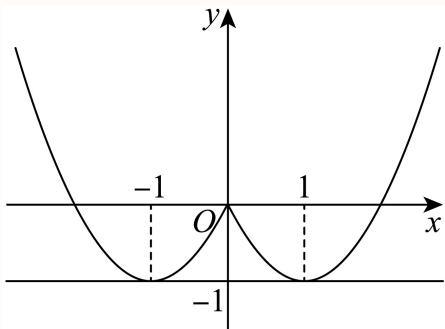
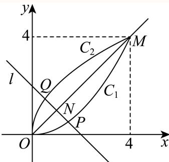

定义域、指数对数与分段求值 明确真数、底数及分段范围，由给值或参数约束求解。
嘉定 · 第1题 ★☆☆☆☆ · 教师预估 本题资料或解析有待核事项，预览不可作为已审定成品。
函数 y = log 2 ( x 2 − 1 ) y = \log _ { 2 } ( x ^ { 2 } - 1 ) y = log 2 ( x 2 − 1 )
考点： 对数真数限制与定义域；二次不等式求解。难度依据： 真数大于零后直接解二次不等式
核查说明： 题干与解析已用于人工归类，尚未完成整题公式校净与独立数学终审。
展开答案与解析 【答案】( − ∞ , − 1 ) ∪ ( 1 , + ∞ ) ( - \infty , - 1 ) \cup ( 1 , + \infty ) ( − ∞ , − 1 ) ∪ ( 1 , + ∞ )
【解析】
利用对数函数的定义，列出不等式求解即得.
函数 ⋅ y = log 2 ( x 2 − 1 ) \ { \cdot } y = \log _ { 2 } ( x ^ { 2 } - 1 ) ⋅ y = log 2 ( x 2 − 1 ) : x 2 − 1 > 0 : \ : x ^ { 2 } - 1 > 0 \ : : x 2 − 1 > 0 :
所以函数 : y = log 2 ( x 2 − 1 ) : y = \log _ { 2 } ( x ^ { 2 } - 1 ) : y = log 2 ( x 2 − 1 ) ( − ∞ , − 1 ) ∪ ( 1 , + ∞ ) ( - \infty , - 1 ) \cup ( 1 , + \infty ) ( − ∞ , − 1 ) ∪ ( 1 , + ∞ )
故答案为： ( − ∞ , − 1 ) ∪ ( 1 , + ∞ ) ( - \infty , - 1 ) \cup ( 1 , + \infty ) ( − ∞ , − 1 ) ∪ ( 1 , + ∞ )
嘉定 · 第13题 ★★☆☆☆ · 教师预估 本题资料或解析有待核事项，预览不可作为已审定成品。
已知a为正数，则 ∗ a > 3 ∗ ^ { * } a > 3 ^ { * } ∗ a > 3 ∗ a a > a 3 , { } ^ { } a ^ { a } > a ^ { 3 } { } ^ { , } a a > a 3 ,
A. 充分非必要条件
B. 必要非充分条件
C. 充要条件
D. 既非充分也非必要条件
考点： 指数不等式的充分必要条件；按指数函数底数分类讨论；变底数指数大小比较。难度依据： 底数在零一之间时不等方向变化
核查说明： 题干与解析已用于人工归类，尚未完成整题公式校净与独立数学终审。
展开答案与解析 【答案】A
【解析】
根据给定条件，当 a > 3 a > 3 a > 3 a a > a 3 a ^ { a } > a ^ { 3 } a a > a 3
当 a > a > a > ⟨ y = a x \langle y = a ^ { x } ⟨ y = a x a a > a 3 a ^ { a } > a ^ { 3 } a a > a 3
当 a a > a 3 a ^ { a } > a ^ { 3 } a a > a 3 a > 3 , a > 3 , a > 3 , < a < < a < < a < a < 3 a < 3 a < 3 < a < 1 < a < 1 < a < 1
所以 ∗ a > 3 ∗ ^ { * } a > 3 ^ { * } ∗ a > 3 ∗ ⋅ a a > a 3 , { } ^ { \cdot } a ^ { a } > a ^ { 3 } { } ^ { , } ⋅ a a > a 3 ,
故选：A.
奉贤 · 第4题 ★★☆☆☆ · 教师预估 本题资料或解析有待核事项，预览不可作为已审定成品。
设 f ( x ) = { ln x + 1 , x > 0 , 2 x + 1 , x ≤ 0. f(x)=\begin{cases}\ln x+1,&x>0,\\2^x+1,&x\leq 0.\end{cases} f ( x ) = { ln x + 1 , 2 x + 1 , x > 0 , x ≤ 0. f ( x 0 ) = 1 f(x_0)=1 f ( x 0 ) = 1 x 0 = x_0= x 0 =
考点： 分段指数对数函数的给值求自变量。难度依据： 须分别检查两段方程与区间
核查说明： 题干与解析已用于人工归类，尚未完成整题公式校净与独立数学终审。；题干分段函数缺少x>0时ln x+1这一整支；已定向下载同名PDF，第1页文字层确认两支为ln x+1(x>0)、2^x+1(x≤0)，本分类未改底稿。；题干与解析已用于人工归类，尚未完成整题公式校净与独立数学终审。；题干分段函数缺少x>0时ln x+1这一整支；已定向下载同名PDF，第1页文字层确认两支为ln x+1(x>0)、2^x+1(x≤0)，本分类未改底稿。
展开答案与解析 【答案】1
【解析】
根据分段函数，分 x 0 > 0 x _ { 0 } > 0 x 0 > 0 I x 0 ≤ 0 \mathrm { { I } } x _ { 0 } \le 0 I x 0 ≤ 0
当 x 0 > 0 H b J x _ { 0 } > 0 \mathbb { H } \ b { \mathrm { J } } x 0 > 0 H b J f ( x 0 ) = ln x 0 + 1 = 1 f \left( x _ { 0 } \right) = \ln x _ { 0 } + 1 = 1 f ( x 0 ) = ln x 0 + 1 = 1 x 0 = 1 x _ { 0 } = 1 x 0 = 1
当 x 0 ≤ x _ { 0 } \leq x 0 ≤ f ( x 0 ) = 2 x 0 + 1 = 1 f \left( x _ { 0 } \right) = 2 ^ { x _ { 0 } } + 1 = 1 f ( x 0 ) = 2 x 0 + 1 = 1
所以 x 0 = 1 x _ { 0 } = 1 x 0 = 1
故答案为：1
奉贤 · 第14题 ★★★☆☆ · 教师预估 本题资料或解析有待核事项，预览不可作为已审定成品。
函数 y = log 2 sin x + log 2 cos x y = \log _ { 2 } \sin x + \log _ { 2 } \cos x y = log 2 sin x + log 2 cos x
A. 函数是偶函数
B. 函数定义域是 ( 0 , π 2 ) \left( 0 , { \frac { \pi } { 2 } } \right) ( 0 , 2 π )
C. 函数最大值−1
D. 函数的最小正周期为π
考点： 复合对数函数定义域与周期；正弦余弦同正区域及二倍角最值。难度依据： 周期不能只看化简式还需保留原定义域
核查说明： 题干与解析已用于人工归类，尚未完成整题公式校净与独立数学终审。
展开答案与解析 【答案】C
【解析】
求出函数f(x)的定义域，可判断AB选项；利用二倍角的正弦公式以及正弦函数的有界性可判断C选项；利用正弦型函数的周期性可判断D选项.
设 f ( x ) = log 2 sin x + log 2 cos x f \left( x \right) = \log _ { 2 } \sin x + \log _ { 2 } \cos x f ( x ) = log 2 sin x + log 2 cos x { sin x > 0 cos x > 0 \left\{ { \begin{array} { l } { \sin x > 0 } \\ { \cos x > 0 } \end{array} } \right. { sin x > 0 cos x > 0 2 k π < x < 2 k π + π 2 ( k ∈ Z ) 2 k \pi < x < 2 k \pi + { \frac { \pi } { 2 } } ( k \in { \bf Z } ) 2 kπ < x < 2 kπ + 2 π ( k ∈ Z )
所以，函数f(x)的定义域为 { x ∣ 2 k π < x < 2 k π + π 2 , k ∈ Z } \left\{ x \Big \vert 2 k \pi < x < 2 k \pi + \frac { \pi } { 2 } , k \in \mathbf { Z } \right\} { x 2 kπ < x < 2 kπ + 2 π , k ∈ Z }
所以，函数f(x)不是偶函数，A错B错；
当 2 k π < x < 2 k π + π 2 ( k ∈ Z ) 2 k \pi < x < 2 k \pi + \frac { \pi } { 2 } ( k \in { \bf Z } ) 2 kπ < x < 2 kπ + 2 π ( k ∈ Z ) k π < 2 x < 4 k π + π ( k ∈ Z ) \displaystyle { \mathfrak { k } } \pi < 2 x < 4 k \pi + \pi \left( k \in \mathbf { Z } \right) k π < 2 x < 4 kπ + π ( k ∈ Z )
f ( x ) = log 2 ( sin x cos x ) = log 2 ( 1 2 sin 2 x ) ≤ log 2 1 2 = − 1 ,
f (x) = \log_ {2} (\sin x \cos x) = \log_ {2} \left(\frac {1}{2} \sin 2 x\right) \leq \log_ {2} \frac {1}{2} = - 1,
f ( x ) = log 2 ( sin x cos x ) = log 2 ( 2 1 sin 2 x ) ≤ log 2 2 1 = − 1 ,
当且仅当 2 x = π 2 + 4 k π ( k ∈ Z ) 2 x = \frac { \pi } { 2 } + 4 k \pi \left( k \in \mathbf { Z } \right) 2 x = 2 π + 4 kπ ( k ∈ Z ) x = π 4 + 2 k π ( k ∈ Z ) x = { \frac { \pi } { 4 } } + 2 k \pi \left( k \in { \mathbf { Z } } \right) x = 4 π + 2 kπ ( k ∈ Z )
因为 f ( 2 π + x ) = log 2 sin ( 2 π + x ) + log 2 cos ( 2 π + x ) = log 2 sin x + log 2 cos x = f ( x ) f \left( 2 \pi + x \right) = \log _ { 2 } \sin \left( 2 \pi + x \right) + \log _ { 2 } \cos \left( 2 \pi + x \right) = \log _ { 2 } \sin x + \log _ { 2 } \cos x = f \left( x \right) f ( 2 π + x ) = log 2 sin ( 2 π + x ) + log 2 cos ( 2 π + x ) = log 2 sin x + log 2 cos x = f ( x )
结合函数f(x)的定义域可知，函数f(x)的最小正周期为2π，D错.故选：C.
奉贤 · 第17题 ★★★☆☆ · 教师预估 本题资料或解析有待核事项，预览不可作为已审定成品。
已知函数 y = f ( x ) y = f \left( x \right) y = f ( x ) f ( x ) = a x f \left( x \right) = a ^ { x } f ( x ) = a x [ a > 0 [ a > 0 [ a > 0 . a ≠ 1 ) . a \neq 1 ) . a = 1 ) ⋅ y = f ( x ) \boldsymbol { \cdot } \boldsymbol { y } = \boldsymbol { f } \left( \boldsymbol { x } \right) ⋅ y = f ( x ) f ( ∣ 2 x − 1 ∣ ) > f \left( \left| 2 x - 1 \right| \right) > f ( ∣ 2 x − 1 ∣ ) > Φ : x ∈ ( 0 , 1 ] { \bf \Phi } _ { : x } \in ( 0 , 1 ] Φ : x ∈ ( 0 , 1 ] f ( x 2 + 2 ) f \left( x ^ { 2 } + 2 \right) f ( x 2 + 2 )
考点： （1）定底数后解绝对值不等式；（2）等比条件化为参数函数并求受限值域。难度依据： （1）定底数后解绝对值不等式；（2）等比条件化为参数函数并求受限值域
核查说明： 仅完成本题所述针对性校核；不代表其他题或全卷数学通过。；题干与解析已用于人工归类，尚未完成整题公式校净与独立数学终审。；第2问“存在x”变量被OCR写为冒号与乱码，须规范存在量词。；仅完成本题所述针对性校核；不代表其他题或全卷数学通过。；题干与解析已用于人工归类，尚未完成整题公式校净与独立数学终审。；第2问“存在x”变量被OCR写为冒号与乱码，须规范存在量词。
展开答案与解析 【解析】
(1) 若函数 ⋅ y = f ( x ) \boldsymbol { \cdot } \boldsymbol { y } = \boldsymbol { f } \left( \boldsymbol { x } \right) ⋅ y = f ( x ) f ( 2 ) = a 2 = 9 f \left( 2 \right) = a ^ { 2 } = 9 f ( 2 ) = a 2 = 9
解得 Q = 3 , a = − 3 \ Q = 3 , a = - 3 Q = 3 , a = − 3 f ( x ) = 3 x f \left( x \right) = 3 ^ { x } f ( x ) = 3 x
由 f ( 2 x − 1 ) = 3 2 x − 1 > f \left( \left. 2 x - 1 \right. \right) = 3 ^ { \left. 2 x - 1 \right. } > \left. \begin{array} { r l r } \end{array} \right. f ( 2 x − 1 ) = 3 2 x − 1 > ∣ 2 x − 1 ∣ > 1 | 2 x - 1 | > 1 ∣2 x − 1∣ > 1
解得 x > 1 x > 1 x > 1 ∣ x < 0 \vert x < 0 ∣ x < 0
所以不等 ± ⃗ ζ ^ f ( ∣ 2 x − 1 ∣ ) > \vec { \pm } \hat { \zeta } f \left( | 2 x - 1 | \right) > ± ζ ^ f ( ∣2 x − 1∣ ) > { x ∣ x > 1 \{ x | x > 1 { x ∣ x > 1 x < 0 } x < 0 \} x < 0 }
(2) f ( 1 ) = a , f ( t x ) = a t x , f ( x 2 + 2 ) = a x 2 + 2 , f \left( 1 \right) = a , f \left( t x \right) = a ^ { t x } , f \left( x ^ { 2 } + 2 \right) = a ^ { x ^ { 2 } + 2 } , f ( 1 ) = a , f ( t x ) = a t x , f ( x 2 + 2 ) = a x 2 + 2 ,
若存在x ∈ ( 0 , 1 ] x\in(0,1] x ∈ ( 0 , 1 ] f ( x 2 + 2 ) f \left( x ^ { 2 } + 2 \right) f ( x 2 + 2 )
则 ⌋ a 2 t x = a x 2 + 2 ⋅ a . \rfloor a ^ { 2 t x } = a ^ { x ^ { 2 } + 2 } \cdot a . ⌋ a 2 t x = a x 2 + 2 ⋅ a . 2 t x = x 2 + 3 2 t x = x ^ { 2 } + 3 2 t x = x 2 + 3
由 ∣ x ∈ ( 0 , 1 ] \vert x \in ( 0 , 1 ] ∣ x ∈ ( 0 , 1 ] t τ = x 2 + 3 2 x = x 2 + 3 2 x , { \bf \tau } = \frac { x ^ { 2 } + 3 } { 2 x } = \frac { x } { 2 } + \frac { 3 } { 2 x } , τ = 2 x x 2 + 3 = 2 x + 2 x 3 ,
令 g ( x ) = x 2 + 3 2 x ( x ∈ ( 0 , 1 ] ) , g ′ ( x ) = 1 2 − 3 2 x 2 = x 2 − 3 2 x 2 ,
\text {令} g (x) = \frac {x}{2} + \frac {3}{2 x} (x \in (0, 1 ]), g ^ {\prime} (x) = \frac {1}{2} - \frac {3}{2 x ^ {2}} = \frac {x ^ {2} - 3}{2 x ^ {2}},
令 g ( x ) = 2 x + 2 x 3 ( x ∈ ( 0 , 1 ]) , g ′ ( x ) = 2 1 − 2 x 2 3 = 2 x 2 x 2 − 3 ,
当 x ∈ ( 0 , 1 ] x \in ( 0 , 1 ] x ∈ ( 0 , 1 ] x 2 ∈ ( 0 , 1 ] x ^ { 2 } \in ( 0 , 1 ] x 2 ∈ ( 0 , 1 ] g ′ ( x ) = x 2 − 3 2 x 2 < 0. g ^ { \prime } \left( x \right) = \frac { x ^ { 2 } - 3 } { 2 x ^ { 2 } } < 0 . g ′ ( x ) = 2 x 2 x 2 − 3 < 0.
可得 ℘ ( x ) = x 2 + 3 2 x \wp \left( x \right) = { \frac { x } { 2 } } + { \frac { 3 } { 2 x } } ℘ ( x ) = 2 x + 2 x 3 x ∈ ( 0 , 1 ] x \in ( 0 , 1 ] x ∈ ( 0 , 1 ] g ( x ) ≥ g ( 1 ) = 2 g \left( x \right) \geq g \left( 1 \right) = 2 g ( x ) ≥ g ( 1 ) = 2 [ 2 , + ∞ ) [ 2 , + \infty ) [ 2 , + ∞ )
宝山 · 第8题 ★★☆☆☆ · 教师预估 …9 a = 4 b = m 9 ^ { a } = 4 ^ { b } = m 9 a = 4 b = m 1 a + 1 b = 2 { \frac { 1 } { a } } + { \frac { 1 } { b } } = 2 a 1 + b 1 = 2
考点： 指数关系与对数换底。难度依据： 涉及指数关系与对数换底；难度为教师预估，需结合原题条件复核。
核查说明： 依据现有底稿归类，尚未逐页校卷、公式校净或独立数学终审。
展开答案与解析 【答案】6.
【解析】
利用换底公式可得 ∂ ⋅ a = lg m lg 9 , b = lg m lg 4 \mathbf { \partial } \cdot a = { \frac { \lg m } { \lg 9 } } , b = { \frac { \lg m } { \lg 4 } } ∂ ⋅ a = l g 9 l g m , b = l g 4 l g m
∵ 9 a = 4 b = m > 0 , ∴ a = log 9 m = lg m lg 9 , b = log 4 m = lg m lg 4 ,
\because 9 ^ {a} = 4 ^ {b} = m > 0, \therefore a = \log_ {9} m = \frac {\lg m}{\lg 9}, b = \log_ {4} m = \frac {\lg m}{\lg 4},
∵ 9 a = 4 b = m > 0 , ∴ a = log 9 m = lg 9 lg m , b = log 4 m = lg 4 lg m ,
∵ 1 a + 1 b = 2 ,
\because \frac {1}{a} + \frac {1}{b} = 2,
∵ a 1 + b 1 = 2 ,
∴ lg 9 lg m + lg 4 lg m = lg 9 + lg 4 lg m = lg 36 lg m = log m 36 = 2 ,
\therefore \frac {\lg 9}{\lg m} + \frac {\lg 4}{\lg m} = \frac {\lg 9 + \lg 4}{\lg m} = \frac {\lg 3 6}{\lg m} = \log_ {m} 3 6 = 2,
∴ lg m lg 9 + lg m lg 4 = lg m lg 9 + lg 4 = lg m lg 36 = log m 36 = 2 ,
∴ m 2 = 36 ,
\therefore m ^ {2} = 3 6,
∴ m 2 = 36 ,
∵ m > 0 , ∴ m = 6.
\because m > 0, \therefore m = 6.
∵ m > 0 , ∴ m = 6.
故答案为：6.
崇明 · 第8题 ★★☆☆☆ · 教师预估 已知 f ( x ) = { 2 x − 1 , x > 1 x − 1 , x ≤ 1 f \left( x \right) = \left\{ { \begin{array} { l } { 2 ^ { x } - 1 , x > 1 } \\ { x - 1 , x \leq 1 } \end{array} } \right. f ( x ) = { 2 x − 1 , x > 1 x − 1 , x ≤ 1
考点： 分段函数方程。难度依据： 涉及分段函数方程；难度为教师预估，需结合原题条件复核。
核查说明： 依据现有底稿归类，尚未逐页校卷、公式校净或独立数学终审。
展开答案与解析 【答案】log 2 3 \log _ { 2 } 3 log 2 3
【解析】
根据分段函数的形式分段求解即可.
f(x) = 2等价于 { 2 x − 1 = 2 x > 1 \left\{ { \begin{array} { l l } { 2 ^ { x } - 1 = 2 } \\ { x > 1 } \end{array} } \right. { 2 x − 1 = 2 x > 1 { x − 1 = 2 x ≤ 1 \left\{ { x - 1 = 2 \atop x \leq 1 } \right. { x ≤ 1 x − 1 = 2
故 x = log 2 3 x = \log _ { 2 } 3 x = log 2 3
故答案为： log 2 3 \log _ { 2 } 3 log 2 3
徐汇 · 第2题 ★☆☆☆☆ · 教师预估 本题资料或解析有待核事项，预览不可作为已审定成品。
已知函数 y = f ( x ) y=f(x) y = f ( x ) f ( x ) = { ln x , x > 0 , − 1 , x ≤ 0 , f(x)=\begin{cases}\ln x,&x>0,\\-1,&x\le0,\end{cases} f ( x ) = { ln x , − 1 , x > 0 , x ≤ 0 , f ( 1 ) = f(1)= f ( 1 ) =
考点： 分段对数函数代值。难度依据： 分段对数函数代值；按所需步骤与推理量估计
核查说明： 题干与解析已用于人工归类，尚未完成整题公式校净与独立数学终审。；分段函数只识别到x>0一段；题干其余分支缺失，须回源。；题干与解析已用于人工归类，尚未完成整题公式校净与独立数学终审。；分段函数只识别到x>0一段；题干其余分支缺失，须回源。
展开答案与解析 【答案】0
【解析】
根据分段函数解析式求函数值.
由解析式知f(1) = ln 1 = 0.
故答案为：0
松江 · 第3题 ★★☆☆☆ · 教师预估 本题资料或解析有待核事项，预览不可作为已审定成品。
函数 y = log ( 3 x + 1 ) + 1 y = \log { ( 3 x + 1 ) } + \sqrt { 1 } y = log ( 3 x + 1 ) + 1
考点： 对数根式定义域；定义域不等式组。难度依据： 对数根式定义域；定义域不等式组；按所需步骤与推理量估计
核查说明： 题干与解析已用于人工归类，尚未完成整题公式校净与独立数学终审。；题干根号覆盖范围错误，解析为√(1−x)，须回源。；题干与解析已用于人工归类，尚未完成整题公式校净与独立数学终审。；题干根号覆盖范围错误，解析为√(1−x)，须回源。
展开答案与解析 【答案】( − 1 3 , 1 ] \left( - { \frac { 1 } { 3 } } , 1 \right] ( − 3 1 , 1 ]
【解析】
根据函数的解析式，列出使解析式有意义的不等式组，求出解集即可
要使函数 y ˙ = g ( 3 x + 1 ) + 1 − x \begin{array} { r } { \dot { \boldsymbol { y } } = \mathbb { g } \left( 3 \boldsymbol { x } + 1 \right) + \sqrt { 1 - \boldsymbol { x } } } \end{array} y ˙ = g ( 3 x + 1 ) + 1 − x { 3 x + 1 > 0 1 − x ≥ 0 \left\{ { \begin{array} { l } { 3 x + 1 > 0 } \\ { 1 - x \geq 0 } \end{array} } \right. { 3 x + 1 > 0 1 − x ≥ 0 − 1 3 < x ≤ 1 - { \frac { 1 } { 3 } } < x \leq 1 − 3 1 < x ≤ 1
即函数 ⋅ ˙ y = l g ( 3 x + 1 ) + 1 − x \begin{array} { r } { \dot { \boldsymbol { \cdot } } \boldsymbol { y } = \mathrm { l g } \left( 3 x + 1 \right) + \sqrt { 1 - x } } \end{array} ⋅ ˙ y = lg ( 3 x + 1 ) + 1 − x ( − 1 3 , 1 ] \left( - { \frac { 1 } { 3 } } , 1 \right] ( − 3 1 , 1 ]
故答案为： ( − 1 3 , 1 ] \left( - { \frac { 1 } { 3 } } , 1 \right] ( − 3 1 , 1 ]
浦东 · 第1题 ★☆☆☆☆ · 教师预估 本题资料或解析有待核事项，预览不可作为已审定成品。
若对数函数 ⟨ y = log a x ( a > 0 E a ≠ 1 ) \langle y = \log _ { a } x ( a > 0 \mathbb { E } a \neq 1 ) ⟨ y = log a x ( a > 0 E a = 1 )
考点： 对数函数代点求底数。难度依据： 对数函数代点求底数；按所需步骤与推理量估计
核查说明： 题干与解析已用于人工归类，尚未完成整题公式校净与独立数学终审。
展开答案与解析 【答案】2.
【解析】
直接将点代入计算即可.
将点(4, 2)代入 . y = log a . y = \log _ { a } . y = log a 2 = log a 4 2 = \log _ { a } 4 2 = log a 4
故答案为：2.
浦东 · 第8题 ★★☆☆☆ · 教师预估 本题资料或解析有待核事项，预览不可作为已审定成品。
已知函数 y = f ( x ) y = f \left( x \right) y = f ( x ) f ( x ) = { ( 1 2 ) x − 3 , x ≤ 0 x 2 , x > 0 f \left( x \right) = { \left\{ { \left( { \frac { 1 } { 2 } } \right) } ^ { x } - 3 , x \leq 0 \right.} _ { x ^ { 2 } , x > 0 } f ( x ) = { ( 2 1 ) x − 3 , x ≤ 0 x 2 , x > 0 f ( x ) ≤ 1 f \left( x \right) \leq 1 f ( x ) ≤ 1
考点： 分段函数不等式；指数和二次不等式。难度依据： 分段函数不等式；指数和二次不等式；按所需步骤与推理量估计
核查说明： 题干与解析已用于人工归类，尚未完成整题公式校净与独立数学终审。
展开答案与解析 【答案】[−2, 1].
【解析】
根据题意分 ⋅ x ≤ 0 ℏ ⋅ 1 x > 0 \cdot x \leq 0 \hbar \mathbb { \cdot } \mathbb { 1 } x > 0 ⋅ x ≤ 0ℏ ⋅ 1 x > 0
f ( x ) ≤ 1
f (x) \leq 1
f ( x ) ≤ 1
若 x ≤ 0 x \leq 0 x ≤ 0 ( 1 2 ) x − 3 ≤ 1 \left( { \frac { 1 } { 2 } } \right) ^ { x } - 3 \leq 1 ( 2 1 ) x − 3 ≤ 1 ( 1 2 ) x ≤ 4 = ( 1 2 ) − 2 \left( { \frac { 1 } { 2 } } \right) ^ { x } \leq 4 = \left( { \frac { 1 } { 2 } } \right) ^ { - 2 } ( 2 1 ) x ≤ 4 = ( 2 1 ) − 2 ⋅ 2 ≤ x ≤ 0 i \cdot 2 \leq x \leq 0 _ { \mathrm { { i } } } ⋅ 2 ≤ x ≤ 0 i
若 x > 0. x > 0 . x > 0. x 2 ≤ 1 x ^ { 2 } \leq 1 x 2 ≤ 1 0 < x ≤ 1 ; 0 < x \le 1 ; 0 < x ≤ 1 ;
综上所述：不等式 f ( x ) ≤ f \left( x \right) \leq f ( x ) ≤
故答案为：[−2, 1].
虹口 · 第2题 ★★☆☆☆ · 教师预估 函数 y = ln x x − 1 \ y = \ln { \frac { x } { x - 1 } } y = ln x − 1 x
考点： 对数真数条件与分式不等式。难度依据： 涉及对数真数条件与分式不等式；难度为教师预估，需结合原题条件复核。
核查说明： 依据现有底稿归类，尚未逐页校卷、公式校净或独立数学终审。
展开答案与解析 【答案】( − ∞ , 0 ) ∪ ( 1 , + ∞ ) \left( - \infty , 0 \right) \cup \left( 1 , + \infty \right) ( − ∞ , 0 ) ∪ ( 1 , + ∞ )
【解析】
由对数函数的定义可得 x x − 1 > 0 \frac { x } { x - 1 } > 0 x − 1 x > 0
函数 y = ln x x − 1 \ y = \ln { \frac { x } { x - 1 } } y = ln x − 1 x x x − 1 > 0 \frac { x } { x - 1 } > 0 x − 1 x > 0
所以 x ( x − 1 ) > 0 x \left( x - 1 \right) > 0 x ( x − 1 ) > 0 x > 1 ≢ χ̸ < 0 x > 1 \not \equiv \not \chi < 0 x > 1 ≡ χ < 0
所以函数的定义域为： ( − ∞ , 0 ) ∪ ( 1 , + ∞ ) \left( - \infty , 0 \right) \cup \left( 1 , + \infty \right) ( − ∞ , 0 ) ∪ ( 1 , + ∞ )
故答案为： ( − ∞ , 0 ) ∪ ( 1 , + ∞ ) \left( - \infty , 0 \right) \cup \left( 1 , + \infty \right) ( − ∞ , 0 ) ∪ ( 1 , + ∞ )
虹口 · 第5题 ★☆☆☆☆ · 教师预估 设a > 0且 . a ≠ 1 . a \neq 1 . a = 1 { y = 2 + log a \{ y = 2 + \log _ { a } { y = 2 + log a
考点： 对数函数图像定点。难度依据： 涉及对数函数图像定点；难度为教师预估，需结合原题条件复核。
核查说明： 依据现有底稿归类，尚未逐页校卷、公式校净或独立数学终审。
展开答案与解析 【答案】(1, 2).
【解析】
≺ ∧ x = 1 \stackrel { \wedge } { \prec } x = 1 ≺ ∧ x = 1
令x = 1，可得 y = 2 + log a 1 y = 2 + \log _ { a } 1 y = 2 + log a 1
所以函数 y = 2 + log a : \begin{array} { r } { y = 2 + \log _ { a } : } \end{array} y = 2 + log a :
故答案为：(1, 2).
金山 · 第3题 ★☆☆☆☆ · 教师预估 本题资料或解析有待核事项，预览不可作为已审定成品。
已知函数y = f ( x ) y=f(x) y = f ( x ) f ( x ) = { 2 x , x ≤ 2 , log 2 x , x > 2 , f(x)=\begin{cases}2^x,&x\leq2,\\\log_2 x,&x>2,\end{cases} f ( x ) = { 2 x , log 2 x , x ≤ 2 , x > 2 , f ( 4 ) f(4) f ( 4 )
考点： 分段函数求值。难度依据： 涉及分段函数求值；难度为教师预估，需结合原题条件复核。
核查说明： 分段函数另一支缺失，无法据现存题干求f(4)，须回源。；依据现有底稿归类，尚未逐页校卷、公式校净或独立数学终审。
展开答案与解析 【答案】2
【解析】
根据给定分段函数解析式，求函数值即可.
由题设 f ( 4 ) = log 2 4 = 2. f ( 4 ) = \log _ { 2 } 4 = 2 . f ( 4 ) = log 2 4 = 2.
故答案为：2
金山 · 第17题 ★★★☆☆ · 教师预估 已知常数 . a > 1 . a > 1 . a > 1 f ( x ) = log a ( x + 2 ) − log a ( 2 − x ) f \left( x \right) = \log _ { a } \left( x + 2 \right) - \log _ { a } \left( 2 - x \right) f ( x ) = log a ( x + 2 ) − log a ( 2 − x ) y = f ( x ) y = f \left( x \right) y = f ( x )
考点： （1）对数定义域与奇偶；（2）区间最值反求底数。难度依据： 涉及（1）对数定义域与奇偶；（2）区间最值反求底数；难度为教师预估，需结合原题条件复核。
核查说明： 依据现有底稿归类，尚未逐页校卷、公式校净或独立数学终审。
展开答案与解析 【解析】
(1) 由 ∫ 2 − x > 0 x + 2 > 0 ′ ⊞ − 2 < x < 2 , \displaystyle \int _ { 2 - x > 0 } ^ { x + 2 > 0 } \mathop { } ^ { \prime \boxplus } - 2 < x < 2 , ∫ 2 − x > 0 x + 2 > 0 ′ ⊞ − 2 < x < 2 ,
所以函数 y = f ( x ) y = f \left( x \right) y = f ( x )
f ( − x ) = log a ( − x + 2 ) − log a ( 2 + x ) = − f ( x ) ,
f (- x) = \log_ {a} (- x + 2) - \log_ {a} (2 + x) = - f (x),
f ( − x ) = log a ( − x + 2 ) − log a ( 2 + x ) = − f ( x ) ,
所以函数 y = f ( x ) y = f \left( x \right) y = f ( x )
f ( x ) = log a ( x + 2 ) − log a ( 2 − x ) = log a x + 2 2 − x , (2)
f (x) = \log_ {a} (x + 2) - \log_ {a} (2 - x) = \log_ {a} \frac {x + 2}{2 - x}, \tag {2}
f ( x ) = log a ( x + 2 ) − log a ( 2 − x ) = log a 2 − x x + 2 , ( 2 )
令 u = − x − 2 + 4 x − 2 = − 1 − 4 x − 2 ,
\text {令} u = - \frac {x - 2 + 4}{x - 2} = - 1 - \frac {4}{x - 2},
令 u = − x − 2 x − 2 + 4 = − 1 − x − 2 4 ,
则 ∣ u = − 1 − 4 x − 2 \lvert u = - 1 - \frac { 4 } { x - 2 } ∣ u = − 1 − x − 2 4
又 y = log a x ( a > 1 ) y = \log _ { a } x \left( a > 1 \right) y = log a x ( a > 1 )
所以 f ( x ) = log a ( x + 2 ) − log a ( 2 − x ) f \left( x \right) = \log _ { a } \left( x + 2 \right) - \log _ { a } \left( 2 - x \right) f ( x ) = log a ( x + 2 ) − log a ( 2 − x )
其最大值为 f ( 1 ) = log a 3 = 2 f \left( 1 \right) = \log _ { a } 3 = 2 f ( 1 ) = log a 3 = 2
解得 a = 3 . a = { \sqrt { 3 } } . a = 3 .
长宁 · 第7题 ★★☆☆☆ · 教师预估 已知 ∣ a ∈ { − 1 , − 2 3 , − 1 3 , 1 3 , 2 3 , 1 , 2 , 3 } | a \in \left\{ - 1 , - { \frac { 2 } { 3 } } , - { \frac { 1 } { 3 } } , { \frac { 1 } { 3 } } , { \frac { 2 } { 3 } } , 1 , 2 , 3 \right\} ∣ a ∈ { − 1 , − 3 2 , − 3 1 , 3 1 , 3 2 , 1 , 2 , 3 } y ˙ = x a \mathbf { \dot { \boldsymbol { y } } } = \mathbf { \boldsymbol { x } } ^ { a } y ˙ = x a a =
考点： 结合奇偶性与单调性判断幂指数。难度依据： 幂函数图像辨识；结合奇偶性与单调性判断幂指数
展开答案与解析 【答案】− 2 3 - { \frac { 2 } { 3 } } − 3 2
【解析】
根据图像的对称性，可得到函数的奇偶性；再由图像与坐标轴的关系，即可判断a的取值
因为图像关于y轴对称，所以函数是偶函数；
又因为图像与坐标轴无交点，所以指数a为负数.综上所述， a = − 2 3 . a = - { \frac { 2 } { 3 } } . a = − 3 2 .
故答案为： − 2 3 - { \frac { 2 } { 3 } } − 3 2
闵行 · 第7题 ★★☆☆☆ · 教师预估 已知函数 ⋅ y = { log 2 x , x > 0 f ( x ) , x < 0 \overset { } { \cdot } y = \left\{ \begin{array} { l l } { \log _ { 2 } x , } & { x > 0 } \\ { f \left( x \right) , } & { x < 0 } \end{array} \right. ⋅ y = { log 2 x , f ( x ) , x > 0 x < 0
考点： 奇偶性变换后代入对数分段。难度依据： 奇函数与分段求值；奇偶性变换后代入对数分段
展开答案与解析 【答案】−3
【解析】
首先求出当x = 8时的函数值，再根据奇函数的性质得解.
因为函数 ⋅ y = { log 2 x , x > 0 f ( x ) , x < 0 \overset { } { \underset { } { \cdot } } y = \left\{ \begin{array} { l l } { \log _ { 2 } x , } & { x > 0 } \\ { f \left( x \right) , } & { x < 0 } \end{array} \right. ⋅ y = { log 2 x , f ( x ) , x > 0 x < 0
当x = 8时 y ˙ = log 2 8 = log 2 2 3 = 3 log 2 2 = 3 , \mathbf { \dot { \boldsymbol { y } } } = \log _ { 2 } \mathbf { \boldsymbol { 8 } } = \log _ { 2 } \mathbf { 2 ^ { 3 } } = 3 \log _ { 2 } \mathbf { 2 } = \mathbf { 3 } , y ˙ = log 2 8 = log 2 2 3 = 3 log 2 2 = 3 ,
所以f (−8) = −3.
故答案为：−3
闵行 · 第14题 ★☆☆☆☆ · 教师预估 下列函数中，在区间 ( 0 , + ∞ ) ( 0 , + \infty ) ( 0 , + ∞ )
A. y = x 1 2 y = x ^ { \frac { 1 } { 2 } } y = x 2 1
B. y = 1 x 2 + 1 y = { \frac { 1 } { x ^ { 2 } + 1 } } y = x 2 + 1 1
C. y = 2 x y = 2 ^ { x } y = 2 x
D. y = lg x y = \lg \left. x \right. y = lg x
考点： 比较四种函数在正半轴单调性。难度依据： 基本函数单调性判断；比较四种函数在正半轴单调性
展开答案与解析 【答案】B
【解析】
利用解析式直接判断各选项中函数在 ( 0 , + ∞ ) ( 0 , + \infty ) ( 0 , + ∞ )
对于A，函数 [ y ] = x 1 2 \scriptstyle \left[ y \right] = x ^ { \frac { 1 } { 2 } } [ y ] = x 2 1 ( 0 , + ∞ ) ( 0 , + \infty ) ( 0 , + ∞ )
对于B，函数 : y = 1 x 2 + 1 : y = { \frac { 1 } { x ^ { 2 } + 1 } } : y = x 2 + 1 1 ( 0 , + ∞ ) ( 0 , + \infty ) ( 0 , + ∞ )
对于C，函数 ⋅ y = 2 x 1 ← E ( 0 , + ∞ ) \cdot y = 2 ^ { x } \mathcal { \overleftarrow { 1 } } \mathbb { E } ( 0 , + \infty ) ⋅ y = 2 x 1 E ( 0 , + ∞ )
对于D，当 x > 0 ∣ x > 0 | x > 0∣ y = lg x = lg x y = \lg \left. x \right. = \lg x y = lg x = lg x ( 0 , + ∞ ) ( 0 , + \infty ) ( 0 , + ∞ )
故选：B.
青浦 · 第11题 ★★★☆☆ · 教师预估 本题资料或解析有待核事项，预览不可作为已审定成品。
若函数 ⟨ y = log 1 2 ( a x 2 − 8 x + 15 ) \langle y = \log _ { \frac { 1 } { 2 } } \left( a x ^ { 2 } - 8 x + 1 5 \right) ⟨ y = log 2 1 ( a x 2 − 8 x + 15 )
考点： 复合对数函数单调与定义域；区间恒成立的参数范围及开端点。难度依据： 内层须同时严格递减与真数恒正
核查说明： 题干与解析已用于人工归类，尚未完成整题公式校净与独立数学终审。；原解对数底数曾误写1/9但题干为1/2，需统一回核。；题干与解析已用于人工归类，尚未完成整题公式校净与独立数学终审。；原解对数底数曾误写1/9但题干为1/2，需统一回核。
展开答案与解析 【答案】[ 1 4 , 2 ] \left[ { \frac { 1 } { 4 } } , 2 \right] [ 4 1 , 2 ]
【解析】
由复合函数的单调性和定义域，有函数 t = a x 2 − 8 x + 15 t = a x ^ { 2 } - 8 x + 1 5 t = a x 2 − 8 x + 15 } → 1 E \overrightarrow \} ^ { \mathrm { ~ \scriptsize ~ 1 } \mathrm { { E } } } } 1 E a x 2 − 8 x + 15 > a x ^ { 2 } - 8 x + 1 5 > a x 2 − 8 x + 15 >
函数 ⟨ y = log 1 9 ( a x 2 − 8 x + 15 ) \langle y = \log _ { \frac { 1 } { 9 } } \left( a x ^ { 2 } - 8 x + 1 5 \right) ⟨ y = log 9 1 ( a x 2 − 8 x + 15 ) ⋅ t = a x 2 − 8 x + 15 \cdot t = a x ^ { 2 } - 8 x + 1 5 ⋅ t = a x 2 − 8 x + 15 y = log 1 2 t \boldsymbol { y } = \log _ { \frac { 1 } { 2 } } t y = log 2 1 t
函数 y = log 1 2 ( a x 2 − 8 x + 15 ) y = \log _ { \frac { 1 } { 2 } } \left( a x ^ { 2 } - 8 x + 1 5 \right) y = log 2 1 ( a x 2 − 8 x + 15 )
由函数 [ y = log 1 2 [ y = \log _ { \frac { 1 } { 2 } } [ y = log 2 1 t = a x 2 − 8 x + 15 t = a x ^ { 2 } - 8 x + 1 5 t = a x 2 − 8 x + 15
有 t ′ = 2 a x − 8 ≤ 0 t ^ { \prime } = 2 a x - 8 \leq 0 t ′ = 2 a x − 8 ≤ 0 l a ≤ 4 x { \mathrm { l } } a \leq { \frac { 4 } { x } } l a ≤ x 4 a ≤ 2 a \leq 2 a ≤ 2
又 a x 2 − 8 x + 15 > 0 a x ^ { 2 } - 8 x + 1 5 > 0 a x 2 − 8 x + 15 > 0 a > 8 x − 15 x 2 a > \frac { 8 } { x } - \frac { 1 5 } { x ^ { 2 } } a > x 8 − x 2 15
令 ρ ~ s = 1 x { \bf \tilde { \rho } } s = \frac { 1 } { x } ρ ~ s = x 1 ∣ a > 8 s − 15 s 2 \vert a > 8 s - 1 5 s ^ { 2 } ∣ a > 8 s − 15 s 2 ( 1 2 , 1 ) \left( { \frac { 1 } { 2 } } , 1 \right) ( 2 1 , 1 )
由二次函数的性质可得 a ≥ 8 2 − 15 4 = 1 4 a \geq \frac { 8 } { 2 } - \frac { 1 5 } { 4 } = \frac { 1 } { 4 } a ≥ 2 8 − 4 15 = 4 1
所以实数a的取值范围为 [ 1 4 , 2 ] \left[ { \frac { 1 } { 4 } } , 2 \right] [ 4 1 , 2 ]
故答案为： [ 1 4 , 2 ] \left[ { \frac { 1 } { 4 } } , 2 \right] [ 4 1 , 2 ]
青浦 · 第13题 ★★☆☆☆ · 教师预估 本题资料或解析有待核事项，预览不可作为已审定成品。
已知x, y ∈ R y \in \mathbf { R } y ∈ R x > y : x > y _ { \mathrm { : } } x > y :
A. 1 x 2 + 1 < 1 y 2 + 1 \frac { 1 } { x ^ { 2 } + 1 } < \frac { 1 } { y ^ { 2 } + 1 } x 2 + 1 1 < y 2 + 1 1
B. ln ( x 2 + 1 ) > ln ( y 2 + 1 ) \ln \left( x ^ { 2 } + 1 \right) > \ln \left( y ^ { 2 } + 1 \right) ln ( x 2 + 1 ) > ln ( y 2 + 1 )
C. sin x > sin y \sin x > \sin y sin x > sin y
D. x 3 > y 3 x ^ { 3 } > y ^ { 3 } x 3 > y 3
考点： 基本函数全局单调性的反例辨析；实数序关系在函数映射下的保持。难度依据： 区分局部单调和全实数单调
核查说明： 题干与解析已用于人工归类，尚未完成整题公式校净与独立数学终审。
展开答案与解析 【答案】D
【解析】
利用不等式的性质，以及对数函数的性质、幂函数的性质、正弦函数的图象性质求解.
对A， H x = − 1 , y = − 2 \mathbb { H } x = - 1 , y = - 2 H x = − 1 , y = − 2 1 x 2 + 1 > 1 y 2 + 1 \frac { 1 } { x ^ { 2 } + 1 } > \frac { 1 } { y ^ { 2 } + 1 } x 2 + 1 1 > y 2 + 1 1
对B，取 x = − 1 , y = − 2 \scriptstyle \left. x = - 1 , y = - 2 \right. x = − 1 , y = − 2 12 < ln 5 1 2 < \ln { 5 } 12 < ln 5 ( x 2 + 1 ) < ln ( y 2 + 1 ) \left( x ^ { 2 } + 1 \right) < \ln \left( y ^ { 2 } + 1 \right) ( x 2 + 1 ) < ln ( y 2 + 1 )
对C， ♯ χ = 5 π 6 , y = 2 π 3 \sharp \chi = \frac { 5 \pi } { 6 } , y = \frac { 2 \pi } { 3 } ♯ χ = 6 5 π , y = 3 2 π x > y , x > y , x > y , arcsin 5 π 6 < sin 2 π 3 \arcsin { \frac { 5 \pi } { 6 } } < \sin { \frac { 2 \pi } { 3 } } arcsin 6 5 π < sin 3 2 π
对D，因为幂函数 f ( x ) = x 3 f ( x ) = x ^ { 3 } f ( x ) = x 3 x > y , x > y , x > y , x 3 > y 3 x ^ { 3 } > y ^ { 3 } x 3 > y 3
黄浦 · 第9题 ★★☆☆☆ · 教师预估 若 f ( x ) = x 3 ‾ , g ( x ) = { f ( x ) , x ≥ 0 , f ( − x ) , x < 0 { \overline { { f \left( x \right) = x ^ { 3 } } } } , g \left( x \right) = { \left\{ \begin{array} { l l } { f \left( x \right) , x \geq 0 , } \\ { f \left( - x \right) , x < 0 } \end{array} \right. } f ( x ) = x 3 , g ( x ) = { f ( x ) , x ≥ 0 , f ( − x ) , x < 0 ∄ ∨ g ( x ) < − x \nexists \lor g ( x ) < - x ∄ ∨ g ( x ) < − x
考点： 分段求函数表达式和解集。难度依据： 分段函数与不等式；分段求函数表达式和解集
展开答案与解析 【答案】(−1, 0).
【解析】
先求出分段函 ♯ χ g ( x ) \sharp \chi _ { g } ( x ) ♯ χ g ( x ) τ ⃗ ζ ^ g ( x ) < − x \vec { \tau } \hat { \zeta } g \left( x \right) < - x τ ζ ^ g ( x ) < − x
x ≥ x \ge x ≥ g ( x ) = x 3 g \left( x \right) = x ^ { 3 } g ( x ) = x 3
x < x < x < − x > 0 , g ( x ) = ( − x ) 3 = − x 3 , - x > 0 , g \left( x \right) = \left( - x \right) ^ { 3 } = - x ^ { 3 } , − x > 0 , g ( x ) = ( − x ) 3 = − x 3 ,
∴ g ( x ) = { x 3 , x ≥ 0 , − x 3 , x < 0 ,
\therefore g \left(x\right) = \left\{ \begin{array}{l} x ^ {3}, x \geq 0, \\ - x ^ {3}, x < 0, \end{array} \right.
∴ g ( x ) = { x 3 , x ≥ 0 , − x 3 , x < 0 ,
由g (x) < −x得， { x ≥ 0 x 3 < − x , O E ζ ^ { x < 0 − x ⨂ \left\{ \begin{array} { l } { x \geq 0 } \\ { x ^ { 3 } < - x } \end{array} \right. , \mathbb { O } \mathbb { E } \hat { \zeta } ^ { \left\{ x < 0 \right. } - x ^ { \left. \bigotimes \right.} { x ≥ 0 x 3 < − x , OE ζ ^ { x < 0 − x ⨂
不等式组①无解；
不等式组②的解集为(−1,0)
综上，不等 ∄ ζ g ( x ) < − x \nexists \zeta g ( x ) < - x ∄ ζ g ( x ) < − x
故答案为：(−1, 0).
奇偶、单调、对称与周期 利用对称和递推关系比较函数值，注意定义域与开端点。
嘉定 · 第9题 ★★★☆☆ · 教师预估 本题资料或解析有待核事项，预览不可作为已审定成品。
已知 f ( x ) = ln ( x + 1 ) , g ( x ) = { f ( x ) , x ≥ 0 f ( − x ) , x < 0 , f \left( x \right) = \ln { \left( x + 1 \right) } , g \left( x \right) = \left\{ { f \left( x \right) } , x \geq 0 \atop f \left( - x \right) , x < 0 , \right. f ( x ) = ln ( x + 1 ) , g ( x ) = { f ( − x ) , x < 0 , f ( x ) , x ≥ 0 ∣ g ( x ) > x + 2 − \mid g ( x ) > x + 2 - ∣ g ( x ) > x + 2 −
考点： 分段对数函数比较与构造函数；按自变量符号分类解函数不等式。难度依据： 两段处理不同且正半轴需用导数判单调
核查说明： 题干与解析已用于人工归类，尚未完成整题公式校净与独立数学终审。
展开答案与解析 【答案】( − ∞ , e − 1 ) ( - \infty , \mathbf { e } - 1 ) ( − ∞ , e − 1 )
【解析】
根据分段函数的性质，分情况整理不等式，当x ≥ 0时，整理不等式，构造函数，利用导数研究新函数的单调性，当x < 0时，利用中间值法，可得答案.
当 x ≥ 0 H f x \geq 0 \mathbb { H } \mathbf { f } x ≥ 0 H f ( x + 1 ) > x + 2 − e ( x + 1 ) > x + 2 - \mathrm { e } ( x + 1 ) > x + 2 − e ln ( x + 1 ) − ( x + 1 ) > 1 − e \ln \left( x + 1 \right) - \left( x + 1 \right) > 1 - \mathrm { e } ln ( x + 1 ) − ( x + 1 ) > 1 − e
令 ⋅ t = 1 + x ≥ 1 \cdot t = 1 + x \geq 1 ⋅ t = 1 + x ≥ 1 h ( t ) = ln t − t , h \left( t \right) = \ln t - t , h ( t ) = ln t − t , h ′ ( t ) = 1 t − 1 = 1 − t t < 0 , h ^ { \prime } \left( t \right) = \frac { 1 } { t } - 1 = \frac { 1 - t } { t } < 0 , h ′ ( t ) = t 1 − 1 = t 1 − t < 0 ,
所以函数 h ( t ) [ 1 , + ∞ ) h \left( t \right) \mathcal { \left[ 1 , + \infty \right) } h ( t ) [ 1 , + ∞ ) ρ ~ h ( t ) = 1 − e \mathbf { \tilde { \rho } } _ { } h \left( t \right) = 1 - \mathbf { e } ρ ~ h ( t ) = 1 − e t = e . t = { \bf e } . t = e . x = e − 1 x = { \mathrm { e } } - 1 x = e − 1
此时不等 £ ρ ^ ( x ) > x + 2 − e \pounds \hat { \boldsymbol { \rho } } ( \boldsymbol { x } ) > \boldsymbol { x } + 2 - \mathrm { e } £ ρ ^ ( x ) > x + 2 − e [ 0 , e − 1 ) [ 0 , \mathrm { e } - 1 ) [ 0 , e − 1 )
当 x < x < x < ( 1 − x ) > x + 2 − e ( 1 - x ) > x + 2 - \mathrm { e } ( 1 − x ) > x + 2 − e Φ − − x > 1 \mathbf { \Phi } _ { - } - x > 1 Φ − − x > 1 n ( 1 − x ) > 0 \mathrm { n } \left( 1 - x \right) > 0 n ( 1 − x ) > 0
易知 ∣ x + 2 − e < 0 | x + 2 - \mathbf { e } < 0 ∣ x + 2 − e < 0 ‘ g ( x ) > x + 2 − ϵ \ ` g ( x ) > x + 2 - { \epsilon } ‘ g ( x ) > x + 2 − ϵ ( − ∞ , 0 ) ( - \infty , 0 ) ( − ∞ , 0 )
综上所述，不等式 ( g ( x ) ) > x + 2 − e \left( g \left( x \right) \right) > x + 2 - \mathrm { e } ( g ( x ) ) > x + 2 − e ( − ∞ , e − 1 ) ( - \infty , \mathbf { e } - 1 ) ( − ∞ , e − 1 )
故答案为： ( − ∞ , e − 1 ) ( - \infty , \mathbf { e } - 1 ) ( − ∞ , e − 1 )
宝山 · 第5题 ★★☆☆☆ · 教师预估 …⟨ y = x 2 + a x + 1 , x ∈ [ b , 4 ] \langle y = x ^ { 2 } + a x + 1 , x \in [ b , 4 ] ⟨ y = x 2 + a x + 1 , x ∈ [ b , 4 ]
考点： 偶函数定义域对称与二次函数参数。难度依据： 涉及偶函数定义域对称与二次函数参数；难度为教师预估，需结合原题条件复核。
核查说明： 依据现有底稿归类，尚未逐页校卷、公式校净或独立数学终审。
展开答案与解析 【答案】4.
【解析】
根据函数的奇偶性与二次函数的对称性即可得a,b的值，从而得所求.
因为函数 t y = x 2 + a x + 1 , x ∈ [ b , 4 ] \ t y = x ^ { 2 } + a x + 1 , x \in [ b , 4 ] t y = x 2 + a x + 1 , x ∈ [ b , 4 ]
所以函数定义域关于原点对称，且函数图象关于你y轴对称，
所以b = −4，且 − a 2 = 0 ⇒ a = 0 , - { \frac { a } { 2 } } = 0 \Rightarrow a = 0 , − 2 a = 0 ⇒ a = 0 ,
所以 a − b = 0 − ( − 4 ) = 4. a - b = 0 - ( - 4 ) = 4 . a − b = 0 − ( − 4 ) = 4.
故答案为：4.
崇明 · 第13题 ★★☆☆☆ · 教师预估 本题资料或解析有待核事项，预览不可作为已审定成品。
下列函数中，在其定义域上既是奇函数又是严格增函数的是（ ）。
A. y = x 3 y=x^3 y = x 3
B. y = e x y=\mathrm e^x y = e x
C. y = lg x y=\lg x y = lg x
D. y = sin x y=\sin x y = sin x
考点： 奇偶性与严格单调性。难度依据： 涉及奇偶性与严格单调性；难度为教师预估，需结合原题条件复核。
核查说明： 题干选项不完整，须核题图及原卷。；依据现有底稿归类，尚未逐页校卷、公式校净或独立数学终审。
展开答案与解析 【答案】A
【解析】
利用奇偶性的定义及基本函数的性质逐个判断即可.
对于A， y = x 3 y = x ^ { 3 } y = x 3 ( − x ) 3 = − x 3 \left( - x \right) ^ { 3 } = - x ^ { 3 } ( − x ) 3 = − x 3 . y = x 3 . y = x ^ { 3 } . y = x 3
又 . y = x 3 . y = x ^ { 3 } . y = x 3
对于B，y = ex的定义域为R，且 e − x ≠ − e x \mathrm { e } ^ { - x } \neq - \mathrm { e } ^ { x } e − x = − e x s = e x \boldsymbol { \mathscr { s } } _ { } = \mathrm { e } ^ { x } s = e x
对于C，y = lgx的定义域为 ( 0 , + ∞ ) ( 0 , + \infty ) ( 0 , + ∞ )
所以y = lgx不具有奇偶性，y = lgx是严格增函数，错误；
对于D，y = sinx的定义域为R，且sin(−x) = −sinx，所以y = sinx为奇函数，
但y = sinx为周期函数，不是定义域R上的严格增函数，错误.
故选：A
徐汇 · 第5题 ★★☆☆☆ · 教师预估 本题资料或解析有待核事项，预览不可作为已审定成品。
设 a , b ∈ R , f ( x ) = x 3 + 3 sin x + b . a , b \in \mathbf { R } , f \left( x \right) = x ^ { 3 } + 3 \sin x + b . a , b ∈ R , f ( x ) = x 3 + 3 sin x + b . y = f ( x ) y = f \left( x \right) y = f ( x ) [ − a , 2 a − 1 ] [ - a , 2 a - 1 ] [ − a , 2 a − 1 ] a + b = a + b = a + b =
考点： 奇函数定义域对称与函数值。难度依据： 奇函数定义域对称与函数值；按所需步骤与推理量估计
核查说明： 题干与解析已用于人工归类，尚未完成整题公式校净与独立数学终审。
展开答案与解析 【答案】1.
【解析】
利用奇函数的定义域关于原点对称，且满足 f ( − x ) + f ( x ) = 0 f \left( - x \right) + f \left( x \right) = 0 f ( − x ) + f ( x ) = 0 ⋅ y = f ( x ) \boldsymbol { \cdot } \boldsymbol { y } = \boldsymbol { f } \left( \boldsymbol { x } \right) ⋅ y = f ( x ) [ − a , 2 a − 1 ] [ - a , 2 a - 1 ] [ − a , 2 a − 1 ] ∣ f ( − x ) + f ( x ) = ( − x ) 3 + 3 sin ( − x ) + b + x 3 + 3 sin x + b = 2 b = 0 ⇒ b = 0 , \mid f \left( - x \right) + f \left( x \right) = \left( - x \right) ^ { 3 } + 3 \sin \left( - x \right) + b + x ^ { 3 } + 3 \sin x + b = 2 b = 0 \Rightarrow b = 0 , ∣ f ( − x ) + f ( x ) = ( − x ) 3 + 3 sin ( − x ) + b + x 3 + 3 sin x + b = 2 b = 0 ⇒ b = 0 ,
故答案为：1.
徐汇 · 第15题 ★★★☆☆ · 教师预估 本题资料或解析有待核事项，预览不可作为已审定成品。
已知函数 y = f ( x ) y=f(x) y = f ( x ) y = f ′ ( x ) y=f'(x) y = f ′ ( x ) R \mathbf R R y = f ( x ) y=f(x) y = f ( x ) y = f ′ ( x ) y=f'(x) y = f ′ ( x ) ( − ∞ , 0 ) (-\infty,0) ( − ∞ , 0 ) y = f ( x ) y=f(x) y = f ( x )
A.
x x x 1
2
3
4
f ( x ) f(x) f ( x ) 2.8188
1.0000
0.3644
0.2468
B.
x x x 1
2
3
4
f ( x ) f(x) f ( x ) 0.7580
1.0000
1.3188
1.7979
C.
x x x 1
2
3
4
f ( x ) f(x) f ( x ) 2.4132
1.0000
1.5885
4.1116
D.
x x x 1
2
3
4
f ( x ) f(x) f ( x ) 0.8664
1.0000
1.1188
1.2240
考点： 偶函数导数与数据变化率。难度依据： 偶函数导数与数据变化率；按所需步骤与推理量估计
核查说明： 题干与解析已用于人工归类，尚未完成整题公式校净与独立数学终审。
展开答案与解析 【答案】B
【解析】
利用导函数的奇偶性和单调性以及正负取值，去分析原函数，即可得到判断函数 y = f ( x ) y = f \left( x \right) y = f ( x ) f ( − x ) = f ( x ) f \left( - x \right) = f \left( x \right) f ( − x ) = f ( x ) − f ′ ( − x ) = f ′ ( x ) - f ^ { \prime } \left( - x \right) = f ^ { \prime } \left( x \right) − f ′ ( − x ) = f ′ ( x ) y = f ′ ( x ) y = f ^ { \prime } \left( x \right) y = f ′ ( x )
由于函数 y = f ( x ) ⊥ y = f \left( x \right) ^ { \perp } y = f ( x ) ⊥ y = f ′ ( x ) y = f ^ { \prime } \left( x \right) y = f ′ ( x )
所以 y = f ′ ( 0 ) = 0 y = f ^ { \prime } \left( 0 \right) = 0 y = f ′ ( 0 ) = 0 y = f ′ ( x ) y = f ^ { \prime } \left( x \right) y = f ′ ( x ) ( − ∞ , 0 ) ( - \infty , 0 ) ( − ∞ , 0 )
所以 y = f ′ ( x ) y = f ^ { \prime } \left( x \right) y = f ′ ( x ) ( 0 , + ∞ ) ( 0 , + \infty ) ( 0 , + ∞ )
由于 y = f ( x ) y = f \left( x \right) y = f ( x )
则 y = f ′ ( x ) y = f ^ { \prime } \left( x \right) y = f ′ ( x ) ( 0 , + ∞ ) ( 0 , + \infty ) ( 0 , + ∞ )
即 y = f ( x ) y = f \left( x \right) y = f ( x ) ( 0 , + ∞ ) ( 0 , + \infty ) ( 0 , + ∞ )
故AC显然错误，而D的变化率越来越小，所以只能选B，
故选：B.
普陀 · 第12题 ★★★★☆ · 教师预估 本题资料或解析有待核事项，预览不可作为已审定成品。
设 a > b > 0 a > b > 0 a > b > 0 y = f ( x ) \boldsymbol { \mathfrak { y } } = \boldsymbol { \mathfrak { f } } \left( \boldsymbol { \mathfrak { x } } \right) y = f ( x ) f ( x ) = ∣ x − 1 x + ln x ∣ f \left( x \right) = \ \left| x - { \frac { 1 } { x } } + \ln x \right| f ( x ) = x − x 1 + ln x f ( a ) = f ( b ) f \left( a \right) = f \left( b \right) f ( a ) = f ( b ) ∣ x 2 + a x + 2 a b ∣ + ∣ x 2 − a x + 2 a b ∣ = 2 a ∣ x ∣ \left| x ^ { 2 } + a x + 2 a b \right| + \left| x ^ { 2 } - a x + 2 a b \right| = 2 a \left| x \right| x 2 + a x + 2 ab + x 2 − a x + 2 ab = 2 a ∣ x ∣
考点： 单调函数倒数反对称关系；绝对值三角不等式等号与整数解；函数约束联动整数解计数。难度依据： 先推出ab为一再将四个整数根转为两个正整数解
核查说明： 仅修复所列OCR公式及其定界符错位；原解数学疑点和其他可渲染错识未因此消除。；题干与解析已用于人工归类，尚未完成整题公式校净与独立数学终审。；仅修复所列OCR公式及其定界符错位；原解数学疑点和其他可渲染错识未因此消除。；题干与解析已用于人工归类，尚未完成整题公式校净与独立数学终审。
展开答案与解析 【答案】[ 3 , 11 3 ) \left[ 3 , { \frac { 1 1 } { 3 } } \right) [ 3 , 3 11 )
【解析】
令 σ ˙ g ( x ) = x − 1 x + ln x . \mathbf { \dot { \sigma } } _ { g } ( x ) = x - { \frac { 1 } { x } } + \ln x . σ ˙ g ( x ) = x − x 1 + ln x . g ˙ ( x ) { \bf \dot { \boldsymbol { g } } } \left( \boldsymbol { x } \right) g ˙ ( x ) a b = 1 a b = 1 ab = 1 ( x 2 + 2 ) 2 − a 2 x 2 ≤ 0 \left( x ^ { 2 } + 2 \right) ^ { 2 } - a ^ { 2 } x ^ { 2 } \le 0 ( x 2 + 2 ) 2 − a 2 x 2 ≤ 0 p ( x ) = ( x 2 + 2 ) 2 − a 2 x 2 p \left( x \right) = \left( x ^ { 2 } + 2 \right) ^ { 2 } - a ^ { 2 } x ^ { 2 } p ( x ) = ( x 2 + 2 ) 2 − a 2 x 2 x > 0 H , ] x > 0 \mathbb { H } { \mathrm { , } } { \mathrm { ] } } x > 0 H , ] x ⃗ ( a ≥ x + 2 x { \vec { x } } \mathbf { ( } a \geq x + { \frac { 2 } { x } } x ( a ≥ x + x 2 h ( x ) = x + 2 x ( x > 0 ) h \left( x \right) = x + \frac { 2 } { x } ( x > 0 ) h ( x ) = x + x 2 ( x > 0 )
令 σ ˙ g ( x ) = x − 1 x + ln x . \mathbf { \dot { \sigma } } _ { g } \left( x \right) = x - { \frac { 1 } { x } } + \ln x . σ ˙ g ( x ) = x − x 1 + ln x . x > 0 { \boldsymbol { \mathscr { x } } } > 0 x > 0 g ′ ( x ) = 1 + 1 x 2 + 1 x > g ^ { \prime } \left( x \right) = 1 + \frac { 1 } { x ^ { 2 } } + \frac { 1 } { x } > g ′ ( x ) = 1 + x 2 1 + x 1 >
所以函数 y ( x ) # ( 0 , + ∞ ) y \left( x \right) \# ( 0 , + \infty ) y ( x ) # ( 0 , + ∞ ) g ( 1 ) = 0 g \left( 1 \right) = 0 g ( 1 ) = 0
作出函数f(x)的图象如下图所示：
由a > b > > b > > b > 0 < b < 1 < a : 0 < b < 1 < a _ { : } 0 < b < 1 < a : f ( a ) = f ( b ) f \left( a \right) = f \left( b \right) f ( a ) = f ( b ) − g ( b ) = g ( a ) - g \left( b \right) = g \left( a \right) − g ( b ) = g ( a )
对任意的 ∣ x ∈ ( 0 , + ∞ ) , g ( 1 x ) = 1 x − x + ln 1 x = 1 x − x − ln x = − g ( x ) ∣ \left| x \in \left( 0 , + \infty \right) , g \left( { \frac { 1 } { x } } \right) = { \frac { 1 } { x } } - x + \ln { \frac { 1 } { x } } = { \frac { 1 } { x } } - x - \ln x = - g \left( x \right) \right| x ∈ ( 0 , + ∞ ) , g ( x 1 ) = x 1 − x + ln x 1 = x 1 − x − ln x = − g ( x )
所以 g ( b ) = − g ( a ) = g ( 1 a ) g \left( b \right) = - g \left( a \right) = g \left( \frac { 1 } { a } \right) g ( b ) = − g ( a ) = g ( a 1 ) b = 1 a b = { \frac { 1 } { a } } b = a 1 a b = 1 a b = 1 ab = 1
由绝对值三角不等式可得
∣ x 2 + a x + 2 a b ∣ + ∣ x 2 − a x + 2 a b ∣ ≥ ∣ ( x 2 + a x + 2 a b ) − ( x 2 − a x + 2 a b ) ∣ = 2 a ∣ x ∣ ,
\left| x ^ {2} + a x + 2 a b \right| + \left| x ^ {2} - a x + 2 a b \right| \geq \left| (x ^ {2} + a x + 2 a b) - (x ^ {2} - a x + 2 a b) \right| = 2 a | x |,
x 2 + a x + 2 ab + x 2 − a x + 2 ab ≥ ( x 2 + a x + 2 ab ) − ( x 2 − a x + 2 ab ) = 2 a ∣ x ∣ ,
当且仅当 ( x 2 + a x + 2 a b ) ( x 2 − a x + 2 a b ) ≤ 0 ♯ \left( x ^ { 2 } + a x + 2 a b \right) \left( x ^ { 2 } - a x + 2 a b \right) \leq 0 \sharp ( x 2 + a x + 2 ab ) ( x 2 − a x + 2 ab ) ≤ 0♯ Π ˙ ‾ . \begin{array} { r } { \underline { { \dot { \Pi } } } . } \end{array} Π ˙ .
即 ( x 2 + a x + 2 ) ( x 2 − a x + 2 ) ≤ 0 \left( x ^ { 2 } + a x + 2 \right) \left( x ^ { 2 } - a x + 2 \right) \leq 0 ( x 2 + a x + 2 ) ( x 2 − a x + 2 ) ≤ 0 ( x 2 + 2 ) 2 − a 2 x 2 ≤ 0. \left( x ^ { 2 } + 2 \right) ^ { 2 } - a ^ { 2 } x ^ { 2 } \leq 0 . ( x 2 + 2 ) 2 − a 2 x 2 ≤ 0.
γ p ( x ) = ( x 2 + 2 ) 2 − a 2 x 2 \gamma p \left( x \right) = \left( x ^ { 2 } + 2 \right) ^ { 2 } - a ^ { 2 } x ^ { 2 } γ p ( x ) = ( x 2 + 2 ) 2 − a 2 x 2 F x ∈ R \boldsymbol { \mathrm { \sf { F } } } \boldsymbol { x } \in \mathbf { R } F x ∈ R p ( 0 ) = 4 > 0 p \left( 0 \right) = 4 > 0 p ( 0 ) = 4 > 0
则 x = 0 x = 0 x = 0 ( x 2 + 2 ) 2 − a 2 x 2 ≤ 0 \left( x ^ { 2 } + 2 \right) ^ { 2 } - a ^ { 2 } x ^ { 2 } \leq 0 \quad ( x 2 + 2 ) 2 − a 2 x 2 ≤ 0
则 ∣ p ( − x ) = [ ( − x ) 2 + 2 ] 2 − a 2 ⋅ ( − x ) 2 = ( x 2 + 2 ) 2 − a 2 x 2 = p ( x ) , | p ( - x ) = [ ( - x ) ^ { 2 } + 2 ] ^ { 2 } - a ^ { 2 } \cdot ( - x ) ^ { 2 } = ( x ^ { 2 } + 2 ) ^ { 2 } - a ^ { 2 } x ^ { 2 } = p ( x ) , ∣ p ( − x ) = [( − x ) 2 + 2 ] 2 − a 2 ⋅ ( − x ) 2 = ( x 2 + 2 ) 2 − a 2 x 2 = p ( x ) ,
所以函数p(x)为偶函数，
所以当 x > 0 x > 0 x > 0 ( x 2 + 2 ) 2 − a 2 x 2 ≤ 0 (x^2+2)^2-a^2x^2\leq0 ( x 2 + 2 ) 2 − a 2 x 2 ≤ 0 x 2 + 2 ≤ a x x ^ { 2 } + 2 \leq a x x 2 + 2 ≤ a x ⋅ a ≥ x + 2 x \cdot a \geq x + { \frac { 2 } { x } } ⋅ a ≥ x + x 2
h ( x ) = x + 2 x h \left( x \right) = x + \frac { 2 } { x } h ( x ) = x + x 2 x > 0 x > 0 x > 0 ( 0 , 2 ) \left( 0 , { \sqrt { 2 } } \right) ( 0 , 2 ) ( 2 , + ∞ ) \left( { \sqrt { 2 } } , + \infty \right) ( 2 , + ∞ )
因为 h ( 1 ) = 3 , h ( 2 ) = 3 , h ( 3 ) = 3 + 2 3 = 11 3 . h \left( 1 \right) = 3 , h \left( 2 \right) = 3 , h \left( 3 \right) = 3 + \frac { 2 } { 3 } = \frac { 1 1 } { 3 } . h ( 1 ) = 3 , h ( 2 ) = 3 , h ( 3 ) = 3 + 3 2 = 3 11 . h ( 1 ) = h ( 2 ) < h ( 3 ) h \left( 1 \right) = h \left( 2 \right) < h \left( 3 \right) h ( 1 ) = h ( 2 ) < h ( 3 )
由题意可知，当 x > 0 ♯ f x > 0 \sharp { \mathfrak { f } } x > 0♯ f a ≥ x + 2 x a\geq x+\frac2x a ≥ x + x 2
所以 h ( 1 ) ≤ a < h ( 3 ) h \left( 1 \right) \leq a < h \left( 3 \right) h ( 1 ) ≤ a < h ( 3 ) a < 11 3 a < \frac { 1 1 } { 3 } a < 3 11
综上所述，实数 的取值范围是 [ 3 , 11 3 ) \left[ 3 , { \frac { 1 1 } { 3 } } \right) [ 3 , 3 11 )
故答案为： [ 3 , 11 3 ) \left[ 3 , { \frac { 1 1 } { 3 } } \right) [ 3 , 3 11 )
关键点点睛：解本题的关键在于分析函数 g ⋅ ( x ) = x − 1 x + ln x \overset { \cdot } { \boldsymbol { g } } \left( \boldsymbol { x } \right) = \boldsymbol { x } - \frac { 1 } { \boldsymbol { x } } + \ln \boldsymbol { x } g ⋅ ( x ) = x − x 1 + ln x g ( 1 x ) = − g ( x ) g \left( { \frac { 1 } { x } } \right) = - g \left( x \right) g ( x 1 ) = − g ( x ) a b = 1 a b = 1 ab = 1
二、选择题
普陀 · 第15题 ★★★★☆ · 教师预估 本题资料或解析有待核事项，预览不可作为已审定成品。
设a > 0且 a ≠ 1 a \neq 1 a = 1 k 、m 、n 都是正整数，数列 { a n } \left\{ a _ { n } \right\} { a n } l a n = { ( a − 6 ) n + 21 , ( 1 ≤ n ≤ m ) a n − 3 , ( n > m ) \mathfrak { l } a _ { n } = \left\{ \begin{array} { l l } { ( a - 6 ) n + 2 1 , ( 1 \leq n \leq m ) } \\ { a ^ { n - 3 } , ( n > m ) } \end{array} \right. l a n = { ( a − 6 ) n + 21 , ( 1 ≤ n ≤ m ) a n − 3 , ( n > m ) { a n } \left\{ a _ { n } \right\} { a n } ∣ h k { \lvert h _ { k } } ∣ h k h k h _ { k } h k
A. 当m = 3时，a的取值范围是(1,6)
B. 不存在a和m的值，使得 . a 4 ∉ A . a _ { 4 } \notin A . a 4 ∈ / A
C. 当m = 4时，a的取值范围是(3, 6)
D. 存在a和m的值，使得 ⋅ a 5 ∉ A \cdot a _ { 5 } \notin A ⋅ a 5 ∈ / A
考点： 分段数列前缀最小值的不同取值；分段线性指数函数的单调性；前缀最小值集合的元素计数。难度依据： 按底数及分段位置追踪最小值更新次数
核查说明： 题干与解析已用于人工归类，尚未完成整题公式校净与独立数学终审。；原解多处把通项讨论称为递推，部分分支解释跳步，需逐项核验前缀最小值集合。；题干与解析已用于人工归类，尚未完成整题公式校净与独立数学终审。；原解多处把通项讨论称为递推，部分分支解释跳步，需逐项核验前缀最小值集合。
展开答案与解析 【答案】C
【解析】
根据a不同的取值范围分析分段函数的性质，结合函数单调性，反证法，进而判断关于集合元素个数等命题的正确性，逐个判断真假即可.
对于A选项,当 m = 3 m = 3 m = 3 τ ⃗ a ∈ ( 0 , 1 ) { \vec { \mathbf { \tau } } } a \in ( 0 , 1 ) τ a ∈ ( 0 , 1 ) a 1 > a 2 > a 3 > . . . > a n \displaystyle a _ { 1 } > a _ { 2 } > a _ { 3 } > . . . > a _ { n } a 1 > a 2 > a 3 > ... > a n
由 F a E ( 0 , 1 ) \mathbb { F } a \mathbb { E } ( 0 , 1 ) F a E ( 0 , 1 )
∃ a ∈ ( 1 , 6 ) \exists a \in ( 1 , 6 ) ∃ a ∈ ( 1 , 6 ) a 1 > a 2 > a 3 > a 4 a _ { 1 } > a _ { 2 } > a _ { 3 } > a _ { 4 } a 1 > a 2 > a 3 > a 4 a ∈ ( 1 , 6 ) a \in ( 1 , 6 ) a ∈ ( 1 , 6 )
此时 A = { a 1 , a 2 , a 3 , a 4 } A = \{ a _ { 1 } , a _ { 2 } , a _ { 3 } , a _ { 4 } \} A = { a 1 , a 2 , a 3 , a 4 } a ∈ [ 6 , + ∞ ) a \in [ 6 , + \infty ) a ∈ [ 6 , + ∞ )
对于B选项，当 a ∈ ( 0 , 1 ) a \in ( 0 , 1 ) a ∈ ( 0 , 1 ) a 1 > a 2 > a 3 a _ { 1 } > a _ { 2 } > a _ { 3 } a 1 > a 2 > a 3 a 4 > a 5 > a 6 > . . . > a n 0 a _ { 4 } > a _ { 5 } > a _ { 6 } > . . . > a _ { n } 0 a 4 > a 5 > a 6 > ... > a n 0
要想A有4个元素，根据函数的递推关系，如果 : a 3 > 0 { \mathrm { : } } a _ { 3 } > 0 : a 3 > 0
所以必有 α ˙ a 3 ≤ 0 \dot { \mathbf { \alpha } } a _ { 3 } \leq 0 α ˙ a 3 ≤ 0
这就产生了矛盾，所以原命题正确，即B选项正确.
对于C选项，当 a ∈ ( 0 , 1 ) a \in ( 0 , 1 ) a ∈ ( 0 , 1 ) a 1 > a 2 > a 3 > a 4 a _ { 1 } > a _ { 2 } > a _ { 3 } > a _ { 4 } a 1 > a 2 > a 3 > a 4 ⋅ a 4 ≤ 0 \cdot a _ { 4 } \leq 0 ⋅ a 4 ≤ 0 a ≤ 3 4 a \leq \frac { 3 } { 4 } a ≤ 4 3
由于 a 5 > a 6 > . . . > a n 0 a _ { 5 } > a _ { 6 } > . . . > a _ { n } 0 a 5 > a 6 > ... > a n 0 A = { a 1 , a 2 , a 3 , a 4 } A = \{ a _ { 1 } , a _ { 2 } , a _ { 3 } , a _ { 4 } \} A = { a 1 , a 2 , a 3 , a 4 }
对于D选项，从前面的分析经验来看，要想 a 5 ∈ A a _ { 5 } \in A a 5 ∈ A ⋅ m = 4 \cdot m = 4 ⋅ m = 4 a 5 = a 4 a _ { 5 } = a _ { 4 } a 5 = a 4
由此得到方程 4 ( a − 6 ) + 21 = a 2 4 ( a - 6 ) + 2 1 = a ^ { 2 } 4 ( a − 6 ) + 21 = a 2 ∂ : a 2 − 4 a + 3 = 0 \mathbf { \partial } : a ^ { 2 } - 4 a + 3 = 0 ∂ : a 2 − 4 a + 3 = 0 Q = 1 ≢ {̸ a = 3 \ Q = 1 \not \equiv \not \{ a = 3 Q = 1 ≡ { a = 3
故选：C.
因为 ⌈ a ≠ 1 \lceil a \neq 1 ⌈ a = 1
普陀 · 第18题 ★★★☆☆ · 教师预估 本题资料或解析有待核事项，预览不可作为已审定成品。
设函数 ⋅ y = f ( x ) \cdot y = f \left( x \right) ⋅ y = f ( x ) f ( x ) = sin ( ω x ) f \left( x \right) = \sin \left( \omega x \right) f ( x ) = sin ( ω x ) ω > 0 \omega > 0 ω > 0 m ∈ R m \in \mathbf { R } m ∈ R ⋅ x 0 ∈ ( 0 , m ) \cdot x _ { 0 } \in ( 0 , m ) ⋅ x 0 ∈ ( 0 , m ) y = f ( x + π 4 ) y = f \left( x + { \frac { \pi } { 4 } } \right) y = f ( x + 4 π ) (2) (8分) 若对任意的 ∣ x ∈ R . | x \in \mathrm { R } . ∣ x ∈ R . f ( x ) + f ( 2 π 3 − x ) = 0 f \left( x \right) + f \left( \frac { 2 \pi } { 3 } - x \right) = 0 f ( x ) + f ( 3 2 π − x ) = 0 y = f ( x ) y = f \left( x \right) y = f ( x ) ( − π 8 , 0 ) \left( - { \frac { \pi } { 8 } } , 0 \right) ( − 8 π , 0 ) y = f ( x ) y = f \left( x \right) y = f ( x )
考点： （1）开区间仅一个极小点；（2）恒等关系给离散频率再用单调区间限界。难度依据： （1）开区间仅一个极小点；（2）恒等关系给离散频率再用单调区间限界
核查说明： 题干与解析已用于人工归类，尚未完成整题公式校净与独立数学终审。；第2问恒等式右端MD误成0.5并有乱码；同名PDF文字层明确为0，须回源改底稿再发布。；题干与解析已用于人工归类，尚未完成整题公式校净与独立数学终审。；第2问恒等式右端MD误成0.5并有乱码；同名PDF文字层明确为0，须回源改底稿再发布。
展开答案与解析 【解析】
(1) 当ω = 1时， f ( x ) = sin x f \left( x \right) = \sin { x } f ( x ) = sin x
则 y = f ( x + π 4 ) = sin ( x + π 4 ) y = f \left( x + { \frac { \pi } { 4 } } \right) = \sin \left( x + { \frac { \pi } { 4 } } \right) y = f ( x + 4 π ) = sin ( x + 4 π )
当 x ∈ ( 0 , m ) x \in ( 0 , m ) x ∈ ( 0 , m ) x + π 4 ∈ ( π 4 , m + π 4 ) x + \frac { \pi } { 4 } \in \left( \frac { \pi } { 4 } , m + \frac { \pi } { 4 } \right) x + 4 π ∈ ( 4 π , m + 4 π )
因为有且只有一个 ⋅ x 0 ∈ ( 0 , m ) \cdot x _ { 0 } \in ( 0 , m ) ⋅ x 0 ∈ ( 0 , m ) y = f ( x + π 4 ) y = f \left( x + { \frac { \pi } { 4 } } \right) y = f ( x + 4 π )
所以 3 π 2 < m + π 4 ≤ 7 π 2 \frac { 3 \pi } { 2 } < m + \frac { \pi } { 4 } \leq \frac { 7 \pi } { 2 } 2 3 π < m + 4 π ≤ 2 7 π 5 π 4 < m ≤ 13 π 4 \frac { 5 \pi } { 4 } < m \leq \frac { 1 3 \pi } { 4 } 4 5 π < m ≤ 4 13 π
所以m的取值范围是 ( 5 π 4 , 13 π 4 ] \left( { \frac { 5 \pi } { 4 } } , { \frac { 1 3 \pi } { 4 } } \right] ( 4 5 π , 4 13 π ]
(2) 因为对任意 x ∈ R , f ( x ) + f ( 2 π 3 − x ) = 0 x \in \mathrm { R } , f \left( x \right) + f \left( { \frac { 2 \pi } { 3 } } - x \right) = 0 x ∈ R , f ( x ) + f ( 3 2 π − x ) = 0
所以f(x)的图像关于点 ( π 3 , 0 ) \left( { \frac { \pi } { 3 } } , 0 \right) ( 3 π , 0 )
则 υ × π 3 = k π , k ∈ Z , { \boldsymbol { \upsilon } } \times { \frac { \pi } { 3 } } = k \pi , k \in \mathrm { Z } , υ × 3 π = kπ , k ∈ Z ,
解得 ω = 3 k , k ∈ Z \omega = 3 k , k \in { \mathrm { Z } } ω = 3 k , k ∈ Z ω > 0 \omega > 0 ω > 0
所 L ω = 3 k , k ∈ N ∗ \mathcal { L } \omega = 3 k , k \in \mathbb { N } ^ { * } L ω = 3 k , k ∈ N ∗
由 − π 8 < x < 0 , ω > 0 - { \frac { \pi } { 8 } } < x < 0 , \omega > 0 − 8 π < x < 0 , ω > 0 − ω π 8 < ω x < 0. - \frac { \omega \pi } { 8 } < \omega x < 0 . − 8 ωπ < ω x < 0.
因为函数 f ( x ) = sin ( ω x ) f \left( x \right) = \sin \left( \omega x \right) f ( x ) = sin ( ω x ) ( − π 8 , 0 ) \left( - \frac { \pi } { 8 } , 0 \right) ( − 8 π , 0 )
∇ ⃗ ^ ∇ ^ t = ω x ∇ ⃗ ∇ ⃗ ‾ \widehat { \vec { \mathbf { \nabla } } } \widehat { \mathbf { \nabla } } t = \omega x \overline { { \vec { \mathbf { \nabla } } \vec { \mathbf { \nabla } } } } ∇ ∇ t = ω x ∇ ∇ y = sin t / E ( − Ω π 8 , 0 ) y = \sin t / \mathbb { E } \left( - \frac { \Omega \pi } { 8 } , 0 \right) y = sin t / E ( − 8 Ω π , 0 )
所以 − π 2 ≤ − ω π 8 - \frac { \pi } { 2 } \leq - \frac { \omega \pi } { 8 } − 2 π ≤ − 8 ωπ . 0 < ω ≤ 4 . 0 < \omega \leq 4 .0 < ω ≤ 4
所以 k = 1 , ω = 3 , f ( x ) = sin 3 x k = 1 , ~ \omega = 3 , ~ f \left( x \right) = \sin { 3 x } k = 1 , ω = 3 , f ( x ) = sin 3 x
所以函数 y = f ( x ) y = f \left( x \right) y = f ( x ) T = 2 π ω = 2 π 3 T = { \frac { 2 \pi } { \omega } } = { \frac { 2 \pi } { 3 } } T = ω 2 π = 3 2 π
杨浦 · 第4题 ★☆☆☆☆ · 教师预估 本题资料或解析有待核事项，预览不可作为已审定成品。
已知函数 [ y y = x 2 + a x + 1 ] \left[ { { y } \atop { y } } = { { x } ^ { 2 } } + a x + 1 \right] [ y y = x 2 + a x + 1 ]
考点： 偶函数与二次项系数。难度依据： 偶函数与二次项系数；按所需步骤与推理量估计
核查说明： 题干与解析已用于人工归类，尚未完成整题公式校净与独立数学终审。
展开答案与解析 【答案】0
【解析】
根据偶函数的性质即可求解.
由题意可知 x ∈ R , f ( − x ) = ( − x ) 2 + a ( − x ) + 1 = x 2 − a x + 1 x \in \mathrm { R } , f \left( - x \right) = \left( - x \right) ^ { 2 } + a \left( - x \right) + 1 = x ^ { 2 } - a x + 1 x ∈ R , f ( − x ) = ( − x ) 2 + a ( − x ) + 1 = x 2 − a x + 1
由于f(x)为偶函数，故 f ( x ) = f ( − x ) f \left( x \right) = f \left( - x \right) f ( x ) = f ( − x ) ∣ x 2 + a x + 1 = x 2 − a x + 1 | x ^ { 2 } + a x + 1 = x ^ { 2 } - a x + 1 ∣ x 2 + a x + 1 = x 2 − a x + 1 ∣ 2 a x = 0 \lvert 2 a x = 0 ∣ 2 a x = 0
故答案为：0
松江 · 第9题 ★★☆☆☆ · 教师预估 本题资料或解析有待核事项，预览不可作为已审定成品。
已知函数 y = f ( x ) y = f \left( x \right) y = f ( x ) f ( x ) = { 3 x , x ≥ 0 3 x , 1 } f \left( x \right) = \left\{ { \displaystyle \frac { 3 ^ { x } , x \ge 0 } { 3 ^ { x } } } , 1 \right\} \left. \qquad \right. f ( x ) = { 3 x 3 x , x ≥ 0 , 1 } f ( m ) ≥ f ( m + 2 ) f ( m ) \geq f ( m + 2 ) f ( m ) ≥ f ( m + 2 )
考点： 分段函数偶性及单调性；绝对值比较。难度依据： 分段函数偶性及单调性；绝对值比较；按所需步骤与推理量估计
核查说明： 题干与解析已用于人工归类，尚未完成整题公式校净与独立数学终审。；分段函数表达式严重损坏；不能仅依据解析补正文。；题干与解析已用于人工归类，尚未完成整题公式校净与独立数学终审。；分段函数表达式严重损坏；不能仅依据解析补正文。
展开答案与解析 【答案】−1.
【解析】
结合偶函数定义可得f(x)为偶函数，再利用指数函数对称性解出不等式即可得.
当x > 0时，有 f ( − x ) = 1 3 − x = 3 x = f ( x ) f \left( - x \right) = { \frac { 1 } { 3 ^ { - x } } } = 3 ^ { x } = f \left( x \right) f ( − x ) = 3 − x 1 = 3 x = f ( x )
又当x > 0时，f(x)单调递增，故对 f ( m ) ≥ f ( m + 2 ) f \left( m \right) \geq f \left( m + 2 \right) f ( m ) ≥ f ( m + 2 ) ∣ m ∣ ≥ ∣ m + 2 ∣ | m | \geq | m + 2 | ∣ m ∣ ≥ ∣ m + 2∣
即 m 2 ≥ ( m + 2 ) 2 m ^ { 2 } \geq \left( m + 2 \right) ^ { 2 } m 2 ≥ ( m + 2 ) 2 4 m + 4 ≤ 0 4 m + 4 \leq 0 4 m + 4 ≤ 0 : m ≤ − 1 : m \leq - 1 : m ≤ − 1
故m的最大值为−1.
故答案为：−1.
松江 · 第16题 ★★★☆☆ · 教师预估 本题资料或解析有待核事项，预览不可作为已审定成品。
设函数y = f (x)与 y = g ( x ) y = g \left( x \right) y = g ( x ) b ∈ R b \in \mathbf { R } b ∈ R ∣ f ( a ) − f ( b ) ∣ ≤ ∣ g ( a ) − g ( b ) ∣ \left| f \left( a \right) - f \left( b \right) \right| \leq \left| g \left( a \right) - g \left( b \right) \right| ∣ f ( a ) − f ( b ) ∣ ≤ ∣ g ( a ) − g ( b ) ∣ y = g ( x ) y = g \left( x \right) y = g ( x ) y = f ( x ) − g ( x ) y = f \left( x \right) - g \left( x \right) y = f ( x ) − g ( x )
A. ①是真命题，②是假命题
B. 两个都是真命题
C. ①是假命题，②是真命题
D. 两个都是假命题
考点： 周期单调函数与函数增量；命题判断与反例。难度依据： 周期单调函数与函数增量；命题判断与反例；按所需步骤与推理量估计
核查说明： 题干与解析已用于人工归类，尚未完成整题公式校净与独立数学终审。
展开答案与解析 【答案】A
【解析】
用反证法判断命题①，用反例判断命题②
①若y = f(x)是周期函数，设T是它的正周期，即 f ( x ) = f ( x + T ) f ( x ) = f ( x + T ) f ( x ) = f ( x + T )
x 1 < x 2
x _ {1} < x _ {2}
x 1 < x 2
f ( x 1 ) ≠ f ( x 2 )
f (x _ {1}) \neq f (x _ {2})
f ( x 1 ) = f ( x 2 )
f ( x 1 ) ≥ f ( x 2 )
f (x _ {1}) \geq f (x _ {2})
f ( x 1 ) ≥ f ( x 2 )
f ( x 1 ) > f ( x 2 )
f (x _ {1}) > f (x _ {2})
f ( x 1 ) > f ( x 2 )
l n = [ x 2 − x 1 T ] + 1
l n = \left[ \frac {x _ {2} - x _ {1}}{T} \right] + 1
l n = [ T x 2 − x 1 ] + 1
[ x 2 − x 1 T ]
\left[ \frac {x _ {2} - x _ {1}}{T} \right]
[ T x 2 − x 1 ]
x 2 − x 1 T
\frac {x _ {2} - x _ {1}}{T}
T x 2 − x 1
x 1 + n T > x 2
x _ {1} + n T > x _ {2}
x 1 + n T > x 2
f ( x 1 ) = f ( x 1 + n T )
f (x _ {1}) = f (x _ {1} + n T)
f ( x 1 ) = f ( x 1 + n T )
所以 f ( x 1 + n T ) > f ( x 2 ) f ( x _ { 1 } + n T ) > f ( x _ { 2 } ) f ( x 1 + n T ) > f ( x 2 ) f ( x 1 ) ≠ f ( x 2 ) f ( x _ { 1 } ) \neq f ( x _ { 2 } ) f ( x 1 ) = f ( x 2 )
所以 f ( x 1 ) = f ( x 2 ) f ( x _ { 1 } ) = f ( x _ { 2 } ) f ( x 1 ) = f ( x 2 )
②取 f ( x ) = x , g ( x ) = 2 x f ( x ) = x , g ( x ) = 2 x f ( x ) = x , g ( x ) = 2 x a , b , ∣ f ( a ) − f ( b ) ∣ = ∣ a − b ∣ , ∣ g ( a ) − g ( b ) ∣ = 2 ∣ a − b ∣ a , b , | f ( a ) - f ( b ) | = | a - b | , | g ( a ) - g ( b ) | = 2 | a - b | a , b , ∣ f ( a ) − f ( b ) ∣ = ∣ a − b ∣ , ∣ g ( a ) − g ( b ) ∣ = 2∣ a − b ∣
满足 ∣ f ( a ) − f ( b ) ∣ ≤ ∣ g ( a ) − g ( b ) ∣ \left| f \left( a \right) - f \left( b \right) \right| \leq \left| g \left( a \right) - g \left( b \right) \right| ∣ f ( a ) − f ( b ) ∣ ≤ ∣ g ( a ) − g ( b ) ∣
但 f ( x ) − g ( x ) = − x f ( x ) - g ( x ) = - x f ( x ) − g ( x ) = − x
故选：A
三、解答题
虹口 · 第8题 ★★★☆☆ · 教师预估 本题资料或解析有待核事项，预览不可作为已审定成品。
已知f ( x ) = { x 2 − x , x ≥ 0 , f ( − x ) , x < 0 , f(x)=\begin{cases}x^2-x,&x\geq0,\\f(-x),&x<0,\end{cases} f ( x ) = { x 2 − x , f ( − x ) , x ≥ 0 , x < 0 , f ( x ) ≤ 6 f(x)\leq6 f ( x ) ≤ 6
考点： 分段函数奇偶性与不等式。难度依据： 涉及分段函数奇偶性与不等式；难度为教师预估，需结合原题条件复核。
核查说明： 题干缺分段或奇偶条件，须回源。；依据现有底稿归类，尚未逐页校卷、公式校净或独立数学终审。
展开答案与解析 【答案】[−3, 3]
【解析】
首先求出当x < 0时的解析式，再根据解析式分段得到不等式组，解得即可.
因为 f ( x ) = { x 2 − x , x ≥ 0 f \left( x \right) = \left\{ { x } ^ { 2 } - { x } , { x } \geq 0 \right. f ( x ) = { x 2 − x , x ≥ 0
设 x < 0 x < 0 x < 0 − x > 0 - x > 0 − x > 0 f ( x ) = ( − x ) 2 − ( − x ) = x 2 + x f \left( x \right) = \left( - x \right) ^ { 2 } - \left( - x \right) = x ^ { 2 } + x f ( x ) = ( − x ) 2 − ( − x ) = x 2 + x
所以 f ( x ) = { x 2 − x , x ≥ 0 f \left( x \right) = \left\{ { x } ^ { 2 } - { x } , { x } \geq 0 \right. f ( x ) = { x 2 − x , x ≥ 0
不等 T f ( x ) ≤ 6 \operatorname { \mathbb { T } } \mathrm { f } \left( x \right) \leq 6 T f ( x ) ≤ 6 { x 2 − x ≤ 6 \left\{ { x ^ { 2 } } - { x } \leq 6 \right. { x 2 − x ≤ 6 { x 2 + x ≤ 6 \displaystyle \left\{ { \boldsymbol { x } } ^ { 2 } + { \boldsymbol { x } } \leq 6 \right. { x 2 + x ≤ 6 0 ≤ x ≤ 3 Σ ∅ ∅ − 3 ≤ x < 0 0 \leq x \leq 3 \Sigma \varnothing \varnothing - 3 \leq x < 0 0 ≤ x ≤ 3Σ ∅∅ − 3 ≤ x < 0
综上可得 f ( x ) ≤ f \left( x \right) \leq f ( x ) ≤
故答案为：[−3, 3]
静安 · 第11题 ★★★☆☆ · 教师预估 本题资料或解析有待核事项，预览不可作为已审定成品。
记f ( x ) = x 2 + ( a 2 + b 2 − 1 ) x + a 2 + 2 a b − b 2 f(x)=x^2+(a^2+b^2-1)x+a^2+2ab-b^2 f ( x ) = x 2 + ( a 2 + b 2 − 1 ) x + a 2 + 2 ab − b 2 y = f ( x ) y=f(x) y = f ( x ) y y y
考点： 由偶函数消一次项后参数化求最值。难度依据： 偶函数与二次型最值；由偶函数消一次项后参数化求最值
核查说明： 仅恢复题干；解析和其他题目未全面校净、未数学终审。；题干函数表达式严重损坏，原解中可见函数，须回原卷核对后补齐。；仅恢复题干；解析和其他题目未全面校净、未数学终审。；题干函数表达式严重损坏，原解中可见函数，须回原卷核对后补齐。
展开答案与解析 【答案】2 . { \sqrt { 2 } } . 2 .
【解析】
由偶函数的性质可得出 a 2 + b 2 = 1 a ^ { 2 } + b ^ { 2 } = 1 a 2 + b 2 = 1 a = cos θ , b = sin θ a = \cos \theta , b = \sin \theta a = cos θ , b = sin θ
因为二次函数 f ( x ) = x 2 + ( a 2 + b 2 − 1 ) x + a 2 + 2 a b − b 2 f \left( x \right) = x ^ { 2 } + { \left( a ^ { 2 } + b ^ { 2 } - 1 \right) } x + a ^ { 2 } + 2 a b - b ^ { 2 } f ( x ) = x 2 + ( a 2 + b 2 − 1 ) x + a 2 + 2 ab − b 2
则该函数的对称轴为直线 x ⋅ = − a 2 + b 2 − 1 2 = 0. \overset { \cdot } { x } = - \frac { a ^ { 2 } + b ^ { 2 } - 1 } { 2 } = 0 . x ⋅ = − 2 a 2 + b 2 − 1 = 0. a 2 + b 2 = 1 a ^ { 2 } + b ^ { 2 } = 1 a 2 + b 2 = 1
令 a = cos θ , b = sin θ ,
\text {令} a = \cos \theta , b = \sin \theta ,
令 a = cos θ , b = sin θ ,
则
a 2 + 2 a b − b 2 = cos 2 θ + 2 sin θ cos θ − sin 2 θ = sin 2 θ + cos 2 θ = 2 sin ( 2 θ + π 4 ) ∈ [ − 2 , 2 ]
a ^ {2} + 2 a b - b ^ {2} = \cos^ {2} \theta + 2 \sin \theta \cos \theta - \sin^ {2} \theta = \sin 2 \theta + \cos 2 \theta = \sqrt {2} \sin \left(2 \theta + \frac {\pi}{4}\right) \in [ - \sqrt {2}, \sqrt {2} ]
a 2 + 2 ab − b 2 = cos 2 θ + 2 sin θ cos θ − sin 2 θ = sin 2 θ + cos 2 θ = 2 sin ( 2 θ + 4 π ) ∈ [ − 2 , 2 ]
因此，该函数图象与y轴交点的纵坐标 a ˙ 2 + 2 a b − b 2 \dot { a } ^ { 2 } + 2 a b - b ^ { 2 } a ˙ 2 + 2 ab − b 2 2 { \sqrt { 2 } } 2
故答案为： 2 . { \sqrt { 2 } } . 2 .
零点、极值与参数条件 将方程解数或最值存在性转化为图像与导数问题。
嘉定 · 第21题 ★★★★☆ · 教师预估 本题资料或解析有待核事项，预览不可作为已审定成品。
设A为非空集合，函数f (x)的定义域为D.若存在 Φ x 0 ∈ D \mathbf { \Phi } _ { \boldsymbol { x } _ { 0 } } \in \mathbf { D } Φ x 0 ∈ D f ( x ) − f ( x 0 ) ∈ A f \left( x \right) - f \left( x _ { 0 } \right) \in \mathrm { A } f ( x ) − f ( x 0 ) ∈ A 0 )为函数f(x)的一个A值，x0 为相应的A值点.A = [ − 2 , 0 ] , f ( x ) = sin x A = [ - 2 , 0 ] , f ( x ) = \sin x A = [ − 2 , 0 ] , f ( x ) = sin x x 0 = 2 k π + 1 2 π , k ∈ Z x _ { 0 } = 2 k \pi + \frac { 1 } { 2 } \pi , k \in { \bf Z } x 0 = 2 kπ + 2 1 π , k ∈ Z A = [ 0 , + ∞ ) , f ( x ) = − x , g ( x ) = x 2 + x + 1 A = [ 0 , + \infty ) , f ( x ) = - x , g ( x ) = x ^ { 2 } + x + 1 A = [ 0 , + ∞ ) , f ( x ) = − x , g ( x ) = x 2 + x + 1 ∇ f ( x ) , g ( x ) { \bf \nabla } f \left( x \right) , g \left( x \right) ∇ f ( x ) , g ( x ) A = ( − ∞ , 0 ] A = ( - \infty , 0 ] A = ( − ∞ , 0 ] f ( x ) = ln x + a x 2 ( a ∈ R ) f \left( x \right) = \ln x + a x ^ { 2 } \left( a \in \mathbf { R } \right) f ( x ) = ln x + a x 2 ( a ∈ R )
考点： （1）正弦值域验证A值；（2）线性与二次函数最小值辨析；（3）导数判定对数二次复合函数的最大值及取值点。难度依据： （1）正弦值域验证A值；（2）线性与二次函数最小值辨析；（3）导数判定对数二次复合函数的最大值及取值点
核查说明： 题干与解析已用于人工归类，尚未完成整题公式校净与独立数学终审。；原解声称列表但表格在MD缺失，需补单调性表或改为文字证明。；题干与解析已用于人工归类，尚未完成整题公式校净与独立数学终审。；原解声称列表但表格在MD缺失，需补单调性表或改为文字证明。
展开答案与解析 【解析】
(1) 函数f(x) = sin x的定义域为R.对 x 0 = 2 k π + 1 2 π , k ∈ Z x _ { 0 } = 2 k \pi + \frac { 1 } { 2 } \pi , k \in { \bf Z } x 0 = 2 kπ + 2 1 π , k ∈ Z x ∈ R . \boldsymbol { x } \in \mathbf { R } . x ∈ R .
即 f ( x ) − f ( x 0 ) ∈ A f ( x ) - f \left( x _ { 0 } \right) \in A f ( x ) − f ( x 0 ) ∈ A x 0 = 2 k π + 1 2 π x _ { 0 } = 2 k \pi + \frac { 1 } { 2 } \pi x 0 = 2 kπ + 2 1 π f ( x 0 ) = 1 f \left( x _ { 0 } \right) = 1 f ( x 0 ) = 1
(2) 函数f(x) = −x的定义域为R.
对任意x0 ∈ R，取 x = x 0 + 2 \scriptstyle { \mathscr { x } = { x _ { 0 } } + 2 } x = x 0 + 2 x = x 0 + 2 ∈ R x = x _ { 0 } + 2 \in \mathbf { R } x = x 0 + 2 ∈ R
f(x) − f (x0 ) = − (x0 + 2) − (−x0 ) = −2 ∉ A，
所以函数f(x)不存在A值.
函数 g ˙ ( x ) = x 2 + x + O \dot { \boldsymbol g } ( \boldsymbol x ) = \boldsymbol x ^ { 2 } + \boldsymbol x + \boldsymbol { \ O } g ˙ ( x ) = x 2 + x + O
∀ g ( x ) = x 2 + x + 1 = ( x + 1 2 ) 2 + 3 4 \forall g \left( x \right) = x ^ { 2 } + x + 1 = \left( x + { \frac { 1 } { 2 } } \right) ^ { 2 } + { \frac { 3 } { 4 } } ∀ g ( x ) = x 2 + x + 1 = ( x + 2 1 ) 2 + 4 3
当 x 0 = − 1 2 x _ { 0 } = - \frac { 1 } { 2 } x 0 = − 2 1 x ∈ R \mathbf { \boldsymbol { x } } \in \mathbf { \boldsymbol { R } } x ∈ R g ( x ) − g ( x 0 ) = ( x + 1 2 ) 2 ≥ 0 g \left( x \right) - g \left( x _ { 0 } \right) = \left( x + \frac { 1 } { 2 } \right) ^ { 2 } \geq 0 g ( x ) − g ( x 0 ) = ( x + 2 1 ) 2 ≥ 0 l g ( x ) − g ( x 0 ) ∈ A ; \begin{array} { r } { { { \mathfrak { l } } _ { g } } ( { x } ) - g \left( { { x } _ { 0 } } \right) \in A ; } \end{array} l g ( x ) − g ( x 0 ) ∈ A ;
又对任意 x 0 ≠ − 1 2 x _ { 0 } \neq - \frac { 1 } { 2 } x 0 = − 2 1 H x = − 1 2 \mathbb { H } x = - \frac { 1 } { 2 } H x = − 2 1
∣ g ( x ) − g ( x 0 ) = 0 − ( x 0 + 1 2 ) 2 < 0 ,
\left. \right| g (x) - g \left(x _ {0}\right) = 0 - \left(x _ {0} + \frac {1}{2}\right) ^ {2} < 0,
∣ g ( x ) − g ( x 0 ) = 0 − ( x 0 + 2 1 ) 2 < 0 ,
即 J g ( x ) − g ( x 0 ) ∉ A \mathbb { J } _ { g ( x ) } - g \left( x _ { 0 } \right) \not \in A J g ( x ) − g ( x 0 ) ∈ A g ( x 0 ) = 3 4 g \left( x _ { 0 } \right) = \frac { 3 } { 4 } g ( x 0 ) = 4 3
x 0 = − 1 2 x _ { 0 } = - \frac { 1 } { 2 } x 0 = − 2 1
(3) 函数 f ( x ) = ln x + a x 2 ( a ∈ R ) f ( x ) = \ln x + a x ^ { 2 } ( a \in \mathbf { R } ) f ( x ) = ln x + a x 2 ( a ∈ R ) ( 0 , + ∞ ) ( 0 , + \infty ) ( 0 , + ∞ )
由题设，该函数存在A值，设相应A值点为 x 0 ∈ ( 0 , + ∞ ) x _ { 0 } \in ( 0 , + \infty ) x 0 ∈ ( 0 , + ∞ )
则f(x) − f (x0 ) ∈ A即 f ( x ) ≤ f ( x 0 ) f ( x ) \leq f \left( x _ { 0 } \right) f ( x ) ≤ f ( x 0 ) x ∈ ( 0 , + ∞ ) x \in ( 0 , + \infty ) x ∈ ( 0 , + ∞ )
故函数f(x)的A值即为最大值，A值点即最大值点.
f ′ ( x ) = 1 x + 2 a x f ^ { \prime } \left( x \right) = \frac { 1 } { x } + 2 a x f ′ ( x ) = x 1 + 2 a x ⋅ f ′ ( x ) = 0 / ∓ ⊞ 2 a x 2 + 1 = 0 , { } ^ { \cdot } f ^ { \prime } ( x ) = 0 / { } _ { \mp } ^ { \boxplus } 2 a x ^ { 2 } + 1 = 0 , ⋅ f ′ ( x ) = 0/ ∓ ⊞ 2 a x 2 + 1 = 0 ,
显然当a ≥ 0时， f ′ ( x ) > f ^ { \prime } ( x ) > f ′ ( x ) >
所以 a < 0 { a < 0 } a < 0 x = − 1 2 a x = { \sqrt { - { \frac { 1 } { 2 a } } } } x = − 2 a 1
所以若函数 f ( x ) = ln x + a x 2 f ( x ) = \ln x + a x ^ { 2 } f ( x ) = ln x + a x 2
则 ∣ a < 0 , \begin{array} { r } { | a < 0 , } \end{array} ∣ a < 0 , − 1 2 a − 1 2 { \sqrt { - { \frac { 1 } { 2 a } } } } - { \frac { 1 } { 2 } } − 2 a 1 − 2 1 − 1 2 a \sqrt { - \frac { 1 } { 2 a } } − 2 a 1
宝山 · 第14题 ★★☆☆☆ · 教师预估 本题资料或解析有待核事项，预览不可作为已审定成品。
…( 0 , + ∞ ) ( 0 , + \infty ) ( 0 , + ∞ )
A. y = e x y = \mathbf { e } ^ { x } y = e x
B. y = x + 2 y = \sqrt { x } + 2 y = x + 2
C. y = − log 1 7 x y = - \log _ { \frac { 1 } { 7 } } x y = − log 7 1 x
D. y = ( x − 2 ) 2 y = ( x - 2 ) ^ { 2 } y = ( x − 2 ) 2
考点： 函数单调性与零点。难度依据： 涉及函数单调性与零点；难度为教师预估，需结合原题条件复核。
核查说明： 题干与解析中对数底数不一致，须回源。；依据现有底稿归类，尚未逐页校卷、公式校净或独立数学终审。
展开答案与解析 【答案】C
【解析】
根据函数的零点为方程的根，结合解析式判断函数的单调性，即可得答案.
对于A：因为 y = e x > 0 y = \mathbf { e } ^ { x } > 0 y = e x > 0
对于B：令 y = x + 2 = 0 ⇒ x y = \sqrt { x } + 2 = 0 \Rightarrow \sqrt { x } y = x + 2 = 0 ⇒ x
对于C：令 ρ ~ y = − log 1 α x = 0 ⇒ x = 1 \mathbf { \tilde { \rho } } y = - \log _ { \frac { 1 } { \alpha } } x = 0 \Rightarrow x = 1 ρ ~ y = − log α 1 x = 0 ⇒ x = 1 y = − log 1 2 x = log 2 x y = - \log _ { \frac { 1 } { 2 } } x = \log _ { 2 } x y = − log 2 1 x = log 2 x
所以 y = − log 1 α x # ( 0 , + ∞ ) y = - \log _ { \frac { 1 } { \alpha } } { x } \# ( 0 , + \infty ) y = − log α 1 x # ( 0 , + ∞ )
对于D： y = ( x − 2 ) 2 ± ↔ ( 2 , + ∞ ) y = ( x - 2 ) ^ { 2 } \overleftrightarrow { \pm } ( 2 , + \infty ) y = ( x − 2 ) 2 ± ( 2 , + ∞ ) ( − ∞ , 2 ) ( - \infty , 2 ) ( − ∞ , 2 )
故选：C.
徐汇 · 第9题 ★★★☆☆ · 教师预估 本题资料或解析有待核事项，预览不可作为已审定成品。
设 a ∈ R , f ( x ) = x 2 + a x + ln x a \in \mathbf { R } , f \left( x \right) = x ^ { 2 } + a x + \ln x a ∈ R , f ( x ) = x 2 + a x + ln x
考点： 导数零点与极值点个数。难度依据： 导数零点与极值点个数；按所需步骤与推理量估计
核查说明： 题干与解析已用于人工归类，尚未完成整题公式校净与独立数学终审。；原解称正半轴内有两个异号零点，且导数表达、二次式顶点有误识或错误，须回核。；题干与解析已用于人工归类，尚未完成整题公式校净与独立数学终审。；原解称正半轴内有两个异号零点，且导数表达、二次式顶点有误识或错误，须回核。
展开答案与解析 【答案】( − ∞ , − 2 2 ) \left( - \infty , - 2 { \sqrt { 2 } } \right) ( − ∞ , − 2 2 )
【解析】
函数y = f(x)存在两个不同的极值点等价于y = f′ (x)在(0,+∞)内有两个异号零点，进而转化 为 f ′ ( x ) = 0 / E ( 0 , + ∞ ) f ^ { \prime } \left( x \right) = 0 / \mathbb { E } ( 0 , + \infty ) f ′ ( x ) = 0/ E ( 0 , + ∞ )
解：易知函数 f ( x ) = x 2 + a x + ln x f \left( x \right) = x ^ { 2 } + a x + \ln x f ( x ) = x 2 + a x + ln x ( 0 , + ∞ ) ( 0 , + \infty ) ( 0 , + ∞ )
f′ (x) = 2x + a + 1 2x2 + ax + 1 ，
因为函数 y = f ( x ) y = f \left( x \right) y = f ( x )
所以 f ′ ( x ) = 0 / ± ^ ( 0 , + ∞ ) { f ^ { \prime } } \left( x \right) = 0 / { \widehat { \pm } } ( 0 , + \infty ) f ′ ( x ) = 0/ ± ( 0 , + ∞ )
设 z g ( x ) = 2 x 2 + a x + 1 , x ∈ ( 0 , + ∞ ) z _ { g } \left( x \right) = 2 x ^ { 2 } + a x + 1 , \ x \in \left( 0 , + \infty \right) z g ( x ) = 2 x 2 + a x + 1 , x ∈ ( 0 , + ∞ )
则只需 { g ( 0 ) > 0 Δ > 0 − a 2 > 0 \left\{ { \begin{array} { l } { g ( 0 ) > 0 } \\ { \Delta > 0 } \\ { - { \cfrac { a } { 2 } } > 0 } \end{array} } \right. ⎩ ⎨ ⎧ g ( 0 ) > 0 Δ > 0 − 2 a > 0 { a 2 − 8 > 0 \left\{ { { a ^ { 2 } } - 8 > 0 } \right. { a 2 − 8 > 0
所以 a < − 2 2 a < - 2 { \sqrt { 2 } } a < − 2 2 ( − ∞ , − 2 2 ) \left( - \infty , - 2 { \sqrt { 2 } } \right) ( − ∞ , − 2 2 )
故答案为： ( − ∞ , − 2 2 ) \left( - \infty , - 2 { \sqrt { 2 } } \right) ( − ∞ , − 2 2 )
杨浦 · 第10题 ★★★☆☆ · 教师预估 本题资料或解析有待核事项，预览不可作为已审定成品。
已知 ∣ f ( x ) = { x 1 3 , 0 ≤ x ≤ a , log 3 x , x > a \begin{array} { r } { | f \left( x \right) = \left\{ \begin{array} { l l } { x ^ { \frac { 1 } { 3 } } , } & { 0 \leq x \leq a , } \\ { \log _ { 3 } x , } & { x > a } \end{array} \right. } \end{array} ∣ f ( x ) = { x 3 1 , log 3 x , 0 ≤ x ≤ a , x > a . a > 0 . a > 0 . a > 0 y ˙ = f ( x ) − 2 \dot { \boldsymbol { y } } = f \left( \boldsymbol { x } \right) - 2 y ˙ = f ( x ) − 2 a 的取值范围为
考点： 分段函数零点与参数范围。难度依据： 分段函数零点与参数范围；按所需步骤与推理量估计
核查说明： 题干与解析已用于人工归类，尚未完成整题公式校净与独立数学终审。
展开答案与解析 【答案】[8, 9).
【解析】
由题意可知f(x) = 2有两根，通过方程求解即可.
由题意可知： f ( x ) = 2 f \left( x \right) = 2 f ( x ) = 2 f ( x ) f \left( x \right) f ( x ) ∣ ( a , + ∞ ) \textstyle | ( a , + \infty ) ∣ ( a , + ∞ )
所以 . x 1 3 = 2 . x ^ { \frac { 1 } { 3 } } = 2 . x 3 1 = 2 x = 8 x = 8 x = 8
log 3 x = 2 \log _ { 3 } x = 2 log 3 x = 2 x = 9 x = 9 x = 9
所以 8 ≤ a < 9 8 \leq a < 9 8 ≤ a < 9
故答案为：[8, 9).
浦东 · 第21题 ★★★★★ · 教师预估 本题资料或解析有待核事项，预览不可作为已审定成品。
过曲线y = f(x)上一点P作其切线，若恰有两条，则称P为f(x)的“A类点”；过曲线 y = f ( x ) y = f ( x ) y = f ( x ) f ( x ) = 1 x 2 f \left( x \right) = { \frac { 1 } { x ^ { 2 } } } f ( x ) = x 2 1 f ( x ) = x 3 − m x f ( x ) = x ^ { 3 } - m x f ( x ) = x 3 − m x f ( x ) = x + 1 e x f \left( x \right) = \frac { x + 1 } { \mathrm { e } ^ { x } } f ( x ) = e x x + 1
考点： （1）切点方程判断A类点；（2）三切线与等差根求参数；（3）切线斜率与垂直条件排除C类点。难度依据： 需将切线条数转为切点方程，并结合等差根及垂直条件证明。
核查说明： 题干与解析已用于人工归类，尚未完成整题公式校净与独立数学终审。；第（3）问原解将g(u)=b误写为g(u)=0；原题和推导须对照。；题干与解析已用于人工归类，尚未完成整题公式校净与独立数学终审。；第（3）问原解将g(u)=b误写为g(u)=0；原题和推导须对照。
展开答案与解析 【解析】
(1) 函数 f ( x ) = 1 x 2 , f ( 1 ) = 1 f \left( x \right) = { \frac { 1 } { x ^ { 2 } } } , f ( 1 ) = 1 f ( x ) = x 2 1 , f ( 1 ) = 1 f ′ ( x ) = − 2 x 3 f ^ { \prime } \left( x \right) = - { \frac { 2 } { x ^ { 3 } } } f ′ ( x ) = − x 3 2 ( a , f ( a ) ) ( a , f ( a ) ) ( a , f ( a )) ∣ y − 1 a 2 = − 2 a 3 ( x − a ) | y - { \frac { 1 } { a ^ { 2 } } } = - { \frac { 2 } { a ^ { 3 } } } ( x - a ) ∣ y − a 2 1 = − a 3 2 ( x − a ) y = − 2 a 3 x + 3 a 2 y = - \frac { 2 } { a ^ { 3 } } x + \frac { 3 } { a ^ { 2 } } y = − a 3 2 x + a 2 3 a 3 − 3 a + 2 = 0 , ( a − 1 ) 2 ( a + 2 ) = 0. a ^ { 3 } - 3 a + 2 = 0 , ( a - 1 ) ^ { 2 } ( a + 2 ) = 0 . a 3 − 3 a + 2 = 0 , ( a − 1 ) 2 ( a + 2 ) = 0.
因此切线方程为 y = − 2 x + 3 , y = 1 4 x + 3 4 y = - 2 x + 3 , y = \frac { 1 } { 4 } x + \frac { 3 } { 4 } y = − 2 x + 3 , y = 4 1 x + 4 3
(2) 函数 f ( x ) = x 3 − m x f ( x ) = x ^ { 3 } - m x f ( x ) = x 3 − m x f ′ ( x ) = 3 x 2 − m f ^ { \prime } ( x ) = 3 x ^ { 2 } - m f ′ ( x ) = 3 x 2 − m
切线方程为 y − ( t 3 − m t ) = ( 3 t 2 − m ) ( x − t ) y - ( t ^ { 3 } - m t ) = ( 3 t ^ { 2 } - m ) ( x - t ) y − ( t 3 − m t ) = ( 3 t 2 − m ) ( x − t ) y = ( 3 t 2 − m ) x − 2 t 3 y = ( 3 t ^ { 2 } - m ) x - 2 t ^ { 3 } y = ( 3 t 2 − m ) x − 2 t 3
切线过Q(2,0)，则 2 t 3 − 6 t 2 + 2 m = 0 2 t ^ { 3 } - 6 t ^ { 2 } + 2 m = 0 2 t 3 − 6 t 2 + 2 m = 0
依题意，方程 2 t 3 − 6 t 2 + 2 m = 0 2 t ^ { 3 } - 6 t ^ { 2 } + 2 m = 0 2 t 3 − 6 t 2 + 2 m = 0 τ 1 , t 2 , t 3 \tau _ { 1 } , t _ { 2 } , t _ { 3 } τ 1 , t 2 , t 3 2 t 3 − 6 t 2 + 2 m = 2 ( t − t 1 ) ( t − t 2 ) ( t − t 3 ) 2 t ^ { 3 } - 6 t ^ { 2 } + 2 m = 2 ( t - t _ { 1 } ) ( t - t _ { 2 } ) ( t - t _ { 3 } ) 2 t 3 − 6 t 2 + 2 m = 2 ( t − t 1 ) ( t − t 2 ) ( t − t 3 )
= 2 t 3 − 2 ( t 1 + t 2 + t 3 ) t 2 + 2 ( t 1 t 2 + t 1 t 3 + t 2 t 3 ) t − 2 t 1 t 2 t 3 ,
= 2 t ^ {3} - 2 \left(t _ {1} + t _ {2} + t _ {3}\right) t ^ {2} + 2 \left(t _ {1} t _ {2} + t _ {1} t _ {3} + t _ {2} t _ {3}\right) t - 2 t _ {1} t _ {2} t _ {3},
= 2 t 3 − 2 ( t 1 + t 2 + t 3 ) t 2 + 2 ( t 1 t 2 + t 1 t 3 + t 2 t 3 ) t − 2 t 1 t 2 t 3 ,
因此 { t 1 + t 2 + t 3 = 3 t 1 t 2 + t 1 t 3 + t 2 t 3 = 0 t 1 t 2 t 3 = − m \left\{ { \begin{array} { l } { t _ { 1 } + t _ { 2 } + t _ { 3 } = 3 } \\ { t _ { 1 } t _ { 2 } + t _ { 1 } t _ { 3 } + t _ { 2 } t _ { 3 } = 0 } \\ { t _ { 1 } t _ { 2 } t _ { 3 } = - m } \end{array} } \right. ⎩ ⎨ ⎧ t 1 + t 2 + t 3 = 3 t 1 t 2 + t 1 t 3 + t 2 t 3 = 0 t 1 t 2 t 3 = − m t 2 = 1 , t 1 + t 3 = 2 , ∴ t 1 t 3 = − 2 t _ { 2 } = 1 , \ t _ { 1 } + t _ { 3 } = 2 , \therefore t _ { 1 } t _ { 3 } = - 2 t 2 = 1 , t 1 + t 3 = 2 , ∴ t 1 t 3 = − 2 m = − t 1 t 2 t 3 = 2 m = - t _ { 1 } t _ { 2 } t _ { 3 } = 2 m = − t 1 t 2 t 3 = 2
当m = 2时， f ( x ) = x 3 − 2 x f ( x ) = x ^ { 3 } - 2 x f ( x ) = x 3 − 2 x
(3) 假设y轴上存在函数 f ( x ) = x + 1 e x f \left( x \right) = \frac { x + 1 } { \mathrm { e } ^ { x } } f ( x ) = e x x + 1
求导得 f ′ ( x ) = − x e x f ^ { \prime } \left( x \right) = - \frac { x } { \mathrm { e } ^ { x } } f ′ ( x ) = − e x x ( u , f ( u ) ) ( u , f ( u ) ) ( u , f ( u )) ∣ y − u + 1 e u = − u e u ( x − u ) \vert y - { \frac { u + 1 } { \mathrm { e } ^ { u } } } = - { \frac { u } { \mathrm { e } ^ { u } } } ( x - u ) ∣ y − e u u + 1 = − e u u ( x − u ) ∣ y = − u e u x + u 2 + u + 1 e u \vert y = - \frac { u } { \mathrm { e } ^ { u } } x + \frac { u ^ { 2 } + u + 1 } { \mathrm { e } ^ { u } } ∣ y = − e u u x + e u u 2 + u + 1 b = u 2 + u + 1 e u b = { \frac { u ^ { 2 } + u + 1 } { \mathrm { e } ^ { u } } } b = e u u 2 + u + 1 Z ˙ g ( u ) = u 2 + u + 1 e u \dot { \mathbb { Z } } g \left( u \right) = \frac { u ^ { 2 } + u + 1 } { \mathrm { e } ^ { u } } Z ˙ g ( u ) = e u u 2 + u + 1 g ′ ( u ) = u − u 2 e u g ^ { \prime } \left( u \right) = \frac { u - u ^ { 2 } } { \mathrm { e } ^ { u } } g ′ ( u ) = e u u − u 2 g ′(u ) = 0，得u = 0或u = 1，
u ∈ ( − ∞ , 0 ) ∪ ( 1 , + ∞ ) u \in ( - \infty , 0 ) \cup ( 1 , + \infty ) u ∈ ( − ∞ , 0 ) ∪ ( 1 , + ∞ ) g ′ ( u ) < 0 : g ^ { \prime } ( u ) < 0 _ { : } g ′ ( u ) < 0 : ( − ∞ , 0 ) , ( 1 , + ∞ ) ( - \infty , 0 ) , ( 1 , + \infty ) ( − ∞ , 0 ) , ( 1 , + ∞ ) u ∈ ( 0 , 1 ) u \in ( 0 , 1 ) u ∈ ( 0 , 1 ) g ′ ( u ) > 0 , g ( u ) H ˙ ( 0 , 1 ) g ^ { \prime } ( u ) > 0 , g ( u ) \dot { \mathcal { H } } ( 0 , 1 ) g ′ ( u ) > 0 , g ( u ) H ˙ ( 0 , 1 )
函数g(u)的极小值g(0) = 1，极大值 σ g ( 1 ) = 3 ε e \mathbf { \sigma } _ { g \left( 1 \right) } = \frac { 3 } { \mathbf { \varepsilon } _ { \mathrm { { e } } } } σ g ( 1 ) = ε e 3 g ( − 1 ) = e > 3 e , g ( 2 ) = 6 e 2 < 1 \displaystyle { { g } \left( - 1 \right) = { \mathrm { e } } > \frac { 3 } { \mathrm { e } } , g \left( 2 \right) = \frac { 6 } { \mathrm { e } ^ { 2 } } < 1 } g ( − 1 ) = e > e 3 , g ( 2 ) = e 2 6 < 1 b = 1或 3 e \frac { 3 } { \mathrm { e } } e 3 g ( u ) = 0 g ( u ) = 0 g ( u ) = 0 b ∈ ( 1 , 3 e ) b \in \left( 1 , \frac { 3 } { \mathrm { e } } \right) b ∈ ( 1 , e 3 ) g ( u ) = 0 g ( u ) = 0 g ( u ) = 0
当b = 1时， R ( 0 , 1 ) R ( 0 , 1 ) R ( 0 , 1 ) b ∈ [ 1 , 3 e ) b \in \left[ 1 , \frac { 3 } { \mathrm { e } } \right) b ∈ [ 1 , e 3 )
设两垂直切线的斜率为 k 1 , k 2 \boldsymbol { { \ k } } _ { 1 } , \boldsymbol { { k } } _ { 2 } k 1 , k 2 u 1 , u 2 u _ { 1 } , u _ { 2 } u 1 , u 2
∣ k 1 k 2 = − u 1 e u 1 ⋅ ( − u 2 e u 2 ) = u 1 u 2 e u 1 + u 2 = − 1 , 由 b = u 2 + u + 1 e u ,
\left| k _ {1} k _ {2} = - \frac {u _ {1}}{\mathrm{e} ^ {u _ {1}}} \cdot \left(- \frac {u _ {2}}{\mathrm{e} ^ {u _ {2}}}\right) = \frac {u _ {1} u _ {2}}{\mathrm{e} ^ {u _ {1} + u _ {2}}} = - 1, \text {由} b = \frac {u ^ {2} + u + 1}{\mathrm{e} ^ {u}}, \right.
k 1 k 2 = − e u 1 u 1 ⋅ ( − e u 2 u 2 ) = e u 1 + u 2 u 1 u 2 = − 1 , 由 b = e u u 2 + u + 1 ,
⋅ e u 1 + u 2 = e u 1 ⋅ e u 2 = ( u 1 2 + u 1 + 1 ) ( u 2 2 + u 2 + 1 ) b 2 \cdot \mathtt { e } ^ { u _ { 1 } + u _ { 2 } } = \mathtt { e } ^ { u _ { 1 } } \cdot \mathtt { e } ^ { u _ { 2 } } = \frac { ( u _ { 1 } ^ { 2 } + u _ { 1 } + 1 ) ( u _ { 2 } ^ { 2 } + u _ { 2 } + 1 ) } { b ^ { 2 } } ⋅ e u 1 + u 2 = e u 1 ⋅ e u 2 = b 2 ( u 1 2 + u 1 + 1 ) ( u 2 2 + u 2 + 1 ) b ˙ 2 = ( u 1 2 + u 1 + 1 ) ( u 2 2 + u 2 + 1 ) − u 1 u 2 \dot { b } ^ { 2 } = { \frac { ( u _ { 1 } ^ { 2 } + u _ { 1 } + 1 ) ( u _ { 2 } ^ { 2 } + u _ { 2 } + 1 ) } { - u _ { 1 } u _ { 2 } } } b ˙ 2 = − u 1 u 2 ( u 1 2 + u 1 + 1 ) ( u 2 2 + u 2 + 1 ) H u 1 u 2 = − e u 1 + u 2 < 0 \begin{array} { r } { \mathbb { H } u _ { 1 } u _ { 2 } = - \mathrm { e } ^ { u _ { 1 } + u _ { 2 } } < 0 } \end{array} H u 1 u 2 = − e u 1 + u 2 < 0 u 1 , u 2 d H 1 d H 2 d H 2 □ u _ { 1 } , u _ { 2 } \frac { \ d H _ { 1 } } { \ d H _ { 2 } } \ d H _ { 2 } ^ { \square } u 1 , u 2 d H 2 d H 1 d H 2 □ u 1 < 0 < u 2 u _ { 1 } < 0 < u _ { 2 } u 1 < 0 < u 2
由均值不等式知， u 1 2 + u 1 + 1 − u 1 = − u 1 + 1 − u 1 − 1 ≥ 1 , u 2 2 + u 2 + 1 u 2 = u 2 + 1 u 2 + 1 ≥ 3 , \frac { u _ { 1 } ^ { 2 } + u _ { 1 } + 1 } { - u _ { 1 } } = - u _ { 1 } + \frac { 1 } { - u _ { 1 } } - 1 \ge 1 , \frac { u _ { 2 } ^ { 2 } + u _ { 2 } + 1 } { u _ { 2 } } = u _ { 2 } + \frac { 1 } { u _ { 2 } } + 1 \ge 3 , − u 1 u 1 2 + u 1 + 1 = − u 1 + − u 1 1 − 1 ≥ 1 , u 2 u 2 2 + u 2 + 1 = u 2 + u 2 1 + 1 ≥ 3 , b 2 ≥ 3 b ^ { 2 } \geq 3 b 2 ≥ 3 b 2 ∈ [ 1 , 9 e 2 ) b ^ { 2 } \in \left[ 1 , \frac { 9 } { \mathrm { e } ^ { 2 } } \right) b 2 ∈ [ 1 , e 2 9 ) u 1 , u 2 u _ { 1 } , u _ { 2 } u 1 , u 2
所以y轴上不存在f(x)的“C类点”.
闵行 · 第18题 ★★★☆☆ · 教师预估 已知 f ( x ) = { x 2 − a x , x ≥ 0 x + 1 x , x < 0 \begin{array} { r } { f \left( x \right) = \left\{ \begin{array} { l l } { x ^ { 2 } - a x , x \geq 0 } \\ { x + \displaystyle \frac { 1 } { x } , x < 0 } \end{array} \right. } \end{array} f ( x ) = { x 2 − a x , x ≥ 0 x + x 1 , x < 0 y = f ( x ) y = f ( x ) y = f ( x ) ( ⊕ ) = ( 0 , π 4 ) \mathrm { { \it ~ ~ } } \mathcal { ( \mathrm { { \bf ~ \oplus ~ } } ) } = ( 0 , \frac { \pi } { 4 } ) ( ⊕ ) = ( 0 , 4 π ) f ( sin φ ) = f ( cos φ ) f ( \sin \varphi ) = f ( \cos \varphi ) f ( sin φ ) = f ( cos φ )
考点： （1）分段求值域；（2）相等条件因式分解并求三角表达式范围。难度依据： 分段函数值域与三角参数；（1）分段求值域；（2）相等条件因式分解并求三角表达式范围
展开答案与解析 【解析】
(1) { f ( x ) = { x 2 − x , x ≥ 0 x + 1 x , x < 0 \left\{ f \left( x \right) = { \left\{ \begin{array} { l l } { x ^ { 2 } - x , x \geq 0 } \\ { x + { \frac { 1 } { x } } , x < 0 } \end{array} \right. } \right. { f ( x ) = { x 2 − x , x ≥ 0 x + x 1 , x < 0
当 x ≥ 1 x \geq 1 x ≥ 1 f ( x ) = x 2 − x = ( x − 1 2 ) 2 − 1 4 ≥ − 1 4 f \left( x \right) = x ^ { 2 } - x = \left( x - { \frac { 1 } { 2 } } \right) ^ { 2 } - { \frac { 1 } { 4 } } \geq - { \frac { 1 } { 4 } } f ( x ) = x 2 − x = ( x − 2 1 ) 2 − 4 1 ≥ − 4 1 x = 1 2 x = { \frac { 1 } { 2 } } x = 2 1 x < 0 x < 0 x < 0 f ( x ) = x + 1 x f \left( x \right) = x + { \frac { 1 } { x } } f ( x ) = x + x 1 ( − ∞ , − 1 ] ( - \infty , - 1 ] ( − ∞ , − 1 ]
f ( x ) ≤ f ( − 1 ) = − 2 ,
f (x) \leq f (- 1) = - 2,
f ( x ) ≤ f ( − 1 ) = − 2 ,
所以函数 y = f ( x ) y = f ( x ) y = f ( x ) ( − ∞ , − 2 ] ∪ ⌈ − 1 4 , + ∞ ⌉ ( - \infty , - 2 ] \cup \left\lceil - \frac { 1 } { 4 } , + \infty \right\rceil ( − ∞ , − 2 ] ∪ ⌈ − 4 1 , + ∞ ⌉
(2) 当 φ ∈ ( 0 , π 4 ) \varphi \in \left( 0 , \frac { \pi } { 4 } \right) φ ∈ ( 0 , 4 π ) sin φ > 0 , cos φ > 0 \sin \varphi > 0 , \cos \varphi > 0 sin φ > 0 , cos φ > 0 f ( sin φ ) = f ( cos φ ) f ( \sin \varphi ) = f ( \cos \varphi ) f ( sin φ ) = f ( cos φ ) f ( x ) = x 2 − a x . f ( x ) = x ^ { 2 } - a x . f ( x ) = x 2 − a x . ∣ sin 2 φ − a sin φ = cos 2 φ − a cos φ \left| \sin ^ { 2 } \varphi - a \sin \varphi = \cos ^ { 2 } \varphi - a \cos \varphi \right. sin 2 φ − a sin φ = cos 2 φ − a cos φ a = sin φ + cos φ = 2 sin ( φ + π 4 ) a = \sin \varphi + \cos \varphi = { \sqrt { 2 } } \sin \left( \varphi + { \frac { \pi } { 4 } } \right) a = sin φ + cos φ = 2 sin ( φ + 4 π ) φ + π 4 ∈ ( π 4 , π 2 ) \varphi + { \frac { \pi } { 4 } } \in \left( { \frac { \pi } { 4 } } , { \frac { \pi } { 2 } } \right) φ + 4 π ∈ ( 4 π , 2 π ) sin ( φ + π 4 ) ∈ ( 2 2 , 1 ) \sin \left( \varphi + { \frac { \pi } { 4 } } \right) \in \left( { \frac { \sqrt { 2 } } { 2 } } , 1 \right) sin ( φ + 4 π ) ∈ ( 2 2 , 1 ) ( a ∈ ( 1 , 2 ) ( a \in \left( 1 , { \sqrt { 2 } } \right) ( a ∈ ( 1 , 2 )
所以实数a的取值范围 ( 1 , 2 ) \left( 1 , { \sqrt { 2 } } \right) ( 1 , 2 )
闵行 · 第21题 ★★★★★ · 教师预估 本题资料或解析有待核事项，预览不可作为已审定成品。
设函数y = f(x)的定义域为R，集合 M = { x ∣ f ( x ) = a , x ∈ R } M = \{ x | f ( x ) = a , x \in \mathbf { R } \} M = { x ∣ f ( x ) = a , x ∈ R } [ y = f ( x ) \left[ y = f \left( x \right) \right. [ y = f ( x ) f ( x ) = x 2 − 2 x f \left( x \right) = x ^ { 2 } - 2 x f ( x ) = x 2 − 2 x y = f ( x ) y = f \left( x \right) y = f ( x ) ⋅ g ( x ) = 3 x 4 − ( 4 k + 4 ) x 3 + 6 k x 2 + 1 \cdot g \left( x \right) = 3 x ^ { 4 } - ( 4 k + 4 ) x ^ { 3 } + 6 k x ^ { 2 } + 1 ⋅ g ( x ) = 3 x 4 − ( 4 k + 4 ) x 3 + 6 k x 2 + 1 0 < k ≤ 1 0 < k \leq 1 0 < k ≤ 1 y = g ( x ) y = g \left( x \right) y = g ( x ) { y = h ( x ) \{ y = h \left( x \right) { y = h ( x ) y = h ( x ) y = h \left( x \right) y = h ( x ) m < n , m < n , m < n , y = h ( x ) # [ m , n ] y = h \left( x \right) \# [ m , n ] y = h ( x ) # [ m , n ] ι ( m ) < h ( n ) \iota \left( m \right) < h \left( n \right) ι ( m ) < h ( n )
考点： （1）二次方程唯一解；（2）导数分析四次函数零点个数；（3）连续单射与严格单调。难度依据： 唯一原像S值与函数单调性；（1）二次方程唯一解；（2）导数分析四次函数零点个数；（3）连续单射与严格单调
核查说明： 第（3）问原解充分性与必要性标题颠倒，连续单射推出单调的依据未展开。
展开答案与解析 【解析】
(1) 由题设知： f ( x ) = x 2 − 2 x = a f \left( x \right) = x ^ { 2 } - 2 x = a f ( x ) = x 2 − 2 x = a
即 ] x 2 − 2 x − a = 0 \ ] x ^ { 2 } - 2 x - a = 0 ] x 2 − 2 x − a = 0 Δ = 2 2 + 4 a = 0 \Delta = 2 ^ { 2 } + 4 a = 0 Δ = 2 2 + 4 a = 0 a = − 1 a = - 1 a = − 1
y = f ( x )
y = f (x)
y = f ( x )
(2) g ′ ( x ) = 12 x 3 − 3 ( 4 k + 4 ) x 2 + 12 k x = 12 x ( x − 1 ) ( x − k ) , g ^ { \prime } \left( x \right) = 1 2 x ^ { 3 } - 3 ( 4 k + 4 ) x ^ { 2 } + 1 2 k x = 1 2 x \left( x - 1 \right) ( x - k ) , g ′ ( x ) = 12 x 3 − 3 ( 4 k + 4 ) x 2 + 12 k x = 12 x ( x − 1 ) ( x − k ) ,
当 0 < k < 1 H Σ 0 < k < 1 \mathbb { H } \mathbf { \Sigma } 0 < k < 1 H Σ g ′ ( x ) < 0 g ^ { \prime } \left( x \right) < 0 g ′ ( x ) < 0 < x < 1 < x < 1 < x < 1 g ′ ( x ) > 0 g ^ { \prime } \left( x \right) > 0 g ′ ( x ) > 0 x > x > x > < x < i < x < i < x < i
所以g (x)在 ( − ∞ , 0 ) , ( k , 1 ) ( - \infty , 0 ) , ( k , 1 ) ( − ∞ , 0 ) , ( k , 1 )
当x → −∞时， g ( x ) + ∞ g ( x ) + \infty g ( x ) + ∞ x → ∞ ! x \to \infty ! x → ∞ ! g ( x ) + ∞ g ( x ) + \infty g ( x ) + ∞ g ( 0 ) = 1 , g ( 1 ) = 2 k g \left( 0 \right) = 1 , g \left( 1 \right) = 2 k g ( 0 ) = 1 , g ( 1 ) = 2 k
若 y = g ( x ) y = g \left( x \right) y = g ( x ) ∣ g ( x ) = a \boldsymbol { \vert g ( x ) = a } ∣ g ( x ) = a ∣ g ( 1 ) = g ( 0 ) | g ( 1 ) = g ( 0 ) ∣ g ( 1 ) = g ( 0 )
解得： k = 1 2 k = \frac 1 2 k = 2 1
当 k = 1 k = 1 k = 1 g ′ ( x ) = 12 x ( x − 1 ) 2 g ^ { \prime } \left( x \right) = 1 2 x { { \left( x - 1 \right) } ^ { 2 } } g ′ ( x ) = 12 x ( x − 1 ) 2 g ′ ( x ) > 0 g ^ { \prime } \left( x \right) > 0 g ′ ( x ) > 0 x > 0 x > 0 x > 0 g ′ ( x ) < 0 g ^ { \prime } \left( x \right) < 0 g ′ ( x ) < 0 x < 0 x < 0 x < 0
所 V g ( x ) \mathscr { V } g \left( x \right) V g ( x ) ( − ∞ , 0 ) ( - \infty , 0 ) ( − ∞ , 0 ) ( 0 , + ∞ ) ( 0 , + \infty ) ( 0 , + ∞ ) g ( 0 ) = a { \mathfrak { g } } ( 0 ) = a g ( 0 ) = a { 1 2 } \left\{ { \frac { 1 } { 2 } } \right\} { 2 1 }
(3) 由函数 y = h ( x ) y = h \left( x \right) y = h ( x ) ? y = h ( x ) ? y = h \left( x \right) ? y = h ( x )
h ( x ) = a h \left( x \right) = a h ( x ) = a y = h ( x ) y = h \left( x \right) y = h ( x )
充分性：若 y = h ( x ) # [ m , n ] y = h \left( x \right) \# [ m , n ] y = h ( x ) # [ m , n ] ∀ m ≤ x 1 < x 2 ≤ n \forall m \leq x _ { 1 } < x _ { 2 } \leq n ∀ m ≤ x 1 < x 2 ≤ n
有h . ( x 1 ) − h ( x 2 ) < 0 . ( x _ { 1 } ) - h \left( x _ { 2 } \right) < 0 . ( x 1 ) − h ( x 2 ) < 0 ( m ) − h ( n ) < 0 ( m ) - h \left( n \right) < 0 ( m ) − h ( n ) < 0 h ( m ) < h ( n ) h \left( m \right) < h \left( n \right) h ( m ) < h ( n )
必要性：若 y = h ( x ) # [ m , n ] y = h \left( x \right) \# [ m , n ] y = h ( x ) # [ m , n ] y = h ( x ) y = h \left( x \right) y = h ( x ) y = h ( x ) y = h \left( x \right) y = h ( x )
则对 ∀ m ≤ x 1 < x 2 ≤ n \forall m \leq x _ { 1 } < x _ { 2 } \leq n ∀ m ≤ x 1 < x 2 ≤ n h ( x 1 ) − h ( x 2 ) > 0 h \left( x _ { 1 } \right) - h \left( x _ { 2 } \right) > 0 h ( x 1 ) − h ( x 2 ) > 0 h ( m ) − h ( n ) > 0 , h \left( m \right) - h \left( n \right) > 0 , h ( m ) − h ( n ) > 0 , h ( m ) < h ( n ) \mathrel { \mathop { } } h ( m ) < h ( n ) h ( m ) < h ( n ) k y = h ( x ) # [ m , n ] £ ∀ j N \mathfrak { k } y = h \left( x \right) \# [ m , n ] \pounds \forall \mathfrak { j } ^ { \mathtt { N } } k y = h ( x ) # [ m , n ] £∀ j N
青浦 · 第15题 ★★☆☆☆ · 教师预估 本题资料或解析有待核事项，预览不可作为已审定成品。
已知函数 ⋅ y = f ( x ) \cdot y = f \left( x \right) ⋅ y = f ( x ) x > 0 ♯ f x > 0 \sharp { \mathfrak { f } } x > 0♯ f f ( x ) = ( x − 1 ) ( x − 3 ) + 0.01 f \left( x \right) = \left( x - 1 \right) \left( x - 3 \right) + 0 . 0 1 f ( x ) = ( x − 1 ) ( x − 3 ) + 0.01 ⋅ y = f ( x ) \boldsymbol { \cdot } \boldsymbol { y } = \boldsymbol { f } \left( \boldsymbol { x } \right) ⋅ y = f ( x )
A. 有4个零点，其中只有一个零点在区间 ( − 3 , − 1 ) ( - 3 , - 1 ) ( − 3 , − 1 )
B. 有4个零点，其中两个零点在区间(−3,−1)上，另外两个零点在区间(1,3)上
C. 有5个零点，两个正零点中一个在区间(0,1)上，一个在区间 ( 3 , + ∞ ) ⊥ ( 3 , + \infty ) \mathrm { ~ \bot ~ } ( 3 , + ∞ ) ⊥
D. 有5 个零点，都不在(0, 1)上
考点： 奇函数零点对称与二次函数零点定位。难度依据： 不能漏原点零点且需判断正根区间
核查说明： 题干与解析已用于人工归类，尚未完成整题公式校净与独立数学终审。；原解把正半轴表达式延伸到0并称f(0)=3.01，与奇函数f(0)=0冲突；该处应为正分支延拓值，不可直接照抄。；题干与解析已用于人工归类，尚未完成整题公式校净与独立数学终审。；原解把正半轴表达式延伸到0并称f(0)=3.01，与奇函数f(0)=0冲突；该处应为正分支延拓值，不可直接照抄。
展开答案与解析 【答案】D
【解析】
根据题意，由函数零点的定义可判断x > 0时，函数f(x)有两个零点，然后结合函数奇偶性的性质，即可得到 ∣ x < 0 , x = ∣ | x < 0 , x = | ∣ x < 0 , x = ∣
由于函数 y = f ( x ) y = f \left( x \right) y = f ( x ) f ( 0 ) = 0 f \left( 0 \right) = 0 f ( 0 ) = 0
当x > 0时， f ( x ) = ( x − 1 ) ( x − 3 ) + 0.01 = x 2 − 4 x + 3.01 , f \left( x \right) = \left( x - 1 \right) \left( x - 3 \right) + 0 . 0 1 = x ^ { 2 } - 4 x + 3 . 0 1 , f ( x ) = ( x − 1 ) ( x − 3 ) + 0.01 = x 2 − 4 x + 3.01 ,
此 时 函 数 在 (0,2) 上 单 调 递 减 ， 在 (2,+∞) 上 单 调 递 增 ， 且f ( 0 ) = 3.01 > 0 , f ( 1 ) = 0.01 > 0 , f ( 2 ) = − 0.99 < 0. f \left( 0 \right) = 3 . 0 1 > 0 , f \left( 1 \right) = 0 . 0 1 > 0 , f \left( 2 \right) = - 0 . 9 9 < 0 . f ( 0 ) = 3.01 > 0 , f ( 1 ) = 0.01 > 0 , f ( 2 ) = − 0.99 < 0.
即此时函数在(1,2)和 ( 2 , + ∞ ) ( 2 , + \infty ) ( 2 , + ∞ )
又函数 y = f ( x ) y = f \left( x \right) y = f ( x )
故函数在(−2,−1)和(−∞,−2)也内各有一个零点，
综合上述可知函数有5个零点，都不在(0,1)上
故选：D
黄浦 · 第12题 ★★★★☆ · 教师预估 设常数b为整数，数列 { a n } \left\{ a _ { n } \right\} { a n } a n = ( n + b ) 2 + b 2 a _ { n } = \left( n + b \right) ^ { 2 } + { \frac { b } { 2 } } a n = ( n + b ) 2 + 2 b a m + a m + 1 + a m + 2 ( m ≥ 1 a _ { m } + a _ { m + 1 } + a _ { m + 2 } \ \left( m \geq 1 \right. a m + a m + 1 + a m + 2 ( m ≥ 1 m ∈ Z m \in \mathbf { Z } m ∈ Z
考点： 按对称轴位置及整数约束分类。难度依据： 离散二次数列三项和最值；按对称轴位置及整数约束分类
展开答案与解析 【答案】−6
【解析】
根据对称轴 n = − b n = - b n = − b ∈ Z , \in \mathbf { Z } , ∈ Z ,
当− ⋅ b ≤ 1 \cdot b \leq 1 ⋅ b ≤ 1 ) ≥ − 1 ) \geq - 1 ) ≥ − 1 { a n } # [ 1 , + ∞ ) \{ a _ { n } \} \# [ 1 , + \infty ) { a n } # [ 1 , + ∞ )
此时 a ˙ m + a m + 1 + a m + 2 \dot { a } _ { m } + a _ { m + 1 } + a _ { m + 2 } a ˙ m + a m + 1 + a m + 2 a 1 + a 2 + a 3 a _ { 1 } + a _ { 2 } + a _ { 3 } a 1 + a 2 + a 3 [ a 1 + a 2 + a 3 = − 7 [ a _ { 1 } + a _ { 2 } + a _ { 3 } = - 7 [ a 1 + a 2 + a 3 = − 7
可得 ( 1 + b ) 2 + b 2 + ( 2 + b ) 2 + b 2 + ( 3 + b ) 2 + b 2 = − 7 ( 1 + b ) ^ { 2 } + { \frac { b } { 2 } } + ( 2 + b ) ^ { 2 } + { \frac { b } { 2 } } + ( 3 + b ) ^ { 2 } + { \frac { b } { 2 } } = - 7 ( 1 + b ) 2 + 2 b + ( 2 + b ) 2 + 2 b + ( 3 + b ) 2 + 2 b = − 7 2 b 2 + 9 b + 14 = 0 2 b ^ { 2 } + 9 b + 1 4 = 0 2 b 2 + 9 b + 14 = 0
因为 Δ = 9 2 − 4 × 2 × 14 = − 31 < 0 \Delta = 9 ^ { 2 } - 4 \times 2 \times 1 4 = - 3 1 < 0 Δ = 9 2 − 4 × 2 × 14 = − 31 < 0 ⋅ b ≤ 1 \cdot b \leq 1 ⋅ b ≤ 1
当 − b ≥ 2 , - b \geq 2 , − b ≥ 2 ,
a m + a m + 1 + a m + 2 a _ { m } + a _ { m + 1 } + a _ { m + 2 } a m + a m + 1 + a m + 2 / a − b − 1 + a − b + a − b + 1 \mathop { \large / } a _ { - b - 1 } + a _ { - b } + a _ { - b + 1 } / a − b − 1 + a − b + a − b + 1 a − b − 1 + a − b + a − b + 1 = − 7 , a _ { - b - 1 } + a _ { - b } + a _ { - b + 1 } = - 7 , a − b − 1 + a − b + a − b + 1 = − 7 ,
即 ( − 1 ) 2 + b 2 + b 2 + 1 2 + b 2 = − 7. ( - 1 ) ^ { 2 } + { \frac { b } { 2 } } + { \frac { b } { 2 } } + 1 ^ { 2 } + { \frac { b } { 2 } } = - 7 . ( − 1 ) 2 + 2 b + 2 b + 1 2 + 2 b = − 7.
综上所述， b = − 6. b = - 6 . b = − 6.
故答案为：−6
二、选择题
黄浦 · 第21题 ★★★★★ · 教师预估 本题资料或解析有待核事项，预览不可作为已审定成品。
函数y = f (x)的定义域为D，在D上仅有一个极值点x0 ，方程f (x) = 0在D上仅有两解，分别为x1 ⋅ Λ x 2 \mathrm { ~ \textbf ~ { ~ } ~ } \cdot \mathbf { \Lambda } ^ { x _ { 2 } } ⋅ Λ x 2 x 1 < x 0 < x 2 x _ { 1 } < x _ { 0 } < x _ { 2 } x 1 < x 0 < x 2 x 1 + x 2 2 > x 0 \frac { x _ { 1 } + x _ { 2 } } { 2 } > x _ { 0 } 2 x 1 + x 2 > x 0 x 1 + x 2 2 < x 0 \frac { x _ { 1 } + x _ { 2 } } { 2 } < x _ { 0 } 2 x 1 + x 2 < x 0 ⋅ y = f ( x ) ± ↔ D { \boldsymbol { \cdot } } { \boldsymbol { y } } = f \left( { \boldsymbol { x } } \right) { \overleftrightarrow { \mathbb { \pm } } } { \boldsymbol { D } } ⋅ y = f ( x ) ± D f ( x ) = x 2 − 1 f \left( x \right) = x ^ { 2 } - 1 f ( x ) = x 2 − 1 y = f ( x ) \boldsymbol { \mathfrak { y } } = \boldsymbol { \mathfrak { f } } \left( \boldsymbol { \mathfrak { x } } \right) y = f ( x ) f ( x ) = x 3 − m x 2 − x + m f \left( x \right) = x ^ { 3 } - m x ^ { 2 } - x + m f ( x ) = x 3 − m x 2 − x + m < a < e − 1 < a < \mathbf { e } ^ { - 1 } < a < e − 1 y ˙ = f ( x ) ℏ t ↔ D \mathbf { \dot { \boldsymbol { y } } } = \mathbf { \boldsymbol { f } } \left( \mathbf { \boldsymbol { x } } \right) \hbar \mathbf { \overleftrightarrow { \boldsymbol { \mathrm { t } } } } \boldsymbol { D } y ˙ = f ( x ) ℏ t D
考点： （1）判断二次函数偏移；（2）导数判极值与中点比较；（3）构造对称差函数比较双零点。难度依据： 极值点偏移与零点比较；（1）判断二次函数偏移；（2）导数判极值与中点比较；（3）构造对称差函数比较双零点
核查说明： 第（3）问源解导数在极值点处等于零，误称全区间严格大于零；结论需规范证明。
展开答案与解析 【解析】
(1) 由 f ( x ) = x 2 − 1 = 0 f \left( x \right) = x ^ { 2 } - 1 = 0 f ( x ) = x 2 − 1 = 0 x 2 = 1 x ^ { 2 } = 1 x 2 = 1 ⟨ x 1 = − 1 , x 2 = 1 \langle x _ { 1 } = - 1 , x _ { 2 } = 1 ⟨ x 1 = − 1 , x 2 = 1
又 时 f ′ ( x ) = 2 x f ^ { \prime } \left( x \right) = 2 x f ′ ( x ) = 2 x f ′ ( x ) = 2 x = 0 f ^ { \prime } \left( x \right) = 2 x = 0 f ′ ( x ) = 2 x = 0 f ′ ( x ) = 2 x < 0 f ^ { \prime } \left( x \right) = 2 x < 0 f ′ ( x ) = 2 x < 0 x > 0 x > 0 x > 0 f ′ ( x ) = 2 x > 0. f ^ { \prime } \left( x \right) = 2 x > 0 . f ′ ( x ) = 2 x > 0.
所以 f ( x ) = x 2 − 1 f \left( x \right) = x ^ { 2 } - 1 f ( x ) = x 2 − 1 ∣ x 0 = 0 \scriptstyle \left| x _ { 0 } \right. = 0 ∣ x 0 = 0 x ⋅ 0 = x 1 + x 2 2 \overset { \cdot } { x } _ { 0 } = \frac { x _ { 1 } + x _ { 2 } } { 2 } x ⋅ 0 = 2 x 1 + x 2
(2) 因为 ∣ f ( x ) = x 3 − m x 2 − x + m = x 2 ( x − m ) − ( x − m ) = ( x − m ) ( x − 1 ) ( x + 1 ) \mid f \left( x \right) = x ^ { 3 } - m x ^ { 2 } - x + m = x ^ { 2 } ( x - m ) - ( x - m ) = ( x - m ) ( x - 1 ) ( x + 1 ) ∣ f ( x ) = x 3 − m x 2 − x + m = x 2 ( x − m ) − ( x − m ) = ( x − m ) ( x − 1 ) ( x + 1 ) m > 0. m > 0 . m > 0. m ≠ 1 , D = ( 0 , + ∞ ) m \neq 1 , D = ( 0 , + \infty ) m = 1 , D = ( 0 , + ∞ )
由f(x) = 0，得到 x 1 = 1 , x 2 = m ∄ ∉ x 1 = m , x 2 = 1 x _ { 1 } = 1 , x _ { 2 } = m \not \exists \not \in { x } _ { 1 } = m , x _ { 2 } = 1 x 1 = 1 , x 2 = m ∃ ∈ x 1 = m , x 2 = 1 ∣ x 1 + x 2 = m + 1 > 0 \left| x _ { 1 } + x _ { 2 } = m + 1 > 0 \right. ∣ x 1 + x 2 = m + 1 > 0
又 . f ′ ( x ) = 3 x 2 − 2 m x − 1 , Δ = 4 m 2 + 12 > 0 , . f ^ { \prime } \left( x \right) = 3 x ^ { 2 } - 2 m x - 1 , \Delta = 4 m ^ { 2 } + 1 2 > 0 , . f ′ ( x ) = 3 x 2 − 2 m x − 1 , Δ = 4 m 2 + 12 > 0 , f ′ ( x ) = 3 x 2 − 2 m x − 1 = 0 f ^ { \prime } \left( x \right) = 3 x ^ { 2 } - 2 m x - 1 = 0 f ′ ( x ) = 3 x 2 − 2 m x − 1 = 0
不妨设为 t 1 , t 2 , t _ { 1 } , t _ { 2 } , t 1 , t 2 , t 1 < t 2 t _ { 1 } < t _ { 2 } t 1 < t 2 t . 1 + t 2 = 2 m 3 > 0 , t 1 t 2 = − 1 3 < 0 \stackrel { . } { t } _ { 1 } + t _ { 2 } = \frac { 2 m } { 3 } > 0 , t _ { 1 } t _ { 2 } = - \frac { 1 } { 3 } < 0 t . 1 + t 2 = 3 2 m > 0 , t 1 t 2 = − 3 1 < 0 t 1 < 0 < t 2 t _ { 1 } < 0 < t _ { 2 } t 1 < 0 < t 2
又 x ∈ ( 0 , t 2 ) x \in ( 0 , t _ { 2 } ) x ∈ ( 0 , t 2 ) f ′ ( x ) < 0 , x ∈ ( t 2 , + ∞ ) f ^ { \prime } \left( x \right) < 0 , x \in \left( t _ { 2 } , + \infty \right) f ′ ( x ) < 0 , x ∈ ( t 2 , + ∞ ) f ′ ( x ) > 0 f ^ { \prime } \left( x \right) > 0 f ′ ( x ) > 0 y = f ( x ) y = f \left( x \right) y = f ( x ) 0 ，且 x 0 = t 2 x _ { 0 } = t _ { 2 } x 0 = t 2
又
f ′ ( x 1 + x 2 2 ) = f ( m + 1 2 ) = 3 ( m + 1 2 ) 2 − 2 m ( m + 1 2 ) − 1 = − 1 4 m 2 + 1 2 m − 1 4 = − 1 4 ( m − 1 ) 2 < 0
\begin{array}{l} f ^ {\prime} \left(\frac {x _ {1} + x _ {2}}{2}\right) = f \left(\frac {m + 1}{2}\right) = 3 \left(\frac {m + 1}{2}\right) ^ {2} - 2 m \left(\frac {m + 1}{2}\right) - 1 = - \frac {1}{4} m ^ {2} + \frac {1}{2} m - \frac {1}{4} = \\ - \frac {1}{4} (m - 1) ^ {2} < 0 \end{array}
f ′ ( 2 x 1 + x 2 ) = f ( 2 m + 1 ) = 3 ( 2 m + 1 ) 2 − 2 m ( 2 m + 1 ) − 1 = − 4 1 m 2 + 2 1 m − 4 1 = − 4 1 ( m − 1 ) 2 < 0
所以 x 1 + x 2 2 < t 2 = x 0 \frac { x _ { 1 } + x _ { 2 } } { 2 } < t _ { 2 } = x _ { 0 } 2 x 1 + x 2 < t 2 = x 0
(3) 由题知， f ′ ( x ) = 1 x − a , f ^ { \prime } \left( x \right) = \frac { 1 } { x } - a , f ′ ( x ) = x 1 − a , f ′ ( x ) = 1 x − a = 0 f ^ { \prime } \left( x \right) = \frac { 1 } { x } - a = 0 f ′ ( x ) = x 1 − a = 0 ∣ x = 1 a | x = { \frac { 1 } { a } } ∣ x = a 1
当 x ∈ ( 0 , 1 a ) x \in \left( 0 , { \frac { 1 } { a } } \right) x ∈ ( 0 , a 1 ) f ′ ( x ) > 0 f ^ { \prime } \left( x \right) > 0 f ′ ( x ) > 0 x ∈ ( 1 a , + ∞ ) x \in \left( { \frac { 1 } { a } } , + \infty \right) x ∈ ( a 1 , + ∞ ) f ′ ( x ) < 0 f ^ { \prime } \left( x \right) < 0 f ′ ( x ) < 0 x = 1 a x = { \frac { 1 } { a } } x = a 1
f ( x ) = ln x − a x f \left( x \right) = \ln x - a x f ( x ) = ln x − a x
且f(x)在区间 ( 0 , 1 a ) \left( 0 , { \frac { 1 } { a } } \right) ( 0 , a 1 ) ( 1 a , + ∞ ) \left( { \frac { 1 } { a } } , + \infty \right) ( a 1 , + ∞ )
又 f ( x 0 ) = f ( 1 a ) = ln 1 a − 1 > 0 f \left( x _ { 0 } \right) = f \left( { \frac { 1 } { a } } \right) = \ln { \frac { 1 } { a } } - 1 > 0 f ( x 0 ) = f ( a 1 ) = ln a 1 − 1 > 0 f ( x ) − ∞ , x + ∞ f ( x ) - \infty , x + \infty f ( x ) − ∞ , x + ∞ f ( x ) − ∞ f ( x ) - \infty f ( x ) − ∞ f ( e ) = ln e − a e = 1 − a e > 0 , f ( \mathrm { e } ) = \ln \mathrm { e } - a \mathrm { e } = 1 - a \mathrm { e } > 0 , f ( e ) = ln e − a e = 1 − a e > 0 ,
则 f ( x ) = 0 f \left( x \right) = 0 f ( x ) = 0 x 1 , x 2 x _ { 1 } , x _ { 2 } x 1 , x 2 x 1 < x 2 x _ { 1 } < x _ { 2 } x 1 < x 2 ) < x 1 < e < x 0 = 1 a < x 2 ) < x _ { 1 } < \mathsf { e } < x _ { 0 } = \frac { 1 } { a } < x _ { 2 } ) < x 1 < e < x 0 = a 1 < x 2 f ( x 1 ) = f ( x 2 ) f ( x _ { 1 } ) = f ( x _ { 2 } ) f ( x 1 ) = f ( x 2 )
令 g ( x ) = f ( x ) − f ( 2 a − x ) = ln x − a x − ln ( 2 a − x ) + a ( 2 a − x ) ( 0 < x < 2 a ) ,
\text {令} g (x) = f (x) - f \left({\frac {2}{a}} - x\right) = \ln x - a x - \ln \left({\frac {2}{a}} - x\right) + a \left({\frac {2}{a}} - x\right) \left(0 < x < {\frac {2}{a}}\right),
令 g ( x ) = f ( x ) − f ( a 2 − x ) = ln x − a x − ln ( a 2 − x ) + a ( a 2 − x ) ( 0 < x < a 2 ) ,
∣ g ′ ( x ) = 1 x − a + 1 2 a − x − a = 2 a ( x − 1 a ) 2 x ( 2 a − x ) > 0 f i f x ∈ ( 0 , 2 a ) | g ^ { \prime } \left( x \right) = { \frac { 1 } { x } } - a + { \frac { 1 } { { \frac { 2 } { a } } - x } } - a = { \frac { 2 a { \left( x - { \frac { 1 } { a } } \right) } ^ { 2 } } { x { \left( { \frac { 2 } { a } } - x \right) } } } > 0 { \mathrm { f i f } } x \in { \left( 0 , { \frac { 2 } { a } } \right) } ∣ g ′ ( x ) = x 1 − a + a 2 − x 1 − a = x ( a 2 − x ) 2 a ( x − a 1 ) 2 > 0 fif x ∈ ( 0 , a 2 )
所以 g ( x ) = f ( x ) − f ( 2 a − x ) g \left( x \right) = f \left( x \right) - f \left( { \frac { 2 } { a } } - x \right) g ( x ) = f ( x ) − f ( a 2 − x ) ( 0 , 2 a ) \left( 0 , { \frac { 2 } { a } } \right) ( 0 , a 2 )
所以g ( 1 a ) > g ( x 1 ) \left( { \frac { 1 } { a } } \right) > g \left( x _ { 1 } \right) ( a 1 ) > g ( x 1 ) > f ( x 1 ) − f ( 2 a − x 1 ) = f ( x 2 ) − f ( 2 a − x 1 ) > f \left( x _ { 1 } \right) - f \left( { \frac { 2 } { a } } - x _ { 1 } \right) = f \left( x _ { 2 } \right) - f \left( { \frac { 2 } { a } } - x _ { 1 } \right) > f ( x 1 ) − f ( a 2 − x 1 ) = f ( x 2 ) − f ( a 2 − x 1 )
故 f ( 2 a − x 1 ) > f ( x 2 ) f \left( { \frac { 2 } { a } } - x _ { 1 } \right) > f \left( x _ { 2 } \right) f ( a 2 − x 1 ) > f ( x 2 ) 2 a − x 1 > x 0 = 1 a , x 2 > x 0 = 1 a { \frac { 2 } { a } } - x _ { 1 } > x _ { 0 } = { \frac { 1 } { a } } , x _ { 2 } > x _ { 0 } = { \frac { 1 } { a } } a 2 − x 1 > x 0 = a 1 , x 2 > x 0 = a 1
故 2 a − x 1 < x 2 \frac { 2 } { a } - x _ { 1 } < x _ { 2 } a 2 − x 1 < x 2 1 a < x 1 + x 2 2 \frac { 1 } { a } < \frac { x _ { 1 } + x _ { 2 } } { 2 } a 1 < 2 x 1 + x 2 ∣ x 0 < x 1 + x 2 2 \vert x _ { 0 } < { \frac { x _ { 1 } + x _ { 2 } } { 2 } } ∣ x 0 < 2 x 1 + x 2
所以当 0 < a < e − 1 0 < a < \mathrm { e } ^ { - 1 } 0 < a < e − 1 y = f ( x ) y = f \left( x \right) y = f ( x )
导数、切线、割线与比较证明 从切线或差商条件建立等式，结合导数分析及构造函数证明。
奉贤 · 第21题 ★★★★★ · 教师预估 本题资料或解析有待核事项，预览不可作为已审定成品。
若函数 ⋅ y = f ( x ) \boldsymbol { \cdot } \boldsymbol { y } = \boldsymbol { f } \left( \boldsymbol { x } \right) ⋅ y = f ( x ) P 1 ∖ P 2 ∖ ⋯ P k ( k ≥ 2 , k ∈ N ) P _ { 1 \setminus } \ P _ { 2 \setminus } \ \cdots \ P _ { k } \left( k \geq 2 , k \in \mathbf { N } \right) P 1 ∖ P 2 ∖ ⋯ P k ( k ≥ 2 , k ∈ N ) y = f ( x ) y = f \left( x \right) y = f ( x ) y = x 2 − 2 ∣ x ∣ , x ∈ R y = x ^ { 2 } - 2 | x | , x \in \mathbf { R } y = x 2 − 2∣ x ∣ , x ∈ R f ( x ) = e x − ln x f \left( x \right) = \mathrm { e } ^ { x } - \ln x f ( x ) = e x − ln x y = f ( x ) y = f \left( x \right) y = f ( x ) y ( x ) = cos x + 2 x y \left( x \right) = \cos x + 2 x y ( x ) = cos x + 2 x m ≥ 3 , m ∈ N m \ge 3 , m \in \mathbf { N } m ≥ 3 , m ∈ N y = g ( x ) y = g \left( x \right) y = g ( x )
考点： （1）偶性和双切线；（2）导数严格单调排除公切线；（3）比较斜率截距并用三角周期构造任意多个切点。难度依据： （1）偶性和双切线；（2）导数严格单调排除公切线；（3）比较斜率截距并用三角周期构造任意多个切点
核查说明： 题干与解析已用于人工归类，尚未完成整题公式校净与独立数学终审。；第3问题干g误写y，原解多处三角符号乱码，公切线论证待终审。；题干与解析已用于人工归类，尚未完成整题公式校净与独立数学终审。；第3问题干g误写y，原解多处三角符号乱码，公切线论证待终审。
展开答案与解析 【解析】
(1) 令h ( x ) = x 2 − 2 ∣ x ∣ ( x ) = x ^ { 2 } - 2 \left| x \right| ( x ) = x 2 − 2 ∣ x ∣ x ∈ R \mathbf { { \boldsymbol { x } } } \in \mathbf { { \boldsymbol { R } } } x ∈ R ( − x ) = ( − x ) 2 − 2 ∣ − x ∣ = x 2 − 2 ∣ x ∣ = h ( x ) ( - x ) = ( - x ) ^ { 2 } - 2 \left| - x \right| = x ^ { 2 } - 2 \left| x \right| = h \left( x \right) ( − x ) = ( − x ) 2 − 2 ∣ − x ∣ = x 2 − 2 ∣ x ∣ = h ( x )
h ( x ) = x 2 − 2 ∣ x ∣
h (x) = x ^ {2} - 2 | x |
h ( x ) = x 2 − 2∣ x ∣
h ( x ) = { x 2 + 2 x , x ≤ 0 x 2 − 2 x , x > 0 ,
h \left(x\right) = \left\{ \begin{array}{l} x ^ {2} + 2 x, x \leq 0 \\ x ^ {2} - 2 x, x > 0 \end{array} \right.,
h ( x ) = { x 2 + 2 x , x ≤ 0 x 2 − 2 x , x > 0 ,

由图可知，函数 y = x 2 − 2 ∣ x ∣ y = x ^ { 2 } - 2 \left| x \right| y = x 2 − 2 ∣ x ∣ y = − 1 y = - 1 y = − 1
(2) 因为 f ( x ) = e x − ln x f \left( x \right) = \mathrm { e } ^ { x } - \ln x f ( x ) = e x − ln x ( 0 , + ∞ ) ( 0 , + \infty ) ( 0 , + ∞ ) f ′ ( x ) = e x − 1 x f ^ { \prime } \left( x \right) = \mathrm { e } ^ { x } - \frac { 1 } { x } f ′ ( x ) = e x − x 1
令 ∇ Δ ~ p ( x ) = e x − 1 x { \bf \nabla } \tilde { \bf \Delta } p \left( x \right) = { \bf e } ^ { x } - \frac { 1 } { x } ∇ Δ ~ p ( x ) = e x − x 1 x > 0 \boldsymbol { \mathscr { x } } > 0 x > 0 ∣ p ′ ( x ) = e x + 1 x 2 > 0 \left| p ^ { \prime } \left( x \right) \right. = \mathbf { e } ^ { x } + \frac { 1 } { x ^ { 2 } } > 0 ∣ p ′ ( x ) = e x + x 2 1 > 0
所以，函数 f ′ ( x ) f ^ { \prime } \left( x \right) f ′ ( x ) ( 0 , + ∞ ) ( 0 , + \infty ) ( 0 , + ∞ )
因此，不可能存在a、 b ∈ ( 0 , + ∞ ) E a ≠ b , b \in ( 0 , + \infty ) \operatorname { E } a \neq b , b ∈ ( 0 , + ∞ ) E a = b , f ′ ( a ) = f ′ ( b ) f ^ { \prime } \left( a \right) = f ^ { \prime } \left( b \right) f ′ ( a ) = f ′ ( b )
因此，函数 f ( x ) = e x − ln x . f \left( x \right) = \mathrm { e } ^ { x } - \ln x . f ( x ) = e x − ln x .
(3) 取点 P 1 ( x 1 , cos x 1 + 2 x 1 ) , P 2 ( x 2 , cos x 2 + 2 x 2 ) , P 3 ( x 3 , cos x 3 + 2 x 3 ) P _ { 1 } ( x _ { 1 } , \cos x _ { 1 } + 2 x _ { 1 } ) , P _ { 2 } ( x _ { 2 } , \cos x _ { 2 } + 2 x _ { 2 } ) , P _ { 3 } ( x _ { 3 } , \cos x _ { 3 } + 2 x _ { 3 } ) P 1 ( x 1 , cos x 1 + 2 x 1 ) , P 2 ( x 2 , cos x 2 + 2 x 2 ) , P 3 ( x 3 , cos x 3 + 2 x 3 )
因为 g ( x ) = cos x + 2 x g \left( x \right) = \cos x + 2 x g ( x ) = cos x + 2 x g ′ ( x ) = 2 − sin x . g ^ { \prime } \left( x \right) = 2 - \sin x . g ′ ( x ) = 2 − sin x .
所以，曲线 y = g ( x ) y = g \left( x \right) y = g ( x ) P 1 P _ { 1 } P 1 y − cos x 1 − 2 x 1 = ( 2 − sin x 1 ) ( x − x 1 ) y - \cos x _ { 1 } - 2 x _ { 1 } = \left( 2 - \sin x _ { 1 } \right) \left( x - x _ { 1 } \right) y − cos x 1 − 2 x 1 = ( 2 − sin x 1 ) ( x − x 1 )
即y = (2 − sin x1 )x + x1 sin x1 + cos x1 ，
曲线 z ˉ ˙ y = g ( x ) \dot { \bar { z } } y = g \left( x \right) z ˉ ˙ y = g ( x ) P 2 P _ { 2 } P 2 y = ( 2 − sin x 2 ) x + x 2 sin x 2 + cos x 2 y = ( 2 - \sin x _ { 2 } ) x + x _ { 2 } \sin x _ { 2 } + \cos x _ { 2 } y = ( 2 − sin x 2 ) x + x 2 sin x 2 + cos x 2
曲线 y = g ( x ) y = g \left( x \right) y = g ( x ) P 3 P _ { 3 } P 3 y = ( 2 − sin x 3 ) x + x 3 sin x 3 + cos x 3 y = ( 2 - \sin x _ { 3 } ) x + x _ { 3 } \sin x _ { 3 } + \cos x _ { 3 } y = ( 2 − sin x 3 ) x + x 3 sin x 3 + cos x 3
由题意可知，这三条切线重合，
x1 sin x1 + cos x1 = x2 sin x2 + cos x2 = x3 sin x3 + cos x3
由上得 sin x 1 = sin x 2 = sin x 3 \sin x _ { 1 } = \sin x _ { 2 } = \sin x _ { 3 } sin x 1 = sin x 2 = sin x 3 log x 1 = ± cos x 2 \log x _ { 1 } = \pm \cos x _ { 2 } log x 1 = ± cos x 2 cos x 2 = ± cos x 3 \cos x _ { 2 } = \pm \cos x _ { 3 } cos x 2 = ± cos x 3 cos x 3 = ± cos x 1 \cos x _ { 3 } = \pm \cos x _ { 1 } cos x 3 = ± cos x 1
（i）若 : cos x 1 = − cos x 2 , cos x 2 = − cos x 3 , cos x 3 = − cos x 1 \begin{array} { r } { \ \mathrm { ~ : ~ } \cos x _ { 1 } = - \cos x _ { 2 } , \ \cos x _ { 2 } = - \cos x _ { 3 } , \ \cos x _ { 3 } = - \cos x _ { 1 } } \end{array} : cos x 1 = − cos x 2 , cos x 2 = − cos x 3 , cos x 3 = − cos x 1
则 l cos x 1 = cos x 2 = cos x 3 = 0 ! \ l { \cos { x _ { 1 } } } = \cos { x _ { 2 } } = \cos { x _ { 3 } } = 0 { _ { ! } } l cos x 1 = cos x 2 = cos x 3 = 0 ! x 1 sin x 1 = x 2 sin x 2 = x 3 sin x 3 x _ { 1 } \sin x _ { 1 } = x _ { 2 } \sin x _ { 2 } = x _ { 3 } \sin x _ { 3 } x 1 sin x 1 = x 2 sin x 2 = x 3 sin x 3
因为sin x 1 = sin x 2 = sin x 3 ≠ 0 x _ { 1 } = \sin x _ { 2 } = \sin x _ { 3 } \neq 0 x 1 = sin x 2 = sin x 3 = 0 x 1 = x 2 = x 3 x _ { 1 } = x _ { 2 } = x _ { 3 } x 1 = x 2 = x 3
（ii）若 cos x 1 = cos x 2 \cos x _ { 1 } = \cos x _ { 2 } cos x 1 = cos x 2 cos x 2 = cos x 3 \cos x _ { 2 } = \cos x _ { 3 } cos x 2 = cos x 3 cos x 3 = cos x 1 ∘ \cos x _ { 3 } = \cos x _ { 1 } { \mathrm { ~ } } ^ { \circ } cos x 3 = cos x 1 ∘
不妨设 cos x 1 = cos x 2 \cos x _ { 1 } = \cos x _ { 2 } cos x 1 = cos x 2 x 1 sin x 1 = x 2 sin x 2 x _ { 1 } \sin x _ { 1 } = x _ { 2 } \sin x _ { 2 } x 1 sin x 1 = x 2 sin x 2
若sin x 1 = sin x 2 ≠ 0 x _ { 1 } = \sin x _ { 2 } \neq 0 x 1 = sin x 2 = 0 x 1 = x 2 ( ± ^ ± ) x _ { 1 } = x _ { 2 } ~ ( \widehat { \pm } \pm ) x 1 = x 2 ( ± ± ) x 1 = sin x 2 = 0 x _ { 1 } = \sin x _ { 2 } = 0 x 1 = sin x 2 = 0
故 cos x 1 = cos x 2 = 1 ♯ ♯ cos x 1 = cos x 2 = − 1. \begin{array} { r } { \cos x _ { 1 } = \cos x _ { 2 } = 1 \sharp \sharp \cos x _ { 1 } = \cos x _ { 2 } = - 1 . } \end{array} cos x 1 = cos x 2 = 1♯♯ cos x 1 = cos x 2 = − 1.
综上所述，m点切线方程为 y = 2 x − 1 y = 2 x - 1 y = 2 x − 1 y = 2 x + 1 y = 2 x + 1 y = 2 x + 1
宝山 · 第21题 ★★★★★ · 教师预估 本题资料或解析有待核事项，预览不可作为已审定成品。
…y = f ( x ) , y = g ( x ) y = f ( x ) , y = g ( x ) y = f ( x ) , y = g ( x ) y = g ( x ) y = g ( x ) y = g ( x ) Δ x = ∣ m − n ∣ ; \Delta x = | m - n | ; Δ x = ∣ m − n ∣ ; Δ x ≤ k \Delta x \leq k Δ x ≤ k 1 、 x 2 ∈ R \mathbf { \mathscr { x } } _ { 2 } \in \mathbf { \mathscr { R } } x 2 ∈ R g ( x 1 ) ≠ g ( x 2 ) g ( x _ { 1 } ) \neq g ( x _ { 2 } ) g ( x 1 ) = g ( x 2 ) Δ y = ∣ f ( x 1 ) − f ( x 2 ) g ( x 1 ) − g ( x 2 ) ∣ \Delta y = \left| { \frac { f ( x _ { 1 } ) - f ( x _ { 2 } ) } { g ( x _ { 1 } ) - g ( x _ { 2 } ) } } \right| Δ y = g ( x 1 ) − g ( x 2 ) f ( x 1 ) − f ( x 2 ) Δ y ≥ k \Delta y \ge k Δ y ≥ k f ( x ) = ( x − 1 ) 2 , g ( x ) = a x + 1 e x f ( x ) = ( x - 1 ) ^ { 2 } , g ( x ) = \frac { a x + 1 } { e ^ { x } } f ( x ) = ( x − 1 ) 2 , g ( x ) = e x a x + 1 x ∈ [ − 1 , 3 ] H \pmb { x } \in [ - 1 , 3 ] \mathbb { H } x ∈ [ − 1 , 3 ] H
x x x − 1 -1 − 1 ( − 1 , 1 ) (-1,1) ( − 1 , 1 ) 1 1 1 ( 1 , 3 ) (1,3) ( 1 , 3 ) 3 3 3
f ′ ( x ) f'(x) f ′ ( x ) 0 0 0 + + + 0 0 0 − - − 0 0 0
f ( x ) f(x) f ( x ) 极小值− 1 -1 − 1
极大值1 1 1
极小值− 1 -1 − 1
已知f(x)和g(x)满足Q(k)性质，请写 H f ( x ) = g ( x ) \mathbb { H } f ( x ) = g ( x ) H f ( x ) = g ( x )
考点： （1）验证新定义；（2）驻点与距离；（3）割线比及函数相等证明。难度依据： 涉及（1）验证新定义；（2）驻点与距离；（3）割线比及函数相等证明；难度为教师预估，需结合原题条件复核。
核查说明： 已恢复缺失部分，但题干仍有OCR乱码，须校净后才能发布。；第（3）问驻点数据表缺失；原解极值符号前后冲突。；依据现有底稿归类，尚未逐页校卷、公式校净或独立数学终审。；已恢复缺失部分，但题干仍有OCR乱码，须校净后才能发布。；第（3）问驻点数据表缺失；原解极值符号前后冲突。
展开答案与解析 【解析】
(1) Δy = (2x1 + 1) − (2x2 + 1) x2 − x1 = 2(x1 − x2 ) x2 − x1 = 2 ≥ 2.
所以f(x)和g(x)是满足Q(2)性质.
(2) 由 f ′ ( x ) = 2 ( x − 1 ) f ^ { \prime } ( x ) = 2 ( x - 1 ) f ′ ( x ) = 2 ( x − 1 )
又 ⋅ g ′ ( x ) = a − 1 − a x e x \cdot g ^ { \prime } \left( x \right) = \frac { a - 1 - a x } { e ^ { x } } ⋅ g ′ ( x ) = e x a − 1 − a x
当a = 0时，g(x)不存在驻点；
当a ≠ 0时，g(x)的驻点 n = a − 1 a n = { \frac { a - 1 } { a } } n = a a − 1
由题意可知 ∣ a − 1 a − 1 ∣ ≤ 1 \left| { \frac { a - 1 } { a } } - 1 \right| \leq 1 a a − 1 − 1 ≤ 1
解得 : a ∈ ( − ∞ , − 1 ] ∪ [ 1 , + ∞ ) : a \in ( - \infty , - 1 ] \cup [ 1 , + \infty ) : a ∈ ( − ∞ , − 1 ] ∪ [ 1 , + ∞ )
(3) f(x) = g(x)的充要条件是k = 1.
首先证明必要性：
当 f ( x ) = g ( x ) f ( x ) = g ( x ) f ( x ) = g ( x ) Δ y = ∣ f ( x 1 ) − f ( x 2 ) g ( x 1 ) − g ( x 2 ) ∣ = 1 \Delta y = \left| { \frac { f ( x _ { 1 } ) - f ( x _ { 2 } ) } { g ( x _ { 1 } ) - g ( x _ { 2 } ) } } \right| = 1 Δ y = g ( x 1 ) − g ( x 2 ) f ( x 1 ) − f ( x 2 ) = 1 Δ y ≥ k . \Delta y \geq k . Δ y ≥ k . k ≤ 1 k \leq 1 k ≤ 1
又k是正整数，故k = 1.
其次证明充分性：
由 题 意 可 知 −1 ≤ f(x) ≤ 1 ， g(−1) = f(−1) = −1 ， g(1) = f(1) = 1 ， 且∣ f ( x 1 ) − f ( x 2 ) g ( x 1 ) − g ( x 2 ) ∣ ≥ 1 , \left| { \frac { f ( x _ { 1 } ) - f ( x _ { 2 } ) } { g ( x _ { 1 } ) - g ( x _ { 2 } ) } } \right| \geq 1 , g ( x 1 ) − g ( x 2 ) f ( x 1 ) − f ( x 2 ) ≥ 1 ,
① 当 x ≠ 4 k ± 1 ( k ∈ Z ) x \neq 4 k \pm 1 ( k \in \mathbf { Z } ) x = 4 k ± 1 ( k ∈ Z ) J g ( x ) ≠ g ( − 1 ) \mathbb { J } g ( x ) \neq g ( - 1 ) J g ( x ) = g ( − 1 )
否则，若存在 x 0 ≠ 4 k ± 1 ( k ∈ Z ) x _ { 0 } \neq 4 k \pm 1 ( k \in { \bf Z } ) x 0 = 4 k ± 1 ( k ∈ Z ) g ˙ ( x 0 ) = g ( − 1 ) = − 1 \dot { g } ( x _ { 0 } ) = g ( - 1 ) = - 1 g ˙ ( x 0 ) = g ( − 1 ) = − 1
因为 − 1 < f ( x 0 ) < 1 - 1 < f ( x _ { 0 } ) < 1 − 1 < f ( x 0 ) < 1 ∣ f ( x 0 ) − f ( 1 ) g ( x 0 ) − g ( 1 ) ∣ = ∣ f ( x 0 ) − 1 ∣ 2 < 1 \displaystyle \left| \frac { f ( x _ { 0 } ) - f ( 1 ) } { g ( x _ { 0 } ) - g ( 1 ) } \right| = \frac { | f ( x _ { 0 } ) - 1 | } { 2 } < 1 g ( x 0 ) − g ( 1 ) f ( x 0 ) − f ( 1 ) = 2 ∣ f ( x 0 ) − 1∣ < 1
同理， g ( x ) ≠ g ( 1 ) g ( x ) \neq g ( 1 ) g ( x ) = g ( 1 )
故 f(x) − f(−1) ( ) − (−1) = f(x) + 1 g(x) + 1 = f(x) + 1 |g(x) + 1| ≥ 1，
所以 ∣ g ( x ) + 1 ∣ ≤ f ( x ) + 1 | g ( x ) + 1 | \leq f ( x ) + 1 ∣ g ( x ) + 1∣ ≤ f ( x ) + 1 − f ( x ) − 2 ≤ g ( x ) ≤ f ( x ) - f ( x ) - 2 \leq g ( x ) \leq f ( x ) − f ( x ) − 2 ≤ g ( x ) ≤ f ( x )
同理， ∣ f ( x ) − f ( 1 ) g ( x ) − g ( 1 ) ∣ = ∣ f ( x ) − 1 g ( x ) − 1 ∣ = 1 − f ( x ) ∣ g ( x ) − 1 ∣ ≥ 1 \left| { \frac { f ( x ) - f ( 1 ) } { g ( x ) - g ( 1 ) } } \right| = \left| { \frac { f ( x ) - 1 } { g ( x ) - 1 } } \right| = { \frac { 1 - f ( x ) } { | g ( x ) - 1 | } } \geq 1 g ( x ) − g ( 1 ) f ( x ) − f ( 1 ) = g ( x ) − 1 f ( x ) − 1 = ∣ g ( x ) − 1∣ 1 − f ( x ) ≥ 1 f ( x ) ≤ g ( x ) ≤ 2 − f ( x ) f ( x ) \leq g ( x ) \leq 2 - f ( x ) f ( x ) ≤ g ( x ) ≤ 2 − f ( x )
所以f(x) = g(x).
②当x = 4k − 1（k ∈ Z）时，f(4k − 1) = −1，
任意t ∈ (−1,1)，有−1 < f(t) < 1，又由①可知， f ( t ) = g ( t ) f ( t ) = g ( t ) f ( t ) = g ( t )
若存在k ∈ Z, t0 ∈ (−1, 1)有g(4k − 1) = g(t0 )，则g(4k − 1) ∈ (−1, 1)，
由已知 ∣ f ( 4 k − 1 ) − f ( − 1 ) g ( 4 k − 1 ) − g ( − 1 ) ∣ ≥ 1 \left| { \frac { f ( 4 k - 1 ) - f ( - 1 ) } { g ( 4 k - 1 ) - g ( - 1 ) } } \right| \geq 1 g ( 4 k − 1 ) − g ( − 1 ) f ( 4 k − 1 ) − f ( − 1 ) ≥ 1
于是有0 ≥ 1，矛盾，所以g(4k − 1) ≠ g(t).
所以 ∣ f ( 4 k − 1 ) − f ( t ) g ( 4 k − 1 ) − g ( t ) ∣ = ∣ − 1 − f ( t ) g ( 4 k − 1 ) − g ( t ) ∣ = 1 + f ( t ) ∣ g ( 4 k − 1 ) − f ( t ) ∣ ≥ 1 , \left| { \frac { f ( 4 k - 1 ) - f ( t ) } { g ( 4 k - 1 ) - g ( t ) } } \right| = \left| { \frac { - 1 - f ( t ) } { g ( 4 k - 1 ) - g ( t ) } } \right| = { \frac { 1 + f ( t ) } { | g ( 4 k - 1 ) - f ( t ) | } } \geq 1 , g ( 4 k − 1 ) − g ( t ) f ( 4 k − 1 ) − f ( t ) = g ( 4 k − 1 ) − g ( t ) − 1 − f ( t ) = ∣ g ( 4 k − 1 ) − f ( t ) ∣ 1 + f ( t ) ≥ 1 ,
得 − 1 ≤ g ( 4 k − 1 ) ≤ 1 + 2 f ( t ) - 1 \le g ( 4 k - 1 ) \le 1 + 2 f ( t ) − 1 ≤ g ( 4 k − 1 ) ≤ 1 + 2 f ( t )
因 为 −1 < f(t) < 1 ， 所 以 − 1 < 1 + 2 f ( t ) < 3 - 1 < 1 + 2 f ( t ) < 3 − 1 < 1 + 2 f ( t ) < 3
③当x = 4k + 1（k ∈ Z）时，f(4k + 1) = 1，
任意t ∈ (−1, 1)，有−1 < f(t) < 1，同理可得g(4k + 1) ≠ g(t)，
所以 f(4k + 1) − f(t) g(4k + 1) − g(t) = 1 − f(t) g(4k + 1) − g(t) = 1 − f(t) |g(4k + 1) − f(t)| ≥ 1，
得−1 + 2f(t) ≤ g(4k + 1) ≤ 1，
因 为 −1 < f(t) < 1 ， 所 以 − 3 < 1 + 2 f ( t ) < 1 - 3 < 1 + 2 f ( t ) < 1 − 3 < 1 + 2 f ( t ) < 1 g ( 4 k + 1 ) = − 1 g ( 4 k + 1 ) = - 1 g ( 4 k + 1 ) = − 1 g ( 4 k + 1 ) = f ( 4 k + 1 ) g ( 4 k + 1 ) = f ( 4 k + 1 ) g ( 4 k + 1 ) = f ( 4 k + 1 )
综上，f(x) = g(x) .
（3）另解：（反证法）
由 题 意 可 知 −1 ≤ f(x) ≤ 1 ， g(−1) = f(−1) = −1 ， g(1) = f(1) = 1 ， 且∣ f ( x 1 ) − f ( x 2 ) g ( x 1 ) − g ( x 2 ) ∣ ≥ 1. \left| { \frac { f ( x _ { 1 } ) - f ( x _ { 2 } ) } { g ( x _ { 1 } ) - g ( x _ { 2 } ) } } \right| \geq 1 . g ( x 1 ) − g ( x 2 ) f ( x 1 ) − f ( x 2 ) ≥ 1.
② 任意 x ∈ ( − 1 , 1 ) x \in ( - 1 , 1 ) x ∈ ( − 1 , 1 )
否则，若存在 x 0 ∈ ( − 1 , 1 ) x _ { 0 } \in \left( - 1 , 1 \right) x 0 ∈ ( − 1 , 1 ) 0 ) = g(−1) = −1，
因为 − 1 < f ( x 0 ) < 1 - 1 < f ( x _ { 0 } ) < 1 − 1 < f ( x 0 ) < 1 ∣ f ( x 0 ) − f ( 1 ) g ( x 0 ) − g ( 1 ) ∣ = ∣ f ( x 0 ) − 1 ∣ 2 < 1 \displaystyle \left| \frac { f ( x _ { 0 } ) - f ( 1 ) } { g ( x _ { 0 } ) - g ( 1 ) } \right| = \frac { | f ( x _ { 0 } ) - 1 | } { 2 } < 1 g ( x 0 ) − g ( 1 ) f ( x 0 ) − f ( 1 ) = 2 ∣ f ( x 0 ) − 1∣ < 1
同理， g ( x ) ≠ g ( 1 ) g ( x ) \neq g ( 1 ) g ( x ) = g ( 1 )
②先证任意 x ∈ ( − 1 , 1 ) x \in ( - 1 , 1 ) x ∈ ( − 1 , 1 ) f ( x ) = g ( x ) f ( x ) = g ( x ) f ( x ) = g ( x )
反证，若存在 x 0 ∈ ( − 1 , 1 ) x _ { 0 } \in \left( - 1 , 1 \right) x 0 ∈ ( − 1 , 1 ) f ( x 0 ) ≠ g ( x 0 ) f ( x _ { 0 } ) \neq g ( x _ { 0 } ) f ( x 0 ) = g ( x 0 )
若 1 > f ( x 0 ) > g ( x 0 ) [ 1 > f ( x _ { 0 } ) > g ( x _ { 0 } ) [ 1 > f ( x 0 ) > g ( x 0 ) [
则 ∣ f ( x 0 ) − f ( 1 ) g ( x 0 ) − g ( 1 ) ∣ = ∣ f ( x 0 ) − 1 g ( x 0 ) − 1 ∣ < 1 \left| { \frac { f ( x _ { 0 } ) - f ( 1 ) } { g ( x _ { 0 } ) - g ( 1 ) } } \right| = \left| { \frac { f ( x _ { 0 } ) - 1 } { g ( x _ { 0 } ) - 1 } } \right| < 1 g ( x 0 ) − g ( 1 ) f ( x 0 ) − f ( 1 ) = g ( x 0 ) − 1 f ( x 0 ) − 1 < 1
若 − 1 < f ( x 0 ) < g ( x 0 ) H } - 1 < f ( x _ { 0 } ) < g ( x _ { 0 } ) \mathbb { H } \} − 1 < f ( x 0 ) < g ( x 0 ) H }
则 ∣ f ( x 0 ) − f ( − 1 ) g ( x 0 ) − g ( − 1 ) ∣ = ∣ f ( x 0 ) + 1 g ( x 0 ) + 1 ∣ < 1 \left| { \frac { f ( x _ { 0 } ) - f ( - 1 ) } { g ( x _ { 0 } ) - g ( - 1 ) } } \right| = \left| { \frac { f ( x _ { 0 } ) + 1 } { g ( x _ { 0 } ) + 1 } } \right| < 1 g ( x 0 ) − g ( − 1 ) f ( x 0 ) − f ( − 1 ) = g ( x 0 ) + 1 f ( x 0 ) + 1 < 1
由于 g ˙ ( − 1 ) = f ( − 1 ) = − 1 , g ( 1 ) = f ( 1 ) = 1 \dot { \boldsymbol g } ( - 1 ) = \boldsymbol f ( - 1 ) = - 1 , \boldsymbol g ( 1 ) = \boldsymbol f ( 1 ) = 1 g ˙ ( − 1 ) = f ( − 1 ) = − 1 , g ( 1 ) = f ( 1 ) = 1
可得，任意 x ∈ [ − 1 , 1 ] x \in [ - 1 , 1 ] x ∈ [ − 1 , 1 ] f ( x ) = g ( x ) f ( x ) = g ( x ) f ( x ) = g ( x )
③下证任意 x ∈ ( − ∞ , − 1 ) ∪ ( 1 , + ∞ ) H 1 x \in ( - \infty , - 1 ) \cup ( 1 , + \infty ) \mathbb { H } \mathbb { 1 } x ∈ ( − ∞ , − 1 ) ∪ ( 1 , + ∞ ) H 1 f ( x ) = g ( x ) f ( x ) = g ( x ) f ( x ) = g ( x )
反证，若存在 x 0 ∈ ( − ∞ , − 1 ) ∪ ( 1 , + ∞ ) x _ { 0 } \in \left( - \infty , - 1 \right) \cup \left( 1 , + \infty \right) x 0 ∈ ( − ∞ , − 1 ) ∪ ( 1 , + ∞ ) f ( x 0 ) ≠ g ( x 0 ) f ( x _ { 0 } ) \neq g ( x _ { 0 } ) f ( x 0 ) = g ( x 0 )
由于− ⋅ 1 ≤ f ( x ) ≤ 1 \cdot 1 \leq f ( x ) \leq 1 ⋅ 1 ≤ f ( x ) ≤ 1 m ∈ [ − 1 , 1 ] m \in [ - 1 , 1 ] m ∈ [ − 1 , 1 ] f ( x 0 ) = f ( m ) = g ( m ) f ( x _ { 0 } ) = f ( m ) = g ( m ) f ( x 0 ) = f ( m ) = g ( m )
则 ∣ f ( x 0 ) − f ( m ) g ( x 0 ) − g ( m ) ∣ = ∣ 0 g ( x 0 ) − f ( x 0 ) ∣ < 1 \left| \frac { f ( x _ { 0 } ) - f ( m ) } { g ( x _ { 0 } ) - g ( m ) } \right| = \left| \frac { 0 } { g ( x _ { 0 } ) - f ( x _ { 0 } ) } \right| < 1 g ( x 0 ) − g ( m ) f ( x 0 ) − f ( m ) = g ( x 0 ) − f ( x 0 ) 0 < 1
综上， f ( x ) = g ( x ) f ( x ) = g ( x ) f ( x ) = g ( x )
崇明 · 第21题 ★★★★★ · 教师预估 本题资料或解析有待核事项，预览不可作为已审定成品。
定义：若曲线 C 1 C _ { 1 } C 1 C 2 C _ { 2 } C 2 C 1 C _ { 1 } C 1 C 2 C _ { 2 } C 2 C 1 C _ { 1 } C 1 C 2 C _ { 2 } C 2 ( x − a ) 2 + y 2 = r 2 ( r > 0 ) H ‾ ( x - a ) ^ { 2 } + y ^ { 2 } = r ^ { 2 } ( r > 0 ) ^ { \underline { { H } } } ( x − a ) 2 + y 2 = r 2 ( r > 0 ) H y = x 2 y = x ^ { 2 } y = x 2 f ( x ) = x 2 + 2 x + a , g ( x ) = ln ( x + 1 ) f ( x ) = x ^ { 2 } + 2 x + a , g ( x ) = \ln ( x + 1 ) f ( x ) = x 2 + 2 x + a , g ( x ) = ln ( x + 1 ) y = f ( x ) ⊥ y = f ( x ) ^ { \perp } y = f ( x ) ⊥ y = g ( x ) y = g ( x ) y = g ( x ) y = f ( x ) y = f ( x ) y = f ( x ) y = f ( x ) y = f ( x ) y = f ( x ) ∣ y = f ′ ( x ) \vert y = f ^ { \prime } ( x ) ∣ y = f ′ ( x ) ∣ x ∈ R | x \in \mathbf { R } ∣ x ∈ R { ∣ f ′ ( x ) ∣ ≥ ∣ f ( x ) ∣ f ( x ) ∣ < 2 \left\{ \begin{array} { l l } { \displaystyle | f ^ { \prime } ( x ) | \geq | f \left( x \right) } \\ { \displaystyle | f \left( x \right) | < \sqrt { 2 } } \end{array} \right. { ∣ f ′ ( x ) ∣ ≥ ∣ f ( x ) ∣ f ( x ) ∣ < 2 y ˙ = f ( x ) sin x \mathbf { \dot { y } } = f ( x ) \sin x y ˙ = f ( x ) sin x ; y = 1 ; y = 1 ; y = 1
考点： （1）切线斜率；（2）曲线公切线；（3）导数条件下的公切线问题。难度依据： 涉及（1）切线斜率；（2）曲线公切线；（3）导数条件下的公切线问题；难度为教师预估，需结合原题条件复核。
核查说明： 第（3）问绝对值符号缺失，须回源。；依据现有底稿归类，尚未逐页校卷、公式校净或独立数学终审。
展开答案与解析 【解析】
(1) y ′ = 2 x y ^ { \prime } = 2 x y ′ = 2 x y ˙ = x 2 \dot { \boldsymbol { y } } = x ^ { 2 } y ˙ = x 2 y − 1 = 2 ( x − 1 ) y - 1 = 2 ( x - 1 ) y − 1 = 2 ( x − 1 )
即 2 x − y − 1 = 0. 2 x - y - 1 = 0 . 2 x − y − 1 = 0.
因为圆 ( x − a ) 2 + y 2 = r 2 ( r > 0 ) . ( x - a ) ^ { 2 } + y ^ { 2 } = r ^ { 2 } ( r > 0 ) . ( x − a ) 2 + y 2 = r 2 ( r > 0 ) . y = x 2 y = x ^ { 2 } y = x 2
所以直线 2 x − y − 1 = 0 i ‾ 2 x - y - 1 = 0 ^ { \underline { { i } } } 2 x − y − 1 = 0 i ( x − a ) 2 + y 2 = r 2 ( r > 0 ) ( x - a ) ^ { 2 } + y ^ { 2 } = r ^ { 2 } ( r > 0 ) ( x − a ) 2 + y 2 = r 2 ( r > 0 )
所以 { ( 1 − a ) 2 + 1 = r 2 ∣ 2 a − 1 ∣ 5 = r \left\{ { \begin{array} { l } { ( 1 - a ) ^ { 2 } + 1 = r ^ { 2 } } \\ { \displaystyle { \frac { | 2 a - 1 | } { \sqrt { 5 } } } = r } \end{array} } \right. ⎩ ⎨ ⎧ ( 1 − a ) 2 + 1 = r 2 5 ∣2 a − 1∣ = r
(2) 设 P ( x 0 , y 0 ) , f ′ ( x ) = 2 x + 2 , g ′ ( x ) = 1 x + 1 P ( x _ { 0 } , y _ { 0 } ) , f ^ { \prime } \left( x \right) = 2 x + 2 , g ^ { \prime } \left( x \right) = \frac { 1 } { x + 1 } P ( x 0 , y 0 ) , f ′ ( x ) = 2 x + 2 , g ′ ( x ) = x + 1 1
由题意， { f ( x 0 ) = g ( x 0 ) f ′ ( x 0 ) = g ′ ( x 0 ) , { \left\{ \begin{array} { l l } { f ( x _ { 0 } ) = g ( x _ { 0 } ) } \\ { f ^ { \prime } ( x _ { 0 } ) = g ^ { \prime } ( x _ { 0 } ) } \end{array} \right. } , { f ( x 0 ) = g ( x 0 ) f ′ ( x 0 ) = g ′ ( x 0 ) , { x 0 2 + 2 x 0 + a = ln ( x 0 + 1 ) 2 x 0 + 2 = 1 x 0 + 1 \left\{ { \begin{array} { l } { x _ { 0 } ^ { 2 } + 2 x _ { 0 } + a = \ln \left( x _ { 0 } + 1 \right) } \\ { \displaystyle 2 x _ { 0 } + 2 = { \frac { 1 } { x _ { 0 } + 1 } } } \end{array} } \right. ⎩ ⎨ ⎧ x 0 2 + 2 x 0 + a = ln ( x 0 + 1 ) 2 x 0 + 2 = x 0 + 1 1
解得 x 0 = − 1 + 2 2 , a = 1 2 − 1 2 l n 2 x _ { 0 } = - 1 + { \frac { \sqrt { 2 } } { 2 } } , a = { \frac { 1 } { 2 } } - { \frac { 1 } { 2 } } \mathrm { l n } 2 x 0 = − 1 + 2 2 , a = 2 1 − 2 1 ln 2
(3) 假设存在 P ( x 0 , 1 ) P ( x _ { 0 } , 1 ) P ( x 0 , 1 )
则有 f ( x 0 ) sin x 0 = 1 f ( x _ { 0 } ) \sin x _ { 0 } = 1 f ( x 0 ) sin x 0 = 1 y = f ( x ) sin x y = f ( x ) \sin x y = f ( x ) sin x y ′ = f ′ ( x ) sin x + f ( x ) cos x y ^ { \prime } = f ^ { \prime } ( x ) \sin x + f ( x ) \cos x y ′ = f ′ ( x ) sin x + f ( x ) cos x
于是 f ′ ( x 0 ) sin x 0 + f ( x 0 ) cos x 0 = 0 , H f ′ ( x 0 ) sin x 0 = − f ( x 0 ) cos x 0 f ^ { \prime } ( x _ { 0 } ) \sin x _ { 0 } + f ( x _ { 0 } ) \cos x _ { 0 } = 0 , \mathbb { H } f ^ { \prime } ( x _ { 0 } ) \sin x _ { 0 } = - f ( x _ { 0 } ) \cos x _ { 0 } f ′ ( x 0 ) sin x 0 + f ( x 0 ) cos x 0 = 0 , H f ′ ( x 0 ) sin x 0 = − f ( x 0 ) cos x 0
平方得 ⋅ [ f ′ ( x 0 ) ] 2 sin 2 x 0 = [ f ( x 0 ) ] 2 cos 2 x 0 = [ f ( x 0 ) ] 2 ( 1 − sin 2 x 0 ) \cdot [ f ^ { \prime } ( x _ { 0 } ) ] ^ { 2 } \sin ^ { 2 } x _ { 0 } = [ f ( x _ { 0 } ) ] ^ { 2 } \cos ^ { 2 } x _ { 0 } = [ f ( x _ { 0 } ) ] ^ { 2 } ( 1 - \sin ^ { 2 } x _ { 0 } ) ⋅ [ f ′ ( x 0 ) ] 2 sin 2 x 0 = [ f ( x 0 ) ] 2 cos 2 x 0 = [ f ( x 0 ) ] 2 ( 1 − sin 2 x 0 )
即有 [ f ′ ( x 0 ) ] 2 sin 2 x 0 + [ f ( x 0 ) ] 2 sin 2 x 0 = [ f ( x 0 ) ] 2 [ f ^ { \prime } ( x _ { 0 } ) ] ^ { 2 } \sin ^ { 2 } x _ { 0 } + [ f ( x _ { 0 } ) ] ^ { 2 } \sin ^ { 2 } x _ { 0 } = [ f ( x _ { 0 } ) ] ^ { 2 } [ f ′ ( x 0 ) ] 2 sin 2 x 0 + [ f ( x 0 ) ] 2 sin 2 x 0 = [ f ( x 0 ) ] 2 f ′ ( x 0 ) ] 2 ⋅ 1 [ f ( x 0 ) ] 2 + 1 = [ f ( x 0 ) ] 2 , f ^ { \prime } ( x _ { 0 } ) ] ^ { 2 } \cdot { \frac { 1 } { [ f ( x _ { 0 } ) ] ^ { 2 } } } + 1 = [ f ( x _ { 0 } ) ] ^ { 2 } , f ′ ( x 0 ) ] 2 ⋅ [ f ( x 0 ) ] 2 1 + 1 = [ f ( x 0 ) ] 2 ,
整理得 [ f ′ ( x 0 ) ] 2 + [ f ( x 0 ) ] 2 = [ f ( x 0 ) ] 4 [ f ^ { \prime } ( x _ { 0 } ) ] ^ { 2 } + [ f ( x _ { 0 } ) ] ^ { 2 } = [ f ( x _ { 0 } ) ] ^ { 4 } [ f ′ ( x 0 ) ] 2 + [ f ( x 0 ) ] 2 = [ f ( x 0 ) ] 4 ∣ f ′ ( x ) ∣ ≥ ∣ f ( x ) ∣ \left| f ^ { \prime } \left( x \right) \right| \geq \left| f \left( x \right) \right| ∣ f ′ ( x ) ∣ ≥ ∣ f ( x ) ∣
则有 [ f ′ ( x 0 ) ] 2 ≥ [ f ( x 0 ) ] 2 [ f ^ { \prime } ( x _ { 0 } ) ] ^ { 2 } \geq [ f ( x _ { 0 } ) ] ^ { 2 } [ f ′ ( x 0 ) ] 2 ≥ [ f ( x 0 ) ] 2 [ f ( x 0 ) ] 4 ≥ 2 [ f ( x 0 ) ] 2 [ f ( x _ { 0 } ) ] ^ { 4 } \geq 2 [ f ( x _ { 0 } ) ] ^ { 2 } [ f ( x 0 ) ] 4 ≥ 2 [ f ( x 0 ) ] 2 f ( x 0 ) ≠ 0 f ( x _ { 0 } ) \neq 0 f ( x 0 ) = 0
于是 [ f ( x 0 ) ] 2 ≥ 2 [ f ( x _ { 0 } ) ] ^ { 2 } \geq 2 [ f ( x 0 ) ] 2 ≥ 2 f ( x 0 ) ∣ ≥ 2 f ↔ ∣ f ( x ) ∣ < 2 f \left( x _ { 0 } \right) \mid \geq { \sqrt { 2 } } \overleftrightarrow { { \mathfrak { f } } } \left| f \left( x \right) \right| < { \sqrt { 2 } } f ( x 0 ) ∣≥ 2 f ∣ f ( x ) ∣ < 2
所以假设不成立，即不存在点P满足条件
徐汇 · 第21题 ★★★★★ · 教师预估 本题资料或解析有待核事项，预览不可作为已审定成品。
已知定义域为D的函数 y = f ( x ) \mathbf { \boldsymbol { y } } = \mathbf { \boldsymbol { f } } \left( \boldsymbol { x } \right) y = f ( x ) I y = f ′ ( x ) \begin{array} { r } { I y = f ^ { \prime } \left( x \right) } \end{array} I y = f ′ ( x ) 0 ,y0 )在导函数 y = f ′ ( x ) y = f ^ { \prime } \left( x \right) y = f ′ ( x ) f ′ ( x 0 ) ⋅ f ′ ( y 0 ) ≥ 0 f ^ { \prime } \left( x _ { 0 } \right) \cdot f ^ { \prime } \left( y _ { 0 } \right) \geq 0 f ′ ( x 0 ) ⋅ f ′ ( y 0 ) ≥ 0 { x 0 \scriptstyle { \mathrm { \{ } } x _ { 0 } { x 0 ⋅ y = f ( x ) \boldsymbol { \cdot } \boldsymbol { y } = \boldsymbol { f } \left( \boldsymbol { x } \right) ⋅ y = f ( x ) y = f ( x ) y = f \left( x \right) y = f ( x ) ⋅ ˙ f ( x ) = sin x \dot { \cdot } f \left( x \right) = \sin { x } ⋅ ˙ f ( x ) = sin x π 2 \frac { \pi } { 2 } 2 π 3 π 4 \frac { 3 \pi } { 4 } 4 3 π y ˙ = f ( x ) H ⋅ ⋅ T { \bf \dot { \boldsymbol { y } } } = f ( { \boldsymbol { x } } ) \mathbb { H } ^ { \cdot \cdot } { \boldsymbol { T } } y ˙ = f ( x ) H ⋅⋅ T ⋅ y = f ′ ( x ) \boldsymbol { \cdot } \boldsymbol { y } = \boldsymbol { f } ^ { \prime } \left( \boldsymbol { x } \right) ⋅ y = f ′ ( x ) M = { x ∣ f ′ ( x ) = 0 } M = \{ x \mid f ^ { \prime } ( x ) = 0 \} M = { x ∣ f ′ ( x ) = 0 } ⋅ y = f ( x ) \boldsymbol { \cdot } \boldsymbol { y } = \boldsymbol { f } \left( \boldsymbol { x } \right) ⋅ y = f ( x ) M ≠ ∅ ; M \neq \emptyset ; M = ∅ ; 分 )已知 ∣ f ( x ) = − 1 ω c o s ( ω x + φ ) ( ω > 0 ) \mid f \left( x \right) = - \frac { 1 } { \omega } \mathrm { c o s } \left( \omega x + \varphi \right) \left( \omega > 0 \right) ∣ f ( x ) = − ω 1 cos ( ω x + φ ) ( ω > 0 )
考点： （1）T类数定义代入；（2）导函数连续与零点存在；（3）三角导函数复合条件与参数最值。难度依据： T类数与导函数复合；导数连续零点与三角函数值域；按所需步骤与推理量估计
核查说明： 题干与解析已用于人工归类，尚未完成整题公式校净与独立数学终审。；第（2）问S⊂R须回源核实是否为真包含；关系影响证明。；题干与解析已用于人工归类，尚未完成整题公式校净与独立数学终审。；第（2）问S⊂R须回源核实是否为真包含；关系影响证明。
展开答案与解析 【解析】
(1) ∵ f ′ ( x ) = cos x , ⋅ ; y 0 = f ′ ( π 2 ) = 0 , f ′ ( y 0 ) = cos 0 = 1 f ^ { \prime } \left( x \right) = \cos x , \cdot ; y _ { 0 } = f ^ { \prime } \left( { \frac { \pi } { 2 } } \right) = 0 , f ^ { \prime } \left( y _ { 0 } \right) = \cos 0 = 1 f ′ ( x ) = cos x , ⋅ ; y 0 = f ′ ( 2 π ) = 0 , f ′ ( y 0 ) = cos 0 = 1
∴ f ′ ( x 0 ) ⋅ f ′ ( y 0 ) = f ′ ( π 2 ) ⋅ f ′ ( 0 ) = 0 ≥ 0 , ∴ π 2 \therefore f ^ { \prime } \left( x _ { 0 } \right) \cdot f ^ { \prime } \left( y _ { 0 } \right) = f ^ { \prime } \left( { \frac { \pi } { 2 } } \right) \cdot f ^ { \prime } \left( 0 \right) = 0 \geq 0 , { \therefore } \ { \frac { \pi } { 2 } } ∴ f ′ ( x 0 ) ⋅ f ′ ( y 0 ) = f ′ ( 2 π ) ⋅ f ′ ( 0 ) = 0 ≥ 0 , ∴ 2 π f ( x ) = sin x ∣ f \left( x \right) = \sin { x } | f ( x ) = sin x ∣
∵ f ′ ( x ) = cos x ∴ y 1 = f ′ ( 3 π 4 ) = − 2 2 , f ′ ( y 1 ) = cos ( − 2 2 ) > 0 ,
\because f ^ {\prime} (x) = \cos x \therefore y _ {1} = f ^ {\prime} \left(\frac {3 \pi}{4}\right) = - \frac {\sqrt {2}}{2}, f ^ {\prime} \left(y _ {1}\right) = \cos \left(- \frac {\sqrt {2}}{2}\right) > 0,
∵ f ′ ( x ) = cos x ∴ y 1 = f ′ ( 4 3 π ) = − 2 2 , f ′ ( y 1 ) = cos ( − 2 2 ) > 0 ,
∴ f ′ ( x 1 ) ⋅ f ′ ( y 1 ) < 0 , ∴ 3 π 4 \therefore f ^ { \prime } \left( x _ { 1 } \right) \cdot f ^ { \prime } \left( y _ { 1 } \right) < 0 , \therefore { \frac { 3 \pi } { 4 } } ∴ f ′ ( x 1 ) ⋅ f ′ ( y 1 ) < 0 , ∴ 4 3 π
(2) 因为函数y = f(x)的“T类集”为集合S，且 S ⊂ R S \subset \mathbf { R } S ⊂ R
所以存在 Ψ X 0 ∈ R Ψ X \mathbf { \Psi } _ { \mathbf { \mathcal { X } } 0 } \in \mathbf { \mathbb { R } } \mathbf { \Psi } _ { \mathbf { \mathcal { X } } } Ψ X 0 ∈ R Ψ X : y 0 = f ′ ( x 0 ) H f ′ ( x 0 ) ⋅ f ′ ( y 0 ) < 0 , : y _ { 0 } = f ^ { \prime } ( x _ { 0 } ) \mathbb { H } f ^ { \prime } ( x _ { 0 } ) \cdot f ^ { \prime } ( y _ { 0 } ) < 0 , : y 0 = f ′ ( x 0 ) H f ′ ( x 0 ) ⋅ f ′ ( y 0 ) < 0 ,
若x0 = y0 ，则 f ′ ( x 0 ) ⋅ f ′ ( y 0 ) = [ f ′ ( y 0 ) ] 2 ≥ 0 f ^ { \prime } \left( x _ { 0 } \right) \cdot f ^ { \prime } \left( y _ { 0 } \right) = \left[ f ^ { \prime } \left( y _ { 0 } \right) \right] ^ { 2 } \geq 0 f ′ ( x 0 ) ⋅ f ′ ( y 0 ) = [ f ′ ( y 0 ) ] 2 ≥ 0 x 0 ≠ y 0 x _ { 0 } \neq y _ { 0 } x 0 = y 0
因为函数y = f′ (x)的图象是连续不断的，
不妨设 x 0 < y 0 x _ { 0 } < y _ { 0 } x 0 < y 0 x 1 ∈ ( x 0 , y 0 ) x _ { 1 } \in ( x _ { 0 } , y _ { 0 } ) x 1 ∈ ( x 0 , y 0 ) f ′ ( x 1 ) = 0 f ^ { \prime } \left( x _ { 1 } \right) = 0 f ′ ( x 1 ) = 0
所以y = f′ (x)存在零点，即M ≠ ∅.
(3) f ( x ) = − 1 ω c o s ( ω x + φ ) ( ω > 0 ) f \left( x \right) = - \frac { 1 } { \omega } \mathrm { c o s } \left( \omega x + \varphi \right) \left( \omega > 0 \right) f ( x ) = − ω 1 cos ( ω x + φ ) ( ω > 0 ) f ′ ( x ) = sin ( ω x + φ ) f ^ { \prime } \left( x \right) = \sin \left( \omega x + \varphi \right) f ′ ( x ) = sin ( ω x + φ )
先证明ω ≤ π：
因为函数 f ( x ) = − 1 ω c o s ( ω x + φ ) ( ω > 0 ) f \left( x \right) = - \frac { 1 } { \omega } \mathrm { c o s } \left( \omega x + \varphi \right) \left( \omega > 0 \right) f ( x ) = − ω 1 cos ( ω x + φ ) ( ω > 0 )
所以对任意 x 0 ∈ R \boldsymbol { x } _ { 0 } \in \mathbf { R } x 0 ∈ R
⌣ ^ y 0 = f ′ ( x 0 ) \widehat { \smile } y _ { 0 } = f ^ { \prime } \left( x _ { 0 } \right) ⌣ y 0 = f ′ ( x 0 ) y 0 ⋅ f ′ ( y 0 ) ≥ 0 , y _ { 0 } \cdot f ^ { \prime } \left( y _ { 0 } \right) \geq 0 , y 0 ⋅ f ′ ( y 0 ) ≥ 0 ,
因为函数 f ′ ( x ) = sin ( ω x + φ ) ( ω > 0 ) f ^ { \prime } \left( x \right) = \sin \left( \omega x + \varphi \right) \left( \omega > 0 \right) f ′ ( x ) = sin ( ω x + φ ) ( ω > 0 )
所以当 y 0 ∈ ( 0 , 1 ] y _ { 0 } \in ( 0 , 1 ] y 0 ∈ ( 0 , 1 ] f ′ ( y 0 ) ≥ 0 f ^ { \prime } \left( y _ { 0 } \right) \geq 0 f ′ ( y 0 ) ≥ 0
即 f ′ ( x ) = sin ( ω x + φ ) ≥ 0 ( ω > 0 ) f ^ { \prime } \left( x \right) = \sin \left( \omega x + \varphi \right) \geq 0 \left( \omega > 0 \right) f ′ ( x ) = sin ( ω x + φ ) ≥ 0 ( ω > 0 ) x ˙ ∈ ( 0 , 1 ] \dot { \boldsymbol { x } } \in ( 0 , 1 ] x ˙ ∈ ( 0 , 1 ]
所以函数y = f′ (x)的最小正周期T应有 T 2 ≥ 1 − 0. \frac { T } { 2 } \geq 1 - 0 . 2 T ≥ 1 − 0. = 2 π ω ≥ 2 = \frac { 2 \pi } { \omega } \ge 2 = ω 2 π ≥ 2 ω ≤ π . \omega \leq \pi . ω ≤ π .
再证明0 ∈ A，此时 f ′ ( x ) = sin ( ω x ) \left. f ^ { \prime } \left( x \right) = \sin \left( \omega x \right) \right. f ′ ( x ) = sin ( ω x ) x 0 ∈ R , f ′ ( x 0 ) f ′ ( y 0 ) = y 0 sin ( ω y 0 ) x _ { 0 } \in \mathbf { R } , f ^ { \prime } ( x _ { 0 } ) f ^ { \prime } ( y _ { 0 } ) = y _ { 0 } \sin \left( \omega y _ { 0 } \right) x 0 ∈ R , f ′ ( x 0 ) f ′ ( y 0 ) = y 0 sin ( ω y 0 )
当 y 0 = f ′ ( x 0 ) ∈ [ 0 , 1 ] y _ { 0 } = f ^ { \prime } \left( x _ { 0 } \right) \in \left[ 0 , 1 \right] y 0 = f ′ ( x 0 ) ∈ [ 0 , 1 ] 0 ≤ ω y 0 ≤ ω ≤ π 0 \leq \omega y _ { 0 } \leq \omega \leq \pi 0 ≤ ω y 0 ≤ ω ≤ π f ′ ( y 0 ) ∈ [ 0 , 1 ] , f ′ ( x 0 ) ⋅ f ′ ( y 0 ) ≥ 0 ; f ^ { \prime } \left( y _ { 0 } \right) \in [ 0 , 1 ] , f ^ { \prime } \left( x _ { 0 } \right) \cdot f ^ { \prime } \left( y _ { 0 } \right) \geq 0 ; f ′ ( y 0 ) ∈ [ 0 , 1 ] , f ′ ( x 0 ) ⋅ f ′ ( y 0 ) ≥ 0 ;
当 Δ j y 0 = f ′ ( x 0 ) ∈ [ − 1 , 0 ] \mathrm { \Delta } \mathfrak { j } y _ { 0 } = f ^ { \prime } \left( x _ { 0 } \right) \in \left[ - 1 , 0 \right] Δ j y 0 = f ′ ( x 0 ) ∈ [ − 1 , 0 ] − π ≤ − ω ≤ ω y 0 ≤ 0 - \pi \leq - \omega \leq \omega y _ { 0 } \leq 0 − π ≤ − ω ≤ ω y 0 ≤ 0 f ′ ( y 0 ) ∈ [ − 1 , 0 ] , f ′ ( x 0 ) ⋅ f ′ ( y 0 ) ≥ 0 f ^ { \prime } \left( y _ { 0 } \right) \in [ - 1 , 0 ] , f ^ { \prime } \left( x _ { 0 } \right) \cdot f ^ { \prime } \left( y _ { 0 } \right) \geq 0 f ′ ( y 0 ) ∈ [ − 1 , 0 ] , f ′ ( x 0 ) ⋅ f ′ ( y 0 ) ≥ 0
所以φ = 0时函数 f ( x ) = − 1 ω c o s ( ω x + φ ) ( ω > 0 ) f \left( x \right) = - \frac { 1 } { \omega } \mathrm { c o s } \left( \omega x + \varphi \right) \left( \omega > 0 \right) f ( x ) = − ω 1 cos ( ω x + φ ) ( ω > 0 )
我们不难发现，上述过程中 × ⃗ ^ ω = π { \widehat { \vec { \times } } } \omega = \pi × ω = π
普陀 · 第16题 ★★★★☆ · 教师预估 本题资料或解析有待核事项，预览不可作为已审定成品。
在平面直角坐标系中，将函数 y = f ( x ) y=f(x) y = f ( x ) O O O π 4 \frac{\pi}{4} 4 π y = f ( x ) y=f(x) y = f ( x )
①设 m ∈ R m\in\mathbf R m ∈ R g ( x ) = ( m − 1 ) x + 1 x g(x)=(m-1)x+\frac1x g ( x ) = ( m − 1 ) x + x 1 m > 1 m>1 m > 1
②设 k ∈ R k\in\mathbf R k ∈ R h ( x ) = k ( x + 1 ) e x h(x)=\frac{k(x+1)}{\mathrm e^x} h ( x ) = e x k ( x + 1 ) k k k
则下列结论中正确的是（ ）。
A. ①为真②为真
B. ①为真②为假
C. ①为假②为真
D. ①为假②为假
考点： 旋转后仍为函数的图像判定；斜截线交点唯一性与导数参数范围。难度依据： 旋转定义转一一性再分别分析两种函数
核查说明： 仅修复所列OCR公式及其定界符错位；原解数学疑点和其他可渲染错识未因此消除。；仅核本题所列字段及页面；不等于全卷终审。；题干与解析已用于人工归类，尚未完成整题公式校净与独立数学终审。；原PDF第13页两行x-1为已确认笔误。已独立按旋转横坐标重推并统一为x+1，核实m=2、k∈[-e,0]及答案B均不变；证据见普陀16-原解笔误数学校订补丁.json。源错行保留在补丁而非当前解析正文。
展开答案与解析 【答案】B
【解析（回源校订）】
点 ( x , f ( x ) ) (x,f(x)) ( x , f ( x )) π 4 \frac\pi4 4 π x − f ( x ) 2 \frac{x-f(x)}{\sqrt2} 2 x − f ( x ) x x x x − f ( x ) x-f(x) x − f ( x ) f ( x ) − x f(x)-x f ( x ) − x
①令 G ( x ) = g ( x ) − x = ( m − 2 ) x + 1 x G(x)=g(x)-x=(m-2)x+\frac1x G ( x ) = g ( x ) − x = ( m − 2 ) x + x 1 x ≠ 0 x\ne0 x = 0
当 m = 2 m=2 m = 2 G ( x ) = 1 x G(x)=\frac1x G ( x ) = x 1 R ∖ { 0 } \mathbf R\setminus\{0\} R ∖ { 0 }
当 m > 2 m>2 m > 2 c = m − 2 > 0 c=m-2>0 c = m − 2 > 0 t > 2 c t>2\sqrt c t > 2 c c x + 1 x = t cx+\frac1x=t c x + x 1 = t c x 2 − t x + 1 = 0 cx^2-tx+1=0 c x 2 − t x + 1 = 0
当 m < 2 m<2 m < 2 c = m − 2 < 0 c=m-2<0 c = m − 2 < 0 c x + 1 x cx+\frac1x c x + x 1 ( − ∞ , 0 ) (-\infty,0) ( − ∞ , 0 ) ( 0 , + ∞ ) (0,+\infty) ( 0 , + ∞ ) R \mathbf R R
所以 g ( x ) g(x) g ( x ) m = 2 m=2 m = 2 m = 2 > 1 m=2>1 m = 2 > 1
②令 H ( x ) = h ( x ) − x = k ( x + 1 ) e x − x H(x)=h(x)-x=\frac{k(x+1)}{\mathrm e^x}-x H ( x ) = h ( x ) − x = e x k ( x + 1 ) − x
H ′ ( x ) = − k x e − x − 1 = − k x + e x e x . H'(x)=-kx\mathrm e^{-x}-1=-\frac{kx+\mathrm e^x}{\mathrm e^x}. H ′ ( x ) = − k x e − x − 1 = − e x k x + e x .
H H H R \mathbf R R H ′ ( 0 ) = − 1 < 0 H'(0)=-1<0 H ′ ( 0 ) = − 1 < 0 x ∈ R x\in\mathbf R x ∈ R k x + e x ≥ 0 kx+\mathrm e^x\ge0 k x + e x ≥ 0
当 x > 0 x>0 x > 0 k ≥ − e x x k\ge-\frac{\mathrm e^x}{x} k ≥ − x e x u ( x ) = e x x u(x)=\frac{\mathrm e^x}{x} u ( x ) = x e x u ′ ( x ) = e x ( x − 1 ) x 2 u'(x)=\frac{\mathrm e^x(x-1)}{x^2} u ′ ( x ) = x 2 e x ( x − 1 ) u u u ( 0 , 1 ) (0,1) ( 0 , 1 ) ( 1 , + ∞ ) (1,+\infty) ( 1 , + ∞ ) u ( 1 ) = e u(1)=\mathrm e u ( 1 ) = e k ≥ − e k\ge-\mathrm e k ≥ − e
当 x < 0 x<0 x < 0 k ≤ − e x x k\le-\frac{\mathrm e^x}{x} k ≤ − x e x x → − ∞ x\to-\infty x → − ∞ k ≤ 0 k\le0 k ≤ 0 x = 0 x=0 x = 0
因此必要条件为 − e ≤ k ≤ 0 -\mathrm e\le k\le0 − e ≤ k ≤ 0
反过来，当 − e < k ≤ 0 -\mathrm e<k\le0 − e < k ≤ 0 x x x H ′ ( x ) < 0 H'(x)<0 H ′ ( x ) < 0 k = − e k=-\mathrm e k = − e H ′ ( x ) ≤ 0 H'(x)\le0 H ′ ( x ) ≤ 0 x = 1 x=1 x = 1 H H H R \mathbf R R k k k
综上，h ( x ) h(x) h ( x ) k ∈ [ − e , 0 ] k\in[-\mathrm e,0] k ∈ [ − e , 0 ] − 2 , − 1 , 0 -2,-1,0 − 2 , − 1 , 0
故选B。
校订说明：原PDF中间两行的 x − 1 x-1 x − 1 x + 1 x+1 x + 1
普陀 · 第21题 ★★★★★ · 教师预估 本题资料或解析有待核事项，预览不可作为已审定成品。
设t > 1，n ≥ 1， n ∈ N : n \in \mathbf { N } _ { : } n ∈ N : { a n } \left\{ a _ { n } \right\} { a n } 1 t a n < a n + 1 < a n . \frac { 1 } { t } a _ { n } < a _ { n + 1 } < a _ { n } . t 1 a n < a n + 1 < a n . { a n } \left\{ a _ { n } \right\} { a n } ∂ ∗ P ( t ) ∗ \mathbf { \partial } ^ { \ast } P \left( t \right) ^ { \ast } ∂ ∗ P ( t ) ∗ m ≥ 1 , m ∈ N m \geq 1 , m \in \mathbf { N } m ≥ 1 , m ∈ N ∗ P ( 2 ) ∗ ^ { \ast } P ( 2 ) ^ { \ast } ∗ P ( 2 ) ∗ (2) (6分) 设数列{a }的通项公式为 { a n } \left\{ a _ { n } \right\} { a n } ∣ a n = ( n + 1 ) ( t 9 ) n \lvert a _ { n } = \left( n + 1 \right) \left( \frac { t } { 9 } \right) ^ { n } ∣ a n = ( n + 1 ) ( 9 t ) n { a n } \left\{ a _ { n } \right\} { a n } ∗ P ( t ) { } ^ { \ast } P \left( t \right) ∗ P ( t ) f ( x ) = ln ( e x − 1 ) − ln x f \left( x \right) = \ln \left( \mathrm { e } ^ { x } - 1 \right) - \ln x f ( x ) = ln ( e x − 1 ) − ln x { a n } \left\{ a _ { n } \right\} { a n } S n S _ { n } S n a 1 = 2 3 , a n + 1 = f ( a n ) a _ { 1 } = { \frac { 2 } { 3 } } , a _ { n + 1 } = f ( a _ { n } ) a 1 = 3 2 , a n + 1 = f ( a n ) { a n } \left\{ a _ { n } \right\} { a n } ∗ P ( 3 ) ∗ ^ { \ast } P ( 3 ) ^ { \ast } ∗ P ( 3 ) ∗ S n S _ { n } S n 1 − 1 3 n 1 - { \frac { 1 } { 3 ^ { n } } } 1 − 3 n 1
考点： （1）按定义筛整数；（2）比值上下界求参数；（3）导数证明递推上下界并与等比级数比较。难度依据： （1）按定义筛整数；（2）比值上下界求参数；（3）导数证明递推上下界并与等比级数比较
核查说明： 题干与解析已用于人工归类，尚未完成整题公式校净与独立数学终审。；第2问通项的指数n漏识；原解把随n趋近9而不取9的界写成最大值并给t>3，t=3实际满足严格下界，须独立复核参数端点。；题干与解析已用于人工归类，尚未完成整题公式校净与独立数学终审。；第2问通项的指数n漏识；原解把随n趋近9而不取9的界写成最大值并给t>3，t=3实际满足严格下界，须独立复核参数端点。
展开答案与解析 【解析】
(1) 已知数列10, 7, m, 4, 3具有性质P (2)，
则∣ 1 2 × 10 < 7 < 10 , 1 2 × 7 < m < 7 , 1 2 m < 4 < m , 1 2 × 4 < 3 < 4 , | \frac { 1 } { 2 } \times 1 0 < 7 < 1 0 , ~ \frac { 1 } { 2 } \times 7 < m < 7 , ~ \frac { 1 } { 2 } m < 4 < m , ~ \frac { 1 } { 2 } \times 4 < 3 < 4 , ∣ 2 1 × 10 < 7 < 10 , 2 1 × 7 < m < 7 , 2 1 m < 4 < m , 2 1 × 4 < 3 < 4 , 1 2 × 7 < m < 7 \frac { 1 } { 2 } \times 7 < m < 7 2 1 × 7 < m < 7 7 2 < m < 7 \frac { 7 } { 2 } < m < 7 2 7 < m < 7 1 2 m < 4 < m . \frac { 1 } { 2 } m < 4 < m . 2 1 m < 4 < m . 4 < m < 8 4 < m < 8 4 < m < 8
综合可得 4 < m < 7 , 4 < m < 7 , 4 < m < 7 , m ∈ N m \in \mathbf { N } m ∈ N
(2) 假设存在t使得数列a 具有性质“P(t)”，
1 t a n < a n + 1 < a n , 即 1 t ( n + 1 ) ( t 9 ) n < ( n + 2 ) ( t 9 ) n + 1 < ( n + 1 ) ( t 9 ) n .
\frac {1}{t} a _ {n} < a _ {n + 1} < a _ {n}, \text {即} \frac {1}{t} (n + 1) \left(\frac {t}{9}\right) ^ {n} < (n + 2) \left(\frac {t}{9}\right) ^ {n + 1} < (n + 1) \left(\frac {t}{9}\right) ^ {n}.
t 1 a n < a n + 1 < a n , 即 t 1 ( n + 1 ) ( 9 t ) n < ( n + 2 ) ( 9 t ) n + 1 < ( n + 1 ) ( 9 t ) n .
由 1 (n + 1)( t 9 < (n + 2) ( t 9 n+1 可得： 1 t ( n + 1 ) < ( n + 2 ) t 9 \frac { 1 } { t } ( n + 1 ) < ( n + 2 ) \frac { t } { 9 } t 1 ( n + 1 ) < ( n + 2 ) 9 t
即9 ( n + 1 ) < t 2 ( n + 2 ) \left( n + 1 \right) < t ^ { 2 } \left( n + 2 \right) ( n + 1 ) < t 2 ( n + 2 )
所以 t 2 > 9 ( n + 1 ) n + 2 = 9 − 9 n + 2 , t 2 > ( 9 − 9 n + 2 ) m a x t ^ { 2 } > \frac { 9 \left( n + 1 \right) } { n + 2 } = 9 - \frac { 9 } { n + 2 } , t ^ { 2 } > ( 9 - \frac { 9 } { n + 2 } ) _ { m a x } t 2 > n + 2 9 ( n + 1 ) = 9 − n + 2 9 , t 2 > ( 9 − n + 2 9 ) ma x t 2 > 9 t ^ { 2 } > 9 t 2 > 9
所以 ; > 3. ; > 3 . ; > 3.
H ( n + 2 ) ( t 9 ) n + 1 < ( n + 1 ) ( t 9 ) n \mathbb { H } ( n + 2 ) \bigg ( \frac { t } { 9 } \bigg ) ^ { n + 1 } < ( n + 1 ) \bigg ( \frac { t } { 9 } \bigg ) ^ { n } H ( n + 2 ) ( 9 t ) n + 1 < ( n + 1 ) ( 9 t ) n < 9 ( n + 1 ) n + 2 < { \frac { 9 \left( n + 1 \right) } { n + 2 } } < n + 2 9 ( n + 1 )
所以 t < 9 − 9 n + 2 , t < ( 9 − 9 n + 2 ) m i n . t < 9 - \frac { 9 } { n + 2 } , ~ t < ( 9 - \frac { 9 } { n + 2 } ) _ { m i n } . t < 9 − n + 2 9 , t < ( 9 − n + 2 9 ) min . t < 6 , t < 6 , t < 6 ,
综上， 3 < t < 6 , 3 < t < 6 , 3 < t < 6 ,
所以存在t使得数列 { a n } \{ a _ { n } \} { a n } ∂ ∗ P ( t ) ∗ \mathbf { \partial } ^ { \ast } P \left( t \right) ^ { \ast } ∂ ∗ P ( t ) ∗
(3) 令h (x) = x − ex + 1，则 h ′ ( x ) = 1 − e x < 0 h ^ { \prime } \left( x \right) = 1 - \mathrm { e } ^ { x } < 0 h ′ ( x ) = 1 − e x < 0
所以h(x)在(0,+∞)上单调递减，
所以h ( x ) < h ( 0 ) = 0 \left( x \right) < h \left( 0 \right) = 0 ( x ) < h ( 0 ) = 0 x − e x + 1 < 0. x - \mathrm { e } ^ { x } + 1 < 0 . x − e x + 1 < 0.
所以 e x − 1 > x , \mathrm { e } ^ { x } - 1 > x , e x − 1 > x ,
所以当x > 0时，ln ( e x − 1 ) > ln x > 0 ( \mathrm { e } ^ { x } - 1 ) > \ln x > 0 ( e x − 1 ) > ln x > 0 ln ( e x − 1 ) − ln x > 0 \ln { \left( \mathrm { e } ^ { x } - 1 \right) } - \ln { x } > 0 ln ( e x − 1 ) − ln x > 0
所以 f ( x ) = ln ( e x − 1 ) − ln x > 0 f \left( x \right) = \ln \left( \mathrm { e } ^ { x } - 1 \right) - \ln x > 0 f ( x ) = ln ( e x − 1 ) − ln x > 0 ( 0 , + ∞ ) ( 0 , + \infty ) ( 0 , + ∞ )
又 a n + 1 = f ( a n ) , a 1 = 2 3 > 0 ,
\text { 又 } a _ {n + 1} = f (a _ {n}), a _ {1} = \frac {2}{3} > 0,
又 a n + 1 = f ( a n ) , a 1 = 3 2 > 0 ,
所以 a n > 0 , n ∈ N ∗ a _ { n } > 0 , n \in \mathrm { N } ^ { * } a n > 0 , n ∈ N ∗
因为 ∣ a n + 1 ∣ = f ( a n ) = ln ( e a n − 1 ) − ln a n \left| a _ { n + 1 } \right| = f \left( a _ { n } \right) = \ln \left( \mathrm { e } ^ { a _ { n } } - 1 \right) - \ln { a _ { n } } ∣ a n + 1 ∣ = f ( a n ) = ln ( e a n − 1 ) − ln a n
所以 a n + 1 − a n = ln ( e a n − 1 ) − ln a n − a n = ln ( e a n − 1 ) − ln a n e a n , a _ { n + 1 } - a _ { n } = \ln { ( \mathrm { e } ^ { a _ { n } } - 1 ) } - \ln { a _ { n } } - a _ { n } = \ln { ( \mathrm { e } ^ { a _ { n } } - 1 ) } - \ln { a _ { n } } \mathrm { e } ^ { a _ { n } } , a n + 1 − a n = ln ( e a n − 1 ) − ln a n − a n = ln ( e a n − 1 ) − ln a n e a n ,
令 ⋅ g ( x ) = x e x − ( e x − 1 ) , x > 0 , \cdot g \left( x \right) = x \mathrm { e } ^ { x } - ( \mathrm { e } ^ { x } - 1 ) , x > 0 , ⋅ g ( x ) = x e x − ( e x − 1 ) , x > 0 ,
则 g ′ ( x ) = e x + x e x − e x = x e x > 0 , g ^ { \prime } \left( x \right) = \mathrm { e } ^ { x } + x \mathrm { e } ^ { x } - \mathrm { e } ^ { x } = x \mathrm { e } ^ { x } > 0 , g ′ ( x ) = e x + x e x − e x = x e x > 0 ,
所以函数 : g ( x ) = x e x − ( e x − 1 ) ‡ ( 0 , + ∞ ) : g \left( x \right) = x \mathrm { { e } } ^ { x } - ( \mathrm { { e } } ^ { x } - 1 ) \ddagger ( 0 , + \infty ) : g ( x ) = x e x − ( e x − 1 ) ‡ ( 0 , + ∞ )
所以当x > 0时， g ( x ) > 0 , g \left( x \right) > 0 , g ( x ) > 0 ,
所以当x > 0时， ln x e x > ln ( e x − 1 ) , ∀ a n > 0 , \ln x \mathrm { e } ^ { x } > \ln ( \mathrm { e } ^ { x } - 1 ) , \forall a _ { n } > 0 , ln x e x > ln ( e x − 1 ) , ∀ a n > 0 ,
故an+1 − an = ln (ean − 1) − ln an − an = ln (ean − 1) − ln an ean < 0
所以 . a n + 1 < a n . a _ { n + 1 } < a _ { n } . a n + 1 < a n
因为 ∣ a n + 1 = f ( a n ) \scriptstyle { | a _ { n + 1 } = f \left( a _ { n } \right) } ∣ a n + 1 = f ( a n )
所以 a n + 1 − 1 3 a n = ln ( e a n − 1 ) − ln a n − 1 3 a n a _ { n + 1 } - { \frac { 1 } { 3 } } a _ { n } = \ln { ( \mathrm { e } ^ { a _ { n } } - 1 ) } - \ln { a _ { n } } - { \frac { 1 } { 3 } } a _ { n } a n + 1 − 3 1 a n = ln ( e a n − 1 ) − ln a n − 3 1 a n
令m (x) = ln (ex − 1) − ln x − 1 3 x = ln (ex − 1) − ln xe 1 3 x， x > 0 ，
令 n ( x ) = e x − 1 − x e 1 3 x , x > 0
\text {令} n (x) = \mathrm{e} ^ {x} - 1 - x \mathrm{e} ^ {\frac {1}{3} x}, x > 0
令 n ( x ) = e x − 1 − x e 3 1 x , x > 0
∣ n ′ ( x ) = e x − e 1 3 x − 1 3 x e 1 3 x = e 1 3 x ( e 2 3 x − 1 − 1 3 x ) ,
\left| n ^ {\prime} (x) = \mathrm{e} ^ {x} - \mathrm{e} ^ {\frac {1}{3} x} - \frac {1}{3} x \mathrm{e} ^ {\frac {1}{3} x} = \mathrm{e} ^ {\frac {1}{3} x} \left(\mathrm{e} ^ {\frac {2}{3} x} - 1 - \frac {1}{3} x\right), \right.
n ′ ( x ) = e x − e 3 1 x − 3 1 x e 3 1 x = e 3 1 x ( e 3 2 x − 1 − 3 1 x ) ,
令φ (x) = e 2 3 x − 1 − 1 x，x > 0，
则 φ ′ ( x ) = 2 3 e 2 3 x − 1 3 > 0 , \varphi ^ { \prime } ( x ) = \frac { 2 } { 3 } \mathrm { e } ^ { \frac { 2 } { 3 } x } - \frac { 1 } { 3 } > 0 , φ ′ ( x ) = 3 2 e 3 2 x − 3 1 > 0 ,
所以函数 φ ( x ) = e 2 3 x − 1 − 1 3 ; \varphi \left( x \right) = { \mathrm { e } } ^ { \frac { 2 } { 3 } x } - 1 - \frac { 1 } { 3 } ; φ ( x ) = e 3 2 x − 1 − 3 1 ; ( 0 , + ∞ ) ( 0 , + \infty ) ( 0 , + ∞ )
所以当x > 0时， φ ( x ) = e 2 3 x − 1 − 1 3 x > 0 ! \varphi \left( x \right) = \mathrm { e } ^ { \frac { 2 } { 3 } x } - 1 - \frac { 1 } { 3 } x > 0 _ { ! } φ ( x ) = e 3 2 x − 1 − 3 1 x > 0 !
所以当x > 0时， n ′ ( x ) > 0 n ^ { \prime } \left( x \right) > 0 n ′ ( x ) > 0
所以函数 n ( x ) = e x − 1 − x e 1 3 x ∗ ← ( 0 , + ∞ ) n \left( x \right) = \mathrm { e } ^ { x } - 1 - x \mathrm { e } ^ { \frac { 1 } { 3 } x } \overleftarrow { \ast } ( 0 , + \infty ) n ( x ) = e x − 1 − x e 3 1 x ∗ ( 0 , + ∞ )
所以当x > 0时， n ( x ) > 0. n \left( x \right) > 0 . n ( x ) > 0.
所以当 x > 0 ♯ m o d m o d m o d m o d m o d m o d δ x > 0 \sharp { \bmod { \bmod { \bmod { \bmod { \bmod { \bmod { \delta } } } } } } } x > 0♯ mod mod mod mod mod mod δ e x − 1 > x e 1 3 x > 0. \mathrm { e } ^ { x } - 1 > x \mathrm { e } ^ { \frac { 1 } { 3 } x } > 0 . e x − 1 > x e 3 1 x > 0.
故ln ( e x − 1 ) > ln ( x e 1 3 x ) ( \mathrm { e } ^ { x } - 1 ) > \ln \left( x \mathrm { e } ^ { \frac { 1 } { 3 } x } \right) ( e x − 1 ) > ln ( x e 3 1 x )
所以当x > 0时， m ( x ) = ln ( e x − 1 ) − ln x − 1 3 x > 0 , m \left( x \right) = \ln \left( \mathrm { e } ^ { x } - 1 \right) - \ln x - \frac { 1 } { 3 } x > 0 , m ( x ) = ln ( e x − 1 ) − ln x − 3 1 x > 0 ,
又 . a n > 0 , . a _ { n } > 0 , . a n > 0 , ( e a n − 1 ) − ln a n − 1 3 a n > 0 , ( { \mathrm { e } } ^ { a _ { n } } - 1 ) - \ln a _ { n } - { \frac { 1 } { 3 } } a _ { n } > 0 , ( e a n − 1 ) − ln a n − 3 1 a n > 0 ,
所以 a n + 1 > 1 3 a n . a _ { n + 1 } > { \frac { 1 } { 3 } } a _ { n } . a n + 1 > 3 1 a n .
综上，数列 { a n } \{ a _ { n } \} { a n }
因为 ∣ a n + 1 > 1 3 a n \vert a _ { n + 1 } > \frac { 1 } { 3 } a _ { n } ∣ a n + 1 > 3 1 a n a n + 1 a n > 1 3 \frac { a _ { n + 1 } } { a _ { n } } > \frac { 1 } { 3 } a n a n + 1 > 3 1
所以当 n ≥ 2 , n ∈ N ∗ H 2 n \geq 2 , n \in \mathrm { N } ^ { * } \mathbb { H } _ { 2 } ^ { } n ≥ 2 , n ∈ N ∗ H 2 a n = a n a n − 1 ⋅ a n − 1 a n − 2 ⋅ ⋅ ⋅ a 2 a 1 a 1 > a 1 ( 1 3 ) n − 1 = 2 ( 1 3 ) n , a _ { n } = { \frac { a _ { n } } { a _ { n - 1 } } } \cdot { \frac { a _ { n - 1 } } { a _ { n - 2 } } } \cdot \cdot \cdot { \frac { a _ { 2 } } { a _ { 1 } } } a _ { 1 } > a _ { 1 } \left( { \frac { 1 } { 3 } } \right) ^ { n - 1 } = 2 { \left( { \frac { 1 } { 3 } } \right) } ^ { n } , a n = a n − 1 a n ⋅ a n − 2 a n − 1 ⋅ ⋅ ⋅ a 1 a 2 a 1 > a 1 ( 3 1 ) n − 1 = 2 ( 3 1 ) n ,
所以，当n = 1时， S 1 = a 1 = 2 3 = 1 − 1 3 S _ { 1 } = a _ { 1 } = \frac { 2 } { 3 } = 1 - \frac { 1 } { 3 } S 1 = a 1 = 3 2 = 1 − 3 1
当 n ≥ 2 , n ∈ N ∗ n \geq 2 , n \in \mathrm { N } ^ { * } n ≥ 2 , n ∈ N ∗
S n = a 1 + a 2 + ⋯ + a n > 2 3 + 2 ( 1 3 ) 2 + 2 ( 1 3 ) 3 + ⋯ + 2 ( 1 3 ) n = 2 3 ( 1 − 1 3 n ) 1 − 1 3 = 1 −
S _ {n} = a _ {1} + a _ {2} + \dots + a _ {n} > \frac {2}{3} + 2 \left(\frac {1}{3}\right) ^ {2} + 2 \left(\frac {1}{3}\right) ^ {3} + \dots + 2 \left(\frac {1}{3}\right) ^ {n} = \frac {\frac {2}{3} \left(1 - \frac {1}{3 ^ {n}}\right)}{1 - \frac {1}{3}} = 1 -
S n = a 1 + a 2 + ⋯ + a n > 3 2 + 2 ( 3 1 ) 2 + 2 ( 3 1 ) 3 + ⋯ + 2 ( 3 1 ) n = 1 − 3 1 3 2 ( 1 − 3 n 1 ) = 1 −
1 3 n
\frac {1}{3 ^ {n}}
3 n 1
所以 S n ≥ 1 − 1 3 n ( n ∈ N ∗ ) S _ { n } \geq 1 - \frac { 1 } { 3 ^ { n } } ( n \in \mathbf { N } ^ { * } ) S n ≥ 1 − 3 n 1 ( n ∈ N ∗ )
综上，数列 a n a _ { n } a n ∗ P ( 3 ) ∗ ^ { \ast } P \left( 3 \right) ^ { \ast } ∗ P ( 3 ) ∗ S n ≥ 1 − 1 3 n ( n ∈ N ∗ ) S _ { n } \geq 1 - \frac { 1 } { 3 ^ { n } } ( n \in \mathbf { N } ^ { * } ) S n ≥ 1 − 3 n 1 ( n ∈ N ∗ )
杨浦 · 第21题 ★★★★★ · 教师预估 本题资料或解析有待核事项，预览不可作为已审定成品。
已知 ∣ y = f ( x ) \left| y = f \left( x \right) \right. ∣ y = f ( x ) { p ∈ ( 0 , 1 ) \{ p \in ( 0 , 1 ) { p ∈ ( 0 , 1 ) y = ( 1 − p ) f ( 0 ) + p f ( x ) − f ( p x ) , x ∈ [ 0 , 1 ] y = ( 1 - p ) f \left( 0 \right) + p f \left( x \right) - f \left( p x \right) , x \in \left[ 0 , 1 \right] y = ( 1 − p ) f ( 0 ) + p f ( x ) − f ( p x ) , x ∈ [ 0 , 1 ] y ˙ = f ( x ) H ˙ ′ J ˙ p ⋅ ˙ \begin{array} { r } { \dot { \boldsymbol { y } } = \boldsymbol { f } ( \boldsymbol { x } ) \dot { \boldsymbol { \mathrm { H } } } ^ { \prime } \dot { \boldsymbol { \mathrm { J } } } ^ { } \boldsymbol { p } \dot { \boldsymbol { \cdot } } } \end{array} y ˙ = f ( x ) H ˙ ′ J ˙ p ⋅ ˙ y = F p ( x ) , x ∈ [ 0 , 1 ] y = F _ { p } \left( x \right) , x \in \left[ 0 , 1 \right] y = F p ( x ) , x ∈ [ 0 , 1 ] ⋅ ˙ f ( x ) = cos 2 π x { \bf \dot { \cdot } } f \left( x \right) = \cos 2 \pi x ⋅ ˙ f ( x ) = cos 2 π x ⋅ y = F 1 2 ( x ) \boldsymbol { \cdot } \boldsymbol { y } = F _ { \frac { 1 } { 2 } } \left( x \right) ⋅ y = F 2 1 ( x ) f ( x ) = a x 2 + ln ( 1 + x ) f \left( x \right) = a x ^ { 2 } + \ln \left( 1 + x \right) f ( x ) = a x 2 + ln ( 1 + x ) ⋅ y = F 1 3 ( x ) \boldsymbol { \cdot } \boldsymbol { y } = F _ { \frac { 1 } { 3 } } \left( x \right) ⋅ y = F 3 1 ( x ) F 1 3 ( x ) ≥ 0 F _ { \frac { 1 } { 3 } } \left( x \right) \geq 0 F 3 1 ( x ) ≥ 0 ≤ x ≤ 1 \leq x \leq 1 ≤ x ≤ 1 y = f ( x ) y = f \left( x \right) y = f ( x ) 1 ◯ f ( 0 ) = 0 ; 2 ◯ y = f ( x ) \textcircled { 1 } f \left( 0 \right) = 0 ; \textcircled { 2 } y = f \left( x \right) 1 ◯ f ( 0 ) = 0 ; 2 ◯ y = f ( x ) Σ ¨ ∇ y = f ′ ( x ) { \ddot { \Sigma } } \nabla y = f ^ { \prime } \left( x \right) Σ ¨ ∇ y = f ′ ( x ) y = f ′ ( x ) y = f ^ { \prime } \left( x \right) y = f ′ ( x ) p ∈ ( 0 , 1 ) , y = f ( x ) p \in ( 0 , 1 ) , y = f \left( x \right) p ∈ ( 0 , 1 ) , y = f ( x ) ′ y = F p ( x ) , x ∈ [ 0 , 1 ] \ ' y = F _ { p } \left( x \right) , x \in \left[ 0 , 1 \right] ′ y = F p ( x ) , x ∈ [ 0 , 1 ] ℘ = f ( x ) x \wp = { \frac { f \left( x \right) } { x } } ℘ = x f ( x )
考点： （1）生成函数三角变换求值域；（2）对数不等式恒成立求参数；（3）导数严格递增与商函数单调性。难度依据： 依次处理三角代换、对数恒成立以及由导数递增证明商函数单调。
核查说明： 仅核本题所列字段及页面；不等于全卷终审。；题干与解析已用于人工归类，尚未完成整题公式校净与独立数学终审。；定义标题及第（3）问公式夹杂OCR噪声，需回源。；题干与解析已用于人工归类，尚未完成整题公式校净与独立数学终审。；定义标题及第（3）问公式夹杂OCR噪声，需回源。
展开答案与解析 【解析】
（1）F 1 2 ( x ) = ( 1 − 1 2 ) f ( 0 ) + 1 2 f ( x ) − f ( 1 2 x ) = 1 2 cos 0 + 1 2 cos 2 π x − cos π x F_{\frac12}(x)=\left(1-\frac12\right)f(0)+\frac12f(x)-f\left(\frac12x\right)=\frac12\cos0+\frac12\cos2\pi x-\cos\pi x F 2 1 ( x ) = ( 1 − 2 1 ) f ( 0 ) + 2 1 f ( x ) − f ( 2 1 x ) = 2 1 cos 0 + 2 1 cos 2 π x − cos π x = cos 2 π x − cos π x = ( cos π x − 1 2 ) 2 − 1 4 , x ∈ [ 0 , 1 ] . =\cos^2\pi x-\cos\pi x=\left(\cos\pi x-\frac12\right)^2-\frac14,\quad x\in[0,1]. = cos 2 π x − cos π x = ( cos π x − 2 1 ) 2 − 4 1 , x ∈ [ 0 , 1 ] .
因为 x ∈ [ 0 , 1 ] x\in[0,1] x ∈ [ 0 , 1 ] π x ∈ [ 0 , π ] \pi x\in[0,\pi] π x ∈ [ 0 , π ] cos π x ∈ [ − 1 , 1 ] \cos\pi x\in[-1,1] cos π x ∈ [ − 1 , 1 ]
当 cos π x = 1 2 \cos\pi x=\frac12 cos π x = 2 1 x = 1 3 x=\frac13 x = 3 1 − 1 4 -\frac14 − 4 1 cos π x = − 1 \cos\pi x=-1 cos π x = − 1 x = 1 x=1 x = 1 [ − 1 4 , 2 ] [-\frac14,2] [ − 4 1 , 2 ]
（2）f ( x ) = a x 2 + ln ( 1 + x ) f(x)=ax^2+\ln(1+x) f ( x ) = a x 2 + ln ( 1 + x ) f ( 0 ) = 0 f(0)=0 f ( 0 ) = 0 f ( 1 3 x ) = 1 9 a x 2 + ln ( 1 + 1 3 x ) f(\frac13x)=\frac19ax^2+\ln(1+\frac13x) f ( 3 1 x ) = 9 1 a x 2 + ln ( 1 + 3 1 x )
F 1 3 ( x ) = 2 3 f ( 0 ) + 1 3 f ( x ) − f ( 1 3 x ) = 2 9 a x 2 + 1 3 ln ( 1 + x ) − ln ( 1 + 1 3 x ) . F_{\frac13}(x)=\frac23f(0)+\frac13f(x)-f\left(\frac13x\right)=\frac29ax^2+\frac13\ln(1+x)-\ln\left(1+\frac13x\right). F 3 1 ( x ) = 3 2 f ( 0 ) + 3 1 f ( x ) − f ( 3 1 x ) = 9 2 a x 2 + 3 1 ln ( 1 + x ) − ln ( 1 + 3 1 x ) .
要求其对任意 x ∈ [ 0 , 1 ] x\in[0,1] x ∈ [ 0 , 1 ]
t ( x ) = 2 9 a x 2 + 1 3 ln ( 1 + x ) − ln ( 1 + 1 3 x ) , x ∈ [ 0 , 1 ] . t(x)=\frac29ax^2+\frac13\ln(1+x)-\ln\left(1+\frac13x\right),\quad x\in[0,1]. t ( x ) = 9 2 a x 2 + 3 1 ln ( 1 + x ) − ln ( 1 + 3 1 x ) , x ∈ [ 0 , 1 ] .
则 t ( 0 ) = 0 t(0)=0 t ( 0 ) = 0 t ′ ( x ) = 4 9 a x + 1 3 + 3 x − 1 3 + x t'(x)=\frac49ax+\frac1{3+3x}-\frac1{3+x} t ′ ( x ) = 9 4 a x + 3 + 3 x 1 − 3 + x 1 t ′ ( 0 ) = 0 t'(0)=0 t ′ ( 0 ) = 0
令 q ( x ) = t ′ ( x ) q(x)=t'(x) q ( x ) = t ′ ( x )
q ′ ( x ) = 4 9 a − 3 ( 3 + 3 x ) 2 + 1 ( 3 + x ) 2 . q'(x)=\frac49a-\frac3{(3+3x)^2}+\frac1{(3+x)^2}. q ′ ( x ) = 9 4 a − ( 3 + 3 x ) 2 3 + ( 3 + x ) 2 1 .
令 w ( x ) = q ′ ( x ) w(x)=q'(x) w ( x ) = q ′ ( x )
w ′ ( x ) = 18 ( 3 + 3 x ) 3 − 2 ( 3 + x ) 3 = 2 ( 3 3 + 3 3 x ) 3 − 2 ( 3 + x ) 3 . w'(x)=\frac{18}{(3+3x)^3}-\frac2{(3+x)^3}=\frac2{(\sqrt[3]3+\sqrt[3]3x)^3}-\frac2{(3+x)^3}. w ′ ( x ) = ( 3 + 3 x ) 3 18 − ( 3 + x ) 3 2 = ( 3 3 + 3 3 x ) 3 2 − ( 3 + x ) 3 2 .
令 e ( x ) = 2 x 3 e(x)=\frac2{x^3} e ( x ) = x 3 2 e ( x ) e(x) e ( x ) ( 0 , + ∞ ) (0,+\infty) ( 0 , + ∞ )
又 r ( x ) = 3 3 + 3 3 x − ( 3 + x ) = 3 3 − 3 + ( 3 3 − 1 ) x r(x)=\sqrt[3]3+\sqrt[3]3x-(3+x)=\sqrt[3]3-3+(\sqrt[3]3-1)x r ( x ) = 3 3 + 3 3 x − ( 3 + x ) = 3 3 − 3 + ( 3 3 − 1 ) x [ 0 , 1 ] [0,1] [ 0 , 1 ]
r ( 1 ) = 3 3 − 3 + 3 3 − 1 < 0 r(1)=\sqrt[3]3-3+\sqrt[3]3-1<0 r ( 1 ) = 3 3 − 3 + 3 3 − 1 < 0 3 3 + 3 3 x < 3 + x \sqrt[3]3+\sqrt[3]3x<3+x 3 3 + 3 3 x < 3 + x [ 0 , 1 ] [0,1] [ 0 , 1 ]
所以 w ′ ( x ) = 2 ( 3 3 + 3 3 x ) 3 − 2 ( 3 + x ) 3 > 0 w'(x)=\frac2{(\sqrt[3]3+\sqrt[3]3x)^3}-\frac2{(3+x)^3}>0 w ′ ( x ) = ( 3 3 + 3 3 x ) 3 2 − ( 3 + x ) 3 2 > 0 q ′ ( x ) q'(x) q ′ ( x ) [ 0 , 1 ] [0,1] [ 0 , 1 ]
其中 q ′ ( 0 ) = 4 9 a − 2 9 q'(0)=\frac49a-\frac29 q ′ ( 0 ) = 9 4 a − 9 2 q ′ ( 0 ) ≥ 0 q'(0)\ge0 q ′ ( 0 ) ≥ 0 a ≥ 1 2 a\ge\frac12 a ≥ 2 1 q ′ ( x ) ≥ 0 q'(x)\ge0 q ′ ( x ) ≥ 0 [ 0 , 1 ] [0,1] [ 0 , 1 ] t ′ ( x ) t'(x) t ′ ( x ) [ 0 , 1 ] [0,1] [ 0 , 1 ] t ′ ( x ) ≥ t ′ ( 0 ) = 0 t'(x)\ge t'(0)=0 t ′ ( x ) ≥ t ′ ( 0 ) = 0 t ( x ) t(x) t ( x ) [ 0 , 1 ] [0,1] [ 0 , 1 ] t ( x ) ≥ t ( 0 ) = 0 t(x)\ge t(0)=0 t ( x ) ≥ t ( 0 ) = 0
若 a < 1 2 a<\frac12 a < 2 1 q ′ ( 0 ) = 4 9 a − 2 9 < 0 q'(0)=\frac49a-\frac29<0 q ′ ( 0 ) = 9 4 a − 9 2 < 0 x 1 ∈ ( 0 , 1 ) x_1\in(0,1) x 1 ∈ ( 0 , 1 ) x ∈ ( 0 , x 1 ) x\in(0,x_1) x ∈ ( 0 , x 1 ) q ′ ( x ) < 0 q'(x)<0 q ′ ( x ) < 0 q ( x ) = t ′ ( x ) q(x)=t'(x) q ( x ) = t ′ ( x ) ( 0 , x 1 ) (0,x_1) ( 0 , x 1 ) t ′ ( 0 ) = 0 t'(0)=0 t ′ ( 0 ) = 0 t ( x ) < 0 t(x)<0 t ( x ) < 0 ( 0 , x 1 ) (0,x_1) ( 0 , x 1 )
综上，a a a [ 1 2 , + ∞ ) [\frac12,+\infty) [ 2 1 , + ∞ )
（3）p ∈ ( 0 , 1 ) p\in(0,1) p ∈ ( 0 , 1 ) F p ( x ) = ( 1 − p ) f ( 0 ) + p f ( x ) − f ( p x ) F_p(x)=(1-p)f(0)+pf(x)-f(px) F p ( x ) = ( 1 − p ) f ( 0 ) + p f ( x ) − f ( p x ) x ∈ [ 0 , 1 ] x\in[0,1] x ∈ [ 0 , 1 ]
由于 f ( 0 ) = 0 f(0)=0 f ( 0 ) = 0 F p ( x ) = p f ( x ) − f ( p x ) F_p(x)=pf(x)-f(px) F p ( x ) = p f ( x ) − f ( p x )
F p ′ ( x ) = p f ′ ( x ) − p f ′ ( p x ) = p [ f ′ ( x ) − f ′ ( p x ) ] . F_p'(x)=pf'(x)-pf'(px)=p[f'(x)-f'(px)]. F p ′ ( x ) = p f ′ ( x ) − p f ′ ( p x ) = p [ f ′ ( x ) − f ′ ( p x )] .
因为 y = f ′ ( x ) y=f'(x) y = f ′ ( x ) ( 0 , 1 ) (0,1) ( 0 , 1 ) x > p x x>px x > p x f ′ ( x ) − f ′ ( p x ) > 0 f'(x)-f'(px)>0 f ′ ( x ) − f ′ ( p x ) > 0 F p ′ ( x ) > 0 F_p'(x)>0 F p ′ ( x ) > 0
故 F p ( x ) = p f ( x ) − f ( p x ) F_p(x)=pf(x)-f(px) F p ( x ) = p f ( x ) − f ( p x ) ( 0 , 1 ) (0,1) ( 0 , 1 ) F p ( 0 ) = 0 F_p(0)=0 F p ( 0 ) = 0 p f ( x ) > f ( p x ) pf(x)>f(px) p f ( x ) > f ( p x ) ( 0 , 1 ) (0,1) ( 0 , 1 )
两边同时除以 p x px p x f ( x ) x > f ( p x ) p x \frac{f(x)}x>\frac{f(px)}{px} x f ( x ) > p x f ( p x ) p p p ( 0 , 1 ) (0,1) ( 0 , 1 ) y = f ( x ) x y=\frac{f(x)}x y = x f ( x ) ( 0 , 1 ) (0,1) ( 0 , 1 )
松江 · 第21题 ★★★★★ · 教师预估 本题资料或解析有待核事项，预览不可作为已审定成品。
定义在D上的函数 ⋅ y = f ( x ) \cdot y = f \left( x \right) ⋅ y = f ( x ) A ( x 1 , f ( x 1 ) ) , B ( x 2 , f ( x 2 ) ) ( x 1 < x 2 ) A \left( x _ { 1 } , f \left( x _ { 1 } \right) \right) , B \left( x _ { 2 } , f \left( x _ { 2 } \right) \right) \left( x _ { 1 } < x _ { 2 } \right) A ( x 1 , f ( x 1 ) ) , B ( x 2 , f ( x 2 ) ) ( x 1 < x 2 ) x 0 ∈ ( x 1 , x 2 ) { \boldsymbol x } _ { 0 } \in ( x _ { 1 } , x _ { 2 } ) x 0 ∈ ( x 1 , x 2 ) y = f ( x ) y = f \left( x \right) y = f ( x ) ⋅ y = f ( x ) \cdot y = f \left( x \right) ⋅ y = f ( x ) ( x 1 , x 2 ) ( x _ { 1 } , x _ { 2 } ) ( x 1 , x 2 ) ( y = f ( x ) \scriptstyle \left( y = f \left( x \right) \right. ( y = f ( x ) f ( x ) = − ( a + 1 ) x 2 + a x .
f (x) = - (a + 1) x ^ {2} + a x.
f ( x ) = − ( a + 1 ) x 2 + a x . F ( x ) = x 3 + f ( x ) F \left( x \right) = x ^ { 3 } + f \left( x \right) F ( x ) = x 3 + f ( x ) [ y = F ′ ( x ) \left[ { { y } = { F ^ { \prime } } \left( x \right) } \right. [ y = F ′ ( x ) (2) (6分) 若函数 τ ~ ( x ) = ln x + f ( x ) x 2 { \tilde { \tau } } \left( x \right) = \ln x + { \frac { f \left( x \right) } { x ^ { 2 } } } τ ~ ( x ) = ln x + x 2 f ( x ) ( 0 , + ∞ ) ( 0 , + \infty ) ( 0 , + ∞ ) m > n > 0 m > n > 0 m > n > 0 G ( m ) − G ( n ) m − n ≤ \frac { G \left( m \right) - G \left( n \right) } { m - n } \leq m − n G ( m ) − G ( n ) ≤ 分 )当a = 0时， H ( x ) = e x − f ( x ) ( x > 0 ) H \left( x \right) = \frac { \mathrm { e } ^ { x } } { \sqrt { - f \left( x \right) } } \left( x > 0 \right) H ( x ) = − f ( x ) e x ( x > 0 ) ( x 1 , x 2 ) ( x _ { 1 } , x _ { 2 } ) ( x 1 , x 2 ) y = H ( x ) [ ± x x 0 = 1 \begin{array} { r } { \boldsymbol { y } = \boldsymbol { H } \left( \boldsymbol { x } \right) \mathcal { \left[ \pm \boldsymbol { x } \right. } \boldsymbol { x } _ { 0 } = 1 } \end{array} y = H ( x ) [ ± x x 0 = 1 x 1 + x 2 > 2 x _ { 1 } + x _ { 2 } > 2 x 1 + x 2 > 2
考点： （1）相依切线与零点存在；（2）割线斜率上界与参数；（3）等值两点与对称比较。难度依据： 需理解切线新定义，将割线约束转化为导数问题，再证明等值点关系。
核查说明： 题干与解析已用于人工归类，尚未完成整题公式校净与独立数学终审。；题干G(x)名称以及切点x₀有乱码；第（2）问从割线关系推得全域导数界的量词论证须补。；题干与解析已用于人工归类，尚未完成整题公式校净与独立数学终审。；题干G(x)名称以及切点x₀有乱码；第（2）问从割线关系推得全域导数界的量词论证须补。
展开答案与解析 【解析】
(1) 当a = 2时， F ( x ) = x 3 − 3 x 2 + 2 x F \left( x \right) = x ^ { 3 } - 3 x ^ { 2 } + 2 x F ( x ) = x 3 − 3 x 2 + 2 x
∴ F′ (x) = 3x2 − 6x + 2，
所以 F ′ ( 0 ) = 2 > 0 , F ′ ( 1 ) = − 1 < 0 F ^ { \prime } \left( 0 \right) = 2 > 0 , F ^ { \prime } \left( 1 \right) = - 1 < 0 F ′ ( 0 ) = 2 > 0 , F ′ ( 1 ) = − 1 < 0
即 F ′ ( 0 ) ⋅ F ′ ( 1 ) < 0 F ^ { \prime } \left( 0 \right) \cdot F ^ { \prime } \left( 1 \right) < 0 F ′ ( 0 ) ⋅ F ′ ( 1 ) < 0
所以函数 ⋅ y = F ′ ( x ) \boldsymbol { \cdot } \boldsymbol { y } = \boldsymbol { F } ^ { \prime } \left( \boldsymbol { x } \right) ⋅ y = F ′ ( x )
G ( x ) = ln x + − ( a + 1 ) x 2 + a x x 2 = ln x + a x − ( a + 1 ) , x ∈ ( 0 , + ∞ ) , G \left( x \right) = \ln x + \frac { - ( a + 1 ) x ^ { 2 } + a x } { x ^ { 2 } } = \ln x + \frac { a } { x } - ( a + 1 ) , x \in ( 0 , + \infty ) , G ( x ) = ln x + x 2 − ( a + 1 ) x 2 + a x = ln x + x a − ( a + 1 ) , x ∈ ( 0 , + ∞ ) , ∴ G ′ ( x ) = 1 x − a x 2 , \therefore G ^ { \prime } \left( x \right) = \frac { 1 } { x } - \frac { a } { x ^ { 2 } } , ∴ G ′ ( x ) = x 1 − x 2 a ,
因为函数G(x)在 ( 0 , + ∞ ) ( 0 , + \infty ) ( 0 , + ∞ )
所以 ∃ x 0 ∈ ( n , m ) , m > n > 0 \exists x _ { 0 } \in ( n , m ) , m > n > 0 ∃ x 0 ∈ ( n , m ) , m > n > 0 G ( m ) − G ( n ) m − n = G ′ ( x 0 ) { \frac { G \left( m \right) - G \left( n \right) } { m - n } } = G ^ { \prime } \left( x _ { 0 } \right) m − n G ( m ) − G ( n ) = G ′ ( x 0 )
即 ∃ x 0 ∈ ( n , m ) \exists x _ { 0 } \in ( n , m ) ∃ x 0 ∈ ( n , m ) G ′ ( x 0 ) ≤ 1 G ^ { \prime } \left( x _ { 0 } \right) \leq 1 G ′ ( x 0 ) ≤ 1
∴ 1 x − a x 2 ≤ 1 , x 0 ∈ ( 0 , + ∞ ) \therefore { \frac { 1 } { x } } - { \frac { a } { x ^ { 2 } } } \leq 1 , x _ { 0 } \in ( 0 , + \infty ) ∴ x 1 − x 2 a ≤ 1 , x 0 ∈ ( 0 , + ∞ ) a ≥ − x 0 2 + x 0 , x 0 ∈ ( 0 , + ∞ ) a \geq - x _ { 0 } ^ { 2 } + x _ { 0 } , x _ { 0 } \in ( 0 , + \infty ) a ≥ − x 0 2 + x 0 , x 0 ∈ ( 0 , + ∞ )
又 − x 0 2 + x 0 = − ( x 0 − 1 2 ) 2 + 1 4 ≤ 1 4 ,
\text {又} - x _ {0} ^ {2} + x _ {0} = - \left(x _ {0} - {\frac {1}{2}}\right) ^ {2} + {\frac {1}{4}} \leq {\frac {1}{4}},
又 − x 0 2 + x 0 = − ( x 0 − 2 1 ) 2 + 4 1 ≤ 4 1 ,
∴ a ≥ 1 4 .
\therefore a \geq \frac {1}{4}.
∴ a ≥ 4 1 .
所以实数 的取值范围为 [ 1 4 , + ∞ ) \left[ { \frac { 1 } { 4 } } , + \infty \right) [ 4 1 , + ∞ )
(3) 当a = 0时， H ( x ) = e x x , x > 0 H \left( x \right) = \frac { \mathrm { e } ^ { x } } { x } , x > 0 H ( x ) = x e x , x > 0 H ′ ( x ) = ( x − 1 ) e x x 2 H ^ { \prime } \left( x \right) = { \frac { ( x - 1 ) \mathrm { e } ^ { x } } { x ^ { 2 } } } H ′ ( x ) = x 2 ( x − 1 ) e x
因为 ( x 1 , x 2 ) ( x _ { 1 } , x _ { 2 } ) ( x 1 , x 2 ) y = H ( x ) y = H \left( x \right) y = H ( x ) x 0 = 1 x _ { 0 } = 1 x 0 = 1
所以 H ( x 2 ) − H ( x 1 ) x 2 − x 1 = H ′ ( 1 ) \frac { H \left( x _ { 2 } \right) - H \left( x _ { 1 } \right) } { x _ { 2 } - x _ { 1 } } = H ^ { \prime } \left( 1 \right) x 2 − x 1 H ( x 2 ) − H ( x 1 ) = H ′ ( 1 )
则 H ( x 1 ) = H ( x 2 ) H \left( x _ { 1 } \right) = H \left( x _ { 2 } \right) H ( x 1 ) = H ( x 2 )
因为 0 < x < 1 , H ′ ( x ) < 0 0 < x < 1 , H ^ { \prime } \left( x \right) < 0 0 < x < 1 , H ′ ( x ) < 0
x > 1， H ′ ( x ) > 0 , H ^ { \prime } \left( x \right) > 0 , H ′ ( x ) > 0 ,
所以0 < x 1 < 1 < x 2 < x _ { 1 } < 1 < x _ { 2 } < x 1 < 1 < x 2 < 2 − x 1 < 2 < 2 - x _ { 1 } < 2 < 2 − x 1 < 2
要证 x 1 + x 2 > 2 x _ { 1 } + x _ { 2 } > 2 x 1 + x 2 > 2 x 2 > 2 − x 1 x _ { 2 } > 2 - x _ { 1 } x 2 > 2 − x 1 H ( x 2 ) > H ( 2 − x 1 ) H \left( x _ { 2 } \right) > H \left( 2 - x _ { 1 } \right) H ( x 2 ) > H ( 2 − x 1 )
即证 H ( x 1 ) > H ( 2 − x 1 ) , 0 < x 1 < 1 H ( x _ { 1 } ) > H ( 2 - x _ { 1 } ) , 0 < x _ { 1 } < 1 H ( x 1 ) > H ( 2 − x 1 ) , 0 < x 1 < 1
ex e2−x 令φ (x ) = H (x ) − H (2 − x ) = , 0 < x < 1， x 2 − x
∴ φ ′ ( x ) = ( x − 1 ) [ e x ( x − 2 ) 2 − x 2 e 2 − x ] x 2 ( x − 2 ) 2 ,
\therefore \varphi^ {\prime} (x) = \frac {(x - 1) \left[ \mathrm{e} ^ {x} (x - 2) ^ {2} - x ^ {2} \mathrm{e} ^ {2 - x} \right]}{x ^ {2} (x - 2) ^ {2}},
∴ φ ′ ( x ) = x 2 ( x − 2 ) 2 ( x − 1 ) [ e x ( x − 2 ) 2 − x 2 e 2 − x ] ,
令 : ( x ) = e x ( x − 2 ) 2 − x 2 e 2 − x , 0 < x < 1 : \ : ( x ) = \mathrm { e } ^ { x } ( x - 2 ) ^ { 2 } - x ^ { 2 } \mathrm { e } ^ { 2 - x } , 0 < x < 1 \ : : ( x ) = e x ( x − 2 ) 2 − x 2 e 2 − x , 0 < x < 1 :
∴ t ′ ( x ) = ( x 2 − 2 x ) ( e x + e 2 − x ) ,
\therefore t ^ {\prime} (x) = \left(x ^ {2} - 2 x\right) \left(\mathrm{e} ^ {x} + \mathrm{e} ^ {2 - x}\right),
∴ t ′ ( x ) = ( x 2 − 2 x ) ( e x + e 2 − x ) ,
因为 0 < x < 1 , x 2 − 2 x < 0 , e x + e 2 − x > 0. \begin{array} { r } { \mathrm { 0 < } x < 1 , x ^ { 2 } - 2 x < 0 , \mathrm { e } ^ { x } + \mathrm { e } ^ { 2 - x } > \mathrm { 0 } . } \end{array} 0 < x < 1 , x 2 − 2 x < 0 , e x + e 2 − x > 0 .
所以 t ′ ( x ) < 0 t ^ { \prime } \left( x \right) < 0 t ′ ( x ) < 0 ∇ ⋅ ( x ) # ( 0 , 1 ) { \bf \nabla } \cdot ( x ) \# ( 0 , 1 ) ∇ ⋅ ( x ) # ( 0 , 1 ) ( x ) > t ( 1 ) = 0 ( x ) > t ( 1 ) = 0 ( x ) > t ( 1 ) = 0
所以 φ ′ ( x ) < 0 \varphi ^ { \prime } \left( x \right) < 0 φ ′ ( x ) < 0
所以 φ ( x ) > φ ( 1 ) = 0 \varphi \left( x \right) > \varphi \left( 1 \right) = 0 φ ( x ) > φ ( 1 ) = 0 H ( x ) > H ( 2 − x ) H \left( x \right) > H \left( 2 - x \right) H ( x ) > H ( 2 − x ) H ( x 1 ) > H ( 2 − x 1 ) H \left( x _ { 1 } \right) > H \left( 2 - x _ { 1 } \right) H ( x 1 ) > H ( 2 − x 1 )
从而证明得到 x 1 + x 2 > 2 x _ { 1 } + x _ { 2 } > 2 x 1 + x 2 > 2
虹口 · 第21题 ★★★★★ · 教师预估 设 a ∈ R , F a ( x ) ‾ = f ( x ) − f ( a ) x − a , x ∈ ( a − 1 , a ) ∪ ( a , a + 1 ) \overline { { a \in { \bf R } , F _ { a } \left( x \right) } } = \frac { f \left( x \right) - f \left( a \right) } { x - a } , x \in \left( a - 1 , a \right) \cup \left( a , a + 1 \right) a ∈ R , F a ( x ) = x − a f ( x ) − f ( a ) , x ∈ ( a − 1 , a ) ∪ ( a , a + 1 ) y = f ( x ) y = f \left( x \right) y = f ( x ) F a ( x ) > 0 F _ { a } \left( x \right) > 0 F a ( x ) > 0 f ( x ) = e x − x f \left( x \right) = \mathrm { e } ^ { x } - x f ( x ) = e x − x ⋅ y = f ( x ) \boldsymbol { \cdot } \boldsymbol { y } = \boldsymbol { f } \left( \boldsymbol { x } \right) ⋅ y = f ( x ) P ( a ) P \left( a \right) P ( a ) a ˙ ∈ R { \bf { \dot { a } } } \in { \bf { R } } a ˙ ∈ R t ∈ ( 0 , 1 ) t \in ( 0 , 1 ) t ∈ ( 0 , 1 ) F a ( a − t ) < F a ( a + t ) F _ { a } \left( a - t \right) < F _ { a } \left( a + t \right) F a ( a − t ) < F a ( a + t ) f ( x ) < 0 f \left( x \right) < 0 f ( x ) < 0 y = f ( x ) y = f \left( x \right) y = f ( x )
考点： （1）差商新性质；（2）指数函数差商与参数；（3）差商比较证明。难度依据： 涉及（1）差商新性质；（2）指数函数差商与参数；（3）差商比较证明；难度为教师预估，需结合原题条件复核。
核查说明： 依据现有底稿归类，尚未逐页校卷、公式校净或独立数学终审。
展开答案与解析 【解析】
(1) 记 ⋅ F 0 ( x ) = sin x − sin 0 x − 0 = sin x x , x ∈ ( − 1 , 0 ) ∪ ( 0 , 1 ) \cdot F _ { 0 } \left( x \right) = \frac { \sin x - \sin 0 } { x - 0 } = \frac { \sin x } { x } , x \in ( - 1 , 0 ) \cup ( 0 , 1 ) ⋅ F 0 ( x ) = x − 0 s i n x − s i n 0 = x s i n x , x ∈ ( − 1 , 0 ) ∪ ( 0 , 1 )
显然 F 0 ( − x ) = sin ( − x ) − x = sin x x F _ { 0 } \left( - x \right) = { \frac { \sin \left( - x \right) } { - x } } = { \frac { \sin x } { x } } F 0 ( − x ) = − x s i n ( − x ) = x s i n x
当 x ∈ ( 0 , 1 ) x \in ( 0 , 1 ) x ∈ ( 0 , 1 ) sin x > 0 , \sin x > 0 , sin x > 0 , F 0 ( x ) > 0 F _ { 0 } ( x ) > 0 F 0 ( x ) > 0
所以 F 0 ( x ) > 0 F _ { 0 } ( x ) > 0 F 0 ( x ) > 0 x ∈ ( − 1 , 0 ) ∪ ( 0 , 1 ) x \in ( - 1 , 0 ) \cup ( 0 , 1 ) x ∈ ( − 1 , 0 ) ∪ ( 0 , 1 ) y = sin x y = \sin x y = sin x
(2) f ′ ( x ) = e x − 1 f ^ { \prime } ( x ) = \mathrm { e } ^ { x } - 1 f ′ ( x ) = e x − 1
当x > 0时 f ′ ( x ) > 0 , y = f ( x ) M ‾ f ^ { \prime } ( x ) > 0 , y = f ( x ) ^ { \overline { { \mathbb { M } } } } f ′ ( x ) > 0 , y = f ( x ) M
当x < 0时 f ′ ( x ) < 0 , y = f ( x ) W ‾ f ^ { \prime } ( x ) < 0 , y = f ( x ) ^ { \overline { { \mathbb { W } } } } f ′ ( x ) < 0 , y = f ( x ) W
若a ≥ 1，则a − 1 ≥ 0，函数y = f(x)在(a − 1,+∞)上严格单调递增， F a ( x ) > F _ { a } ( x ) > F a ( x ) >
若 ζ ˙ a ≤ 0 , { \dot { \mathbf { \zeta } } } a \leq 0 , ζ ˙ a ≤ 0 ,
F a ( a − 1 2 ) = f ( a − 1 2 ) − f ( a ) − 1 2 < 0 ,
F _ {a} \left(a - \frac {1}{2}\right) = \frac {f \left(a - \frac {1}{2}\right) - f (a)}{- \frac {1}{2}} < 0,
F a ( a − 2 1 ) = − 2 1 f ( a − 2 1 ) − f ( a ) < 0 ,
故函数 y = f ( x ) y = f ( x ) y = f ( x ) P ( a ) P ( a ) P ( a )
若 0 < a < 1 0 < a < 1 0 < a < 1
a F a ( x ) > 1 { } ^ { \mathfrak { a } } F _ { a } ( x ) > \mathfrak { 1 } a F a ( x ) > 1 F ∗ f ( x ) < f ( a ) ∀ x ∈ ( a − 1 , a ) \mathbb { F } ^ { \ast } f ( x ) < f ( a ) \mathbb { \forall } \mathbb { x } \in ( a - 1 , a ) F ∗ f ( x ) < f ( a ) ∀ x ∈ ( a − 1 , a )
故 f ( a − 1 ) ≤ f ( a ) f ( a - 1 ) \leq f ( a ) f ( a − 1 ) ≤ f ( a ) ∣ e a − 1 − ( a − 1 ) ≤ e a − a ⇔ e a ≥ e e − 1 ⇔ a ≥ ln e e − 1 | \mathrm { e } ^ { a - 1 } - ( a - 1 ) \leq \mathrm { e } ^ { a } - a \Leftrightarrow \mathrm { e } ^ { a } \geq { \frac { \mathrm { e } } { \mathrm { e } - 1 } } \Leftrightarrow a \geq \ln { \frac { \mathrm { e } } { \mathrm { e } - 1 } } ∣ e a − 1 − ( a − 1 ) ≤ e a − a ⇔ e a ≥ e − 1 e ⇔ a ≥ ln e − 1 e
即 ln e e − 1 ≤ a < 1 \ln \frac { \mathrm { ~ e ~ } } { \mathrm { ~ e ~ - ~ } 1 } \leq a < 1 ln e − 1 e ≤ a < 1
综上，a的取值范围是 ⌈ ln e e − 1 , + ∞ ⌉ \left\lceil \ln \frac { \mathrm { ~ e ~ } } { \mathrm { ~ e ~ - ~ } 1 } , + \infty \right\rceil ⌈ ln e − 1 e , + ∞ ⌉
(3) 对任意a ∈ R及t ∈ (0, 1)，
都有 F a ( a − t ) < F a ( a + t ) ⇔ f ( a − t ) − f ( a ) − t < f ( a + t ) − f ( a ) t , F _ { a } \left( a - t \right) < F _ { a } \left( a + t \right) \Leftrightarrow \frac { f ( a - t ) - f ( a ) } { - t } < \frac { f ( a + t ) - f ( a ) } { t } , F a ( a − t ) < F a ( a + t ) ⇔ − t f ( a − t ) − f ( a ) < t f ( a + t ) − f ( a ) ,
即对任 Ξ ⃗ { ∈ ( 0 , 1 ) , x ∈ R \vec { \Xi } \{ \in ( 0 , 1 ) , x \in \mathbf { R } Ξ { ∈ ( 0 , 1 ) , x ∈ R f ( x ) − f ( x − t ) < f ( x + t ) − f ( x ) ( ∗ ) f ( x ) - f ( x - t ) < f ( x + t ) - f ( x ) ( * ) f ( x ) − f ( x − t ) < f ( x + t ) − f ( x ) ( ∗ )
假设存在b ∈ R使得 y = f ( x ) y = f ( x ) y = f ( x )
则存在 x 0 ∈ ( b − 1 , b ) ∪ ( b , b + 1 ) x _ { 0 } \in ( b - 1 , b ) \cup ( b , b + 1 ) x 0 ∈ ( b − 1 , b ) ∪ ( b , b + 1 ) ∇ ⋅ F b ( x 0 ) ≤ 0. { \bf \nabla } \cdot F _ { b } \left( x _ { 0 } \right) \leq 0 . ∇ ⋅ F b ( x 0 ) ≤ 0.
若 x 0 ∈ ( b − 1 , b ) x _ { 0 } \in ( b - 1 , b ) x 0 ∈ ( b − 1 , b ) b − x 0 ∈ ( 0 , 1 ) , f ( x 0 ) ≥ f ( b ) b - x _ { 0 } \in ( 0 , 1 ) , f ( x _ { 0 } ) \geq f ( b ) b − x 0 ∈ ( 0 , 1 ) , f ( x 0 ) ≥ f ( b )
当 f ( x 0 ) > f ( b ) f \left( x _ { 0 } \right) > f \left( b \right) f ( x 0 ) > f ( b ) ‡ ( ∗ ) ⊞ ⊞ k t = b − x 0 ∈ ( 0 , 1 ) \ddagger ( * ) \boxplus \boxplus \boxed { k } t = b - x _ { 0 } \in ( 0 , 1 ) ‡ ( ∗ ) ⊞⊞ k t = b − x 0 ∈ ( 0 , 1 )
对任意 ⋅ n ≥ 1 , n ∈ \cdot n \geq 1 , n \in ⋅ n ≥ 1 , n ∈ f ( b − ( n − 1 ) t ) − f ( b − n t ) < ⋅ ⋅ ⋅ f ( b - ( n - 1 ) t ) - f ( b - n t ) < \cdot \cdot \cdot f ( b − ( n − 1 ) t ) − f ( b − n t ) < ⋅ ⋅ ⋅
< f ( b − t ) − f ( b − 2 t ) < f ( b ) − f ( x 0 ) ,
< f (b - t) - f (b - 2 t) < f (b) - f \left(x _ {0}\right),
< f ( b − t ) − f ( b − 2 t ) < f ( b ) − f ( x 0 ) ,
于是 ⋅ f ( b ) − f ( b − n t ) < n [ f ( b ) − f ( x 0 ) ] \cdot f ( b ) - f ( b - n t ) < n [ f ( b ) - f \left( x _ { 0 } \right) ] ⋅ f ( b ) − f ( b − n t ) < n [ f ( b ) − f ( x 0 ) ]
即 f ( b − n t ) − f ( b ) > n [ f ( x 0 ) − f ( b ) ] f ( b - n t ) - f ( b ) > n \left[ f \left( x _ { 0 } \right) - f ( b ) \right] f ( b − n t ) − f ( b ) > n [ f ( x 0 ) − f ( b ) ]
而当 n > max { b t , − f ( b ) f ( x 0 ) − f ( b ) } n > \operatorname* { m a x } \left\{ { \frac { b } { t } } , { \frac { - f ( b ) } { f \left( x _ { 0 } \right) - f ( b ) } } \right\} n > max { t b , f ( x 0 ) − f ( b ) − f ( b ) } b − n t < 0 , f ( b − n t ) < 0 b - n t < 0 , f ( b - n t ) < 0 b − n t < 0 , f ( b − n t ) < 0
故有 f ( b − n t ) − f ( b ) < − f ( b ) < n [ f ( x 0 ) − f ( b ) ] f ( b - n t ) - f ( b ) < - f ( b ) < n [ f \left( x _ { 0 } \right) - f ( b ) ] f ( b − n t ) − f ( b ) < − f ( b ) < n [ f ( x 0 ) − f ( b )]
当 f ( x 0 ) = f ( b ) f \left( x _ { 0 } \right) = f ( b ) f ( x 0 ) = f ( b ) ! x 1 = x 0 + b 2 > x 0 . \ ! x _ { 1 } = { \frac { x _ { 0 } + b } { 2 } } > x _ { 0 } . ! x 1 = 2 x 0 + b > x 0 . x 1 − x 0 = b − x 1 ∈ ( 0 , 1 ) x _ { 1 } - x _ { 0 } = b - x _ { 1 } \in ( 0 , 1 ) x 1 − x 0 = b − x 1 ∈ ( 0 , 1 )
由(∗)得 f ( x 1 − f ( x 0 ) < f ( b ) − f ( x 1 f ( x _ { 1 } - f ( x _ { 0 } ) < f ( b ) - f ( x _ { 1 } f ( x 1 − f ( x 0 ) < f ( b ) − f ( x 1
f ( x 1 ) − f ( x 0 ) < [ f ( x 1 ) − f ( x 0 ) ] + [ f ( b ) − f ( x 1 ) ] 2 = 0 ,
f \left(x _ {1}\right) - f \left(x _ {0}\right) < \frac {\left[ f \left(x _ {1}\right) - f \left(x _ {0}\right) \right] + \left[ f (b) - f \left(x _ {1}\right) \right]}{2} = 0,
f ( x 1 ) − f ( x 0 ) < 2 [ f ( x 1 ) − f ( x 0 ) ] + [ f ( b ) − f ( x 1 ) ] = 0 ,
故 f ˙ ( x 0 ) > f ( x 1 ) , x 1 − x 0 ∈ ( 0 , 1 ) \mathbf { \dot { \mathcal { f } } } \left( x _ { 0 } \right) > f ( x _ { 1 } ) , x _ { 1 } - x _ { 0 } \in ( 0 , 1 ) f ˙ ( x 0 ) > f ( x 1 ) , x 1 − x 0 ∈ ( 0 , 1 )
与当 f ( x 0 ) > f ( b ) f \left( x _ { 0 } \right) > f \left( b \right) f ( x 0 ) > f ( b )
若 x 0 ∈ ( b , b + 1 ) x _ { 0 } \in ( b , b + 1 ) x 0 ∈ ( b , b + 1 ) x 0 − b ∈ ( 0 , 1 ) , f ( b ) ≥ f ( x 0 ) x _ { 0 } - b \in ( 0 , 1 ) , f ( b ) \geq f \left( x _ { 0 } \right) x 0 − b ∈ ( 0 , 1 ) , f ( b ) ≥ f ( x 0 ) x 0 ∈ ( b − 1 , b ) x _ { 0 } \in ( b - 1 , b ) x 0 ∈ ( b − 1 , b )
综上，假设不成立，即函数 ⋅ y = f ( x ) \cdot y = f ( x ) ⋅ y = f ( x )
金山 · 第21题 ★★★★★ · 教师预估 本题资料或解析有待核事项，预览不可作为已审定成品。
对于函数 y = f ( x ) y = f \left( x \right) y = f ( x ) A ( x 1 , y 1 ) , B ( x 2 , y 2 ) , M ( x 0 , y 0 ) A \left( x _ { 1 } , y _ { 1 } \right) , B \left( x _ { 2 } , y _ { 2 } \right) , M \left( x _ { 0 } , y _ { 0 } \right) A ( x 1 , y 1 ) , B ( x 2 , y 2 ) , M ( x 0 , y 0 ) x 0 ∈ ( x 1 , x 2 ) ) x _ { 0 } \in \left( x _ { 1 } , x _ { 2 } \right) ) x 0 ∈ ( x 1 , x 2 ) ) l / / A B l / / A B l // A B y = f ( x ) y = f \left( x \right) y = f ( x ) ( x 1 , x 2 ) ( x _ { 1 } , x _ { 2 } ) ( x 1 , x 2 ) x 0 = x 1 + x 2 2 x _ { 0 } = { \frac { x _ { 1 } + x _ { 2 } } { 2 } } x 0 = 2 x 1 + x 2 ⋅ y = f ( x ) \boldsymbol { \cdot } \boldsymbol { y } = \boldsymbol { f } \left( \boldsymbol { x } \right) ⋅ y = f ( x ) ( x 1 , x 2 ) ( x _ { 1 } , x _ { 2 } ) ( x 1 , x 2 ) f ( x ) = x 2 , M ( x 0 , y 0 ) f \left( x \right) = x ^ { 2 } , M \left( x _ { 0 } , y _ { 0 } \right) f ( x ) = x 2 , M ( x 0 , y 0 ) ⋅ y = f ( x ) \boldsymbol { \cdot } \boldsymbol { y } = \boldsymbol { f } \left( \boldsymbol { x } \right) ⋅ y = f ( x ) ( 0 , n ) ( 0 , n ) ( 0 , n ) f ′ ( x 0 ) = 1 f ^ { \prime } \left( x _ { 0 } \right) = 1 f ′ ( x 0 ) = 1 f ( x ) = a sin 2 x + cos x + x − 1 f \left( x \right) = a \sin 2 x + \cos x + x - 1 f ( x ) = a sin 2 x + cos x + x − 1 ⋅ y = f ( x ) \boldsymbol { \cdot } \boldsymbol { y } = \boldsymbol { f } \left( \boldsymbol { x } \right) ⋅ y = f ( x ) f ( x ) = ln x + b x 2 ( b ∈ R ) f \left( x \right) = \ln x + b x ^ { 2 } \left( b \in \mathrm { R } \right) f ( x ) = ln x + b x 2 ( b ∈ R ) y = f ( x ) y = f \left( x \right) y = f ( x ) ] ( x 1 , x 2 ) ] ( x _ { 1 } , x _ { 2 } ) ] ( x 1 , x 2 ) J ( x 1 , x 2 ) \mathbb { J } ( x _ { 1 } , x _ { 2 } ) J ( x 1 , x 2 )
考点： （1）差商与导数；（2）三角方程根数；（3）对称差商与切线斜率。难度依据： 涉及（1）差商与导数；（2）三角方程根数；（3）对称差商与切线斜率；难度为教师预估，需结合原题条件复核。
核查说明： 第（2）问原解中部分三角方程混入π−1，须回源核对。；依据现有底稿归类，尚未逐页校卷、公式校净或独立数学终审。
展开答案与解析 【解析】
(1) f ′ ( x ) = 2 x f ^ { \prime } \left( x \right) = 2 x f ′ ( x ) = 2 x f ′ ( x 0 ) = 1 f ^ { \prime } \left( x _ { 0 } \right) = 1 f ′ ( x 0 ) = 1 x 0 = 1 2 x _ { 0 } = \frac { 1 } { 2 } x 0 = 2 1 k A B = 0 − n 2 0 − n = n k _ { A B } = \frac { 0 - n ^ { 2 } } { 0 - n } = n k A B = 0 − n 0 − n 2 = n y = f ( x ) y = f \left( x \right) y = f ( x ) n = f ′ ( x 0 ) = 1 n = f ^ { \prime } \left( x _ { 0 } \right) = 1 n = f ′ ( x 0 ) = 1
(2) f ′ ( x ) = 2 a cos 2 x − sin x + 1 f ^ { \prime } \left( x \right) = 2 a \cos 2 x - \sin x + 1 f ′ ( x ) = 2 a cos 2 x − sin x + 1
因为函数 y = f ( x ) y = f \left( x \right) y = f ( x )
所以 2 a cos 2 x − sin x + 1 = f ( 0 ) − f ( 2 π ) 0 − 2 π = 0 − 2 π 0 − 2 π = 2 a \cos 2 x - \sin x + 1 = { \frac { f \left( 0 \right) - f \left( 2 \pi \right) } { 0 - 2 \pi } } = { \frac { 0 - 2 \pi } { 0 - 2 \pi } } = 2 a cos 2 x − sin x + 1 = 0 − 2 π f ( 0 ) − f ( 2 π ) = 0 − 2 π 0 − 2 π = 4 a sin 2 x + sin x − 2 a = 0 # ( 0 , 2 π ) 4 a \sin ^ { 2 } x + \sin x - 2 a = 0 \# ( 0 , 2 \pi ) 4 a sin 2 x + sin x − 2 a = 0# ( 0 , 2 π )
设 : t = sin x , x ∈ ( 0 , 2 π ) : t = \sin x , x \in ( 0 , 2 \pi ) : t = sin x , x ∈ ( 0 , 2 π ) t ∈ [ − 1 , 1 ] t \in [ - 1 , 1 ] t ∈ [ − 1 , 1 ]
则 4 a t 2 + t − 2 a = 0 # [ − 1 , 1 ] 4 a t ^ { 2 } + t - 2 a = 0 \# [ - 1 , 1 ] 4 a t 2 + t − 2 a = 0# [ − 1 , 1 ] t 1 , t 2 t _ { 1 } , t _ { 2 } t 1 , t 2
且其中有且只有一个根为−1或1或0，
若一个根为1，则 ∣ a = − 1 2 | a = - { \frac { 1 } { 2 } } ∣ a = − 2 1 − 1 2 - \frac 1 2 − 2 1
此时 sin x = 1 \sin x = 1 sin x = 1 x = π 2 x = { \frac { \pi } { 2 } } x = 2 π sin x = − 1 2 # ( 0 , 2 π ) \sin x = - \frac { 1 } { 2 } \# ( 0 , 2 \pi ) sin x = − 2 1 # ( 0 , 2 π ) 7 π 6 , 11 π 6 { \frac { 7 \pi } { 6 } } , { \frac { 1 1 \pi } { 6 } } 6 7 π , 6 11 π
4 a sin 2 x + sin x + π − 1 − 2 a = 0 在 ( 0 , 2 π )
4 a \sin^ {2} x + \sin x + \pi - 1 - 2 a = 0 \text {在} (0, 2 \pi)
4 a sin 2 x + sin x + π − 1 − 2 a = 0 在 ( 0 , 2 π )
若一个根为−1，则 a = 1 2 a = \frac { 1 } { 2 } a = 2 1 1 2 \frac { 1 } { 2 } 2 1
同理可得 4 a sin 2 x + sin x + π − 1 − 2 a = 0 # ( 0 , 2 π ) 4 a \sin ^ { 2 } x + \sin x + \pi - 1 - 2 a = 0 \# ( 0 , 2 \pi ) 4 a sin 2 x + sin x + π − 1 − 2 a = 0# ( 0 , 2 π )
若一个根为0，则 ∣ a = 0 | a = 0 ∣ a = 0 4 a t 2 + t − 2 a = 0 ± ¨ [ − 1 , 1 ] 4 a t ^ { 2 } + t - 2 a = 0 \ddot { \pm } [ - 1 , 1 ] 4 a t 2 + t − 2 a = 0 ± ¨ [ − 1 , 1 ]
综上， a = ± 1 2 . a = \pm { \frac { 1 } { 2 } } . a = ± 2 1 .
(3) f ′ ( x ) = 1 x + 2 b x . f ^ { \prime } \left( x \right) = \frac { 1 } { x } + 2 b x . f ′ ( x ) = x 1 + 2 b x .
若存在含“和谐T点”的区间 ( x 1 , x 2 ) ( x _ { 1 } , x _ { 2 } ) ( x 1 , x 2 ) { x 0 = x 1 + x 2 2 1 x 0 + 2 b x 0 = ln x 1 − ln x 2 + b ( x 1 2 − x 2 2 ) x 1 − x 2 , \left\{ \begin{array} { l l } { \displaystyle x _ { 0 } = \frac { x _ { 1 } + x _ { 2 } } { 2 } } \\ { \displaystyle \frac { 1 } { x _ { 0 } } + 2 b x _ { 0 } = \frac { \ln x _ { 1 } - \ln x _ { 2 } + b \left( x _ { 1 } ^ { 2 } - x _ { 2 } ^ { 2 } \right) } { x _ { 1 } - x _ { 2 } } } \end{array} \right. , ⎩ ⎨ ⎧ x 0 = 2 x 1 + x 2 x 0 1 + 2 b x 0 = x 1 − x 2 ln x 1 − ln x 2 + b ( x 1 2 − x 2 2 ) ,
其 # 0 < x 1 < x 2 \# 0 < x _ { 1 } < x _ { 2 } #0 < x 1 < x 2
整理得到： ln x 1 − ln x 2 x 1 − x 2 = 2 x 1 + x 2 { \frac { \ln x _ { 1 } - \ln x _ { 2 } } { x _ { 1 } - x _ { 2 } } } = { \frac { 2 } { x _ { 1 } + x _ { 2 } } } x 1 − x 2 l n x 1 − l n x 2 = x 1 + x 2 2 x 1 x 2 = 2 ( x 1 x 2 − 1 ) x 1 x 2 + 1 \frac { x _ { 1 } } { x _ { 2 } } = \frac { 2 \left( \displaystyle \frac { x _ { 1 } } { x _ { 2 } } - 1 \right) } { \displaystyle \frac { x _ { 1 } } { x _ { 2 } } + 1 } x 2 x 1 = x 2 x 1 + 1 2 ( x 2 x 1 − 1 )
设 Ψ : = x 1 x 2 ∈ ( 0 , 1 ) \mathbf { \Psi } : = \frac { x _ { 1 } } { x _ { 2 } } \in ( 0 , 1 ) Ψ := x 2 x 1 ∈ ( 0 , 1 ) ln t = 2 ( t − 1 ) t + 1 \ln t = { \frac { 2 \left( t - 1 \right) } { t + 1 } } ln t = t + 1 2 ( t − 1 ) s ( t ) = ln t − 2 ( t − 1 ) t + 1 , 0 < t < 1 s \left( t \right) = \ln t - \frac { 2 \left( t - 1 \right) } { t + 1 } , 0 < t < 1 s ( t ) = ln t − t + 1 2 ( t − 1 ) , 0 < t < 1
则 s ′ ( t ) = ( t − 1 ) 2 t ( t + 1 ) 2 > 0 s ^ { \prime } \left( t \right) = \frac { \left( t - 1 \right) ^ { 2 } } { t \left( t + 1 \right) ^ { 2 } } > 0 s ′ ( t ) = t ( t + 1 ) 2 ( t − 1 ) 2 > 0 s ( t ) < s ( 1 ) = 0 s \left( t \right) < s \left( 1 \right) = 0 s ( t ) < s ( 1 ) = 0
t / \ ln t < 2 ( t − 1 ) t + 1 , 0 < t < 1 ^ { \mathrm { t } } \ / \backslash \ln t < { \frac { 2 \left( t - 1 \right) } { t + 1 } } , 0 < t < 1 t /\ ln t < t + 1 2 ( t − 1 ) , 0 < t < 1 t ⟨ ln t = 2 ( t − 1 ) t + 1 \operatorname { t } \langle \ln t = { \frac { 2 \left( t - 1 \right) } { t + 1 } } t ⟨ ln t = t + 1 2 ( t − 1 )
故函数 y = f ( x ) y = f \left( x \right) y = f ( x ) ( x 1 , x 2 ) ( x _ { 1 } , x _ { 2 } ) ( x 1 , x 2 )
长宁 · 第3题 ★☆☆☆☆ · 教师预估 曲线y = lnx在点(1,0)处的切线方程为
考点： 求导并代入切线方程。难度依据： 对数函数切线；求导并代入切线方程
展开答案与解析 【答案】y = x − 1.
【解析】
求导，再根据导数的几何意义即可得解.
解： y ′ = 1 x y ^ { \prime } = { \frac { 1 } { x } } y ′ = x 1
当x = 1时，y′ = 1，
所以曲线y = ln x在点(1, 0)处的切线方程为y = x − 1.
故答案为：y = x − 1.
长宁 · 第21题 ★★★★★ · 教师预估 本题资料或解析有待核事项，预览不可作为已审定成品。
双曲余弦函数 cosh x = e x + e − x 2 \cosh x = { \frac { \mathrm { e } ^ { x } + \mathrm { e } ^ { - x } } { 2 } } cosh x = 2 e x + e − x sinh x = e x − e − x 2 \sinh x = { \frac { \mathrm { e } ^ { x } - \mathrm { e } ^ { - x } } { 2 } } sinh x = 2 e x − e − x (1) (4分) 求函数 cosh x = e x + e − x 2 \cosh x = { \frac { \mathrm { e } ^ { x } + \mathrm { e } ^ { - x } } { 2 } } cosh x = 2 e x + e − x 分 )若函数 Δ y = cosh 2 x − a sinh x \mathrm { \Delta } y = \cosh 2 x - a \sinh x Δ y = cosh 2 x − a sinh x [ 0 , + ∞ ) [ 0 , + \infty ) [ 0 , + ∞ ) 1 4 \frac 1 4 4 1 x ∈ R , cosh ( x ) ≥ cos x + m x 2 x \in \mathbf { R } , \cosh \left( x \right) \geq \cos x + m x ^ { 2 } x ∈ R , cosh ( x ) ≥ cos x + m x 2 Γ ‾ ˙ , \begin{array} { r } { \dot { \overline { { \mathbf { \Gamma } } } } , } \end{array} Γ ˙ ,
考点： （1）导数与单调性；（2）换元求二次函数最值；（3）导数证明全域不等式。难度依据： 双曲函数换元及恒成立；（1）导数与单调性；（2）换元求二次函数最值；（3）导数证明全域不等式
核查说明： 第（3）问证明中根处符号表述有误，且第（2）问未单列a=0；待数学复核。
展开答案与解析 【解析】
(1) 由 cosh x = e x + e − x 2 , x ∈ R . \cosh x = { \frac { \mathrm { e } ^ { x } + \mathrm { e } ^ { - x } } { 2 } } , x \in \mathbf { R } . cosh x = 2 e x + e − x , x ∈ R .
则 ( cosh x ) ′ = e x − e − x 2 \left( \cosh x \right) ^ { \prime } = { \frac { \mathrm { e } ^ { x } - \mathrm { e } ^ { - x } } { 2 } } ( cosh x ) ′ = 2 e x − e − x ( cosh x ) ′ = 0 \left( \cosh x \right) ^ { \prime } = 0 ( cosh x ) ′ = 0
当x > 0时， ( cosh x ) ′ = e x − e − x 2 > 0 \left( \cosh x \right) ^ { \prime } = \frac { \mathrm { e } ^ { x } - \mathrm { e } ^ { - x } } { 2 } > 0 ( cosh x ) ′ = 2 e x − e − x > 0
当x < 0时， ( cosh x ) ′ = e x − e − x 2 < 0 { \bigl ( } \cosh x { \bigr ) } ^ { \prime } = { \frac { \mathrm { e } ^ { x } - \mathrm { e } ^ { - x } } { 2 } } < 0 ( cosh x ) ′ = 2 e x − e − x < 0
所以函数 cosh x = e x + e − x 2 \cosh x = { \frac { \mathrm { e } ^ { x } + \mathrm { e } ^ { - x } } { 2 } } cosh x = 2 e x + e − x ( 0 , + ∞ ) ( 0 , + \infty ) ( 0 , + ∞ )
(2) y = cosh 2 x − a sinh x = e 2 x + e − 2 x 2 − a e x − e − x 2 = 1 2 ( e x − e − x ) 2 − a 2 ( e x − e − x ) + 1. y = \cosh 2 x - a \sinh x = { \frac { \mathrm { e } ^ { 2 x } + \mathrm { e } ^ { - 2 x } } { 2 } } - a { \frac { \mathrm { e } ^ { x } - \mathrm { e } ^ { - x } } { 2 } } = { \frac { 1 } { 2 } } { \bigl ( } \mathrm { e } ^ { x } - \mathrm { e } ^ { - x } { \bigr ) } ^ { 2 } - { \frac { a } { 2 } } { \bigl ( } \mathrm { e } ^ { x } - \mathrm { e } ^ { - x } { \bigr ) } + 1 . y = cosh 2 x − a sinh x = 2 e 2 x + e − 2 x − a 2 e x − e − x = 2 1 ( e x − e − x ) 2 − 2 a ( e x − e − x ) + 1. P t = e x − e − x , t ′ = e x + e − x > 0 , \mathfrak { P } t = \mathrm { e } ^ { x } - \mathrm { e } ^ { - x } , t ^ { \prime } = \mathrm { e } ^ { x } + \mathrm { e } ^ { - x } > 0 , P t = e x − e − x , t ′ = e x + e − x > 0 ,
所以 t = e x − e − x t = \mathrm { e } ^ { x } - \mathrm { e } ^ { - x } t = e x − e − x [ 0 , + ∞ ) [ 0 , + \infty ) [ 0 , + ∞ )
则当 x ∈ [ 0 , + ∞ ) x \in [ 0 , + \infty ) x ∈ [ 0 , + ∞ ) t ∈ [ 0 , + ∞ ) t \in [ 0 , + \infty ) t ∈ [ 0 , + ∞ )
函数 y ⋅ = 1 2 t 2 − a 2 t + 1 = 1 2 ( t − a 2 ) 2 − 1 8 a 2 + 1 \stackrel { \cdot } { y } = \frac { 1 } { 2 } t ^ { 2 } - \frac { a } { 2 } t + 1 = \frac { 1 } { 2 } \left( t - \frac { a } { 2 } \right) ^ { 2 } - \frac { 1 } { 8 } a ^ { 2 } + 1 y ⋅ = 2 1 t 2 − 2 a t + 1 = 2 1 ( t − 2 a ) 2 − 8 1 a 2 + 1
当a < 0时， y = 1 2 t 2 − a 2 t + 1 N E y = \frac { 1 } { 2 } t ^ { 2 } - \frac { a } { 2 } t + 1 ^ { \tt N E } y = 2 1 t 2 − 2 a t + 1 NE y m i n = 1 y _ { \mathrm { m i n } } = 1 y min = 1
当a > 0时， y m i n = − 1 8 a 2 + 1 = 1 4 y _ { \mathrm { m i n } } = - \frac { 1 } { 8 } a ^ { 2 } + 1 = \frac { 1 } { 4 } y min = − 8 1 a 2 + 1 = 4 1 a = 6 a = { \sqrt { 6 } } a = 6
综上所述，实数a的值为 6 . { \sqrt { 6 } } . 6 .
(3) ①证明sinh (x) ≥ x ≥ sin x, x ∈ [0, +∞)，
令 Π : ( x ) = sinh ( x ) − x , x ∈ [ 0 , + ∞ ) , { \bf \Pi } ^ { : } \left( x \right) = \sinh { \left( x \right) } - x , x \in [ 0 , + \infty ) , Π : ( x ) = sinh ( x ) − x , x ∈ [ 0 , + ∞ ) ,
ex + e−x 2√ex ⋅ e− x 则t ′ (x ) = cosh (x ) − 1 = − 1 ≥ − 1 ≥ 0， 2 2
所以 t ( x ) = sinh ( x ) − x ‡ [ 0 , + ∞ ) t \left( x \right) = \sinh \left( x \right) - x \ddagger [ 0 , + \infty ) t ( x ) = sinh ( x ) − x ‡ [ 0 , + ∞ ) ξ ( x ) ≥ t ( 0 ) = 0 \mathbf { \xi } ( x ) \geq t \left( 0 \right) = 0 ξ ( x ) ≥ t ( 0 ) = 0
则当 x ∈ [ 0 , + ∞ ) , sinh ( x ) − x ≥ 0 x \in [ 0 , + \infty ) , \ \sinh { ( x ) } - x \geq 0 x ∈ [ 0 , + ∞ ) , sinh ( x ) − x ≥ 0
令s(x) = x − sin x, x ∈ [0, +∞)，
则 s ′ ( x ) = 1 − cos x ≥ 0 s ^ { \prime } ( x ) = 1 - \cos x \geq 0 \quad s ′ ( x ) = 1 − cos x ≥ 0
所以 s ( x ) i f ← [ 0 , + ∞ ) s ( x ) \overleftarrow { \mathrm { i f } } [ 0 , + \infty ) s ( x ) if [ 0 , + ∞ ) s ( x ) ≥ s ( 0 ) = 0 s \left( x \right) \geq s \left( 0 \right) = 0 s ( x ) ≥ s ( 0 ) = 0
则当 x ∈ [ 0 , + ∞ ) x \in [ 0 , + \infty ) x ∈ [ 0 , + ∞ ) x − sin x ≥ 0 i n . x - \sin x \geq 0 _ { \mathrm { { i n } } } . x − sin x ≥ 0 in . x ≥ sin x ) x \geq \sin x ) x ≥ sin x )
故sinh (x) ≥ x ≥ sin x , x ∈ [ 0 , + ∞ ) x , x \in [ 0 , + \infty ) x , x ∈ [ 0 , + ∞ )
②证明 ∣ cosh ( x ) − cos x − x 2 ≥ 0 , | \cosh ( x ) - \cos x - x ^ { 2 } \geq 0 , ∣ cosh ( x ) − cos x − x 2 ≥ 0 ,
令 ε ~ g ( x ) = cosh ( x ) − cos x − x 2 , g ( 0 ) = 0 , g ′ ( x ) = sinh ( x ) + sin x − 2 x , g ′ ( 0 ) = 0 , \begin{array} { r } { \mathrm { \tilde { { \varepsilon } } } _ { g } \left( x \right) = \cosh \left( x \right) - \cos x - x ^ { 2 } , g \left( 0 \right) = 0 , g ^ { \prime } \left( x \right) = \sinh \left( x \right) + \sin x - 2 x , g ^ { \prime } \left( 0 \right) = 0 , } \end{array} ε ~ g ( x ) = cosh ( x ) − cos x − x 2 , g ( 0 ) = 0 , g ′ ( x ) = sinh ( x ) + sin x − 2 x , g ′ ( 0 ) = 0 ,
令 i ( x ) = g ′ ( x ) = sinh ( x ) + sin x − 2 x , h ′ ( x ) = cosh ( x ) + cos x − 2 i \begin{array} { r } { \mathrm { \ i } \left( x \right) = g ^ { \prime } \left( x \right) = \sinh \left( x \right) + \sin x - 2 x , h ^ { \prime } \left( x \right) = \cosh \left( x \right) + \cos x - 2 \mathrm { \ i } } \end{array} i ( x ) = g ′ ( x ) = sinh ( x ) + sin x − 2 x , h ′ ( x ) = cosh ( x ) + cos x − 2 i
令 c ( x ) = h ′ ( x ) = cosh ( x ) + cos x − 2 , c \left( x \right) = h ^ { \prime } \left( x \right) = \cosh \left( x \right) + \cos x - 2 , c ( x ) = h ′ ( x ) = cosh ( x ) + cos x − 2 ,
则当 x ∈ [ 0 , + ∞ ) x \in [ 0 , + \infty ) x ∈ [ 0 , + ∞ ) c ′ ( x ) = sinh ( x ) − sin x ≥ x − sin x ≥ 0 , c ^ { \prime } \left( x \right) = \sinh \left( x \right) - \sin x \geq x - \sin x \geq 0 , c ′ ( x ) = sinh ( x ) − sin x ≥ x − sin x ≥ 0 ,
则 ∣ c ( x ) ≥ c ( 0 ) = 0 | c ( x ) \geq c ( 0 ) = 0 ∣ c ( x ) ≥ c ( 0 ) = 0 x ∈ [ 0 , + ∞ ) x \in [ 0 , + \infty ) x ∈ [ 0 , + ∞ ) h ′ ( x ) ≥ 0 , h ^ { \prime } ( x ) \geq 0 , h ′ ( x ) ≥ 0 ,
由偶函数性质得 x ∈ R , h ′ ( x ) ≥ 0 x \in \mathbf { R } , h ^ { \prime } \left( x \right) \geq 0 x ∈ R , h ′ ( x ) ≥ 0 g ′ ( x ) = sinh ( x ) + sin x − 2 x g ^ { \prime } \left( x \right) = \sinh \left( x \right) + \sin x - 2 x g ′ ( x ) = sinh ( x ) + sin x − 2 x ∇ g ′ ( 0 ) = 0. \begin{array} { r } { \nabla g ^ { \prime } \left( 0 \right) = 0 . } \end{array} ∇ g ′ ( 0 ) = 0.
所以当 x ∈ ( − ∞ , 0 ) x \in ( - \infty , 0 ) x ∈ ( − ∞ , 0 ) g ′ ( x ) < 0 , g ( x ) # ( − ∞ , 0 ) g ^ { \prime } \left( x \right) < 0 , g ( x ) \# ( - \infty , 0 ) g ′ ( x ) < 0 , g ( x ) # ( − ∞ , 0 )
当x ∈ [0, +∞)时，g′ (x) ≥ 0，g(x)在[0, +∞)单调递增；
从而 ∣ g ( x ) ˙ ≥ g ( 0 ) = 0 , \begin{array} { r } { \dot { \boldsymbol { \lvert g } \left( \mathcal { x } \right) } \geq g \left( 0 \right) = \boldsymbol { 0 } , } \end{array} ∣ g ( x ) ˙ ≥ g ( 0 ) = 0 , cosh ( x ) ≥ cos x + x 2 \operatorname { c o s h } \left( x \right) \geq \cos x + x ^ { 2 } cosh ( x ) ≥ cos x + x 2
③再证明：任意x ∈ R，当 m ≤ 1 m \le 1 m ≤ 1 cosh ( x ) ≥ cos x + m x 2 \cosh \left( x \right) \geq \cos x + m x ^ { 2 } cosh ( x ) ≥ cos x + m x 2
l X φ ( m ) = x 2 m + cos x − cosh ( x ) , m ∈ ( − ∞ , 1 ] \mathtt { l } \mathtt { X } \varphi ( m ) = x ^ { 2 } m + \cos x - \cosh ( x ) , \ m \in ( - \infty , 1 ] lX φ ( m ) = x 2 m + cos x − cosh ( x ) , m ∈ ( − ∞ , 1 ] F x ∈ R \boldsymbol { \mathrm { \sf { F } } } \boldsymbol { x } \in \mathbf { R } F x ∈ R
当x = 0时， φ ( m ) = 0 ⋅ m + cos 0 − cosh ( 0 ) = 0 , cosh ( x ) ≥ cos x + m x 2 \varphi ( m ) = 0 \cdot m + \cos 0 - \cosh ( 0 ) = 0 , \cosh \left( x \right) \geq \cos x + m x ^ { 2 } φ ( m ) = 0 ⋅ m + cos 0 − cosh ( 0 ) = 0 , cosh ( x ) ≥ cos x + m x 2
当x ≠ 0时， x 2 > 0 , φ ( m ) # ( − ∞ , 1 ] x ^ { 2 } > 0 , \varphi ( m ) \# ( - \infty , 1 ] x 2 > 0 , φ ( m ) # ( − ∞ , 1 ]
则 φ ( m ) ≤ φ ( 1 ) = x 2 + cos x − cosh ( x ) \varphi ( m ) \leq \varphi ( 1 ) = x ^ { 2 } + \cos x - \cosh ( x ) φ ( m ) ≤ φ ( 1 ) = x 2 + cos x − cosh ( x ) x 2 + cos x − cosh ( x ) ≤ 0 x ^ { 2 } + \cos x - \cosh \left( x \right) \leq 0 x 2 + cos x − cosh ( x ) ≤ 0
故φ(m) = x2m + cos x − cosh(x) ≤ 0，
即任意x ∈ R，当m ≤ 1时， cosh ( x ) ≥ cos x + m x 2 \cosh \left( x \right) \geq \cos x + m x ^ { 2 } cosh ( x ) ≥ cos x + m x 2
④再证明对任意的m > 1，都存在实数x，使得 f ( x ) = cosh ( x ) − cos x − m x 2 < 0. f \left( x \right) = \cosh \left( x \right) - \cos x - m x ^ { 2 } < 0 . f ( x ) = cosh ( x ) − cos x − m x 2 < 0.
令g1 (x) = cosh (x) − cos x − mx2, g1 (0) = 0, g′ (x) = sinh (x) + sin x − 2mx, g′ (0) = 0，
∤ ( x ) = g 1 ′ ( x ) = sinh ( x ) + sin x − 2 m x , h 1 ′ ( x ) = cosh ( x ) + cos x − 2 m . \nmid \left( x \right) = g _ { 1 } ^ { \prime } \left( x \right) = \sinh \left( x \right) + \sin x - 2 m x , h _ { 1 } ^ { \prime } \left( x \right) = \cosh \left( x \right) + \cos x - 2 m . ∤ ( x ) = g 1 ′ ( x ) = sinh ( x ) + sin x − 2 m x , h 1 ′ ( x ) = cosh ( x ) + cos x − 2 m .
令c1 (x) = h′ (x) = cosh (x) + cos x − 2m，
则当 ∣ x ∈ [ 0 , + ∞ ] H } , c 1 ′ ( x ) = sinh ( x ) − sin x ≥ x − sin x ≥ 0 , | x \in [ 0 , + \infty ] \mathbb { H } \} , c _ { 1 } ^ { \prime } \left( x \right) = \sinh \left( x \right) - \sin x \geq x - \sin x \geq 0 , ∣ x ∈ [ 0 , + ∞ ] H } , c 1 ′ ( x ) = sinh ( x ) − sin x ≥ x − sin x ≥ 0 ,
所以 . c 1 ( x ) = h 1 ′ ( x ) = cosh ( x ) + cos x − 2 m . c _ { 1 } \left( x \right) = h _ { 1 } ^ { \prime } \left( x \right) = \cosh \left( x \right) + \cos x - 2 m . c 1 ( x ) = h 1 ′ ( x ) = cosh ( x ) + cos x − 2 m
由于m > 1，所以c1 (0) = h′ (0) = 2 − 2m < 0，且当 x → + ∞ , c 1 ( x ) → + ∞ x \to + \infty , c _ { 1 } ( x ) \to + \infty x → + ∞ , c 1 ( x ) → + ∞
(由于c (x) = cosh(x) + cosx − 2m是偶函数，由对称性以下只需要考虑 x ≥ 0 H f . ) x \geq 0 \mathbb { H } \mathbb { \mathrm { f } } . ) x ≥ 0 H f . )
所以存 E x 0 > 0 \begin{array} { r } { \left. \mathbb { E } x _ { 0 } > 0 \right. } \end{array} E x 0 > 0 Π c 1 I ( x 0 ) = h 1 ′ ( x 0 ) = c 1 ( − x 0 ) = 0 \mathsf { \Pi } _ { \mathsf { c } _ { 1 } } ^ { \mathsf { I } } \left( x _ { 0 } \right) = h _ { 1 } ^ { \prime } \left( x _ { 0 } \right) = c _ { 1 } \left( - x _ { 0 } \right) = 0 Π c 1 I ( x 0 ) = h 1 ′ ( x 0 ) = c 1 ( − x 0 ) = 0
从而当 x ∈ [ 0 , x 0 ] x \in [ 0 , x _ { 0 } ] x ∈ [ 0 , x 0 ] c 1 ( x ) ≤ 0 , c _ { 1 } \left( x \right) \leq 0 , c 1 ( x ) ≤ 0 , ∣ h 1 ′ ( x ) ≤ 0 , \begin{array} { r } { | h _ { 1 } ^ { ' } ( x ) \leq 0 , } \end{array} ∣ h 1 ′ ( x ) ≤ 0 , ∣ h 1 ( x ) i f ← [ 0 , x 0 ] | h _ { 1 } \left( x \right) \overleftarrow { \mathrm { i f } } [ 0 , x _ { 0 } ] ∣ h 1 ( x ) if [ 0 , x 0 ]
当 ∣ x ∈ ( x 0 , + ∞ ) \vert x \in \left( x _ { 0 } , + \infty \right) ∣ x ∈ ( x 0 , + ∞ ) c 1 ( x ) ≥ 0 , c _ { 1 } \left( x \right) \geq 0 , c 1 ( x ) ≥ 0 , ∣ h 1 ′ ( x ) > 0 | h _ { 1 } ^ { ' } ( x ) > 0 ∣ h 1 ′ ( x ) > 0 h 1 ( x ) i f ← ( x 0 , + ∞ ) h _ { 1 } \left( x \right) \overleftarrow { \mathrm { i f } } \left( x _ { 0 } , + \infty \right) h 1 ( x ) if ( x 0 , + ∞ )
又h (0) = 0,x → +∞时， h 1 ( x ) → + ∞ . h _ { 1 } \left( x \right) \to + \infty . h 1 ( x ) → + ∞.
所以存在 x ˙ 1 > 0 , \dot { x } _ { 1 } > 0 , x ˙ 1 > 0 , ⋅ ˙ h 1 ( x 1 ) = 0 , \dot { \boldsymbol { \cdot } } h _ { 1 } \left( \boldsymbol { x } _ { 1 } \right) = 0 , ⋅ ˙ h 1 ( x 1 ) = 0 ,
即有当 x ∈ [ 0 , x 1 ] x \in [ 0 , x _ { 1 } ] x ∈ [ 0 , x 1 ] h 1 ( x ) ≤ 0 h _ { 1 } \left( x \right) \leq 0 _ { } h 1 ( x ) ≤ 0 J g 1 ′ ( x ) ≤ 0 , \begin{array} { r } { \mathbb { J } _ { g _ { 1 } ^ { ' } ( x ) } \le 0 , } \end{array} J g 1 ′ ( x ) ≤ 0 , ∣ g 1 ( x ) ∣ E [ 0 , x 1 ] \lvert _ { g _ { 1 } } ( x ) \rvert \mathbb { E } [ 0 , x _ { 1 } ] ∣ g 1 ( x )∣ E [ 0 , x 1 ]
当 x ∈ ( x 1 , + ∞ ) x \in ( x _ { 1 } , + \infty ) x ∈ ( x 1 , + ∞ ) h 1 ( x ) ≥ 0 , h _ { 1 } \left( x \right) \geq 0 , h 1 ( x ) ≥ 0 , ∣ g 1 ′ ( x ) ≥ 0 : \begin{array} { r } { | g _ { 1 } ^ { ' } ( x ) \ge 0 _ { : } } \end{array} ∣ g 1 ′ ( x ) ≥ 0 :
又 g 1 ( 0 ) = 0 , x + ∞ g _ { 1 } ( 0 ) = 0 , x + \infty g 1 ( 0 ) = 0 , x + ∞ g 1 ( x ) + ∞ , g _ { 1 } ( x ) + \infty , g 1 ( x ) + ∞ ,
所以存在 x 2 > 0 ; x _ { 2 } > 0 ; x 2 > 0 ; g 1 ( x 2 ) = 0 g _ { 1 } \left( x _ { 2 } \right) = 0 g 1 ( x 2 ) = 0 x ∈ ( 0 , x 2 ) x \in ( 0 , x _ { 2 } ) x ∈ ( 0 , x 2 ) g 1 ( x 2 ) < 0. g _ { 1 } \left( x _ { 2 } \right) < 0 . g 1 ( x 2 ) < 0.
对任意的 m > 1 m > 1 m > 1 f ( x ) = cosh ( x ) − cos x − m x 2 < 0 , f \left( x \right) = \cosh \left( x \right) - \cos x - m x ^ { 2 } < 0 , f ( x ) = cosh ( x ) − cos x − m x 2 < 0 ,
综上所述，实数m的取值范围为(−∞,1]
青浦 · 第21题 ★★★★★ · 教师预估 本题资料或解析有待核事项，预览不可作为已审定成品。
已知函数 ⋅ y = f ( x ) \boldsymbol { \cdot } \boldsymbol { y } = \boldsymbol { f } \left( \boldsymbol { x } \right) ⋅ y = f ( x ) f ( x ) = e x − 1 − 2 ln x + x f \left( x \right) = \mathrm { e } ^ { x - 1 } - 2 \ln x + x f ( x ) = e x − 1 − 2 ln x + x L ¨ ∇ y = f ( x ) { \ddot { \boldsymbol { \mathfrak { L } } } } \nabla y = f \left( { \boldsymbol { x } } \right) L ¨ ∇ y = f ( x ) [ g ( x ) = f ( x ) + 2 ln x \left[ g \left( x \right) \right. = f \left( x \right) + 2 \ln { x } [ g ( x ) = f ( x ) + 2 ln x ( y = g ( x ) \scriptstyle \left( y = g \left( x \right) \right. ( y = g ( x ) y = g ( x ) y = g \left( x \right) y = g ( x ) ⋅ y = f ( x ) \boldsymbol { \cdot } \boldsymbol { y } = \boldsymbol { f } \left( \boldsymbol { x } \right) ⋅ y = f ( x ) ⟨ y = ( x − 2 ) 3 − 3 ( x − 2 ) { \bf \langle } y = \left( x - 2 \right) ^ { 3 } - 3 \left( x - 2 \right) ⟨ y = ( x − 2 ) 3 − 3 ( x − 2 )
考点： （1）导函数单调确定极值；（2）等距三点差商与切线斜率矛盾；（3）分区间并多次构造导函数证明图像比较。难度依据： （1）导函数单调确定极值；（2）等距三点差商与切线斜率矛盾；（3）分区间并多次构造导函数证明图像比较
核查说明： 题干与解析已用于人工归类，尚未完成整题公式校净与独立数学终审。；原解第3问写“3(x−2)²≤1”于(1,3]不成立，后续估计实际用≤3；须修正并核查证明。；题干与解析已用于人工归类，尚未完成整题公式校净与独立数学终审。；原解第3问写“3(x−2)²≤1”于(1,3]不成立，后续估计实际用≤3；须修正并核查证明。
展开答案与解析 【解析】
(1) f (x)定义域为 ( 0 , + ∞ ) ( 0 , + \infty ) ( 0 , + ∞ ) f ′ ( x ) = e x − 1 − 2 x + 1 f ^ { \prime } \left( x \right) = \mathrm { e } ^ { x - 1 } - \frac { 2 } { x } + 1 f ′ ( x ) = e x − 1 − x 2 + 1
显然f′(x)在 ( 0 , + ∞ ) ( 0 , + \infty ) ( 0 , + ∞ ) f ′ ( 1 ) = 0. f ^ { \prime } ( 1 ) = 0 . f ′ ( 1 ) = 0.
所以当 x ∈ ( 0 , 1 ) x \in ( 0 , 1 ) x ∈ ( 0 , 1 ) f ′ ( x ) < 0 ; f ^ { \prime } ( x ) < 0 ; f ′ ( x ) < 0 ; x ∈ ( 1 , + ∞ ) x \in ( 1 , + \infty ) x ∈ ( 1 , + ∞ ) f ′ ( x ) > 0 f ^ { \prime } ( x ) > 0 f ′ ( x ) > 0
∴ f(x)的单调递减区间为(0,1)，单调递增区间为 ( 1 , + ∞ ) ( 1 , + \infty ) ( 1 , + ∞ )
(2) g ( x ) = f ( x ) + 2 ln x = e x − 1 + x g \left( x \right) = f \left( x \right) + 2 \ln x = \mathrm { { e } } ^ { x - 1 } + x g ( x ) = f ( x ) + 2 ln x = e x − 1 + x
设A,B,C三点的横坐标分别为 s − t , s , s + t ( t ≠ 0 ) s - t , s , s + t ( t \neq 0 ) s − t , s , s + t ( t = 0 )
则g′ (s) = g (s + t) − g (s − t) 2 ∴ es−1 + 1 = es−1+t − es−1−t + 1，
即 e t − e − t 2 t = 1 \frac { \mathrm { e } ^ { t } - \mathrm { e } ^ { - t } } { 2 t } = 1 2 t e t − e − t = 1 l e t − e − t = 2 t , \begin{array} { r } { \mathrm { l e } ^ { t } - \mathrm { e } ^ { - t } = 2 t , } \end{array} le t − e − t = 2 t , h ( t ) = e t − e − t − 2 t h \left( t \right) = { { \mathrm { e } } ^ { t } } - { { \mathrm { e } } ^ { - t } } - 2 t h ( t ) = e t − e − t − 2 t h ′ ( t ) = e t + e − t − 2 ≥ 0 h ^ { \prime } \left( t \right) = \mathbf { e } ^ { t } + \mathbf { e } ^ { - t } - 2 \geq 0 h ′ ( t ) = e t + e − t − 2 ≥ 0
所以不存在满足条件的 A , B , C ≡ ♯ A , B , C \equiv \sharp A , B , C ≡ ♯
(3) 令 F ( x ) = e x − 1 − 2 ln x + 4 x − 6 − ( x − 2 ) 3 F \left( x \right) = { { \mathrm { e } } ^ { x - 1 } } - { 2 \ln x } + 4 x - 6 - ( x - 2 ) ^ { 3 } F ( x ) = e x − 1 − 2 ln x + 4 x − 6 − ( x − 2 ) 3 F ( x ) ≥ F ( x ) \geq F ( x ) ≥
由 l F ( 1 ) = 0 , F ′ ( x ) = e x − 1 − 2 x + 4 − 3 ( x − 2 ) 2 , F ′ ( 1 ) = 0 , \mathfrak { l } F \left( 1 \right) = 0 , F ^ { \prime } \left( x \right) = \mathrm { e } ^ { x - 1 } - \frac { 2 } { x } + 4 - 3 ( x - 2 ) ^ { 2 } , F ^ { \prime } \left( 1 \right) = 0 , l F ( 1 ) = 0 , F ′ ( x ) = e x − 1 − x 2 + 4 − 3 ( x − 2 ) 2 , F ′ ( 1 ) = 0 ,
当 x ∈ ( 0 , 1 ) x \in ( 0 , 1 ) x ∈ ( 0 , 1 ) F ′ ( x ) } ‾ u z F ^ { \prime } ( x ) \overline { { \} } } ^ { \mathrm { u } \mathrm { { z } } } F ′ ( x ) } u z ∴ F ′ ( x ) < 0. \therefore F ^ { \prime } ( x ) < 0 . ∴ F ′ ( x ) < 0.
当 x ∈ ( 1 , + ∞ ) x \in ( 1 , + \infty ) x ∈ ( 1 , + ∞ )
①当x ∈ (1, 3]时， 3 ( x − 2 ) 2 ≤ 1 3 ( x - 2 ) ^ { 2 } \leq 1 3 ( x − 2 ) 2 ≤ 1
F ′ ( x ) = e x − 1 − 2 x + 4 − 3 ( x − 2 ) 2 > 1 − 2 + 4 − 3 = 0 ;
F ^ {\prime} (x) = \mathrm{e} ^ {x - 1} - \frac {2}{x} + 4 - 3 (x - 2) ^ {2} > 1 - 2 + 4 - 3 = 0;
F ′ ( x ) = e x − 1 − x 2 + 4 − 3 ( x − 2 ) 2 > 1 − 2 + 4 − 3 = 0 ;
②当 x ∈ ( 3 , + ∞ ) x \in ( 3 , + \infty ) x ∈ ( 3 , + ∞ ) F ′ ( x ) = e x − 1 − 2 r + 4 − 3 ( x − 2 ) 2 > e x − 1 − 3 ( x − 2 ) 2 , F ^ { \prime } \left( x \right) = \mathrm { e } ^ { x - 1 } - \frac { 2 } { r } + 4 - 3 ( x - 2 ) ^ { 2 } > \mathrm { e } ^ { x - 1 } - 3 ( x - 2 ) ^ { 2 } , F ′ ( x ) = e x − 1 − r 2 + 4 − 3 ( x − 2 ) 2 > e x − 1 − 3 ( x − 2 ) 2 ,
F m ( x ) = e x − 1 − 3 ( x − 2 ) 2 { \mathfrak { F } } m ( x ) = \mathrm { e } ^ { x - 1 } - 3 ( x - 2 ) ^ { 2 } F m ( x ) = e x − 1 − 3 ( x − 2 ) 2 m ′ ( x ) = e x − 1 − 6 ( x − 2 ) m ^ { \prime } \left( x \right) = \mathrm { e } ^ { x - 1 } - 6 \left( x - 2 \right) m ′ ( x ) = e x − 1 − 6 ( x − 2 ) n ( x ) = e x − 1 − 6 ( x − 2 ) n \left( x \right) = { { \mathrm { e } } ^ { x - 1 } } - 6 \left( x - 2 \right) n ( x ) = e x − 1 − 6 ( x − 2 )
则 n ′ ( x ) = e x − 1 − 6 n ^ { \prime } \left( x \right) = \mathrm { e } ^ { x - 1 } - 6 n ′ ( x ) = e x − 1 − 6 n ′ ( x ) > 0 n ^ { \prime } \left( x \right) > 0 n ′ ( x ) > 0
所以 n ( x ) > n ( 3 ) = e 2 − 6 > 0 n \left( x \right) > n \left( 3 \right) = { \mathrm { e } } ^ { 2 } - 6 > 0 n ( x ) > n ( 3 ) = e 2 − 6 > 0 m ′ ( x ) > 0 m ^ { \prime } \left( x \right) > 0 m ′ ( x ) > 0
所以 m ( x ) > m ( 3 ) = e 2 − 3 > 0 m \left( x \right) > m \left( 3 \right) = { { \mathrm { e } } ^ { 2 } } - 3 > 0 m ( x ) > m ( 3 ) = e 2 − 3 > 0 e x − 1 > 3 ( x − 2 ) 2 , ∴ F ′ ( x ) > 0 \mathrm { e } ^ { x - 1 } > 3 ( x - 2 ) ^ { 2 } , \therefore F ^ { \prime } ( x ) > 0 e x − 1 > 3 ( x − 2 ) 2 , ∴ F ′ ( x ) > 0
综上可知， F ( x ) m i n = F ( 1 ) = 0 , F ( x ) _ { \mathrm { m i n } } = F \left( 1 \right) = 0 , F ( x ) min = F ( 1 ) = 0 ,
所以y = f(x)图像上任意一点都不落在函数 : y = ( x − 2 ) 3 − 3 ( x − 2 ) : y = ( x - 2 ) ^ { 3 } - 3 ( x - 2 ) : y = ( x − 2 ) 3 − 3 ( x − 2 )
静安 · 第7题 ★☆☆☆☆ · 教师预估 已知物体的位移d（单位：m）与时间t（单位：s）满足函数关系 d = 5 sin t − 2 cos t d = 5 \sin t - 2 \cos t d = 5 sin t − 2 cos t t = π 2 ( s ) t = { \frac { \pi } { 2 } } ( \mathbf { s } ) t = 2 π ( s ) ( m / s ) \mathbf { ( m / s ) } ( m/s )
考点： 对位移求导后代入时刻。难度依据： 瞬时速度与导数；对位移求导后代入时刻
展开答案与解析 【答案】2
【解析】
由瞬时速度的意义，求出函数在 t = π 2 t = \frac { \pi } { 2 } t = 2 π
函数 d = 5 sin t − 2 cos t d = 5 \sin t - 2 \cos t d = 5 sin t − 2 cos t d ′ = 5 cos t + 2 sin t d ^ { \prime } = 5 \cos t + 2 \sin t d ′ = 5 cos t + 2 sin t l ′ ∣ t = π 2 = 5 cos π 2 + 2 sin π 2 = 2 , \left. l ^ { \prime } \right| _ { t = \frac { \pi } { 2 } } = 5 \cos \frac { \pi } { 2 } + 2 \sin \frac { \pi } { 2 } = 2 , l ′ ∣ t = 2 π = 5 cos 2 π + 2 sin 2 π = 2 , 2 m / s 2 \mathrm { m / s } 2 m/s
故答案为：2
静安 · 第17题 ★★★☆☆ · 教师预估 设函数 ∇ ⋅ f ( x ) = x + 4 x , x ∈ ( − ∞ , 0 ) ∪ ( 0 , + ∞ ) . \mathbf { \nabla } \cdot f \left( x \right) = x + \frac { 4 } { x } , x \in \left( - \infty , 0 \right) \cup \left( 0 , + \infty \right) . ∇ ⋅ f ( x ) = x + x 4 , x ∈ ( − ∞ , 0 ) ∪ ( 0 , + ∞ ) . ⋅ y = f ( x ) \boldsymbol { \cdot } \boldsymbol { y } = \boldsymbol { f } \left( \boldsymbol { x } \right) ⋅ y = f ( x ) ∄ f ( x ) < 2 x \nexists \boldsymbol { f } \left( \boldsymbol { x } \right) < 2 \boldsymbol { x } ∄ f ( x ) < 2 x
考点： （1）导数求单调区间；（2）化分式不等式分区间求解。难度依据： 导数单调性与分式不等式；（1）导数求单调区间；（2）化分式不等式分区间求解
展开答案与解析 【解析】
(1) y ′ = 1 − 4 x 2 y ^ { \prime } = 1 - { \frac { 4 } { x ^ { 2 } } } y ′ = 1 − x 2 4
令 ⋅ ˙ y ′ = 1 − 4 x 2 > 0. \dot { \boldsymbol { \cdot } } \boldsymbol { y } ^ { \prime } = 1 - \frac { 4 } { x ^ { 2 } } > 0 . ⋅ ˙ y ′ = 1 − x 2 4 > 0. x < − 2 x < - 2 x < − 2 x > 2 x > 2 x > 2
▽ ⃗ ^ y ′ = 1 − 4 x 2 < 0. \widehat { \vec { \triangledown } } y ^ { \prime } = 1 - \frac { 4 } { x ^ { 2 } } < 0 . ▽ y ′ = 1 − x 2 4 < 0. − 2 < x < 0 † χ ^ 0 < x < 2 - 2 < x < 0 \dag \hat { \chi } _ { } 0 < x < 2 − 2 < x < 0† χ ^ 0 < x < 2
所以，该函数的严格单调增区间为 ( − ∞ , − 2 ) ( - \infty , - 2 ) ( − ∞ , − 2 ) ∣ ( 2 , + ∞ ) | ( 2 , + \infty ) ∣ ( 2 , + ∞ )
(2) f ( x ) < 2 x f ( x ) < 2 x f ( x ) < 2 x ∣ x − 4 x > 0 ∣ \mid x - { \frac { 4 } { x } } > 0 \mid ∣ x − x 4 > 0 ∣
x 2 − 4 x > 0. { \frac { x ^ { 2 } - 4 } { x } } > 0 . x x 2 − 4 > 0. ( x 2 − 4 ) > 0 \left( x ^ { 2 } - 4 \right) > 0 ( x 2 − 4 ) > 0 x ∈ ( − 2 , 0 ) ∪ ( 2 , + ∞ ) x \in ( - 2 , 0 ) \cup ( 2 , + \infty ) x ∈ ( − 2 , 0 ) ∪ ( 2 , + ∞ )
所以解集为 ( − 2 , 0 ) ∪ ( 2 , + ∞ ) ( - 2 , 0 ) \cup ( 2 , + \infty ) ( − 2 , 0 ) ∪ ( 2 , + ∞ )
静安 · 第20题 ★★★★☆ · 教师预估 如图的封闭图形的边缘由抛物线Γ和垂直于拋物线对称轴的线段AB组成.已知 ∣ A B = 4 | A B = 4 ∣ A B = 4
考点： （1）建立图形方程；（2）圆柱体积最值；（3）垂直切线交点轨迹。难度依据： 抛物线模型与切线；（1）建立图形方程；（2）圆柱体积最值；（3）垂直切线交点轨迹
展开答案与解析 【解析】
(1) 如图建立平面直角坐标系 x O y x O y x O y
设抛物线Γ的方程为 y = a x 2 , x ∈ [ − 2 , 2 ] y = a x ^ { 2 } , x \in [ - 2 , 2 ] y = a x 2 , x ∈ [ − 2 , 2 ]
则曲线Γ过点(2,2)，所以 2 = 4 a \displaystyle \left. 2 = 4 a \right. 2 = 4 a α ˙ a = 1 2 \mathrm { \dot { \alpha } } a = \frac { 1 } { 2 } α ˙ a = 2 1
所以，曲线Γ的方程为 ∣ y = 1 2 x 2 , x ∈ [ − 2 , 2 ] \left| y = { \frac { 1 } { 2 } } x ^ { 2 } , x \in [ - 2 , 2 ] \right. y = 2 1 x 2 , x ∈ [ − 2 , 2 ]
线段AB的方程为 y = 2 , x ∈ [ − 2 , 2 ] y = 2 , x \in [ - 2 , 2 ] y = 2 , x ∈ [ − 2 , 2 ]
(2) 设 E ( x , y ) E \left( x , y \right) E ( x , y ) D E = 2 − 1 2 x 2 D E = 2 - { \frac { 1 } { 2 } } x ^ { 2 } D E = 2 − 2 1 x 2
以 C F C F CF 2 x = 2 π r 1 2 x = 2 \pi r _ { 1 } 2 x = 2 π r 1
所以 r 1 = x π \displaystyle { \boldsymbol { r } } _ { 1 } = { \frac { x } { \pi } } r 1 = π x
所以圆柱的体积 V 1 = π ⋅ ( x π ) 2 ⋅ ( 2 − 1 2 x 2 ) = 1 π ( 2 x 2 − 1 2 x 4 ) V _ { 1 } = \pi \cdot \left( { \frac { x } { \pi } } \right) ^ { 2 } \cdot \left( 2 - { \frac { 1 } { 2 } } x ^ { 2 } \right) = { \frac { 1 } { \pi } } \left( 2 x ^ { 2 } - { \frac { 1 } { 2 } } x ^ { 4 } \right) V 1 = π ⋅ ( π x ) 2 ⋅ ( 2 − 2 1 x 2 ) = π 1 ( 2 x 2 − 2 1 x 4 )
所以 V 1 = − 1 2 π ( x 2 − 2 ) 2 + 2 π V _ { 1 } = - \frac { 1 } { 2 \pi } \left( x ^ { 2 } - 2 \right) ^ { 2 } + \frac { 2 } { \pi } V 1 = − 2 π 1 ( x 2 − 2 ) 2 + π 2
所以，当 x = 2 H \mathfrak { x } = \sqrt { 2 } \mathbb { H } x = 2 H 2 π \frac { 2 } { \pi } π 2
(3) 证明： 因为函数 y = 1 2 x ; y = { \frac { 1 } { 2 } } x ^ { ; } y = 2 1 x ; ⋅ y ′ = x \boldsymbol { \cdot } \boldsymbol { y } ^ { \prime } = \boldsymbol { x } ⋅ y ′ = x
所以，抛物线Γ上任意一点 ( x , y ) ( x , y ) ( x , y ) x i x _ { i } x i
♯ ℓ 1 , l 2 \sharp \ell _ { 1 } , l _ { 2 } ♯ ℓ 1 , l 2 ( x 1 , y 1 ) , ( x 2 , y 2 ) ( x _ { 1 } , y _ { 1 } ) , ( x _ { 2 } , y _ { 2 } ) ( x 1 , y 1 ) , ( x 2 , y 2 )
则其方程分别为 ∣ l 1 ; y − y 1 = x 1 ( x − x 1 ) , l 2 ; y − y 2 = x 2 ( x − x 2 ) \begin{array} { r } { \vert l _ { 1 } ; y - y _ { 1 } = x _ { 1 } \left( x - x _ { 1 } \right) , l _ { 2 } ; y - y _ { 2 } = x _ { 2 } \left( x - x _ { 2 } \right) } \end{array} ∣ l 1 ; y − y 1 = x 1 ( x − x 1 ) , l 2 ; y − y 2 = x 2 ( x − x 2 )
且 x 1 x 2 = − 1 x _ { 1 } x _ { 2 } = - 1 x 1 x 2 = − 1
消去x，解得 ( x 1 − x 2 ) y = 1 2 x 1 x 2 ( x 1 − x 2 ) ( x _ { 1 } - x _ { 2 } ) y = { \frac { 1 } { 2 } } x _ { 1 } x _ { 2 } \left( x _ { 1 } - x _ { 2 } \right) ( x 1 − x 2 ) y = 2 1 x 1 x 2 ( x 1 − x 2 )
因为 x 1 ≠ x 2 , x _ { 1 } \neq x _ { 2 } , x 1 = x 2 , y = − 1 2 y = - \frac 1 2 y = − 2 1
故抛物线Γ的任何两条相互垂直的切线的交点都在直线 : y = − 1 2 . : y = - \frac { 1 } { 2 } . : y = − 2 1 .
建模与区间优化 解释模型变量及单位，将费用、速度或距离转化为函数最值。
嘉定 · 第11题 ★★★★☆ · 教师预估 本题资料或解析有待核事项，预览不可作为已审定成品。
某公园为了美化环境，计划建造一座拱桥 D A C B E DACBE D A CBE A C B ^ \widehat{ACB} A CB A D , B E AD,BE A D , BE A C B ^ \widehat{ACB} A CB O O O D E DE D E A D AD A D B E BE BE O O O A A A B B B A C B ^ \widehat{ACB} A CB ∠ A D O = θ \angle ADO=\theta ∠ A D O = θ θ \theta θ arcsin 1 3 ≤ θ ≤ π 6 \arcsin\frac13\le\theta\le\frac\pi6 arcsin 3 1 ≤ θ ≤ 6 π θ \theta θ
考点： 实际费用函数建模与导数最值；切线长度和圆弧长度的三角表示。难度依据： 几何建模后在受限角区间内求最小费用
核查说明： 题干与解析已用于人工归类，尚未完成整题公式校净与独立数学终审。；桥面线段和圆弧名称存在错识，不能直接按当前题干发布。；题干与解析已用于人工归类，尚未完成整题公式校净与独立数学终审。；桥面线段和圆弧名称存在错识，不能直接按当前题干发布。
展开答案与解析 【答案】arcsin 2 5 \arcsin { \frac { 2 } { 5 } } arcsin 5 2
【解析】
根据给定条件，结合弧长公式求出桥面修建总费用的函数关系f(θ)，再利用导数探讨函数最小值问题.
连接 O A , O B O A , O B O A , OB O A ⊥ A D , O B ⊥ B E O A \bot A D , O B \bot B E O A ⊥ A D , OB ⊥ BE B E = A D = O A tan θ = 4 tan θ B E = A D = { \frac { O A } { \tan \theta } } = { \frac { 4 } { \tan \theta } } BE = A D = t a n θ O A = t a n θ 4
∠ A O B = π − ( ∠ A O D + ∠ B O E ) = π − 2 ( π 2 − θ ) = 2 θ \angle A O B = \pi - \left( \angle A O D + \angle B O E \right) = \pi - 2 \left( { \frac { \pi } { 2 } } - \theta \right) = 2 \theta ∠ A OB = π − ( ∠ A O D + ∠ BOE ) = π − 2 ( 2 π − θ ) = 2 θ
则桥面修建总费用 f ( θ ) = 0.4 × 8 tan θ + 2.5 × 8 θ = 3.2 tan θ + 20 θ , arcsin 1 3 ≤ θ ≤ π 6 f \left( \theta \right) = 0 . 4 \times \frac { 8 } { \tan \theta } + 2 . 5 \times 8 \theta = \frac { 3 . 2 } { \tan \theta } + 2 0 \theta , \arcsin \frac { 1 } { 3 } \leq \theta \leq \frac { \pi } { 6 } f ( θ ) = 0.4 × t a n θ 8 + 2.5 × 8 θ = t a n θ 3.2 + 20 θ , arcsin 3 1 ≤ θ ≤ 6 π
而 f ( θ ) = 3.2 cos θ sin θ + 20 θ f \left( \theta \right) = \frac { 3 . 2 \cos \theta } { \sin \theta } + 2 0 \theta f ( θ ) = s i n θ 3.2 c o s θ + 20 θ f ′ ( θ ) = 3.2 ( − sin 2 θ − cos 2 θ ) sin 2 θ + 20 = 20 − 3.2 sin 2 θ , f ^ { \prime } \left( \theta \right) = \frac { 3 . 2 ( - \sin ^ { 2 } \theta - \cos ^ { 2 } \theta ) } { \sin ^ { 2 } \theta } + 2 0 = 2 0 - \frac { 3 . 2 } { \sin ^ { 2 } \theta } , f ′ ( θ ) = s i n 2 θ 3.2 ( − s i n 2 θ − c o s 2 θ ) + 20 = 20 − s i n 2 θ 3.2 ,
由 arcsin 1 3 ≤ θ ≤ π 6 \arcsin { \frac { 1 } { 3 } } \leq \theta \leq { \frac { \pi } { 6 } } arcsin 3 1 ≤ θ ≤ 6 π 1 3 ≤ sin θ ≤ 1 2 \frac { 1 } { 3 } \leq \sin \theta \leq \frac { 1 } { 2 } 3 1 ≤ sin θ ≤ 2 1 1 9 ≤ sin 2 θ ≤ 1 4 { \frac { 1 } { 9 } } \leq \sin ^ { 2 } \theta \leq { \frac { 1 } { 4 } } 9 1 ≤ sin 2 θ ≤ 4 1 f ′ ( θ ) = 0 f ^ { \prime } ( \theta ) = 0 f ′ ( θ ) = 0 sin θ = 2 5 \sin \theta = \frac { 2 } { 5 } sin θ = 5 2
当 1 3 ≤ sin θ < 2 5 \frac { 1 } { 3 } \leq \sin \theta < \frac { 2 } { 5 } 3 1 ≤ sin θ < 5 2 arcsin 1 3 ≤ θ < arcsin 2 5 \arcsin { \frac { 1 } { 3 } } \leq \theta < \arcsin { \frac { 2 } { 5 } } arcsin 3 1 ≤ θ < arcsin 5 2 f ′ ( θ ) < 0 f ^ { \prime } ( \theta ) < 0 f ′ ( θ ) < 0
当 2 5 < sin θ ≤ 1 2 \frac { 2 } { 5 } < \sin \theta \leq \frac { 1 } { 2 } 5 2 < sin θ ≤ 2 1 arcsin 2 5 < θ ≤ π 6 \arcsin { \frac { 2 } { 5 } } < \theta \leq { \frac { \pi } { 6 } } arcsin 5 2 < θ ≤ 6 π f ′ ( θ ) > 0. f ^ { \prime } ( \theta ) > 0 . f ′ ( θ ) > 0.
因此函数f(θ)在 ⌈ arcsin 1 3 , arcsin 2 5 ) \left\lceil \arcsin { \frac { 1 } { 3 } } , \arcsin { \frac { 2 } { 5 } } \right) ⌈ arcsin 3 1 , arcsin 5 2 ) ( arcsin 2 5 , π 6 ) \left( \arcsin { \frac { 2 } { 5 } } , { \frac { \pi } { 6 } } \right) ( arcsin 5 2 , 6 π )
所以当且仅当 θ = arcsin 2 5 \theta = \arcsin { \frac { 2 } { 5 } } θ = arcsin 5 2
故答案为： arcsin 2 5 \arcsin { \frac { 2 } { 5 } } arcsin 5 2
宝山 · 第11题 ★★★☆☆ · 教师预估 本题资料或解析有待核事项，预览不可作为已审定成品。
…( 4 ≤ x ≤ 6 ) ( 4 \leq x \leq 6 ) ( 4 ≤ x ≤ 6 ) ( 1 + 2 x ) × 6 k × 1 0 4 T → ( k > 0 ) ( 1 + \frac { 2 } { x } ) \ \times 6 k \times 1 0 ^ { 4 } \overrightarrow { \mathcal { T } } \ \left( k > 0 \right) ( 1 + x 2 ) × 6 k × 1 0 4 T ( k > 0 )
考点： 报价建模与区间最小值。难度依据： 涉及报价建模与区间最小值；难度为教师预估，需结合原题条件复核。
核查说明： 题干与解析对区间端点写法不一致，报价单位有识别乱码。；依据现有底稿归类，尚未逐页校卷、公式校净或独立数学终审。
展开答案与解析 【答案】( 0 , 2 3 ) \left( 0 \mathrm { ~ , ~ } \frac { 2 } { 3 } \right) ( 0 , 3 2 )
【解析】
根据题意得甲工程队整体报价，由题意可得 ( 1 + 2 x ) × 6 k × 1 0 4 < 2400 x + 86400 x + 28800 ( 1 + { \frac { 2 } { x } } ) \ \times 6 k \times 1 0 ^ { 4 } < 2 4 0 0 x + { \frac { 8 6 4 0 0 } { x } } + 2 8 8 0 0 ( 1 + x 2 ) × 6 k × 1 0 4 < 2400 x + x 86400 + 28800 y ˙ = 24 x + 240 + 384 x + 2 = 24 ( x + 2 ) + 384 x + 2 + 192 { \mathrm { \dot { y } } } = 2 4 x + 2 4 0 + { \frac { 3 8 4 } { x + 2 } } = 2 4 \left( x + 2 \right) + { \frac { 3 8 4 } { x + 2 } } + 1 9 2 y ˙ = 24 x + 240 + x + 2 384 = 24 ( x + 2 ) + x + 2 384 + 192
若仓库前面墙体的长为x 米 ( 4 < x < 6 ) \left( 4 < x < 6 \right) ( 4 < x < 6 ) 24 x \frac { 2 4 } { x } x 24
则甲工程整体报价为 400 × 6 x + 300 × 6 × 24 x × 2 + 28800 = 2400 x + 86400 x + 28800 , 4 0 0 \times 6 x + 3 0 0 \times 6 \times { \frac { 2 4 } { x } } \times 2 + 2 8 8 0 0 = 2 4 0 0 x + { \frac { 8 6 4 0 0 } { x } } + 2 8 8 0 0 , 400 × 6 x + 300 × 6 × x 24 × 2 + 28800 = 2400 x + x 86400 + 28800 ,
若 Z \cal { Z } Z ( 1 + 2 x ) × 6 k × 1 0 4 < 2400 x + 86400 x + 28800 , ( 1 + \frac { 2 } { x } ) \ \times 6 k \times 1 0 ^ { 4 } < 2 4 0 0 x + \frac { 8 6 4 0 0 } { x } + 2 8 8 0 0 , ( 1 + x 2 ) × 6 k × 1 0 4 < 2400 x + x 86400 + 28800 ,
所以 6 k × 1 0 4 < 2400 x + 86400 x + 28800 1 + 2 x = 24 x 2 + 288 x + 864 x + 2 × 1 0 2 6 k \times 1 0 ^ { 4 } < { \frac { 2 4 0 0 x + { \frac { 8 6 4 0 0 } { x } } + 2 8 8 0 0 } { 1 + { \frac { 2 } { x } } } } = { \frac { 2 4 x ^ { 2 } + 2 8 8 x + 8 6 4 } { x + 2 } } \times 1 0 ^ { 2 } 6 k × 1 0 4 < 1 + x 2 2400 x + x 86400 + 28800 = x + 2 24 x 2 + 288 x + 864 × 1 0 2
6 k × 1 0 2 < 24 x 2 + 288 x + 864 x + 2 = 24 x ( x + 2 ) + 240 ( x + 2 ) + 384 x + 2 = 24 x + 240 + 384 x + 2 ,
6 k \times 1 0 ^ {2} < \frac {2 4 x ^ {2} + 2 8 8 x + 8 6 4}{x + 2} = \frac {2 4 x (x + 2) + 2 4 0 (x + 2) + 3 8 4}{x + 2} = 2 4 x + 2 4 0 + \frac {3 8 4}{x + 2},
6 k × 1 0 2 < x + 2 24 x 2 + 288 x + 864 = x + 2 24 x ( x + 2 ) + 240 ( x + 2 ) + 384 = 24 x + 240 + x + 2 384 ,
因为 4 ≤ x ≤ 6 4 \le x \le 6 4 ≤ x ≤ 6 Δ ψ = 24 x + 240 + 384 x + 2 = 24 ( x + 2 ) + 384 x + 2 + 192 , { \mathrm { \Delta } } \psi = 2 4 x + 2 4 0 + { \frac { 3 8 4 } { x + 2 } } = 2 4 \left( x + 2 \right) + { \frac { 3 8 4 } { x + 2 } } + 1 9 2 , Δ ψ = 24 x + 240 + x + 2 384 = 24 ( x + 2 ) + x + 2 384 + 192 ,
当且仅当 24 ( x + 2 ) = 384 x + 2 2 4 \left( x + 2 \right) = \frac { 3 8 4 } { x + 2 } 24 ( x + 2 ) = x + 2 384
所以函数 y = 24 ( x + 2 ) + 384 x + 2 + 192 y = 2 4 \left( x + 2 \right) + \frac { 3 8 4 } { x + 2 } + 1 9 2 y = 24 ( x + 2 ) + x + 2 384 + 192
y min = 24 × 6 + 384 6 + 192 = 400 ,
y _ {\min} = 2 4 \times 6 + \frac {3 8 4}{6} + 1 9 2 = 4 0 0,
y m i n = 24 × 6 + 6 384 + 192 = 400 ,
故 6 k × 1 0 2 < 400 6 k \times 1 0 ^ { 2 } < 4 0 0 6 k × 1 0 2 < 400 k < 2 3 k < \frac { 2 } { 3 } k < 3 2 ( 0 , 2 3 ) \left( 0 \mathrm { ~ , ~ } \frac { 2 } { 3 } \right) ( 0 , 3 2 )
故答案为： ( 0 , 2 3 ) \left( 0 \mathrm { ~ , ~ } \frac { 2 } { 3 } \right) ( 0 , 3 2 )
普陀 · 第11题 ★★★☆☆ · 教师预估 本题资料或解析有待核事项，预览不可作为已审定成品。
设t ∈ R，直线l: x + y − t = 0 ÷ x + y - t = 0 \div x + y − t = 0 ÷ C 1 : y = 1 4 x 2 ( 0 ≤ x ≤ 4 ) C _ { 1 } { : } y = { \frac { 1 } { 4 } } x ^ { 2 } \left( 0 \leq x \leq 4 \right) C 1 : y = 4 1 x 2 ( 0 ≤ x ≤ 4 ) C 2 : y = 2 x 1 2 C _ { 2 } { : } y = 2 x ^ { \frac { 1 } { 2 } } C 2 : y = 2 x 2 1
考点： 反函数图像对称与参数最值；垂直对称轴的截线长度。难度依据： 借互逆曲线对称性降为点到对称轴的距离
核查说明： 题干与解析已用于人工归类，尚未完成整题公式校净与独立数学终审。；原解联立方程中常数和换元后的常数有错识，须重排并复算。；题干与解析已用于人工归类，尚未完成整题公式校净与独立数学终审。；原解联立方程中常数和换元后的常数有错识，须重排并复算。
展开答案与解析 【答案】2 . { \sqrt { 2 } } . 2 .
【解析】
根据题意可得曲线 C 1 , C 2 C _ { 1 } , C _ { 2 } C 1 , C 2 ⋅ ˙ y = x . { \dot { \boldsymbol { \cdot } } } y = x . ⋅ ˙ y = x . z ˙ y = x \dot { \boldsymbol { { \mathfrak { z } } } } { \boldsymbol { y } } = { \boldsymbol { \mathfrak { x } } } z ˙ y = x P , Q P , Q P , Q y ˙ = x { \dot { y } } = x y ˙ = x

曲线 C 1 : y = 1 4 x 2 ( 0 ≤ x ≤ 4 ) C _ { 1 } : y = \frac { 1 } { 4 } x ^ { 2 } \left( 0 \leq x \leq 4 \right) C 1 : y = 4 1 x 2 ( 0 ≤ x ≤ 4 ) C 2 : y = 2 x 1 2 C _ { 2 } { : } y = 2 x ^ { \frac { 1 } { 2 } } C 2 : y = 2 x 2 1 C 1 , C 2 C _ { 1 } , C _ { 2 } C 1 , C 2
y = x对称，
又 { y = 1 4 x 2 ⇒ { x = 0 ⊞ y = 0 } { x = 4 y = 4 , \{ y = \frac { 1 } { 4 } x ^ { 2 } \Rightarrow \{ x = 0 _ { \scriptscriptstyle \boxplus \atop y = 0 } \} \{ x = 4 \atop y = 4 , y = 4 , { y = 4 1 x 2 ⇒ { x = 0 y = 0 ⊞ } { x = 4 O ( 0 , 0 ) , M ( 4 , 4 ) O \left( 0 , 0 \right) , M \left( 4 , 4 \right) O ( 0 , 0 ) , M ( 4 , 4 )
又直线l: x + y − t = 0. x + y - t = 0 . x + y − t = 0. y = x y = x y = x y = x M y = x \mathbb { M } y = x M
所以 P , Q P , Q P , Q y = x y = x y = x y = x I ‾ y = x ^ { \underline { { I } } } y = x I P Q ⊥ O M ∓ N P Q \bot O M \mp N PQ ⊥ OM ∓ N
{ x + y − t = 0 y = x } x = t 2 \left\{ x + y - t = 0 \atop y = x \right\} x = { \frac { t } { 2 } } { y = x x + y − t = 0 } x = 2 t N ( t 2 , t 2 ) N \left( \frac { t } { 2 } , \frac { t } { 2 } \right) N ( 2 t , 2 t ) t 2 ∈ [ 0 , 4 ] \frac { t } { 2 } \in [ 0 , 4 ] 2 t ∈ [ 0 , 4 ] t ∈ [ 0 , 8 ] t \in [ 0 , 8 ] t ∈ [ 0 , 8 ]
联立 { y = 1 4 x 2 ⇒ x 2 + 4 x − t 2 = 0 , \left\{ y = { \frac { 1 } { 4 } } x ^ { 2 } \right. \qquad \Rightarrow x ^ { 2 } + 4 x - t ^ { 2 } = 0 , { y = 4 1 x 2 ⇒ x 2 + 4 x − t 2 = 0 , x = − 4 ± 16 + 16 t 2 = − 2 ± 2 1 + t , x = { \frac { - 4 \pm { \sqrt { 1 6 + 1 6 t } } } { 2 } } = - 2 \pm 2 { \sqrt { 1 + t } } , x = 2 − 4 ± 16 + 16 t = − 2 ± 2 1 + t ,
因为 0 ≤ x P ≤ 4 , 0 \leq x _ { P } \leq 4 , 0 ≤ x P ≤ 4 , x P = − 2 + 2 1 + t . x _ { P } = - 2 + 2 { \sqrt { 1 + t } } . x P = − 2 + 2 1 + t .
则|PQ| = 2 |PN| = 2√2 |xP − xN | = 2√2 2√1 + t − 2 − t = √2 4√1 + t − t − 4 ，
令 ⋅ m = 1 + t , 0 ≤ t ≤ 8 \cdot m = { \sqrt { 1 + t } } , 0 \leq t \leq 8 ⋅ m = 1 + t , 0 ≤ t ≤ 8 . ≤ m ≤ 3 . \leq m \leq 3 . ≤ m ≤ 3 t = m 2 − 1 t = m ^ { 2 } - 1 t = m 2 − 1
所以 ∣ 4 1 + t − t ∣ = ∣ 4 m − m 2 + 1 ∣ = ∣ − ( m − 2 ) 2 + 1 ∣ \left| 4 { \sqrt { 1 + t } } - t \right| = \left| 4 m - m ^ { 2 } + 1 \right| = \left| - ( m - 2 ) ^ { 2 } + 1 \right| 4 1 + t − t = 4 m − m 2 + 1 = − ( m − 2 ) 2 + 1
因为 1 ≤ m ≤ 3 1 \leq m \leq 3 1 ≤ m ≤ 3 L λ − ( m − 2 ) 2 + 1 ∈ [ 0 , 1 ] \mathscr { L } \lambda - ( m - 2 ) ^ { 2 } + 1 \in [ 0 , 1 ] L λ − ( m − 2 ) 2 + 1 ∈ [ 0 , 1 ] ∣ − ( m − 2 ) 2 + 1 ∣ max = 1 \big | - ( m - 2 ) ^ { 2 } + 1 \big | _ { \operatorname* { m a x } } = 1 − ( m − 2 ) 2 + 1 max = 1
故 P Q P Q PQ 2 . { \sqrt { 2 } } . 2 .
故答案为： 2 . { \sqrt { 2 } } . 2 .
杨浦 · 第15题 ★★★★☆ · 教师预估 本题资料或解析有待核事项，预览不可作为已审定成品。
小李研究数学建模“雨中行”问题，在作出“降雨强度保持不变”､“行走速度保持不变”､“将人体视作一个长方体”等合理假设的前提下，他设了变量：Σ [ T = p w D v [ d v r + h ( v w + v ) ] \mathrm { \Sigma } [ T = \frac { p w D } { v } [ d v _ { r } + h \left( v _ { w } + v \right) ] Σ [ T = v pw D [ d v r + h ( v w + v ) ]
A. 0
B. 1
C. 2
D. 3
考点： 淋雨模型变量比较与单调性。难度依据： 淋雨模型变量比较与单调性；按所需步骤与推理量估计
核查说明： 题干与解析已用于人工归类，尚未完成整题公式校净与独立数学终审。；模型变量解释表缺失，无法核实全部实际含义。；原解背风分支符号变化的文字表述有误，且变量表缺失，需回核。；题干与解析已用于人工归类，尚未完成整题公式校净与独立数学终审。；模型变量解释表缺失，无法核实全部实际含义。；原解背风分支符号变化的文字表述有误，且变量表缺失，需回核。
展开答案与解析 【答案】C
【解析】
利用作差法可以比较两人淋雨量判断①，结合函数的单调性可判断②③.①若两人结伴迎风行走，设体型较高大魁梧的人身高为 ∣ h 1 \lvert h _ { 1 } ∣ h 1 w 1 w _ { 1 } w 1 ∣ d 1 \lvert d _ { 1 } ∣ d 1 2 ，宽度为w2 ，厚度为 ∣ d 2 \lvert d _ { 2 } ∣ d 2 T 1 − T 2 = p w 1 D v [ d 1 v r + h 1 ( v w + v ) ] − p w 2 D v [ d 2 v r + h 2 ( v w + v ) ] = p D v [ v r ( w 1 d 1 − w 2 d 2 ) + ( v w + v ) ( w 1 h 1 − w 2 h 2 ) ] \begin{array} { l } { \displaystyle { T _ { 1 } - T _ { 2 } = \frac { p w _ { 1 } D } { v } [ d _ { 1 } v _ { r } + h _ { 1 } \left( v _ { w } + v \right) ] - \frac { p w _ { 2 } D } { v } [ d _ { 2 } v _ { r } + h _ { 2 } \left( v _ { w } + v \right) ] = \frac { p D } { v } } } \\ { \displaystyle { \left[ v _ { r } \left( w _ { 1 } d _ { 1 } - w _ { 2 } d _ { 2 } \right) + \left( v _ { w } + v \right) \left( w _ { 1 } h _ { 1 } - w _ { 2 } h _ { 2 } \right) \right] } } \end{array} T 1 − T 2 = v p w 1 D [ d 1 v r + h 1 ( v w + v ) ] − v p w 2 D [ d 2 v r + h 2 ( v w + v ) ] = v p D [ v r ( w 1 d 1 − w 2 d 2 ) + ( v w + v ) ( w 1 h 1 − w 2 h 2 ) ] h 1 > h 2 > 0 , w 1 > w 2 > 0 , d 1 > d 2 > 0 h _ { 1 } > h _ { 2 } > 0 , w _ { 1 } > w _ { 2 } > 0 , d _ { 1 } > d _ { 2 } > 0 _ { } h 1 > h 2 > 0 , w 1 > w 2 > 0 , d 1 > d 2 > 0 ∣ w 1 d 1 > w 2 d 2 , w 1 h 1 > w 2 h 2 | w _ { 1 } d _ { 1 } > w _ { 2 } d _ { 2 } , ~ w _ { 1 } h _ { 1 } > w _ { 2 } h _ { 2 } ∣ w 1 d 1 > w 2 d 2 , w 1 h 1 > w 2 h 2 1 T 1 − T 2 = p D v [ v r ( w 1 d 1 − w 2 d 2 ) + ( v w + v ) ( w 1 h 1 − w 2 h 2 ) ] > 0 , 1 T _ { 1 } - T _ { 2 } = \frac { p D } { v } [ v _ { r } \left( w _ { 1 } d _ { 1 } - w _ { 2 } d _ { 2 } \right) + \left( v _ { w } + v \right) \left( w _ { 1 } h _ { 1 } - w _ { 2 } h _ { 2 } \right) ] > 0 , 1 T 1 − T 2 = v p D [ v r ( w 1 d 1 − w 2 d 2 ) + ( v w + v ) ( w 1 h 1 − w 2 h 2 ) ] > 0 , T = p w D v [ d v r + h ( v w + v ) ] = p w D v ( d v r + h v w ) + p w D h , T = \frac { p w D } { v } [ d v _ { r } + h \left( v _ { w } + v \right) ] = \frac { p w D } { v } ( d v _ { r } + h v _ { w } ) + p w D h , T = v pw D [ d v r + h ( v w + v ) ] = v pw D ( d v r + h v w ) + pw D h , T = p w D v [ d v r + h ( − v w + v ) ] = p w D v ( d v r − h v w ) + p w D h , T = \frac { p w D } { v } [ d v _ { r } + h \left( - v _ { w } + v \right) ] = \frac { p w D } { v } ( d v _ { r } - h v _ { w } ) + p w D h , T = v pw D [ d v r + h ( − v w + v ) ] = v pw D ( d v r − h v w ) + pw D h , d v r − h v w > d v _ { r } - h v _ { w } > d v r − h v w > d v r − h v w < d v _ { r } - h v _ { w } < d v r − h v w < d v r − h v w = d v _ { r } - h v _ { w } = d v r − h v w = D v = 10 \frac { D } { v } = 1 0 v D = 10 v = D 10 \displaystyle v = { \frac { D } { 1 0 } } v = 10 D
则 ∣ T = 10 p w ⌈ d v r + h ( v w + D 10 ) ⌉ \left| T = 1 0 p w \right. \left\lceil d v _ { r } + h \left( v _ { w } + { \frac { D } { 1 0 } } \right) \right\rceil ∣ T = 10 pw ⌈ d v r + h ( v w + 10 D ) ⌉
所以T随D的增大而增大，即行走距离越长淋雨量越大，③正确；
综上所述合理的解释有2个，
故选：C.
松江 · 第12题 ★★★★☆ · 教师预估 本题资料或解析有待核事项，预览不可作为已审定成品。
交通信号灯由红灯、绿灯、黄灯组成．黄灯设置的时长与路口宽度、限定速度、停车距离有关．根据路况不同，道路的限定速度一般在30千米/小时至70千米/小时之间．由相关数据，驾驶员反应距离 σ ˙ s 1 \dot { \mathbf { \sigma } } _ { s _ { 1 } } σ ˙ s 1 s 1 = 0.7584 v ; s _ { 1 } = 0 . 7 5 8 4 v ; s 1 = 0.7584 v ; σ ˙ s 2 \dot { \mathbf { \sigma } } _ { s _ { 2 } } σ ˙ s 2 s 2 = 0.072 v 2 s _ { 2 } = 0 . 0 7 2 v ^ { 2 } s 2 = 0.072 v 2
考点： 停车距离模型的时间优化。难度依据： 需建立速度与距离时间函数并比较区间；题意和源解有冲突，评级暂定。
核查说明： 题干与解析已用于人工归类，尚未完成整题公式校净与独立数学终审。；题目求时间最多，源解直接取最大速度而未比较整个速度区间，需独立检验。；按底稿模型比较区间端点，30 km/h对应约4.96秒，大于70 km/h约3.70秒；需回核正式题意，不能直接替换源答案。；题干与解析已用于人工归类，尚未完成整题公式校净与独立数学终审。；题目求时间最多，源解直接取最大速度而未比较整个速度区间，需独立检验。；按底稿模型比较区间端点，30 km/h对应约4.96秒，大于70 km/h约3.70秒；需回核正式题意，不能直接替换源答案。
展开答案与解析 【解析】
依题意求出反应距离 S 1 S _ { 1 } S 1 S 2 S _ { 2 } S 2
解：依题意当小汽车最大限速 v = 70 k m / h v = 7 0 \mathrm { { k m } / h } v = 70 km /h ∣ 19.44 m / s ) | 1 9 . 4 4 \mathrm { m / s } ) ∣19.44 m/s )
反应距离 S 1 = 0.7584 × 19.44 ≈ 14.7432 m S _ { 1 } = 0 . 7 5 8 4 \times 1 9 . 4 4 \approx 1 4 . 7 4 3 2 \mathrm { m } S 1 = 0.7584 × 19.44 ≈ 14.7432 m S 2 = 0.072 × 19.4 4 2 ≈ 27.2098 m S _ { 2 } = 0 . 0 7 2 \times 1 9 . 4 4 ^ { 2 } \approx 2 7 . 2 0 9 8 \mathrm { m } S 2 = 0.072 × 19.4 4 2 ≈ 27.2098 m S = 41.953 + 30 = 71.953 m \displaystyle { \mathcal { S } } = 4 1 . 9 5 3 + 3 0 = 7 1 . 9 5 3 \mathrm { m } S = 41.953 + 30 = 71.953 m ∣ t = s v = 71.953 19.44 ≈ 3.70 s | t = { \frac { s } { v } } = { \frac { 7 1 . 9 5 3 } { 1 9 . 4 4 } } \approx 3 . 7 0 { \mathrm { s } } ∣ t = v s = 19.44 71.953 ≈ 3.70 s
二、选择题
虹口 · 第11题 ★★☆☆☆ · 教师预估 2024年10月30日“神舟十九号”载人飞船发射成功，标志着中国空间站建设进入新阶段．在飞船竖直升空过程中，某位记者用照相机在同一位置以同一姿势连续拍照两次．已知“神舟十九号”飞船船体实际长度为H，且在照片上飞船船体长度为h，比较两张照片，相对于照片中的同一固定参照物飞船上升了m．假设该记者连按拍照键间的反应时间为t，并忽略相机曝光时长，若用平均速度估算瞬时速度，则拍照时飞船的瞬时速度为 ．（用含有H、h、m、t的式子表示）
考点： 比例尺与平均速度建模。难度依据： 涉及比例尺与平均速度建模；难度为教师预估，需结合原题条件复核。
核查说明： 依据现有底稿归类，尚未逐页校卷、公式校净或独立数学终审。
展开答案与解析 【答案】H m h t \frac { H m } { h t } h t H m
【解析】
先求出第二次拍照飞船的实际上升的高度，再由实际上升的高度除以该记者连按拍照键间的反应时间为t，即可求出拍照时飞船的瞬时速度.
设第二次拍照飞船的实际上升 ⌋ ⃗ x . \vec { \rfloor } \boldsymbol { x } . ⌋ x .
所以 H h = x m { \frac { H } { h } } = { \frac { x } { m } } h H = m x x = H m h x = { \frac { H m } { h } } x = h H m
所以拍照时飞船的瞬时速度为： v = x t = H m h t v = { \frac { x } { t } } = { \frac { H m } { h t } } v = t x = h t H m
故答案为： H m h t \frac { H m } { h t } h t H m
静安 · 第14题 ★★☆☆☆ · 教师预估 污水处理厂通过清除污水中的污染物获得清洁用水并生产肥料.该厂的污水处理装置每小时从处理池清除掉12%的污染残留物.要使处理池中的污染物水平降到最初的10%，大约需要的时间为（ ）（参考数据： lg 0.88 ≈ − 0.0555 ) \lg 0 . 8 8 \approx - 0 . 0 5 5 5 ) lg 0.88 ≈ − 0.0555 )
A. 14小时
B. 18小时
C. 20小时
D. 24小时
考点： 建立指数模型并换底求时间。难度依据： 指数衰减与对数模型；建立指数模型并换底求时间
展开答案与解析 【解析】
分析可知，t小时后，处理池中的残留物为 a ( 1 − 12 % ) t a ( 1 - 1 2 \% ) ^ { t } a ( 1 − 12% ) t
设处理池中的残留物初始时为a，则t小时后，处理池中的残留物为 1 a ( 1 − 12 % ) t 1 a ( 1 - 1 2 \% ) ^ { t } 1 a ( 1 − 12% ) t
根据题意可得 a ( 1 − 0.12 ) t = 0.1 a a ( 1 - 0 . 1 2 ) ^ { t } = 0 . 1 a a ( 1 − 0.12 ) t = 0.1 a = log 0.88 0.1 = log 0.1 log 0.88 ≈ 18. = \log _ { 0 . 8 8 } 0 . 1 = { \frac { \log 0 . 1 } { \log 0 . 8 8 } } \approx 1 8 . = log 0.88 0.1 = l o g 0.88 l o g 0.1 ≈ 18.
因此，要使处理池中的污染物水平降到最初的10%，大约需要的时间为18小时.
函数映射、迭代与抽象性质 处理有限映射计数、函数单值性、迭代与新定义性质。
嘉定 · 第16题 ★★★★☆ · 教师预估 本题资料或解析有待核事项，预览不可作为已审定成品。
已知数列 { a n } \left\{ a _ { n } \right\} { a n } a n + 1 = r a n ( 1 − a n ) ( n = 1 , 2 , 3 , ⋅ ⋅ ⋅ ) , a 1 ∈ ( 0 , 1 ) a _ { n + 1 } = r a _ { n } \left( 1 - a _ { n } \right) ( n = 1 , 2 , 3 , \cdot \cdot \cdot ) , a _ { 1 } \in ( 0 , 1 ) a n + 1 = r a n ( 1 − a n ) ( n = 1 , 2 , 3 , ⋅ ⋅ ⋅ ) , a 1 ∈ ( 0 , 1 ) a ˙ 1 \mathbf { \dot { a } } _ { 1 } a ˙ 1 ⋅ n , ⋅ ^ { \cdot _ { n , \cdot } } ⋅ n , ⋅ a n + 1 > a n a _ { n + 1 } > a _ { n } a n + 1 > a n ( a 1 \scriptstyle ( a _ { 1 } ( a 1 n > P H ] n > P \mathbb { H } ] n > P H ] a n + 1 − a n < 1 2025 a _ { n + 1 } - a _ { n } < { \frac { 1 } { 2 0 2 5 } } a n + 1 − a n < 2025 1 P , P , P , n > P k n > P \mathbb { k } n > P k a n + 1 = a n a _ { n + 1 } = a _ { n } a n + 1 = a n . n ≥ 3 . n \geq 3 . n ≥ 3 a ˙ n > 0 \dot { a } _ { n } > 0 a ˙ n > 0
A. ①②
B. ②③
C. ③④
D. ②④
考点： 二次迭代数列的不动点与单调性；二次迭代映射的区间不变性；递推命题的存在量词与反例构造。难度依据： 多参数迭代需结合不动点和首项反向构造
核查说明： 题干与解析已用于人工归类，尚未完成整题公式校净与独立数学终审。；原解由单调有界直接断言达到指定阈值未写明极限为1/2；④中a3又误写2/3，需补证校净。；题干与解析已用于人工归类，尚未完成整题公式校净与独立数学终审。；原解由单调有界直接断言达到指定阈值未写明极限为1/2；④中a3又误写2/3，需补证校净。
展开答案与解析 【答案】B
【解析】
对于①②，利用作差法可得一元二次不等式，求得数列中的项的取值范围，可得其正误；
对于③④，根据递推公式，利用赋值法求得当数列为常数列时所取的数值，进而求得首项，结合举例，可得答案.
对于①，当r = 2时， a n + 1 = 2 a n ( 1 − a n ) , a n + 1 − a n = 2 a n ( 1 − a n ) − a n = a n − 2 a n 2 > 0 a _ { n + 1 } = 2 a _ { n } \left( 1 - a _ { n } \right) , a _ { n + 1 } - a _ { n } = 2 a _ { n } \left( 1 - a _ { n } \right) - a _ { n } = a _ { n } - 2 a _ { n } ^ { 2 } > 0 a n + 1 = 2 a n ( 1 − a n ) , a n + 1 − a n = 2 a n ( 1 − a n ) − a n = a n − 2 a n 2 > 0 < a n < 1 2 < a _ { n } < { \frac { 1 } { 2 } } < a n < 2 1
当0 < a 1 < 1 2 < a _ { 1 } < \frac { 1 } { 2 } < a 1 < 2 1 a n + 1 − a n > 0 ( n ∈ N ∗ ) a _ { n + 1 } - a _ { n } > 0 ( n \in \mathrm { N } ^ { * } ) a n + 1 − a n > 0 ( n ∈ N ∗ )
对于②，当r = 2时， a n + 1 = 2 a n ( 1 − a n ) , a n + 1 − a n = a n − 2 a n 2 < 1 2025 a _ { n + 1 } = 2 a _ { n } ( 1 - a _ { n } ) , a _ { n + 1 } - a _ { n } = a _ { n } - 2 a _ { n } ^ { 2 } < { \frac { 1 } { 2 0 2 5 } } a n + 1 = 2 a n ( 1 − a n ) , a n + 1 − a n = a n − 2 a n 2 < 2025 1
a n < 1 − 2017 2025 4 或 a n > 1 + 2017 2025 4 ,
a _ {n} < \frac {1 - \sqrt {\frac {2 0 1 7}{2 0 2 5}}}{4} \text {或} a _ {n} > \frac {1 + \sqrt {\frac {2 0 1 7}{2 0 2 5}}}{4},
a n < 4 1 − 2025 2017 或 a n > 4 1 + 2025 2017 ,
易知 ) < 1 − 2017 2025 4 < 1 + 2017 2025 4 < 1 2 ) < \frac { 1 - \sqrt { \frac { 2 0 1 7 } { 2 0 2 5 } } } { 4 } < \frac { 1 + \sqrt { \frac { 2 0 1 7 } { 2 0 2 5 } } } { 4 } < \frac { 1 } { 2 } ) < 4 1 − 2025 2017 < 4 1 + 2025 2017 < 2 1 0 < a 1 < 1 2 0 < a _ { 1 } < \frac { 1 } { 2 } 0 < a 1 < 2 1 { a n } \{ a _ { n } \} { a n } 0 < a n < 1 2 0 < a _ { n } < { \frac { 1 } { 2 } } 0 < a n < 2 1
所以一定存在 P ∈ N ∗ P \in \mathbf { N } ^ { * } P ∈ N ∗ 1 + 2017 2025 4 < a n < 1 2 { \frac { 1 + { \sqrt { \frac { 2 0 1 7 } { 2 0 2 5 } } } } { 4 } } < a _ { n } < { \frac { 1 } { 2 } } 4 1 + 2025 2017 < a n < 2 1
对于③，当r = 3时， a n + 1 = 3 a n ( 1 − a n ) , ▽ ⃗ ^ a n + 1 = a n = x 1 a _ { n + 1 } = 3 a _ { n } ( 1 - a _ { n } ) , \widehat { \vec { \triangledown } } a _ { n + 1 } = a _ { n } = x _ { 1 } a n + 1 = 3 a n ( 1 − a n ) , ▽ a n + 1 = a n = x 1 x = 3 x ( 1 − x ) { \boldsymbol { x } } = 3 x \left( 1 - x \right) x = 3 x ( 1 − x ) x ˙ = 0 \dot { \boldsymbol { x } } = 0 x ˙ = 0 2 3 \frac { 2 } { 3 } 3 2
令 ⋅ 3 a 1 ( 1 − a 1 ) = 2 3 \cdot 3 a _ { 1 } \left( 1 - a _ { 1 } \right) = \frac { 2 } { 3 } ⋅ 3 a 1 ( 1 − a 1 ) = 3 2 ⟨ a 1 = 1 3 \langle a _ { 1 } = \frac { 1 } { 3 } ⟨ a 1 = 3 1 2 3 \frac { 2 } { 3 } 3 2
当 a 1 = 1 3 a _ { 1 } = \frac { 1 } { 3 } a 1 = 3 1 n > n > n > a n = 2 3 a _ { n } = { \frac { 2 } { 3 } } a n = 3 2
对于④，当r = −3时， a n + 1 = − 3 a n ( 1 − a n ) a _ { n + 1 } = - 3 a _ { n } \left( 1 - a _ { n } \right) a n + 1 = − 3 a n ( 1 − a n ) a n + 1 = a n = x a _ { n + 1 } = a _ { n } = x a n + 1 = a n = x x = − 3 x ( 1 − x ) x = - 3 x \left( 1 - x \right) x = − 3 x ( 1 − x ) 4 3 \frac { 4 } { 3 } 3 4
令 ζ ˙ a 3 = 2 3 \dot { \mathbf { \zeta } } a _ { 3 } = \frac { 2 } { 3 } ζ ˙ a 3 = 3 2 − 3 a 2 ( 1 − a 2 ) = 4 3 - 3 a _ { 2 } \left( 1 - a _ { 2 } \right) = \frac { 4 } { 3 } − 3 a 2 ( 1 − a 2 ) = 3 4 ρ ~ a 2 = − 1 3 \mathbf { \tilde { \rho } } a _ { 2 } = - \frac { 1 } { 3 } ρ ~ a 2 = − 3 1 4 3 \frac { 4 } { 3 } 3 4
令 a ˙ 2 = − 1 3 \mathrm { { \dot { a } _ { 2 } } = - \frac { 1 } { 3 } } a ˙ 2 = − 3 1 − 3 a 1 ( 1 − a 1 ) = − 1 3 - 3 a _ { 1 } \left( 1 - a _ { 1 } \right) = - \frac { 1 } { 3 } − 3 a 1 ( 1 − a 1 ) = − 3 1 a 1 = 3 ± 5 6 a _ { 1 } = { \frac { 3 \pm { \sqrt { 5 } } } { 6 } } a 1 = 6 3 ± 5
当 a 1 = 3 − 5 6 ∈ ( 0 , 1 ) a _ { 1 } = \frac { 3 - \sqrt { 5 } } { 6 } \in ( 0 , 1 ) a 1 = 6 3 − 5 ∈ ( 0 , 1 ) n ≥ n \geq n ≥ a n = 4 3 > 0 a _ { n } = { \frac { 4 } { 3 } } > 0 a n = 3 4 > 0
三、解答题
崇明 · 第12题 ★★★☆☆ · 教师预估 本题资料或解析有待核事项，预览不可作为已审定成品。
已知函数 ⋅ y = f ( x ) \cdot y = f ( x ) ⋅ y = f ( x ) D = { 1 , 2 , 3 , 4 } D = \{ 1 , 2 , 3 , 4 \} D = { 1 , 2 , 3 , 4 } A = { 5 , 6 , 7 } A = \{ 5 , 6 , 7 \} A = { 5 , 6 , 7 } ⋅ y = f ( x ) \cdot y = f ( x ) ⋅ y = f ( x )
考点： 有限集合函数计数与单调性概率。难度依据： 涉及有限集合函数计数与单调性概率；难度为教师预估，需结合原题条件复核。
核查说明： 题称增函数而原解计数包含相等函数值，严格递增定义下不成立，须回核原题及术语。；依据现有底稿归类，尚未逐页校卷、公式校净或独立数学终审。
展开答案与解析 【答案】1 12 \frac { 1 } { 1 2 } 12 1
【解析】
求出所有函数的个数，再求出增函数的个数，利用古典概型的概率公式可求对应的概率.
若函数 ⟨ y = f ( x ) \langle y = f ( x ) ⟨ y = f ( x )
则不同的函数的个数为 C 4 2 P 3 3 = 36 \mathrm { C _ { 4 } ^ { 2 } \mathrm { P _ { 3 } ^ { 3 } = 3 6 } } C 4 2 P 3 3 = 36
其中增函数共有3个：
（1） f ( 1 ) = f ( 2 ) = 5 , f ( 3 ) = 6 , f ( 4 ) = 7 ; f \left( 1 \right) = f ( 2 ) = 5 , f ( 3 ) = 6 , f ( 4 ) = 7 ; f ( 1 ) = f ( 2 ) = 5 , f ( 3 ) = 6 , f ( 4 ) = 7 ;
（2） f ( 1 ) = 5 , f ( 2 ) = f ( 3 ) = 6 , f ( 4 ) = 7 ; f \left( 1 \right) = 5 , f ( 2 ) = f ( 3 ) = 6 , f ( 4 ) = 7 ; f ( 1 ) = 5 , f ( 2 ) = f ( 3 ) = 6 , f ( 4 ) = 7 ;
（3） f ( 1 ) = 5 , f ( 2 ) = 6 , f ( 3 ) = f ( 4 ) = 7 ; f \left( 1 \right) = 5 , f ( 2 ) = 6 , f ( 3 ) = f ( 4 ) = 7 ; f ( 1 ) = 5 , f ( 2 ) = 6 , f ( 3 ) = f ( 4 ) = 7 ;
故所求概率为 3 36 = 1 12 { \frac { 3 } { 3 6 } } = { \frac { 1 } { 1 2 } } 36 3 = 12 1
故答案为： 1 12 \frac { 1 } { 1 2 } 12 1
二、选择题
浦东 · 第16题 ★★★★★ · 教师预估 本题资料或解析有待核事项，预览不可作为已审定成品。
设函数 b ⋅ b y = b F ( b x ) , b y = b G ( b x ) \ b { \cdot } \ b { y } = \ b { F } \left( \ b { x } \right) , \ \ b { y } = \ b { G } \left( \ b { x } \right) b ⋅ b y = b F ( b x ) , b y = b G ( b x ) A ∩ B = ∅ A \cap B = \emptyset A ∩ B = ∅ A ∪ B ⊆ S ; ( 2 ) ∁ S ( A ∪ B ) A \cup B \subseteq S ; ( 2 ) \complement _ { S } ( A \cup B ) A ∪ B ⊆ S ; ( 2 ) ∁ S ( A ∪ B ) y = F ( x ) y = F ( x ) y = F ( x ) y = G ( x ) y = G \left( x \right) y = G ( x ) y = f ( x ) \boldsymbol { \mathfrak { y } } = \boldsymbol { \mathfrak { f } } \left( \boldsymbol { \mathfrak { x } } \right) y = f ( x ) y = 2 f ( x ) y = 2 ^ { f ( x ) } y = 2 f ( x ) y = log 2 f ( x ) y=\log_2 f(x) y = log 2 f ( x ) ⋅ y = g ( x ) \cdot y = g \left( x \right) ⋅ y = g ( x ) [ 0 , + ∞ ) [ 0 , + \infty ) [ 0 , + ∞ )
A. ①②都是真命题
B. ①是真命题，②是假命题
C. ①是假命题，②是真命题
D. ①②都是假命题
考点： S互补函数；值域构造与三角函数。难度依据： 需理解新定义并构造值域，尤其第二命题涉及递归区间构造；选项待核。
核查说明： 已恢复缺失部分，但题干仍有OCR乱码，须校净后才能发布。；题干与解析已用于人工归类，尚未完成整题公式校净与独立数学终审。；选择项C缺失；①中的对数底数丢失，需回核。；已恢复缺失部分，但题干仍有OCR乱码，须校净后才能发布。；题干与解析已用于人工归类，尚未完成整题公式校净与独立数学终审。；选择项C缺失；①中的对数底数丢失，需回核。
展开答案与解析 【答案】A
【解析】
对于①，取 b U = b f ( b x ) \ b { \mathscr { U } } = \ b { f } \left( \ b { x } \right) b U = b f ( b x ) y = 2 f ( x ) ∈ ( 2 , 16 ) y = 2 ^ { f ( x ) } \in ( 2 , 1 6 ) y = 2 f ( x ) ∈ ( 2 , 16 ) y = log 2 f ( x ) ∈ ( 0 , 2 ) y = \log _ { 2 } f \left( x \right) \in \left( 0 , 2 \right) y = log 2 f ( x ) ∈ ( 0 , 2 ) H χ y = g ( x ) \mathbb { H } \mathbb { \chi } y = g \left( x \right) H χy = g ( x ) t = g ( x ) t = g \left( x \right) t = g ( x ) y = g ( x ) y = g \left( x \right) y = g ( x ) [ π 4 , π 2 ) \left[ { \frac { \pi } { 4 } } , { \frac { \pi } { 2 } } \right) [ 4 π , 2 π )
[ arctan [ sin ( arctan 2 2 ) ] ] \left[ \arctan \left[ \sin \left( \arctan { \frac { \sqrt { 2 } } { 2 } } \right) \right] \right] [ arctan [ sin ( arctan 2 2 ) ] ] arctan 2 2 ) \arctan { \frac { \sqrt { 2 } } { 2 } } ) arctan 2 2 )
对于①，取 { y = f ( x ) \left\{ y = f \left( x \right) \right. { y = f ( x )
故 ⟨ y = 2 f ( x ) ∈ ( 2 , 16 ) , y = log 2 f ( x ) ∈ ( 0 , 2 ) Ω \langle y = 2 ^ { f ( x ) } \in ( 2 , 1 6 ) , y = \log _ { 2 } f ( x ) \in ( 0 , 2 ) _ { \mathrm { \Omega } } ⟨ y = 2 f ( x ) ∈ ( 2 , 16 ) , y = log 2 f ( x ) ∈ ( 0 , 2 ) Ω
令 ⋅ S = [ 0 , 16 ] , A ∈ ( 2 , 16 ) , B ∈ ( 0 , 2 ) \cdot S = [ 0 , 1 6 ] , A \in ( 2 , 1 6 ) , B \in ( 0 , 2 ) ⋅ S = [ 0 , 16 ] , A ∈ ( 2 , 16 ) , B ∈ ( 0 , 2 )
满足 A ∪ B ⊆ , A \cup B \subseteq , A ∪ B ⊆ , I ∁ S ( A ∪ B ) { \ I } \complement _ { S } \left( A \cup B \right) I ∁ S ( A ∪ B )
从而 y = 2 f ( x ) y = 2 ^ { f ( x ) } y = 2 f ( x ) ∣ y = log 2 f ( x ) \left. \vert y = \log _ { 2 } f \left( x \right) \right. ∣ y = log 2 f ( x )
对于②，取 y = g ( x ) y = g \left( x \right) y = g ( x ) t = g ( x ) t = g \left( x \right) t = g ( x )
只需考虑 y = sin y = \sin y = sin ∣ y = t a n \boldsymbol { \lvert y = \mathrm { t a n } } ∣ y = tan
先让 y = g ( x ) y = g \left( x \right) y = g ( x ) [ π 4 , π 2 ) \left[ { \frac { \pi } { 4 } } , { \frac { \pi } { 2 } } \right) [ 4 π , 2 π ) y = tan t > 1 y = \tan t > 1 y = tan t > 1 y = sin t ∈ [ 2 2 , 1 ) y = \sin t \in \left[ { \frac { \sqrt { 2 } } { 2 } } , 1 \right) y = sin t ∈ [ 2 2 , 1 )
那么接下来考虑让 ( 0 , 2 2 ) \left( 0 , { \frac { \sqrt { 2 } } { 2 } } \right) ( 0 , 2 2 ) y = sin t ℜ H y = tan t I \boldsymbol { y } = \sin t \Re \mathbb { H } \boldsymbol { y } = \tan t \mathrm { { I } } y = sin t ℜ H y = tan t I
因为 y = tan y = \tan y = tan ⌈ 2 2 , 1 ⌉ \left\lceil { \frac { \sqrt { 2 } } { 2 } } , 1 \right\rceil ⌈ 2 2 , 1 ⌉ [ arctan 2 2 , π 4 ) \left[ \arctan { \frac { \sqrt { 2 } } { 2 } } , { \frac { \pi } { 4 } } \right) [ arctan 2 2 , 4 π )
所以y = sint的值域没有 [ sin ( arctan 2 2 ) , 2 2 ) \left[ \sin { \left( \arctan { \frac { \sqrt { 2 } } { 2 } } \right) } , \frac { \sqrt { 2 } } { 2 } \right) [ sin ( arctan 2 2 ) , 2 2 )
所以考虑让 y = tan i y = \tan \ i y = tan i [ sin ( arctan 2 2 ) , 2 2 ) \left[ \sin { \left( \arctan { \frac { \sqrt { 2 } } { 2 } } \right) } , \frac { \sqrt { 2 } } { 2 } \right) [ sin ( arctan 2 2 ) , 2 2 )
则t的值域有 [ arctan [ sin ( arctan 2 2 ) ] , arctan 2 2 ) \left[ \arctan \left[ \sin \left( \arctan { \frac { \sqrt { 2 } } { 2 } } \right) \right] , \arctan { \frac { \sqrt { 2 } } { 2 } } \right) [ arctan [ sin ( arctan 2 2 ) ] , arctan 2 2 )
依次类推，按照这样的方式构造下去，
可以得到满足题意的 ∣ y = g ( x ) \left| y = g \left( x \right) \right. ∣ y = g ( x )
故选：A
新定义问题的方法和技巧：
（1）可通过举例子的方式，将抽象的定义转化为具体的简单的应用，从而加深对信息的理解；
（2）可用 自 己的语言转述新信息所表达的内容，如果能清晰描述，那么说明对此信息理解的较为透彻；
（3）发现新信息与所学知识的联系，并从描述中体会信息的本质特征与规律；
（4）如果新信息是课本知识的推广，则要关注此信息与课本中概念的不同之处，以及什么情况下可以使用书上的概念.
三、解答题
青浦 · 第10题 ★★☆☆☆ · 教师预估 本题资料或解析有待核事项，预览不可作为已审定成品。
已知函数 y = f ( x ) y = f \left( x \right) y = f ( x ) y = f ( x ) y = f \left( x \right) y = f ( x )
考点： 有限集合上满射函数的计数；对应规则分类与排除常值函数。难度依据： 值域两个元素都须取得可用总数减两种常值
核查说明： 题干与解析已用于人工归类，尚未完成整题公式校净与独立数学终审。
展开答案与解析 【答案】14
【解析】
由函数的概念及分类加法计数原理、组合数计算得解.
由函数定义，转化为给− ⋅ 2 , \cdot 2 , ⋅ 2 ,
给−2取3个自变量，则2对应1个自变量，有 C 4 3 \mathrm { C _ { 4 } ^ { 3 } } C 4 3
给−2取2个自变量，则2对应2个自变量，有 C 4 2 \mathrm { C _ { 4 } ^ { 2 } } C 4 2
给−2取1个自变量，则2对应3个自变量，有 C 4 1 \mathrm { C _ { 4 } ^ { 1 } } C 4 1
所以由分类加法计数原理知，共有C3 + C 4 2 + C 4 1 + \mathrm { C } _ { 4 } ^ { 2 } + \mathrm { C } _ { 4 } ^ { 1 } + C 4 2 + C 4 1
故答案为：14
青浦 · 第16题 ★★★☆☆ · 教师预估 本题资料或解析有待核事项，预览不可作为已审定成品。
对于数列 { a n } \{a_n\} { a n } { a n } \{a_n\} { a n } n n n S n S_n S n
①存在函数 y = f ( x ) y=f(x) y = f ( x ) S n = f ( a n ) S_n=f(a_n) S n = f ( a n )
②存在函数 y = g ( x ) y=g(x) y = g ( x ) n = g ( a n ) n=g(a_n) n = g ( a n )
则①是②的（ ）。
A. 充分不必要条件
B. 必要不充分条件
C. 充要条件
D. 既不充分也不必要条件
考点： 前缀和与通项的函数对应；函数单值性及一一对应；两个存在命题的充分必要性；数列映射条件的反例与蕴含。难度依据： 零数列给反例且要证明反向映射可定义
核查说明： 题干与解析已用于人工归类，尚未完成整题公式校净与独立数学终审。；原解最后复合映射的书写不严谨，应从an互异保证Sn关于an可定义来证明。；题干与解析已用于人工归类，尚未完成整题公式校净与独立数学终审。；原解最后复合映射的书写不严谨，应从an互异保证Sn关于an可定义来证明。
展开答案与解析 【答案】B
【解析】
取特例可知①推不出②，根据反函数可知满足②能推出①，结合充分条件、必要条件的概念得 解.
取 S n = a n = 0 S _ { n } = a _ { n } = 0 S n = a n = 0 y = f ( x ) = 0 y = f ( x ) = 0 y = f ( x ) = 0 S n = f ( a n ) S _ { n } = f \left( a _ { n } \right) S n = f ( a n )
此时由函数定义知，不存在函数 y = g ( x ) y = g \left( x \right) y = g ( x ) n = g ( a n ) n = g \left( a _ { n } \right) n = g ( a n )
当存在函数 ⋅ y = g ( x ) { \boldsymbol { \cdot } } { \boldsymbol { y } } = { \boldsymbol { g } } \left( { \boldsymbol { x } } \right) ⋅ y = g ( x ) n = g ( a n ) n = g \left( a _ { n } \right) n = g ( a n )
由于n与a 为一一对应关系，所 ∁ λ a n \complement { \lambda } a _ { n } ∁ λ a n
即 a n a _ { n } a n a ˙ n = g − 1 ( n ) \dot { a } _ { n } = g ^ { - 1 } \left( n \right) a ˙ n = g − 1 ( n )
所以存在 S n = h ( n ) = f ( a n ) = f { g − 1 ( n ) } S _ { n } = h ( n ) = f \left( a _ { n } \right) = f \left\{ g ^ { - 1 } ( n ) \right\} S n = h ( n ) = f ( a n ) = f { g − 1 ( n ) }
综上可知，①是②的必要不充分条件.
故选：B
关键点点睛：对于新概念问题需要去理解，本题理解了之后，可以根据函数的概念去判断①②之间的推出关系得解.
三、解答题
静安 · 第21题 ★★★★★ · 教师预估 本题资料或解析有待核事项，预览不可作为已审定成品。
如果函数 y = f ( x ) \mathbf { \boldsymbol { y } } = \mathbf { \boldsymbol { f } } \left( \boldsymbol { x } \right) y = f ( x ) x ∈ [ 0 , 1 ] x \in [ 0 , 1 ] x ∈ [ 0 , 1 ] f ( x ) ≥ 1 , f ( 1 ) = 3 ; f \left( x \right) \geq 1 , f \left( 1 \right) = 3 ; f ( x ) ≥ 1 , f ( 1 ) = 3 ; y ∈ [ 0 , 1 ] y \in [ 0 , 1 ] y ∈ [ 0 , 1 ] x ˙ + y ≤ 1 \dot { \boldsymbol { x } } + \boldsymbol { y } \le 1 x ˙ + y ≤ 1 f ( x + y ) ≥ f ( x ) + f ( y ) − 1 f \left( x + y \right) \geq f \left( x \right) + f \left( y \right) - 1 f ( x + y ) ≥ f ( x ) + f ( y ) − 1 ( 4 4 ) y = 3 x ( 4 \ 4 ) y = 3 ^ { x } ( 4 4 ) y = 3 x (3) (8分) 对于U型函数 y = f ( x ) y = f \left( x \right) y = f ( x ) f ( 1 3 n ) ≤ 2 3 n + 1 f \left( { \frac { 1 } { 3 ^ { n } } } \right) \leq { \frac { 2 } { 3 ^ { n } } } + 1 f ( 3 n 1 ) ≤ 3 n 2 + 1
考点： （1）验证定义；（2）由定义证明单调；（3）迭代不等式估计函数值。难度依据： U型函数性质与迭代不等式；（1）验证定义；（2）由定义证明单调；（3）迭代不等式估计函数值
核查说明： 各小问题干证明提示可能缺字；原解使用增函数概念需明确非严格单调。
展开答案与解析 【解析】
(1) 记 f ( x ) = 3 x f ( x ) = 3 ^ { x } f ( x ) = 3 x
对任意的 x ∈ [ 0 , 1 ] x \in [ 0 , 1 ] x ∈ [ 0 , 1 ] f ( x ) = 3 x ≥ 1 , f ( 1 ) = 3 1 = 3 f ( x ) = 3 ^ { x } \geq 1 , f ( 1 ) = 3 ^ { 1 } = 3 f ( x ) = 3 x ≥ 1 , f ( 1 ) = 3 1 = 3
对于任意的 x , y ∈ [ 0 , 1 ] x , y \in [ 0 , 1 ] x , y ∈ [ 0 , 1 ]
若 x + y ≤ 1 x + y \leq 1 x + y ≤ 1
f ( x + y ) − f ( x ) − f ( y ) + 1 = 3 x + y − 3 x − 3 y + 1 = ( 3 x − 1 ) ( 3 y − 1 ) ≥ 0 ,
f (x + y) - f (x) - f (y) + 1 = 3 ^ {x + y} - 3 ^ {x} - 3 ^ {y} + 1 = \left(3 ^ {x} - 1\right) \left(3 ^ {y} - 1\right) \geq 0,
f ( x + y ) − f ( x ) − f ( y ) + 1 = 3 x + y − 3 x − 3 y + 1 = ( 3 x − 1 ) ( 3 y − 1 ) ≥ 0 ,
即 ∣ f ( x + y ) ≥ f ( x ) + f ( y ) − 1 \mid f ( x + y ) \geq f ( x ) + f ( y ) - 1 ∣ f ( x + y ) ≥ f ( x ) + f ( y ) − 1
故函数y = 3x是U型函数.
(2) 设 x 1 , x 2 ∈ [ 0 , 1 ] x _ { 1 } , x _ { 2 } \in [ 0 , 1 ] x 1 , x 2 ∈ [ 0 , 1 ] . x 1 < x 2 . x _ { 1 } < x _ { 2 } . x 1 < x 2 x 2 − x 1 ∈ [ 0 , 1 ] x _ { 2 } - x _ { 1 } \in [ 0 , 1 ] x 2 − x 1 ∈ [ 0 , 1 ] [ f ( x 2 ) − f ( x 1 ) = f [ x 1 + ( x 2 − x 1 ) ] − f ( x 1 ) \left[ f \left( x _ { 2 } \right) - f \left( x _ { 1 } \right) = f \left[ x _ { 1 } + \left( x _ { 2 } - x _ { 1 } \right) \right] - f \left( x _ { 1 } \right) \right. [ f ( x 2 ) − f ( x 1 ) = f [ x 1 + ( x 2 − x 1 ) ] − f ( x 1 ) ≥ f ( x 1 ) + f ( x 2 − x 1 ) − 1 − f ( x 1 ) = f ( x 2 − x 1 ) − 1 ≥ 0 , \begin{array} { r } { \ge f \left( x _ { 1 } \right) + f \left( x _ { 2 } - x _ { 1 } \right) - 1 - f \left( x _ { 1 } \right) = f \left( x _ { 2 } - x _ { 1 } \right) - 1 \ge 0 , } \end{array} ≥ f ( x 1 ) + f ( x 2 − x 1 ) − 1 − f ( x 1 ) = f ( x 2 − x 1 ) − 1 ≥ 0 ,
(3) 因为 f ( 1 3 n − 1 ) = f ( 1 3 n + 1 3 n + 1 3 n ) ≥ f ( 1 3 n + 1 3 n ) + f ( 1 3 n ) − 1 ≥ 3 f ( 1 3 n ) − 2 , f \left( { \frac { 1 } { 3 ^ { n - 1 } } } \right) = f \left( { \frac { 1 } { 3 ^ { n } } } + { \frac { 1 } { 3 ^ { n } } } + { \frac { 1 } { 3 ^ { n } } } \right) \geq f \left( { \frac { 1 } { 3 ^ { n } } } + { \frac { 1 } { 3 ^ { n } } } \right) + f \left( { \frac { 1 } { 3 ^ { n } } } \right) - 1 \geq 3 f \left( { \frac { 1 } { 3 ^ { n } } } \right) - 2 , f ( 3 n − 1 1 ) = f ( 3 n 1 + 3 n 1 + 3 n 1 ) ≥ f ( 3 n 1 + 3 n 1 ) + f ( 3 n 1 ) − 1 ≥ 3 f ( 3 n 1 ) − 2 , f ( 1 3 n ) ≤ 1 3 f ( 1 3 n − 1 ) + 2 3 f \left( { \frac { 1 } { 3 ^ { n } } } \right) \leq { \frac { 1 } { 3 } } f \left( { \frac { 1 } { 3 ^ { n - 1 } } } \right) + { \frac { 2 } { 3 } } f ( 3 n 1 ) ≤ 3 1 f ( 3 n − 1 1 ) + 3 2 ≤ 1 3 2 f ( 1 3 n − 2 ) + 2 3 2 + 2 3 \leq { \frac { 1 } { 3 ^ { 2 } } } f \left( { \frac { 1 } { 3 ^ { n - 2 } } } \right) + { \frac { 2 } { 3 ^ { 2 } } } + { \frac { 2 } { 3 } } ≤ 3 2 1 f ( 3 n − 2 1 ) + 3 2 2 + 3 2 ⋯ ⋅ ⋯ ⋅ ≤ 1 3 n f ( 1 3 n − n ) + 2 3 n + ⋯ + 2 3 2 + 2 3 \cdots \cdot \cdots \cdot \leq { \frac { 1 } { 3 ^ { n } } } f \left( { \frac { 1 } { 3 ^ { n - n } } } \right) + { \frac { 2 } { 3 ^ { n } } } + \cdots + { \frac { 2 } { 3 ^ { 2 } } } + { \frac { 2 } { 3 } } ⋯ ⋅ ⋯ ⋅ ≤ 3 n 1 f ( 3 n − n 1 ) + 3 n 2 + ⋯ + 3 2 2 + 3 2 = 1 3 n × 3 + 2 × 1 3 ( 1 − ( 1 3 ) n ) 1 − 1 3 = 2 3 n + 1 = { \frac { 1 } { 3 ^ { n } } } \times 3 + 2 \times { \frac { { \frac { 1 } { 3 } } { \bigg ( } 1 - { \bigg ( } { \frac { 1 } { 3 } } { \bigg ) } ^ { n } { \bigg ) } } { 1 - { \frac { 1 } { 3 } } } } = { \frac { 2 } { 3 ^ { n } } } + 1 = 3 n 1 × 3 + 2 × 1 − 3 1 3 1 ( 1 − ( 3 1 ) n ) = 3 n 2 + 1
黄浦 · 第16题 ★★★★☆ · 教师预估 本题资料或解析有待核事项，预览不可作为已审定成品。
设函数 y = f ( x ) y=f(x) y = f ( x ) I I I y = f ′ ( x ) y=f'(x) y = f ′ ( x ) f ′ ( x ) < 0 f'(x)<0 f ′ ( x ) < 0 I I I x ∈ I x\in I x ∈ I f ( x ) ∈ I f(x)\in I f ( x ) ∈ I { a n } \{a_n\} { a n } a 1 ∈ I a_1\in I a 1 ∈ I a n + 1 = f ( a n ) a_{n+1}=f(a_n) a n + 1 = f ( a n )
A. 数列 { a 2 n − 1 } \{a_{2n-1}\} { a 2 n − 1 } { a 2 n } \{a_{2n}\} { a 2 n }
B. 数列 { a 2 n − 1 } \{a_{2n-1}\} { a 2 n − 1 } { a 2 n } \{a_{2n}\} { a 2 n }
C. 数列 { a 2 n − 1 } \{a_{2n-1}\} { a 2 n − 1 } { a 2 n } \{a_{2n}\} { a 2 n }
D. 数列 { a 2 n − 1 } \{a_{2n-1}\} { a 2 n − 1 } { a 2 n } \{a_{2n}\} { a 2 n }
考点： 利用复合函数单调性及相邻项关系。难度依据： 递减函数迭代与奇偶子列；利用复合函数单调性及相邻项关系
核查说明： 源解由单次奇偶项大小直接断言整个子列单调，缺少递推保持方向的论证。
展开答案与解析 【答案】C
【解析】
由条件易知函数 y = f ( x ) y = f \left( x \right) y = f ( x ) a 2 n + 2 − a 2 n = f ( a 2 n + 1 ) − f ( a 2 n − 1 ) a _ { 2 n + 2 } - a _ { 2 n } = f ( a _ { 2 n + 1 } ) - f ( a _ { 2 n - 1 } ) a 2 n + 2 − a 2 n = f ( a 2 n + 1 ) − f ( a 2 n − 1 ) { a n } \{ a _ { n } \} { a n } a 2 n + 1 , a 2 n − 1 a _ { 2 n + 1 } , a _ { 2 n - 1 } a 2 n + 1 , a 2 n − 1 a 2 n + 2 , a 2 n a _ { 2 n + 2 } , a _ { 2 n } a 2 n + 2 , a 2 n
依题意，因 f ′ ( x ) < 0 f ^ { \prime } \left( x \right) < 0 f ′ ( x ) < 0 y = f ( x ) y = f \left( x \right) y = f ( x )
由 ∣ a 2 n + 2 − a 2 n = f ( a 2 n + 1 ) − f ( a 2 n − 1 ) \displaystyle { | a _ { 2 n + 2 } - a _ { 2 n } = f ( a _ { 2 n + 1 } ) - f ( a _ { 2 n - 1 } ) } ∣ a 2 n + 2 − a 2 n = f ( a 2 n + 1 ) − f ( a 2 n − 1 ) n ∈ N ∗ n \in \mathrm { N ^ { \ast } } n ∈ N ∗ { a n } \{ a _ { n } \} { a n } . a 1 ∈ I , . a _ { 1 } \in I , . a 1 ∈ I ,
若 a 2 n + 1 > a 2 n − 1 a _ { 2 n + 1 } > a _ { 2 n - 1 } a 2 n + 1 > a 2 n − 1 f ( a 2 n + 1 ) < f ( a 2 n − 1 ) f ( a _ { 2 n + 1 } ) < f ( a _ { 2 n - 1 } ) f ( a 2 n + 1 ) < f ( a 2 n − 1 ) ∣ a 2 n + 2 < a 2 n \displaystyle { \lvert a _ { 2 n + 2 } < a _ { 2 n } } ∣ a 2 n + 2 < a 2 n { a 2 n − 1 } N E ‾ \{ a _ { 2 n - 1 } \} ^ { \overline { { \mathtt { N E } } } } { a 2 n − 1 } NE { a 2 n } \left\{ a _ { 2 n } \right\} { a 2 n }
若 a ˙ 2 n + 1 < a 2 n − 1 \dot { a } _ { 2 n + 1 } < a _ { 2 n - 1 } a ˙ 2 n + 1 < a 2 n − 1 f ( a 2 n + 1 ) > f ( a 2 n − 1 ) f ( a _ { 2 n + 1 } ) > f ( a _ { 2 n - 1 } ) f ( a 2 n + 1 ) > f ( a 2 n − 1 ) I a 2 n + 2 > a 2 n \displaystyle { \mathrm { I } a _ { 2 n + 2 } > a _ { 2 n } } I a 2 n + 2 > a 2 n { a 2 n − 1 } \left\{ a _ { 2 n - 1 } \right\} { a 2 n − 1 } { a 2 n } N \{ a _ { 2 n } \} ^ { \mathbb { N } } { a 2 n } N
综上所述，数列 { a 2 n − 1 } \left\{ a _ { 2 n - 1 } \right\} { a 2 n − 1 } { a 2 n } \left\{ a _ { 2 n } \right\} { a 2 n }
故选：C.
思路点睛：本题主要考查利用函数单调性判断数列的单调性的应用，属于难题.
解题思路在于根据选项信息，考虑数列中连续偶数项的差，通过对应的连续奇数项的大小比较，借助于函数单调性得出偶数项的大小关系.
三、解答题